AI × Science 文献日报 2026/07/16
聚焦 AI × 物理 / 化学 / 材料交叉方向，自动过滤明显偏题的医学、教育与社会科学内容，并按主题重新排版，便于快速深读。
AI | 物理 | 化学 | 材料 | 交叉学科 | arXiv | 预印本追踪
原始候选 216 篇中，已剔除 0 篇明显偏离主线的内容，并从剩余 216 篇主线相关文献中精选 60 篇进入日报页，优先保留 AI × 物理 / 化学 / 材料交叉与关键计算方法工作。
核心关注（ML × ferro / 凝聚态）
8 篇今天的实质进展集中在“把物理先验写进网络结构”而不是单纯堆参数：STAR-PINN、谱信息神经网络、基于准正则模的物理约束代理，以及显式展开 PyTorch 自动微分链条，分别对应本构拟合、高维 PDE、散射正反问题和梯度稳定性。若迁移到 BaTiO3、CrI3、CrSBr、NbOI2 这类铁电/磁性体系，最直接的落点是极化-应变耦合、磁畴/自旋纹理演化、磁光散射谱反演与多序参量动力学求解。今天这组工作把控制方程、模展开和导数计算从“训练后解释”前移为“模型内部结构”，使有限数据下的外推、逆设计和参数辨识可以同时成立。相比黑箱回归，这条路线更适合处理 ferroic 材料里常见的强非线性、跨尺度和多场耦合。
-
01Mo 富钛合金热变形本构残差学习Physics-Informed Residual Deep Learning for Constitutive Modeling of Hot Deformation and Dynamic Recrystallization in a Mo-Rich α+β Titanium Alloy
📄 摘要：针对 Ti-6Al-4Mo-1V-0.1Si 这类 Mo 富 α+β 钛合金热变形，构建两种堆叠残差物理信息神经网络 STAR-PINN，模拟应变硬化、动态回复与动态再结晶共同作用下的流变响应。目标是替代 Arrhenius 型与经验模型在宽温度、应变速率、应变范围内拟合不足的问题。
💡 亮点：STAR-PINN 将热加工物理约束嵌入残差网络，用于 Mo 富 α+β 钛合金动态回复/再结晶本构建模。该策略面向工艺窗口预测，比纯经验流变方程更适合复杂热机械路径。
📐 方法要点：STAR-PINN 残差堆叠，将应变硬化/DRX 写入物理损失
🔗 相关工作关联：PINN、残差学习、热变形本构、动态再结晶
💡 对你方向的启示：可迁移到铁电畴演化或磁致伸缩热-力耦合本构的多场拟合
-
02面向水的过拟合神经网络密度泛函Overfitting by design: neural network density functionals for water
📄 摘要：题录显示论文讨论水体系的神经网络密度泛函，并以“按设计过拟合”为核心命题。可判断其聚焦机器学习交换-相关泛函在水的结构、能量或相互作用描述中的训练集依赖、泛化与可控过拟合问题；摘要未给出具体数据、网络结构或误差指标。
💡 亮点：水的神经网络密度泛函被置于“有意过拟合”框架下审视，核心问题是训练精度与物理泛化的取舍。该方向直接关系到机器学习泛函能否可靠进入凝聚相水与含水材料模拟。
📐 方法要点：神经网络交换-相关泛函，刻意在水体系做受控过拟合
🔗 相关工作关联：NN-DFT、交换-相关泛函、分子液体电子结构
💡 对你方向的启示：提醒在 BaTiO3、CrI3 等体系训练 ML 泛函时必须控泛化
-
03用于评估后量子密码韧性的量子机器学习Towards quantum machine learning for assessing the resilience of post-quantum cryptography
📄 摘要：尝试利用量子生成对抗网络 QGAN 检测后量子密码协议中的漏洞。动机是即便当前量子计算机规模与精度有限，仍可能作为启发式搜索工具评估面向容错量子攻击的密码方案；摘要未给出具体密码体系、量子比特数或攻击成功率。
💡 亮点：QGAN 被用于探索后量子密码协议弱点，而非直接破解大规模加密。该文与材料方向关联较弱，但展示了量子机器学习在安全性评估中的早期应用边界。
📐 方法要点：用 QGAN 扫描后量子密码协议的脆弱性
🔗 相关工作关联：QGAN、量子攻击、密码分析
💡 对你方向的启示：与凝聚态关联弱，但可借鉴其生成式搜索框架做逆设计
-
04基于准正则模的电磁散射机器学习A general framework for knowledge integration in machine learning for electromagnetic scattering using quasinormal modes
📄 摘要：提出基于准正则模的通用物理信息神经网络框架，用于电磁散射正问题建模与反向设计。通过把散射问题的模展开与控制方程先验并入神经网络，缓解传统代理模型数据需求大、外推不可靠的问题，面向光学与电磁器件快速求解。
💡 亮点：准正则模把电磁散射的解析结构直接写入神经网络约束，使代理模型不再完全依赖海量仿真数据。该框架对纳米光子器件反设计和可信 AI 求解麦克斯韦问题很有针对性。
📐 方法要点：把准正则模展开嵌入 PINN，做电磁散射正反问题
🔗 相关工作关联：物理约束代理、模展开、逆设计、电磁散射
💡 对你方向的启示：适合 CrI3、NbOI2 的光谱/磁光散射反演与器件逆设计算法
-
05湿敏实验的实验室湿度机器学习预报Forecasting Lab Climates: A Machine Learning Decision Support System for Humidity-Sensitive Experiments
📄 摘要：面向电纺等湿度敏感实验，构建机器学习决策支持系统，用本地气象观测、天气预报与室内气候测量预测实验室相对湿度。温度和相对湿度会影响溶剂挥发、射流稳定与纤维形成；该框架把事后记录改为事前预警，以减少天气驱动的可重复性波动。
💡 亮点：机器学习模型把室外气象信息转化为实验室相对湿度预报，直接服务电纺条件选择。它不是材料发现算法，却瞄准湿敏制备实验中常被忽略的可重复性误差源。
📐 方法要点：多源气象+室内传感时序模型，提前预报实验室湿度
🔗 相关工作关联：时序预测、实验室环境控制、可重复性管理
💡 对你方向的启示：对湿度敏感的 BaTiO3 溶胶凝胶、薄膜沉积和电纺都实用
-
06丙烯酸酯乳液固化盐土强度预测Experimental Study and Wavelet Neural Network Prediction of Unconfined Compressive Strength of Acrylate Copolymer-Emulsion-Cured Saline Soil
📄 摘要：针对沿海氯盐土盐胀、冻胀沉降问题，自主制备丙烯酸酯共聚乳液 ZM 作为固化剂，考察固化剂掺量、龄期、盐含量和含水率对无侧限抗压强度的影响。结合红外等微观表征解释固化机制，并用小波神经网络预测强度；摘要未列出最优配比或强度数值。
💡 亮点：ZM 丙烯酸酯乳液与小波神经网络结合，用于氯盐土固化强度实验和预测。该工作偏岩土材料，但体现了机器学习在复杂多因素材料性能回归中的应用。
📐 方法要点：波形神经网络回归盐土无侧限抗压强度
🔗 相关工作关联：WNN、岩土强度预测、材料配方-性能映射
💡 对你方向的启示：可类比到固化型陶瓷或复合介质的配方-性能快速筛选
-
07谱信息神经网络求解高维偏微分方程Spectral-Informed Neural Networks Outperform Spectral Methods in High-dimensional PDEs
📄 摘要：提出谱信息神经网络，针对 d≫10 的高维偏微分方程突破传统谱方法维数灾难。低维 d≤3 时谱方法精度极高，中维 4≤d≲10 可借助稀疏网格或双曲交叉，高维则代价爆炸；该方法试图结合 PINN 的可扩展性与谱方法的高精度。
💡 亮点：谱先验被并入神经网络以求解 d≫10 的高维偏微分方程，目标是同时保留 PINN 可扩展性和谱精度。该思路对多体量子、动理学与高维材料相空间模型具有方法学价值。
📐 方法要点：谱信息网络把谱方法先验并入高维 PINN
🔗 相关工作关联：PINN、谱方法、稀疏网格、高维 PDE
💡 对你方向的启示：适合多序参量 LGD/TDGL/LLG 方程的高维求解
-
08从零解析 PyTorch 自动微分Automatic Differentiation from Scratch: How PyTorch Computes Gradients in Physics-Informed Neural Networks
📄 摘要：以 1-3-3-1 多层感知机求解初值问题 y'(t)+y(t)=0、y(0)=1 为例，逐节点给出 PyTorch 自动微分在 PINN 中计算梯度的数值流程。重点展示两级微分：先求网络输出对输入的物理导数 ŷ'(t)，再求含该导数的损失函数对参数 θ 的梯度。
💡 亮点：文章把 PINN 中 PyTorch 自动微分的计算图和数值梯度逐节点展开，适合作为二阶链式求导教程。它不提出新物理模型，但有助于排查物理信息网络训练中的梯度实现错误。
📐 方法要点：逐节点展开 PyTorch autodiff，解释 PINN 二阶梯度链
🔗 相关工作关联：自动微分、PINN、计算图教学
💡 对你方向的启示：利于排查铁电/磁性 PDE 训练中的梯度断裂和导数错误
今日摘要
总览：今日列表在凝聚态主线中明显偏向交替磁体、自旋输运与非常规超导：硫化镍的狄拉克拓扑与反常霍尔响应、锑化铬的自旋劈裂费米面量子振荡、磁性外尔半金属的涌现感应、拓扑超导线状涡旋零能束缚态和超导薄膜光诱导涡旋构成一条从能带拓扑到动力学响应的链条。机器学习条目从富钼α加β钛合金热变形和动态再结晶的物理约束残差网络、水的神经网络密度泛函、在线训练机器学习原子间势的巨正则全局优化，延伸到谱信息神经网络求解高维偏微分方程、张量网络有限元和量子核增量学习。铁电与磁电耦合方面，蜂窝铁电斯格明子晶体、双层硒化铟掺杂诱导巡游铁磁和增强铁电性、铁电反铁磁界面拓扑绝缘体的电场可控自旋输运，以及磁性石榴石微秒焦距切换磁光全息透镜，显示多铁序参量正被推向可写入、可调控、可成像器件。
热点：热点一：交替磁体 → 用量子振荡、倍重态选择光电子衍射、自旋选择隧穿和超快声子学直接读取动量空间自旋劈裂与声子耦合 → 典型工作包括锑化铬自旋劈裂费米面、硫化镍载流子补偿交替磁半金属、钾钒硒氧自旋极化可视化、交替磁体拓扑磁振子和轴向声子角动量分束。热点二：拓扑超导、磁振子和强关联低维量子态 → 通过光诱导涡旋、线状涡旋零模、螺旋畴壁环网络调控配对关联，以及三角反铁磁体自旋超固体和近伊辛超固体涨落来连接非平庸准粒子与可观测输运 → 典型工作包括超导薄膜光生涡旋直接观测、拓扑超导线涡旋零能束缚态、铜氧化物薄膜激光直写纳米调控超导性、杂质三角反铁磁体自旋超固体无耗散动力学。热点三：物理知识嵌入机器学习 → 将守恒律、谱基、准正规模、张量网络、自动微分和在线主动学习并入模型，而非单纯堆叠黑箱网络 → 典型工作包括富钼钛合金动态再结晶本构残差网络、水的神经网络密度泛函过拟合分析、高维偏微分方程谱信息神经网络、巨正则全局优化中的在线机器学习原子间势。热点四：可调多铁与自旋电子器件 → 通过应变、掺杂、电场、畴复杂性和非中心对称磁四极矩流操控自旋、谷极化、压电与磁光响应 → 典型工作包括双层硒化铟掺杂铁磁铁电共增强、铁电反铁磁界面拓扑绝缘体自旋输运、铁电畴对巨压电的对称性降维、非共线反铁磁体温度不变克尔效应。
今日文献
60 篇 · 20 含图深析-
01
📊 含图深析
📄 摘要：提出谱信息神经网络，针对 d≫10 的高维偏微分方程突破传统谱方法维数灾难。低维 d≤3 时谱方法精度极高，中维 4≤d≲10 可借助稀疏网格或双曲交叉，高维则代价爆炸；该方法试图结合 PINN 的可扩展性与谱方法的高精度。
💡 亮点：谱先验被并入神经网络以求解 d≫10 的高维偏微分方程，目标是同时保留 PINN 可扩展性和谱精度。该思路对多体量子、动理学与高维材料相空间模型具有方法学价值。
📖 展开分析 + 配图
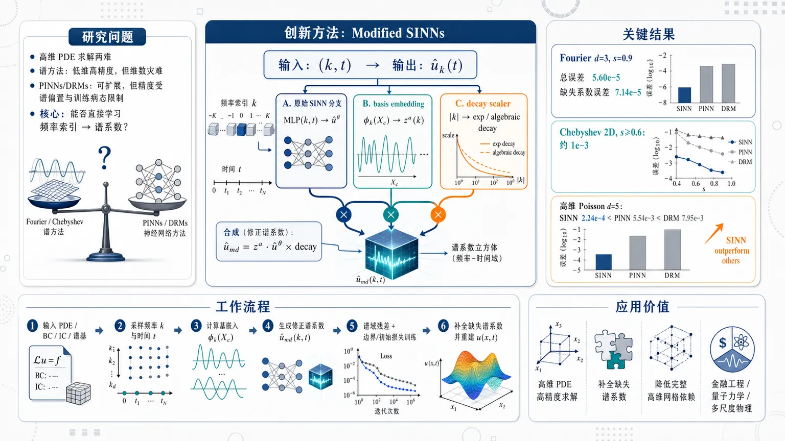
研究问题高维 PDE 求解中存在两难：传统谱方法在低维精度极高，但随维度升高出现维数灾难，且缺失有效谱系数时难以重建；PINNs/DRMs 虽可扩展到高维，却常因谱偏置、残差采样和训练病态导致精度不足。核心问题是：能否让神经网络直接学习频率索引到谱系数的映射，在不完整谱信息和高维场景下同时保持谱方法精度与神经网络可扩展性。创新方法提出 Modified Spectral-Informed Neural Networks：网络输入从物理坐标改为频率与时间 ((boldsymbolk,t))，输出谱系数 (hatubₒₗdₛyₘbₒₗₖ(t))。Aha 点是把两类调和分析先验显式嵌入网络：一是 coefficient decay scaler，用指数或代数衰减因子压低高频系数，防止稀疏采样下高频虚假放大；二是 basis embedding，把谱基函数在粗配点上的振荡形状输入 MLP，使网络学习“物理函数与基函数积分投影”的生成机制，从而预测训练集中未出现的缺失频率。工作流程输入 PDE 方程、边界/初始条件、谱基类型和部分可用频率索引；将解表示为谱展开，采样频率 (boldsymbolk) 与时间 (t)；原始 SINN 分支学习 ((boldsymbolk,t)mapstohatuθ)；基嵌入分支在粗配点集 (X_c) 上计算基函数取值并生成结构因子 (z^a(boldsymbolk))；衰减缩放分支根据频率大小生成指数或代数衰减权重；三者相乘得到修正谱系数 (hatuₘd=z^ahatuθ×decay)；用谱域 PDE 残差、边界项和初始项训练；最后补全缺失谱系数，并通过截断谱展开重建物理域解。关键结果Modified SINNs 能在 Fourier 与 Chebyshev 基下恢复随机缺失谱系数；Fourier 基、可用系数比例 (s=0.9) 时，(d=3) 总相对 (L²) 误差为 (5.60e-5±1.40e-5)，缺失系数误差为 (7.14e-5±4.27e-6)，说明缺失频率预测与整体拟合同量级。Chebyshev 2D 中，当 (s≥0.6) 仍可达到约 (10⁻³) 精度。中维 PDE 中，完整系数时 SGSM 更准，但部分系数缺失时 SGSM 迅速退化，SINNs 更鲁棒；高维 Poisson 方程中，SINNs 相比 PINNs 和 DRMs 保持显著更低误差，例如 (d=5) 时 SINN 误差 (2.24e-4)，优于 PINN 的 (5.54e-3) 和 DRM 的 (7.95e-3)。应用价值该研究为高维、谱结构稀疏或可压缩的 PDE 提供一种实用求解框架：在金融工程、量子力学、多尺度物理等高维建模中，可用神经网络补全传统谱方法难以计算的有效系数，降低对完整高维网格和完整谱索引集的依赖。它也可作为 SGSM 的补全器，在谱信息不完整时恢复缺失频率；相比物理域 PINNs，它把导数计算转化为谱域代数结构，更适合追求高精度的高维 PDE 求解。第一部分：核心概览 (Overview)
该研究提出 Modified Spectral-Informed Neural Networks（Modified SINNs），把谱方法的系数衰减先验与基函数嵌入并入神经网络，使网络直接在频域/谱系数空间学习 PDE 解。核心贡献在于：在中维 PDE 中，当谱系数不完整时，Modified SINNs 能补全缺失系数并优于稀疏网格谱方法；在高维 PDE 中，相比 PINNs 与 DRMs 保持更低误差。其学术地位在于连接了谱方法的高精度与神经网络的高维可扩展性，试图突破传统谱方法的维数灾难与 PINNs 精度不足之间的张力。
---
第二部分：结构化快速回顾
《Spectral-Informed Neural Networks Outperform Spectral Methods in High-dimensional PDEs》（None，）
背景
低维 PDE 中，谱方法可实现极高精度；中维 PDE 可借助稀疏网格、双曲交叉、压缩感知、张量列车等技术；高维 PDE 中，传统数值方法遭遇维数灾难。PINNs 可扩展到高维，但常受限于精度与效率。
方法
提出 Modified SINNs，保留 SINNs 的输入输出形式 ((boldsymbolk,t)mapsto hatu)，加入两个模块：
- Coefficient decay scaler：根据谱系数随频率衰减的 harmonic analysis 先验，对输出施加指数或代数衰减缩放；
- Basis embedding：把谱基函数在粗配点集上的取值作为嵌入输入，增强对振荡谱系数的表达能力。
结果
数值实验显示，Modified SINNs 可在 Fourier 与 Chebyshev 基下恢复随机缺失谱系数；在中维 PDE 中，当部分系数缺失时优于 SGSM；在高维 Poisson 方程中，相比 PINNs、DRMs 误差更低。例如 Fourier 基缺失系数实验中，(d=3) 时总误差为 (5.60e-5±1.40e-5)，缺失系数误差为 (7.14e-5±4.27e-6)。
讨论
Modified SINNs 的优势来自显式编码谱系数幅值衰减与基函数结构信息，使网络能在稀疏频率采样下稳定训练，并对训练集中未出现的频率进行泛化。
局限
实验主要处于稀疏谱系数设定；真正“稠密系数”高维 PDE 对 SINNs、PINNs、DRMs 都仍然困难。非线性高维 PDE 的高精度真值生成困难，因此非线性验证有限。
结论
Modified SINNs 在高维 PDE 中提供了一种兼具谱方法精度先验与神经网络扩展性的框架；其关键价值不是替代所有谱方法，而是在谱信息不完整与维度很高时，通过学习谱系数结构显著改善传统方法与 PINNs 的性能。
---
第三部分：逐章节冷凝解析 (Section-by-Section Condensing)
Abstract
Spectral methods are accurate in low dimensions but collapse in high dimensions
低维问题 (dłeq3) 中，谱方法可实现极高精度；中维问题 (4łeq dłesssim10) 中仍可通过稀疏网格或双曲交叉维持可行性；高维问题 (dgg10) 中遭遇严重维数灾难。摘要直接给出维度分层：*"For low-dimensional problems ((dłeq 3)), spectral methods can achieve exceptionally high accuracy."*；中维可行性来自 *"specific techniques such as sparse grids or hyperbolic cross"*；高维瓶颈是 *"spectral methods suffer frome the curse of dimensionality."*
PINNs scale to high dimensions but often lose accuracy and efficiency
Physics-informed neural networks（PINNs）被定位为突破高维 PDE 的候选路径，但存在精度和效率缺陷。核心判断是：*"Physics-informed neural networks (PINNs) have emerged as a promising approach to overcome this challenge, offering scalability to high dimensions, but often suffer from limited accuracy and efficiency."* 这奠定了 SINNs 的问题空间：既要保留神经网络的高维可扩展性，又要提升传统 PINNs 的数值精度。
SINNs operate directly in the spectral domain
Spectral-informed neural networks（SINNs）直接在谱域工作，避免空间导数计算并降低内存消耗。该点是方法基础：*"Recently proposed spectral-informed neural networks (SINNs) combine spectral methods with PINNs, operating directly in the spectral domain to avoid spatial derivative computations and to reduce memory consumption."* 也就是说，网络学习对象不是 (u(boldsymbolx,t))，而是谱系数 (hatubₒₗdₛyₘbₒₗₖ(t))。
Modified SINNs add coefficient decay scaling and basis embeddings
主要技术创新是 coefficient decay scaling 与 basis embeddings。摘要中的关键句为：*"we introduce Modified SINNs, which integrate coefficient decay scaling and basis embeddings motivated by harmonic analysis to enhance accuracy in high-dimensional problems and enable accurate approximation of unknown spectral coefficients."* 其中，前者约束高频系数幅度，后者注入基函数结构，使网络能预测缺失或未计算谱系数。
Modified SINNs outperform SGSM and PINNs in different regimes
实验结论区分两类场景：中维问题上优于稀疏网格谱方法，条件是谱信息不完整；高维问题上优于 PINNs。原始表述是：*"Numerical experiments on steady and time-dependent partial differential equations demonstrate that Modified SINNs outperform sparse grid spectral methods on middle-dimensional problems with incomplete spectral information and achieve superior accuracy compared to PINNs on high-dimensional problems."*
---
1 Introduction
PDEs are central to physical and engineering modeling
偏微分方程（PDEs）被定义为物理与工程问题的核心数学工具。引言开端指出：*"Partial differential equations (PDEs) are the most widely used tools for solving physical and engineering problems."* 应用背景包括金融工程与量子力学，这些领域自然产生高维问题：*"Many applications (e.g., in financial engineering, quantum mechanics) lead to high-dimensional problems."*
Conventional numerical methods show dimension-dependent feasibility
传统数值方法在不同维度区间有明确能力边界。低维 (dłeq3) 可高精度求解；中维 (4łeq dłesssim10) 可通过组合技术求解；高维 (dgg10) 成本指数增长。关键证据包括：*"Conventional numerical methods can compute accurate solutions for low-dimensional PDEs ((dłeq3))."*；中维可用方法包括 *"combining sparse grids with finite element methods"*、*"combining compressed sensing with spectral methods"*、*"combining tensor trains with backward stochastic differential equations"*；高维问题中，*"the computational cost grows exponentially with the dimension."*
Deep learning provides a high-dimensional approximation route
深度学习方法在复杂高维函数逼近上已展现能力，并被引入 PDE 求解。引言表述为：*"Deep learning methods have demonstrated an impressive ability to approximate high-dimensional and highly complex functions"*；PDE 场景下代表方法包括 PINNs 与 deep Ritz method（DRM）：*"such as physics-informed neural networks (PINNs) and the deep Ritz method (DRM)."* 还指出 PINNs 的维度上限已被推进到极高水平：*"recent studies ... have increased the maximum achievable dimensionality to one million dimensions."*
Hybrid numerical-neural methods are an active trend
近年方法倾向于把传统数值结构嵌入 PINNs：CANPINN 引入有限差分，DFVM 引入有限体积，SINN 引入谱方法。证据是：*"Some current works integrate conventional numerical methods into PINNs to enhance their performance."* 随后列出：*"CANPINN incorporates finite difference methods, DFVM adopts finite volume methods, and SINN employs spectral methods."*
Modified SINNs encode harmonic-analysis priors
该研究的核心方案是把调和分析先验纳入 SINNs，具体包括系数衰减与基依赖嵌入。关键表述为：*"By incorporating prior knowledge from harmonic analysis—specifically including coefficient decay and basis-dependent embeddings—our Modified SINNs improve stability and accuracy."* 这里的“prior knowledge”不是数据先验，而是谱系数随函数正则性变化的数学结构先验。
Modified SINNs can approximate missing spectral coefficients
区别于只计算已知谱系数的谱方法，Modified SINNs 目标之一是补全未计算或缺失系数。引言明确写道：*"the modification enables SINNs not only to compute known spectral coefficients efficiently, but also to approximate missing or uncomputed coefficients."* 这构成其相对于 SGSM 的关键差异：SGSM 只在给定稀疏索引集上计算，SINNs 可学习索引集之外的谱结构。
Three contributions define the paper’s scope
贡献包括：
- 提出 Modified SINNs：*"We propose Modified Spectral-Informed Neural Networks (Modified SINNs), which incorporate prior knowledge from harmonic analysis into the original SINN framework"*；
- 揭示 SGSM 高维仍受维数灾难限制，并用 SINNs 近似缺失系数：*"traditional sparse grid spectral methods are still limited by the curse of dimensionality in high-dimensional problems"*；
- 通过实验验证中维缺失谱信息与高维问题优势：*"Modified SINNs outperform sparse grid spectral methods on middle-dimensional problems when some coefficients are missing and achieve superior accuracy on high-dimensional problems."*
---
2 Preliminary
General PDE formulation includes governing, boundary, and initial conditions
一般 PDE 定义在 (ØmegasubsetRd) 上，形式为
[
N[u](boldsymbolx,t)=f(boldsymbolx,t),
quad
u(boldsymbolx,t)=g(boldsymbolx,t),
quad
u(boldsymbolx,0)=h(boldsymbolx).
]
其中 (N) 包含空间与时间导数，(f) 为源项，(u) 为解。原文说明：*"Here, (N) is a differential operator including spatial and temporal derivatives, (f) is a forcing term, and (u) is the solution."* 并明确：*"the first equation is called the governing equation, the second equation is called the boundary condition, and the third equation is called the initial condition."*
The analysis assumes well-posedness
所有后续方法默认 PDE 是适定的，且解为 (u:Rdi̊ghtarrowR)。原文假设是：*"we assume that Equation 1 is well-posed and that (u:Rdi̊ghtarrowR)."* 这意味着存在性、唯一性与连续依赖在理论上被预设，而非该研究证明重点。
---
2.1 Spectral Methods
Spectral methods use global basis expansions
谱方法通过全局基函数展开近似 PDE 解，不同于有限差分/有限元等局部离散方法。核心定义是：*"Spectral methods are a class of numerical methods for solving differential equations by representing the solution as a global expansion in terms of spectral bases."* 其高精度来自全局正则性利用：*"Unlike local discretization schemes, spectral methods achieve high accuracy by exploiting the global regularity of the solution."*
Spectral accuracy arises for sufficiently smooth target functions
当目标函数足够光滑，谱近似可表现出指数收敛，即谱精度。原文给出：*"When the target function is sufficiently smooth, the convergence rate of spectral approximations is often exponential, a property known as spectral accuracy."* 这也是 Modified SINNs 使用系数衰减先验的数学基础：光滑性决定谱系数衰减速度。
The solution is represented by truncated spectral expansion
PDE 解被表示为
[
u(boldsymbolx,t)=sumbₒₗdₛyₘbₒₗₖᵢₙKhatubₒₗdₛyₘbₒₗₖ(t)φbₒₗdₛyₘbₒₗₖ(boldsymbolx),
]
实际计算采用截断形式
[
u_N(boldsymbolx,t)=sumbₒₗdₛyₘbₒₗₖᵢₙK_Nhatubₒₗdₛyₘbₒₗₖ(t)φbₒₗdₛyₘbₒₗₖ(boldsymbolx).
]
原文说明：*"In practice, the truncated expansion is used"*；其中 (φbₒₗdₛyₘbₒₗₖ) 为 Fourier 或 Chebyshev 等全局基函数，(hatubₒₗdₛyₘbₒₗₖ) 为展开系数，(K_N) 为截断索引集。
Spectral coefficients are computed by Galerkin or collocation methods
谱系数 (hatubₒₗdₛyₘbₒₗₖ) 的传统求法包括 Galerkin methods 与 collocation methods。原文为：*"The coefficients (hatubₒₗdₛyₘbₒₗₖ) are determined by Galerkin methods ... or collocation methods."* 这与 SINNs 的差异在于：SINNs 用神经网络直接近似 (hatuθ(boldsymbolk,t))，而不是完全依赖数值积分或线性系统求解。
Spectral methods are limited by complex geometry, high dimension, and nonsmoothness
谱方法并非普适。原文列出三个主要限制：*"spectral accuracy is limited for complex geometries, high dimensionality, or non-smooth solutions."* 对应扩展包括 spectral element methods、fictitious domain spectral methods、sparse grid spectral methods。
SGSM reduces but does not eliminate the curse of dimensionality
Sparse grid spectral method（SGSM）通过更稀疏网格和更少谱系数缓解维数灾难，但成本仍随维度指数增长。原文指出：*"The sparse grid spectral method (SGSM) is a variant of conventional spectral methods that mitigates the curse of dimensionality by employing a sparser grid and computing fewer spectral coefficients."* 但限制仍然存在：*"the memory usage and computational cost still increase exponentially with dimensionality, which limits its applicability to high-dimensional problems ((dgg10))."*
The SGSM baseline uses hyperbolic cross index sets
实验基线采用 Shen and Yu 的 SGSM 算法，使用双曲交叉索引集构造稀疏网格。原文为：*"These methods employ hyperbolic cross index sets to construct sparse grids and introduce efficient, well-established algorithms for solving PDEs within the SGSM framework."* 该细节决定了后续与 SINNs 的比较不是弱基线，而是成熟稀疏谱方法。
---
2.2 Physics-informed Neural Networks
PINNs embed PDE constraints into the loss function
PINNs 通过损失函数而非标签数据约束解满足 PDE。原文说明：*"Unlike traditional data-driven neural networks, PINNs embed governing equations into the loss function, thereby enabling training without labeled data."* 这意味着训练数据可由采样点和方程残差构造，不需要真实解 (u)。
PINNs approximate the physical-domain solution directly
PINNs 使用神经网络 (uθ(boldsymbolx,t)) 直接逼近物理域解 (u(boldsymbolx,t))。原文为：*"the solution (u(boldsymbolx,t)) in Equation 1 is approximated by a neural network (uθ(boldsymbolx,t)) parameterized by (θ)."* 与 SINNs 相比，PINNs 的输入是空间时间点 ((boldsymbolx,t))，输出是解值 (u)。
The PINN loss combines residual, boundary, and initial terms
损失函数为
[
L(θ)=łambdaᵣLᵣ₍θ)+łambda_bL_b(θ)+łambdaᵢLᵢ₍θ),
]
其中 (łambdaᵣ,łambda_b,łambdaᵢ) 为非负权重。原文写道：*"The network is trained to minimize a composite loss function that enforces physical constraints."* 三项分别强制 PDE、边界条件、初始条件：*"which enforce the PDE, boundary conditions, and initial conditions, respectively."*
Automatic differentiation evaluates derivatives without explicit discretization
PINNs 借助自动微分计算 (N[uθ]) 中的导数。原文表述：*"Automatic differentiation provides efficient evaluation of derivatives in (N[uθ]), eliminating the need for explicit discretization of differential operators."* 这解释了其高维吸引力，但高阶导数和刚性方程仍可能带来训练困难。
PINNs are attractive for high-dimensional PDEs
由于不显式构造高维网格，PINNs 对高维 PDE 有吸引力。原文总结：*"Thus, unlike conventional numerical schemes, PINNs are particularly attractive for solving high-dimensional problems."* 但后续实验表明，吸引力主要在可扩展性，不必然在精度。
---
2.3 Spectral-Informed Neural Networks
SINNs integrate spectral methods into neural networks
SINNs 受 PINNs 启发，把谱方法嵌入神经网络。原文写道：*"Inspired by PINNs, Spectral-Informed Neural Networks (SINNs) are proposed to integrate spectral methods into neural networks."* 其目标是保留谱方法的收敛优势，同时减少 PINNs 中空间导数计算开销。
SINNs accelerate training by avoiding spatial derivatives
SINNs 的关键优势是避免计算空间导数。原文明确指出：*"SINNs accelerate training by eliminating the computation of spatial derivatives."* 对 Fourier 等微分算子对角化基，空间导数在谱域可转化为频率乘法，因此残差计算更稳定、更便宜。
SINNs reconstruct the PINN loss in spectral/collocation form
SINNs 使用 collocation 形式重构损失函数：
[
hatL(θ)
=
łambda_fhatL_f(θ)
+łambda_bhatL_b(θ)
+łambdaᵢhatLᵢ₍θ).
]
原文给出：*"SINNs reconstruct the loss function ... using the collocation formulation."* 其中 (T_f,T_b) 是时间采样集，(KN_f,KN_b,KN_ᵢ) 是不同损失项对应的谱索引集。
Orthogonality simplifies boundary and initial losses
由于谱基正交性，边界损失与初始损失可从物理空间和转换为系数差形式。例如
[
hatLᵢ₍θ)
=
sumbₒₗdₛyₘbₒₗₖᵢₙKN_ᵢ
|hatuθbₒₗdₛyₘbₒₗₖ(0)-hathbₒₗdₛyₘbₒₗₖ|².
]
原文解释：*"The second equality in each of Equations 11 and 10 holds due to the orthogonality of (φ)."* 这让 SINNs 的训练更接近“直接拟合谱系数约束”。
SINNs learn spectral coefficients rather than physical-domain values
通过最小化 (hatL(θ))，网络学习的是 (hatuθ)，即谱系数。原文写道：*"By minimizing (hatL(θ)), the network learns an approximation (hatuθ) of the coefficients (hatu)."* 若需要物理域解，可用截断展开恢复：*"one can use Equation 3 to compute its value at any point."*
Certain boundary conditions can be satisfied strictly
若所选谱基天然满足边界条件，则边界损失可移除。例如 Fourier 基适合周期边界，sinusoidal 基适合同质 Dirichlet，cosine 基适合同质 Neumann。原文说明：*"if the spectral basis inherently satisfies the boundary condition ... then (hatL_b(θ)) is removed."* 这带来 PINNs 难以实现的严格边界满足：*"SINNs can satisfy the boundary condition strictly for some PDEs."*
The SINN input is frequency and time, not space and time
SINNs 输入为频率 (boldsymbolk) 与时间 (t)，输出为谱系数 (hatuθ(boldsymbolk,t))。原文强调：*"Compared to PINNs, in SINNs, the input is the frequency (boldsymbolk) and the temporally sampled points (t), and the output is the coefficients (hatuθ(boldsymbolk,t))."* 这是整个架构范式的核心转换。
Original SINNs become unstable under nonlinear or non-diagonal operators
当 (N) 非线性，或谱基下微分算子非对角时，如果输入索引集不够大，原始 SINNs 会不稳定。原文指出：*"when (N) is nonlinear or the differential operator of (φ) is not diagonal, SINNs become unstable if the input sets are not large enough."* Modified SINNs 的两个模块正是为稳定性和泛化设计。
---
3 Modified SINNs
Modified SINNs preserve the spectral input-output form
Modified SINNs 仍保持 (((boldsymbolk,t),hatu)) 的谱域学习格式，不回到物理空间学习。原文写道：*"Modified SINNs preserve the input–output form (((boldsymbolk,t),hatu))"*。这一点很重要：修改不是把 SINNs 变成 PINNs，而是在谱域中加入先验结构。
Two modules explicitly encode harmonic-analysis priors
新增模块包括 amplitude scaler 与 embedding module。原文说明：*"integrate an amplitude scaler ... and an embedding module."* 这两个组件的功能是：*"explicitly encode prior knowledge from harmonic analysis to improve stability, accuracy, and generalization."* 其中稳定性对应高频抑制，准确性对应低频主导分量学习，泛化对应缺失频率预测。
Figure 1 defines the architecture components
图 1 中，紫色圆表示输入变量 (t,boldsymbolk)，蓝色圆表示输出 (hatu,z,hatuₘd)，黄色方块表示算子，红色矩形表示神经网络组件。原文图注为：*"Purple circles denote input variables: (t) and (boldsymbolk), blue circles represent output values: (hatu), (z), and (hatuₘd), yellow squares indicate operators ... and red rectangles signify neural network components."* 顶部虚线为原始 SINNs，底部虚线为修改部分。
---
3.1 Coefficient Decay
Coefficient decay determines spectral accuracy and efficiency
谱系数衰减速度决定谱方法的精度与效率。原文直述：*"The decay of expansion coefficients plays a fundamental role in spectral methods, as it directly determines the accuracy and efficiency of numerical schemes."* 若系数快速衰减，较少低频项即可高精度表示；若高频系数不衰减，则截断误差大。
Smoothness bounds coefficient decay
调和分析中，系数衰减率受函数光滑性约束。原文为：*"In harmonic analysis, it is known that the rate of coefficient decay is bounded by smoothness."* PDE 解的光滑性和解析性通常可从方程结构、系数与源项判断：*"the smoothness and analyticity of PDE solutions can often be determined from the structure of the given equations, the coefficients, and the source term."*
Coefficient decay is treated as prior knowledge
由于 PDE 解的正则性可推断，对应谱系数衰减率可作为学习先验。原文写道：*"the decay rate of corresponding spectral coefficients can be regarded as prior knowledge when learning their distribution."* 这使网络输出不再完全自由，而被限制在物理/数学上合理的频谱形态。
Fourier analytic functions receive exponential decay scaling
对 Fourier 基下解析函数，系数满足
[
|hatubₒₗdₛyₘbₒₗₖ|łeq C e⁻|boldsymbolαḑotboldsymbolk|₁,
quad boldsymbolα,C>0.
]
原文为：*"Theorem E.1 establishes that the magnitude of the corresponding coefficients satisfies (|hatubₒₗdₛyₘbₒₗₖ|łeq C,e⁻|boldsymbolαḑotboldsymbolk|₁)."* 因而 Modified SINNs 将输出乘以 (e⁻|boldsymbolαḑotboldsymbolk|₁)，其中 (boldsymbolα) 是可学习参数。
The scaler reallocates network capacity toward dominant low frequencies
衰减缩放使低频分量获得更多表达容量，高频分量被抑制。原文解释：*"By reweighting different frequencies according to this prior, the scaler redistributes approximation capacity toward strongly dominant low-frequency components and suppresses weakly dominant high-frequency components."* 这也是高维稀疏频率采样下稳定训练的关键。
Correct decay assumptions improve generalization
当假设衰减率与真实解正则性一致时，缩放器提升泛化效率。原文为：*"When the assumed decay rate is consistent with the true regularity of the solution, this scaler improves generalization efficiently."* 反过来，若正则性假设错误，可能造成频谱偏置，这构成潜在局限。
---
3.2 Basis Embedding
Spectral coefficients are integrals against basis functions
谱系数本质为
[
hatubₒₗdₛyₘbₒₗₖ
=
intØₘₑgₐu(boldsymbolx)φbₒₗdₛyₘbₒₗₖ(boldsymbolx),dboldsymbolx.
]
原文写道：*"In spectral methods, the coefficient (hatubₒₗdₛyₘbₒₗₖ) is calculated by integration."* 这表明 (hatubₒₗdₛyₘbₒₗₖ) 不只是频率标签的任意函数，而是由 (u) 与 (φbₒₗdₛyₘbₒₗₖ) 的内积结构决定。
Discrete forward transform uses quadrature over collocation points
离散正变换通过配点集 (XsubsetØmega) 上的求积实现：
[
hatubₒₗdₛyₘbₒₗₖX
=
sumbₒₗdₛyₘbₒₗₓᵢₙX
ømega(boldsymbolx)u(boldsymbolx)φbₒₗdₛyₘbₒₗₖ(boldsymbolx).
]
原文给出：*"The discrete forward transform is computed via a quadrature rule on the collocation point set (XsubsetØmega)."* 其中 (ømega(boldsymbolx)) 是求积权重。
Modified SINNs introduce a much coarser collocation set
为避免完整高维变换成本，Modified SINNs 使用粗配点集 (X_c)，满足 (|X_c|łl|X|)。原文为：*"Modified SINNs introduce a much coarser collocation point set (X_c), where (|X_c| łl |X|)."* 这使基函数结构可被低成本注入网络。
Basis embedding maps basis evaluations to a latent coefficient factor
基函数嵌入定义为
[
z^a(boldsymbolk)=øperatornameMLP(boldsymbolφbₒₗdₛyₘbₒₗₖ),
]
其中 (boldsymbolφbₒₗdₛyₘbₒₗₖinRd×|X_c|) 包含每个维度的一维基函数在粗配点上的取值。原文写道：*"where (boldsymbolφbₒₗdₛyₘbₒₗₖ=...inRd×|X_c|) is the matrix..."* 这使网络看到的不只是频率编号 (boldsymbolk)，还包括该频率对应的基函数形状。
The embedding module approximates the underlying physical-function projection
MLP 被设计为近似底层物理函数 (u(boldsymbolx)) 与基函数之间的积分结构。原文说明：*"The MLP is designed to approximate the underlying physical function (u(boldsymbolx)); thus, the basis embedding can provide the neural network with a more powerful capability to represent oscillatory coefficients."* 这解释了其对 Chebyshev 等非对角算子基的价值。
Theorem 3.1 gives generalization to untrained frequencies
定理 3.1 假设求积误差满足
[
łeft|
intØₘₑgₐf(boldsymbolx),dboldsymbolx
-
sumbₒₗdₛyₘbₒₗₓᵢₙXømega(boldsymbolx)f(boldsymbolx)
i̊ght|
łeq
ǎrepsilon(|X|),
]
并在 (øperatornameRank(Φ)≥|X_c|) 与训练集拟合误差 (|z^a(boldsymbolk)-hatubₒₗdₛyₘbₒₗₖX_c|łlǎrepsilon(|X_c|)) 条件下，得到
[
|z^a(boldsymbolk)-hatubₒₗdₛyₘbₒₗₖX|
=
O(ǎrepsilon(|X_c|)),
quad
forallboldsymbolkinK_wsetminusKₜ.
]
原文核心结论是：*"Theorem 3.1 reveals that (za(boldsymbolk)) converges to (hatubₒₗdₛyₘbₒₗₖX) with the same convergence rate as that of the quadrature."*
---
3.3 Integrated Architecture
The final Modified SINN output multiplies three factors
Fourier 基下光滑解的 Modified SINN 输出为
[
hatutⁱldeθₘd(boldsymbolk,t)
=
z^a(boldsymbolk)
hatuθ(boldsymbolk,t)
e⁻|boldsymbolαḑotboldsymbolk|₁.
]
原文写道：*"the output (hatuₘdtⁱldeθ) of modified SINNs based on Fourier basis can be represented as..."* 三个因子分别代表：基嵌入结构、原始 SINN 输出、频率衰减先验。
All new components are learnable
参数集合为 (tildeθ=a,θ,boldsymbolα)，其中 (a) 控制嵌入 MLP，(θ) 控制原始谱系数网络，(boldsymbolα) 控制衰减率。原文为：*"where (a,θ,boldsymbolα) are learnable parameters and (tildeθ=a,θ,boldsymbolα) is the collection."*
The architecture adapts to non-Fourier bases
若使用非 Fourier 基，可替换对应谱基的系数衰减定理与嵌入函数 (φ)。原文 Remark 3.1 写道：*"If the used basis is not Fourier basis, then one can use the coefficient decay theorem of other spectral bases ... and change the function (φ) in (z^a(boldsymbolk))."* 这使框架可扩展到 Chebyshev、cosine、sinusoidal 等谱基。
Nonsmooth solutions use algebraic decay scaling
对于非光滑解，输出改为
[
hatuₘdtⁱldeθ(boldsymbolk,t)
=
z^a(boldsymbolk)
hatuθ(boldsymbolk,t)
/prodⱼ₌₁d|kⱼ|ⁿⱼ,
]
其中 (boldsymboln) 可学习。原文说明：*"If the solution is not smooth, then the output is..."* 并补充零频率处理：*"the decay scaling is applied only to nonzero frequency components; for (kⱼ₌₀), the corresponding factor is set to one to avoid singularity."*
Decay scaling prevents high-frequency overestimation
系数衰减缩放显式编码“高频系数应变小”的分析先验。原文写道：*"The coefficient decay scaler explicitly encodes the analytical prior that spectral coefficients diminish with increasing frequency."* 它的稳定作用是：*"preventing overestimation in high-frequency regions and stabilizing training, especially when the sampled frequencies are sparse."*
Basis embedding enables generalization to missing frequencies
基函数嵌入注入谱基结构，使 Modified SINNs 能预测训练集中未出现的频率。原文总结：*"Modified SINNs are able to generalize to missing frequencies outside the training set by leveraging the essential prior knowledge in amplitude and structure."* 这直接支撑后续“补全缺失谱系数”的实验设计。
High-dimensional difficulty is identifying valid coefficients
高维问题的主要挑战被定义为识别有效系数，即幅值超过阈值的系数。原文脚注定义：*"A valid coefficient means its magnitude is greater than a given threshold (e.g., (10⁻⁶))."* 传统方法要么限制在预设索引结构如 hyperbolic cross，要么自适应识别；但高维下完整识别所有有效系数计算不可承受。
Approximating missing valid coefficients can improve SGSM
高维中若无法计算所有有效系数，则准确近似缺失有效系数可以重建更完整的有效谱集，进一步提高 SGSM 精度。原文表述：*"accurately approximating these missing valid coefficients can substantially reconstruct the complete set of valid coefficients and further improve the accuracy of SGSM."* 这使 SINNs 不只是替代 SGSM，也可作为 SGSM 的补全器。
---
3.4 Genuinely Dense Coefficients in High Dimensions
Experiments use sparse coefficient settings
该节先澄清实验条件：所有实验都处于稀疏系数设定。原文开头写道：*"all experiments in this work are conducted under sparse coefficient settings."* 因而结论不应直接外推到任意高维稠密频谱函数。
Genuinely dense coefficients mean no sparse representation under any basis
“真正稠密系数”指目标函数在任何基下都没有稀疏表示。原文定义：*"‘genuinely dense coefficients’ means that the target function admits no sparse representation under any basis."* 这是比“在 Fourier 基下不稀疏”更强的困难设定。
Genuinely dense high-dimensional PDEs remain fundamentally hard
真正稠密谱系数的高维 PDE 对现有高维方法仍是根本困难，包括 PINNs 和 DRMs。原文判断为：*"PDEs with genuinely dense coefficients remain fundamentally challenging for existing high-dimensional methods, including PINNs and DRMs."* 这是一项重要限制声明，避免过度宣称。
MLPs can be interpreted as adaptive basis expansions
标准 MLP 最后一层可写成
[
uθ(boldsymbolx)
=
sumⱼ₌₁wcⱼφⱼ₍boldsymbolx),
]
其中 (φⱼ) 是倒数第二层输出，(cⱼ) 是最后线性层系数。原文解释：*"even a neural network can be interpreted as representing the target function by the MLP-constructed basis."* 因此神经网络并未逃离“基展开”的本质，只是基函数由网络学习。
Dense targets require huge width or incur large approximation error
若目标函数对任何基都稠密，高维精确逼近需要极大宽度 (w)，否则会产生大误差。原文结论是：*"if the target function is genuinely dense, accurate approximation in high dimensions requires either an extremely large width (w) or otherwise incurs a large approximation error."* 这说明 Modified SINNs 的成功依赖一定的谱结构或可压缩性。
---
4 Experiments
Experiments compare Modified SINNs with SGSM, PINNs, and DRMs
实验目标是展示 SINNs 的性能，并与 SGSM、PINNs、DRMs 比较。原文说明：*"experiments are conducted to show the performance of SINNs ... and compare them with SGSM and PINNs."* 同时规定后文 “SINNs” 指 Modified SINNs：*"‘SINNs’ refers to our Modified SINNs."*
Experiments focus on dimensions greater than three
低维 (dłeq3) 的 SINNs 对比已有先前工作，因此这里主要关注 (d>3)。原文为：*"the experiments in this section mainly focus on (d>3)."* 这符合研究目标：检验中高维 PDE 中谱方法与神经网络方法的边界。
The experimental program has five parts
实验分为五类：
- 缺失系数近似；
- 中维问题与 SGSM 比较；
- 高维问题与 PINNs/DRMs 比较；
- 谱方法与 SINNs 结合策略；
- 消融实验。
原文结构为：*"First, we conduct experiments on approximating missing coefficients..."*，随后依次为 *"compare with SGSM"*、*"compare with PINNs and DRMs"*、*"combines spectral methods and SINNs"*、*"ablation study."*
Baselines differ by dimensional regime
中维 SGSM 比较中不纳入 PINNs/DRMs，因为它们不能恢复缺失系数且在中维通常弱于谱方法。原文写道：*"since PINNs and DRMs are unable to recover missing coefficients and generally perform worse than spectral methods in middle-dimensional problems, they are not considered baselines in Section 4.2."* 高维比较中不纳入 SGSM，因为其不可扩展：*"SGSM is not scalable to high-dimensional problems."*
Fourier and Chebyshev bases represent diagonal and non-diagonal operators
实验主要关注 Fourier 基 与 Chebyshev 基。Fourier 代表微分算子对角化情形，Chebyshev 代表非对角情形。原文为：*"We mainly focus on the Fourier basis (representative of diagonal differential operators) and the Chebyshev basis (representative of non-diagonal differential operators)."* 这使实验覆盖两类典型谱基行为。
The metric is relative (L²) error and hardware is A40-40G
评价指标为相对 (L²) 误差。原文写道：*"The metric used in this paper is the relative (L²) error."* 实验硬件为：*"These experiments are conducted on an A40-40G with CUDA version 12.4."* 其他超参数在 GitHub 仓库给出。
---
4.1 Approximate Missing Coefficients
Random masking tests coefficient-recovery ability
第一组实验测试网络近似随机遮蔽谱系数的能力。遮蔽按均匀分布采样。原文说明：*"we evaluate the network’s ability to approximate randomly masked coefficients sampled from a uniform distribution."* 这种设定被承认为不完全现实：*"such masking is unrealistic since significant coefficients are usually concentrated at low frequencies."* 但它提供直观基准。
The available coefficient ratio is (s), missing ratio is (1-s)
设 (1-s) 为缺失系数比例，(Nᵥₐₗᵢd) 为有效系数总数，训练集随机采样 (sNᵥₐₗᵢd) 个系数。原文定义：*"We set (1-s) to be the proportion of missing coefficients."* 以及：*"We randomly sample (sNᵥₐₗᵢd) coefficients to form the training set."*
Fourier basis experiment uses (s=0.9)
Table 1 展示 Fourier 基下 (s=0.9) 的结果。原文说明：*"We demonstrate the performance in Table 1 with Fourier basis and (s=0.9)."* 表中 “Error” 是所有有效系数上的相对 (L²) 误差，“Error (Missing)” 是缺失系数上的相对 (L²) 误差，“Rate” 是训练速率：*"‘Error’ denotes the relative (L²) error over all valid coefficients, ‘Error (Missing)’ denotes the relative (L²) error over the missing coefficients, and ‘Rate’ denotes the training rate of SINNs."*
Fourier missing-coefficient recovery is accurate in low and moderate dimensions
Table 1 数值如下：
- (d=2)：总误差 (4.21e-4±8.00e-5)，缺失误差 (1.15e-3±1.20e-3)，速率 (1.16e+3) ite/s；
- (d=3)：总误差 (5.60e-5±1.40e-5)，缺失误差 (7.14e-5±4.27e-6)，速率 (8.01e+2) ite/s；
- (d=6)：总误差 (2.40e-2±3.23e-2)，缺失误差 (3.08e-2±2.76e-2)，速率 (6.43e+1) ite/s；
- (d=8)：总误差 (3.92e-3±2.42e-4)，缺失误差 (4.98e-3±3.54e-4)，速率 (5.34e+1) ite/s。
原文总结为：*"SINNs can accurately approximate masked Fourier coefficients when only a partial spectral set ((s=0.9)) is available."*
Missing-coefficient error is comparable to total error
实验中缺失系数误差与总体误差相近，说明遮蔽本身不是主要误差来源。原文分析：*"Across all dimensions, the error on the missing coefficients (‘Error (Missing)’) is comparable to the overall error (‘Error’), indicating that coefficient masking is not the dominant source of approximation error."* 更主要误差来自解本身的振荡复杂性：*"the errors are mainly driven by the intrinsic oscillatory complexity of the solution."*
Chebyshev tests show (O(10⁻³)) accuracy when (s≥0.6)
对 2D Chebyshev 基，研究不同 (s) 与 (|X_c|) 的影响。结果表明当 (s≥0.6) 时仍可达到 (O(10⁻³)) 精度。原文为：*"the results are shown in Figure 2 and indicate that an approximation accuracy of (O(10⁻³)) can still be achieved when (s≥0.6)."*
The 2D Chebyshev visualization uses a mixed oscillatory function
Figure 3 使用函数
[
u(x,y)=e⁻⁵⁽x^²⁺y^²⁾sin(5x)sin(3y)+0.2o̧s(10xy),
quad x,yin[0,1],
]
并随机遮蔽 10% 系数。原文写道：*"where 10% of the coefficients are randomly sampled to be masked."* 结果显示预测系数接近目标值，误差主要集中在大幅值系数：*"the predicted coefficients are close to the target values, and the errors are mainly concentrated in large magnitude coefficients."*
---
4.2 Compare with Spectral Methods
SGSM comparison is limited to (dłesssim10)
由于 SGSM 只能处理约 (dłesssim10) 的 PDE，比较实验限制在中维问题。原文说明：*"Since the SGSM can only handle PDEs with (dłesssim10), we conducted experiments on several types of PDEs."* 这与前文关于 SGSM 仍受维数灾难限制的论断一致。
Fourier-basis PDEs use (d=2,3,5,8)
Fourier 基实验包括 Poisson 方程与热方程，维度为 (d=2,3,5,8)。原文为：*"the Poisson’s equation and heat equation with the Fourier basis for (d=2,3,5,8)."* Fourier 基代表微分算子对角化的较友好情形。
Chebyshev-basis PDEs use (d=2,3,5,6)
Chebyshev 基实验包括稳态对流方程和含时对流方程，维度为 (d=2,3,5,6)。原文为：*"the steady- and time-dependent convection equations with the Chebyshev basis for (d=2,3,5,6)."* 这类问题对 SINNs 更具挑战，因为 Chebyshev 下微分算子非对角。
Fair comparison uses the same masked matrix and SGSM parameter (q=10)
为公平比较，SINNs 与 SGSM 使用相同遮蔽矩阵，并设置 SGSM (q=10)。原文写道：*"To fairly compare the performance of SINNs and SGSM ((q=10)), we use the same masked matrix for both methods."* 这避免了因可用系数位置不同导致的比较偏差。
SGSM is better when all coefficients are available
当 (s=1)，即无系数缺失时，SGSM 因能高精度计算谱系数而更准确。原文总结：*"when (s=1), SGSM achieves higher accuracy due to its high-accuracy computation of spectral coefficients."* 这说明 SINNs 并非在完整低/中维谱信息下必然优于经典谱方法。
SINNs are more robust when coefficients are missing
当 (s<1) 时，SGSM 精度快速恶化，而 SINNs 恶化较慢。原文为：*"when coefficients become partially unavailable ((s<1)), the performance of SGSM deteriorates rapidly, while SINNs deteriorate more slowly."* 这直接证明 SINNs 的优势场景是不完整谱信息。
The central advantage is approximating unknown coefficients
Figure 4 的结论是 SINNs 能有效近似未知谱系数，从而在不完整谱情形中比 SGSM 更鲁棒。原文写道：*"These results indicate the advantage of SINNs over SGSM when some coefficients are missing, demonstrating their ability to effectively approximate unknown spectral coefficients and highlighting the robustness of SINNs in incomplete spectral cases."*
---
4.3 High-dimensional PDEs
High-dimensional comparison uses Poisson equations
高维实验在高维 Poisson 方程上比较 SINNs、PINNs 和 DRMs。原文为：*"we compared our SINNs with representative machine learning models ... on high-dimensional Poisson’s equations."* SGSM 不参与该节比较，因为此前已说明其高维不可扩展。
PINN baseline uses PirateNets to mitigate spectral bias
PINNs 采用 physics-informed residual adaptive networks（PirateNets）。原文写道：*"For PINNs, we use the network physics-informed residual adaptive networks (PirateNets) ... which can mitigate the spectral bias for PINNs."* 这说明对比并非使用最朴素 PINN，而是使用针对谱偏置改进的代表性模型。
Fourier feature standard deviation is set to (s=1/d)
PirateNets 的 Fourier feature embedding 标准差设置为 (s=1/d)，以避免高维累积问题。原文说明：*"for the standard deviation (s) of Fourier feature embeddings in PirateNets, we set (s=1/d) to avoid the accumulation problem when (d) is large."* 这是高维实验的重要实现细节。
DRM baseline uses periodic embedding and NDRM ideas
DRMs 除 periodic embedding 外，还使用 natural deep Ritz methods（NDRMs） 的思想。原文说明：*"For DRMs, in addition to periodic embedding, we use natural deep Ritz methods (NDRMs)."* NDRMs 强调罚项权重敏感性，并把罚项纳入能量泛函损失：*"reveal the sensitivity to the weight of the penalty term ... and propose integrating the penalty term into the energy functional loss."*
NDRM correction term is omitted for high-dimensional cost reasons
由于高维函数中 (øperatornamecurlboldsymbolu) 计算昂贵，NDRM 修正项被省略。原文写道：*"since (curl boldsymbolu) is computationally expensive for high-dimensional functions, we omit the proposed correction term of NDRMs."* 这意味着 DRM 基线是经过实际高维可计算性调整的版本。
SINNs maintain lower errors as dimensionality increases
Tables 2 and 3 显示，PINNs 与 DRMs 误差随维度快速增加，而 SINNs 保持显著更低误差。原文总结：*"While the errors of PINNs and DRMs increase rapidly with dimensionality, SINNs maintain significantly lower errors, especially in high dimensions."* 并强调：*"These results highlight the advantage of SINNs in high-dimensional problems."*
Available Table 2 values show SINNs outperform PINN and DRM at (d=2,5)
Table 2 中可见数值包括：
- (d=2)：PINN (3.20e-4±6.77e-5)，DRM (2.48e-3±4.36e-5)，SINN (1.61e-4±1.64e-5)；
- (d=5)：PINN (5.54e-3±1.13e-3)，DRM (7.95e-3±1.87e-4)，SINN (2.24e-4±6.80e-5)。
这些数值支持原文结论：*"SINNs maintain significantly lower errors."*
Additional multiscale experiments are referenced
高维 Poisson 外，还进行了更具挑战性的多尺度问题实验。原文说明：*"we conducted additional experiments on challenging problems to demonstrate the advantage of SINNs in multiscale problems, the results are shown in Table 11."* 具体 Table 11 数值未包含在给定材料中。
---
第四部分：深度理解与语言支持 (Understanding & Nuance)
1. 术语解析
Spectral-informed neural networks
Spectral-informed neural networks（SINNs）不是普通 PINNs 加一个谱正则项，而是把学习对象从物理域解 (u(boldsymbolx,t)) 改成谱域系数 (hatu(boldsymbolk,t))。其微妙之处在于 “informed” 指谱结构信息嵌入网络训练与输出形式，不是单纯使用 Fourier features。原文核心定义是：*"the input is the frequency (boldsymbolk) and the temporally sampled points (t), and the output is the coefficients (hatuθ(boldsymbolk,t))."*
Coefficient decay
Coefficient decay 指谱系数随频率增大而变小的规律。对解析函数，Fourier 系数通常指数衰减；对有限光滑函数，往往代数衰减。这里不是经验 trick，而是调和分析中的正则性结论。原文说：*"the rate of coefficient decay is bounded by smoothness."* 微妙点：衰减先验若与真实正则性匹配，会提升泛化；若错误，可能压制真实高频结构。
Basis embedding
Basis embedding 指把基函数在粗配点上的取值作为神经网络输入的一部分，而不是只输入频率索引 (boldsymbolk)。这使网络获得“该频率对应的基函数长什么样”的信息。原文定义：*" (za(boldsymbolk)=øperatornameMLP(boldsymbolφbₒₗdₛyₘbₒₗₖ))."* 微妙点：它不同于 positional encoding；它编码的是谱基与积分投影结构。
Hyperbolic cross
Hyperbolic cross 是稀疏谱方法中常用的多维索引集，用来避免完整张量网格的指数爆炸。直观上，它优先保留多个维度频率乘积较小的项，而不是所有 (|boldsymbolk|ᵢₙfₜyłeq N) 的项。原文指出 SGSM 使用它：*"These methods employ hyperbolic cross index sets to construct sparse grids."* 微妙点：它缓解维数灾难，但不消除维数灾难。
Genuinely dense coefficients
Genuinely dense coefficients 指目标函数在任何基下都不能稀疏表示。它比“在 Fourier 基下稠密”更强，因为换基也无法得到稀疏性。原文定义：*"the target function admits no sparse representation under any basis."* 微妙点：若目标函数 genuinely dense，SINNs、PINNs、DRMs 都没有免费午餐，仍需要极大模型容量或承受误差。
---
2. 疑难查证
为什么谱系数衰减可以帮助神经网络？
谱方法的基本事实是：光滑函数的高频系数通常很小。神经网络若直接学习 (hatu(boldsymbolk,t))，高频区域的输出可能出现不合理放大，尤其当训练频率稀疏时更严重。Modified SINNs 通过
[
e⁻|boldsymbolαḑotboldsymbolk|₁
]
预先压低高频幅度，让网络主要学习“去除已知衰减趋势后的剩余结构”。这类似统计建模中的 variance stabilization：先把已知尺度变化剥离，再学习更平滑的残差函数。
为什么基函数嵌入能预测缺失频率？
仅输入 (boldsymbolk) 时，网络只知道“这是第几个频率”；输入 (boldsymbolφbₒₗdₛyₘbₒₗₖ) 后，网络知道“这个频率对应的基函数在空间中的振荡形状”。谱系数是
[
hatubₒₗdₛyₘbₒₗₖ=int u(boldsymbolx)φbₒₗdₛyₘbₒₗₖ(boldsymbolx),dboldsymbolx,
]
因此不同 (boldsymbolk) 的系数并非彼此独立，而是由同一个 (u(boldsymbolx)) 与不同基函数投影产生。基函数嵌入让网络学习这种共同生成机制，所以能外推到未训练频率。
为什么 SGSM 在缺失系数时退化更快？
SGSM 本质上是“计算选定索引集上的谱系数，然后重建”。若某些有效系数缺失，它通常没有机制推断这些系数，只能当作零或未使用，导致重建误差直接增加。SINNs 则学习 (boldsymbolkmapsto hatubₒₗdₛyₘbₒₗₖ) 的函数关系，因此即使某些 (boldsymbolk) 未观测，也可用网络预测。两者差异类似：SGSM 是稀疏表格计算，SINNs 是频率到系数的函数学习。
为什么 PINNs 高维可扩展但精度不一定高？
PINNs 不需要构造完整高维网格，所以形式上可扩展到很高维。但 PINNs 在物理域直接优化 PDE 残差，面临采样误差、谱偏置、梯度病态、边界条件权重敏感等问题。高维时，残差采样覆盖困难，局部误差可能难以被训练发现。SINNs 在谱域训练，尤其对 Fourier 基下对角算子，可把导数计算转化为频率代数操作，因此更容易保留高精度结构。
---
第五部分：创新评估与关联 (Synthesis & Novelty)
1. 创新性判断
From solving coefficients to learning the coefficient field
传统谱方法计算有限索引集上的谱系数；Modified SINNs 学习的是连续/离散频率索引上的映射
[
(boldsymbolk,t)mapsto hatubₒₗdₛyₘbₒₗₖ(t).
]
这一转变使方法具备补全未计算系数的能力。过去 2–5 年中，PINNs、DRM、Fourier features、operator learning 多集中于物理域函数逼近或解算子学习；该工作更明确地把谱系数分布本身作为学习对象，并用 harmonic analysis 先验约束它。
Prior-informed spectral learning rather than generic neural approximation
Modified SINNs 的新颖性不在“用神经网络求 PDE”本身，而在把两个可解释数学先验注入谱域学习：
- 幅值先验：光滑性决定系数衰减；
- 结构先验：谱系数是物理函数与基函数的积分投影。
这比普通 PINNs 的 PDE 残差约束更具体，也比普通 Fourier features 更接近谱方法本体。
Missing spectral coefficients become a learnable object
SGSM、hyperbolic cross、压缩感知谱方法通常关注如何选择或恢复稀疏谱索引；但高维时，完整有效系数识别非常昂贵。该研究提出的关键问题是：已知部分有效系数时，能否学习补全剩余有效系数？实验表明在 (s=0.9) Fourier 缺失实验中，缺失误差与总体误差同量级；Chebyshev 2D 中，当 (s≥0.6) 仍可达到 (O(10⁻³)) 精度。这一方向把谱方法的瓶颈从“计算所有系数”转为“学习系数规律”。
A clearer regime distinction for spectral methods vs SINNs
该研究没有简单宣称神经网络全面优于谱方法，而是给出更细的适用区间：
- 低维/中维且完整谱信息：SGSM 或传统谱方法通常更准；
- 中维但谱信息缺失：SINNs 更鲁棒；
- 高维且稀疏/可压缩谱结构存在：SINNs 比 PINNs/DRMs 更有优势；
- genuinely dense 高维问题：所有现有方法仍困难。
这种边界划分比单纯 benchmark 排名更有学术价值。
The main unresolved issue is dependence on spectral sparsity or compressibility
创新点依赖一个重要前提：PDE 解在某种谱基下具有可压缩结构。若目标函数 genuinely dense，则 Modified SINNs 也不能规避高维逼近的根本困难。该研究主动指出：*"PDEs with genuinely dense coefficients remain fundamentally challenging for existing high-dimensional methods, including PINNs and DRMs."* 因此其新颖性更准确地定位为：在高维但谱结构可利用的 PDE 中，把谱先验与神经网络学习结合，突破 SGSM 的缺失系数和高维扩展限制。
-
02
📊 含图深析
📄 摘要：尝试利用量子生成对抗网络 QGAN 检测后量子密码协议中的漏洞。动机是即便当前量子计算机规模与精度有限，仍可能作为启发式搜索工具评估面向容错量子攻击的密码方案；摘要未给出具体密码体系、量子比特数或攻击成功率。
💡 亮点：QGAN 被用于探索后量子密码协议弱点，而非直接破解大规模加密。该文与材料方向关联较弱，但展示了量子机器学习在安全性评估中的早期应用边界。
📖 展开分析 + 配图
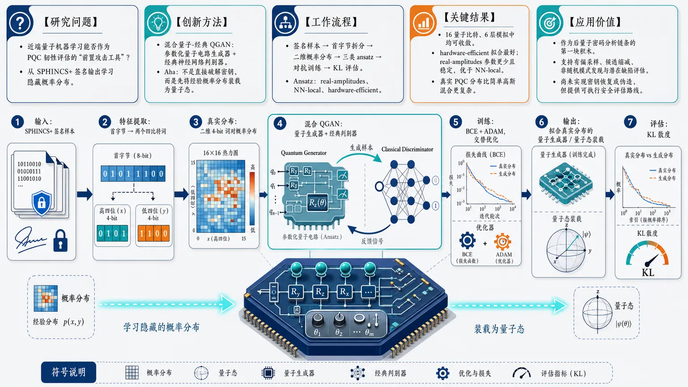
研究问题在后量子密码已进入标准化和部署的背景下，近端量子机器学习是否能成为评估其韧性的“前置攻击工具”：能否从 SPHINCS+ 等后量子签名输出中学习隐藏的概率分布，并把这些统计结构转化为量子计算可处理的形式。创新方法提出混合量子-经典 QGAN 框架：用参数化量子电路作为生成器，经典神经网络作为判别器，对抗式学习 SPHINCS+ 签名首字节拆分出的四比特词对分布；Aha 点在于不是直接破解密钥，而是先把后量子签名的经验概率分布“装载”为量子态，为后续量子搜索、候选缩减和弱点发现铺路。工作流程输入 SPHINCS+ 签名样本，提取签名首字节并拆成二维四比特词对；构建真实二维概率分布；量子生成器通过 real-amplitudes、NN-local、hardware-efficient 三类 ansatz 生成候选分布；经典判别器判断真实样本与生成样本；用二元交叉熵和 ADAM 交替训练；最终输出可近似真实签名分布的量子生成器，并用 KL 散度衡量拟合质量。关键结果在 16 量子比特、6 层电路的模拟实验中，三种 QGAN 架构均能收敛；hardware-efficient ansatz 对 SPHINCS+ 签名分布拟合最好，real-amplitudes 以更少参数取得稳定且优于 NN-local 的效果；简单高斯混合分布上三者差异很小，反衬真实 PQC 签名分布更复杂，并说明电路表达能力越强并不必然带来更好学习效果。应用价值该研究把 QGAN 定位为后量子密码分析链条的第一块积木：可将签名、密钥来源或内部状态的概率结构编码进量子态，帮助后续量子/混合算法进行有偏采样、缩小搜索空间、发现非随机模式或潜在设计缺陷；虽然尚未实现密钥恢复或伪造，但为评估 PQC 在未来量子环境中的安全韧性提供了可执行路线。第一部分：核心概览
这篇论文把 Quantum Generative Adversarial Networks（QGANs） 作为一种“前置攻击/评估”工具，首次系统性地把 后量子密码（PQC） 的安全性评估与 量子机器学习 连接起来。核心贡献不在于实现完整破解，而在于证明：即使在 NISQ 条件下，量子生成模型也能学习并重建 SPHINCS+ 签名片段的概率分布，为后续用量子算法搜索弱点、缩小密钥或输出空间提供可行入口。相较近年侧重侧信道、经典ML或对称密码的工作，这里把目标推进到 PQC分布建模 与 量子辅助密码分析工作流。
---
第二部分：结构化快速回顾
《Towards quantum machine learning for assessing the resilience of post-quantum cryptography》（None，）
背景：大规模容错量子计算威胁 RSA、离散对数、对称搜索 与未来通信安全；PQC 已开始标准化，但量子技术也同步成熟，迫切需要用量子方法反向评估其韧性。
方法：构建 混合量子-经典 QGAN，以量子生成器学习 SPHINCS+ 签名首字节派生出的四比特词对分布；比较 real-amplitudes、NN-local、hardware-efficient 三类 ansatz。
结果：在 16 量子比特、6 层电路下，三种架构均能收敛；hardware-efficient 对 SPHINCS+ 分布拟合最好，real-amplitudes 次之且明显优于 NN-local。
讨论：分布学习能力与电路表达能力并非单调对应；对简单的高斯混合分布，三类 ansatz 几乎同样有效，说明真实 PQC 数据更难。
局限：结果基于模拟而非真实量子硬件；数据量只覆盖签名的一小部分；未完成密钥恢复或伪造等完整密码分析。
结论：QGAN 可作为 PQC 攻击链条的第一步，用于把经典签名分布加载到量子态中，进而为后续量子/混合攻击提供输入表示。
---
第三部分：逐章节冷凝解析
Abstract
QGAN 作为 PQC 韧性评估工具
- 研究目标是把 QGANs 用作后量子密码评估工具，直接对抗未来具备容错能力的量子对手。关键句是：*“we present an attempt to utilized the capabilities of Quantum Generative Adversarial Networks (QGANs)… for this purpose.”*
- 具体示例不是抽象概念，而是 hash-based digital signatures：*“loading the probability distribution of the hash-based digital signatures into the memory of a quantum computer.”*
- 结论明确指向 近端混合量子-经典方法 的可行性：*“near-term hybrid quantum-classical methods posses capabilities required for this purpose.”*
- 方法定位为攻击工作流中的第一步，而非完整破译：*“a first step in the workflow enabling the utilization of quantum computing for attacking post-quantum cryptographic primitives.”*
1 Introduction
PQC 的出现源自量子威胁
- Post-Quantum Cryptography (PQC) 的发展由大规模容错量子计算的预期能力推动；PQC 设计目标是抵抗已知量子算法，尤其是 Shor 与 Grover。对应表述为：*“PQC algorithms are specifically engineered to be secure against known quantum algorithms, primarily Shor’s algorithm… and Grover’s algorithm.”*
- Shor 算法 对整数分解与离散对数的影响被直接视为公钥密码系统的根本威胁：*“demonstrated that quantum computers could be used to efficiently solve mathematical problems like integer factorization and the computation of discrete logarithms.”*
- 由此导出 harvest now – decrypt later（又称 *retrospective decryption*）威胁模型：*“adversaries may be intercepting and storing encrypted communications with the expectation of decrypting them in the future.”*
CRQC 与 NISQ 的分野
- 真正能破坏现代加密的机器被定义为 Cryptographically Relevant Quantum Computers (CRQCs)，核心要求包括：大量量子比特、长相干时间、高门保真度、可纠错能力。原文列出：*“a large number of qubits, long coherence times, high-fidelity of quantum gates, and the ability to correct errors.”*
- 当前硬件属于 NISQ：*“limited number of qubits… susceptibility to noise… short coherence times and limited ability to correct the errors.”*
- 因为 NISQ 的局限，最适合运行的是 Variational Quantum Algorithms (VQAs)：*“The most important class of algorithms that can be run on NISQ devices… are Variational Quantum Algorithms (VQAs).”*
PQC 标准化进展反而扩大攻击面
- 标准化和部署正在迅速推进：文中列举了云厂商、OpenSSH 10.0、Java 24/26 的后量子支持。关键句：*“The rapid progress in the adoption and standardization of post-quantum methods… makes them more available and, at the same time, more prone to developing new attacking techniques.”*
- 研究问题被明确设定为：量子技术的同步进展是否构成对标准化 PQC 的现实威胁。核心表述：*“it is natural to ask if the parallel progress in the field of quantum technologies established a serious threat for the standardized post-quantum technologies.”*
研究切入点：用 QML 评估韧性
- 工作目标是把 quantum computing techniques developed for near-term quantum computers 用于 PQC 评估：*“we aim at tackling this problem by demonstrating that quantum computing techniques developed for near-term quantum computers can be used as a tool for post-quantum cryptography.”*
- 具体选择 QGAN 作为混合量子-经典架构：*“we focus on… Quantum Generative Adversarial Networks (QGANs).”*
- 具体选择 hash-based digital signature scheme 作为 PQC 例子：*“We also restrict our attention to… the hash-based digital signature scheme.”*
2 Quantum Generative Adversarial Networks
GAN 到 QGAN 的结构迁移
- 经典 GAN 的核心是生成器与判别器对抗训练：*“two neural networks – a generator and a discriminator – that are trained in an adversarial manner.”*
- QGAN 将二者替换为参数化量子电路：*“the generator and the discriminator are replaced with quantum neural networks made up of parameterized quantum circuits.”*
- 还存在“量子生成器 + 经典判别器”的混合形式：*“Another proposed architecture involves a quantum generator paired with a classical discriminator.”*
QGAN 的关键能力：分布编码
- 量子生成器的输入是量子态，通过门操作输出量子态或测量后的经典数据：*“The generator in QGAN takes a quantum state as input… and applies a sequence of quantum gates to produce an output quantum state or classical data.”*
- 最大优势是可以编码复杂概率分布：*“efficient encoding of complex probability distributions, which cannot be easily reproduced by the classical computer.”*
- 量子叠加与纠缠被视为潜在增益来源：*“leverage quantum phenomena such as superposition and entanglement.”*
与已知工作关系
- 参考了 QGAN 学习概率分布、连续分布建模、纯态近似等路线：*“learn a representation of the probability distribution underlying the data samples and load it into a quantum state.”*
- 与密码分析相关的前置工作包括：对 CRYSTALS-Kyber 的深度学习攻击、QML 威胁建模、量子人工智能密码分析、QHopNN 等。关键句：*“The preliminary proposals for employing classical and quantum machine learning (QML) for attacking post-quantum protocols can already be found in the literature.”*
3 Framework for QGAN attacks on PQC
3.1 Architecture details
混合架构的角色分工
- 采用的是可学习二维概率分布的混合框架：*“a hybrid quantum-classical framework.”*
- 量子生成器负责学习目标分布，经典判别器提供反馈：*“The quantum generator is trained using the feedback from the classical discriminator.”*
- 生成器目标是把经验分布编码成量子态：*“prepare an n-qubit pure quantum state of the form |ψₜångle = sumⱼ₌₀k⁻¹sqrtpⱼ|xⱼångle.”*
- 数据点 xⱼ 被映射为基态 |xⱼ⟩；样本空间规模满足 k ≤ 2ⁿ。
- 损失函数采用 binary cross entropy：*“To train the generator and the discriminator we use the binary cross entropy as the loss function.”*
量子态加载的意义
- 训练后的生成器可作为经典数据到量子存储的映射器：*“provides a quantum representation of the observed probability distribution.”*
- 这一点直接服务于后续量子算法处理经典密度：*“such a generator can be used to load the classical data into the quantum memory.”*
3.2 Data source and format
PQC 数据来自 SPHINCS+ 签名
- 数据源是 SPHINCS+ 哈希型数字签名。
- 现实条件下无法在真实量子机上完整运行，因此只处理签名中的概率分布部分：*“we analyse the probability distribution parts of the signatures only.”*
- 数据表示为首字节生成的四比特词对：*“pairs of four-bit words generated from the first byte of the signature.”*
- 单个明文下使用了 2¹³ signatures 作为样本：*“A sample obtained using 2¹³ signatures for a single plain text.”*
3.3 Quantum circuit topology
三种生成器 ansatz 的比较
- 使用三种电路：NN-local ansatz、real-amplitudes ansatz、hardware-efficient ansatz。原文：*“we use three types of quantum circuits.”*
- NN-local：旋转层与纠缠层交替，易于经典模拟：*“alternating rotation and entanglement layers… simulated more efficiently on classical computers.”*
- real-amplitudes：由 Ry 和 CNot 交替组成，表达能力受限，仅生成实振幅：*“only real amplitudes will be generated.”*
- hardware-efficient：由 SU(2) 单比特门与 CNot 组成，常用于 VQA 与分类：*“commonly used in variational quantum algorithms or classification circuits.”*
参数量与表达性
- 图注给出四量子比特、单层参数数目：NN-local = 6、real-amplitudes = 8、hardware-efficient = 16。
- 在 16 量子比特、6 层条件下，结果部分给出总参数：real-amplitudes 56、NN-local 98、hardware-efficient 112。
- 两类 ansatz 的约束不同：
- NN-local 与 hardware-efficient 不限制生成态形式；
- real-amplitudes 仅限实振幅。
- 句子明确写出：*“For the case 2(b) the prepared quantum states will only have real amplitudes.”*
3.4 Discriminator architecture
经典判别器的极简结构
- 判别器用 PyTorch 实现。
- 网络结构固定为：输入层 2 → 全连接 20 → LeakyReLU (α = 0.2) → 全连接 1 → Sigmoid。
- 图示对应：*“Linear 2 → 20 LeakyReLU α=0.2 Linear 20 → 1 Sigmoid.”*
- 这意味着判别器容量较小，主要作为训练信号提供者，而不是复杂分类器。
4 Results
实验设置
- 数值实验中，所有电路都采用 6 layers，并在 16-qubit register 上定义。
- 对应训练参数数目：real-amplitudes 56、NN-local 98、hardware-efficient 112。
- 数据生成依赖 PQCrypto Python 模块，来自 NIST PQC 提交算法的实现绑定。关键句：*“we used circuits built using six layers… defined on a 16-qubit register.”*
- 优化器是 ADAM，学习率 0.01，参数 β1 = 0.7, β2 = 0.999。
收敛现象
- 图 5 显示生成器与判别器的损失值随训练下降并趋稳。文本表述：*“The value of the loss function indicates convergence, signalling that the model’s parameters have settled into a stable state.”*
- 这说明三类电路都能完成基本的对抗训练。
用 KL 散度评价拟合质量
- 采用 Kullback-Leibler divergence 作为质量指标：*“we use the Kullback-Leibler divergence, which provides a measure of how much the probability distributions differ.”*
- 定义式明确给出：(DKL(Pparallel Q)=sumₓ P(x)łog fracP(x)Q(x))。
- 对 SPHINCS+ 数据的拟合结果表明：hardware-efficient 和 real-amplitudes 都能学习该分布。
- 文中直接判断：*“the proposed method is able to learn the probability distribution of the signatures in the case of hardware-efficient ansatz and real-amplitudes ansatz.”*
三种 ansatz 的相对表现
- hardware-efficient 最好，理由之一是参数更多：*“better and lead to a more accurate approximation of the real distribution… partially explained by the larger number of trainable parameters.”*
- 但 real-amplitudes 以更少参数优于 NN-local：*“despite using only 56 trainable parameters, was able to deliver a better approximation… compared with N N-local ansatz.”*
- 由此得出一个关键结论：表达能力更强不必然带来更好的学习结果。原文：*“the ability of the ansatz to probe the space of quantum states is not always beneficial for the task of learning real-world data.”*
与简单分布的对照实验
- 额外构造了 16 个多元高斯分布 的混合分布，参数放在 (0,15) × (0,15) 网格。
- 该任务用于与 SPHINCS+ 数据对比，而非主要贡献。原文：*“the task is presented for the purpose of illustrating the differences in the effectiveness of the used ansatze.”*
- 在该简单分布上，三类架构“几乎同样有效”：*“all architectures used to construct a quantum generator are equally effective during the process of distribution learning.”*
- 说明这个分布学习任务比 PQC 数据更简单：*“this task is easier than the task of learning PQC data.”*
real-amplitudes 的中间定位
- 对两类数据集，real-amplitudes 都表现稳定：*“provides a solid method for learning the distribution.”*
- 它仅限实振幅，却未显著损失基本学习能力：*“such restriction does not limit the power of the quantum generator.”*
- 适合作为更省计算资源的替代方案：*“can be used as a less computationally demanding alternative for simple tasks.”*
数值细节中的不一致
- 正文前段给出 NN-local = 98 参数，后段讨论中出现 *“using 96 trainable parameters”* 的表述，存在参数数目不一致。
- 这一点影响不大，但足以提示文本内部存在排版或笔误。
5 Conclusions
QGAN 可作为 PQC 韧性评估的第一步
- 总结目标是为 quantum machine learning 支持 PQC 安全评估提供框架：*“provide an overview of the quantum machine learning approach for supporting the assessment of the security of post-quantum cryptographic protocols.”*
- 结果被解释为 QGAN 具有重建复杂概率分布的泛化能力：*“possess generalization capabilities required to reproduce complex probability distribution generated by the post-quantum cryptography schemes.”*
现实攻击仍受 NISQ 限制
- 当前量子机器的攻击可行性有限：*“the current feasibility of attacks harnessing NISQ quantum computers remains limited.”*
- 但随量子能力增长，相关威胁会扩大：*“one should consider the growing power of such machines… as a serious threat.”*
潜在攻击路径
- 若 QGAN 能建模密钥来源分布，就可能生成更高概率的候选密钥：*“it might then be able to generate candidate keys that have a higher likelihood of being correct.”*
- 也可用于发现输出或内部状态中的非随机模式：*“identify subtle vulnerabilities or non-random patterns in the outputs or internal states of PQC algorithms.”*
- 这与经典 GAN 在其他模型中发现弱点的思路一致：*“QGANs could potentially uncover unforeseen flaws in the design or implementation of PQC protocols.”*
复杂度与实用性
- 方法的主要优点被表述为需要 (O(poly(n))) 门：*“The main advantage of the procedure described in this work is that it requires O(poly(n)) gates.”*
- 这使得签名分布能被加载到量子信道中，供后续量子算法处理。
局限与边界
- QGAN 对噪声敏感，现有硬件缺乏足够纠错：*“QGANs are sensitive to noise and the current quantum computers are still lacking the level of error-correction required.”*
- 实验基于模拟，且数据只覆盖签名数据的很小一部分：*“the considered dataset consists only of a small portion of signature data.”*
- 未构成完整密码分析攻击：*“does not present a full cryptanalytic attack, such as key recovery or message forgery.”*
未来方向
- 随量子比特数、相干时间和纠错能力提升，更复杂的 hybrid quantum-classical approaches 将可行。
- QGAN 可能成为更大攻击框架的一个组件：*“QGANs could potentially be employed as a component within a larger attack framework.”*
Acknowledgments
实现与资助信息
- 项目由 EU grant Q-FENCE 部分支持，编号 101225708。
- 数值实验代码基于 Qiskit machine learning 的实现，来源于参考代码仓库。
- 致谢中明确说明：*“Source code used for the numerical experiments… is based on the implementation of QGAN described in [36].”*
---
第四部分：深度理解与语言支持
1. 术语解析
NISQ
- 全称 Noisy Intermediate-Scale Quantum。
- 含义不是“弱量子计算机”这么简单，而是“处于中间规模、噪声主导、不可充分纠错”的硬件阶段。
- 语境里它限定了方法边界：能做 VQA/QGAN，但很难承载大规模容错密码破解。
CRQC
- 全称 Cryptographically Relevant Quantum Computer。
- 不是任意量子机，而是“足以威胁现实密码系统”的硬件门槛。
- 语境中它与 NISQ 形成对立：前者是攻击现实公钥系统的理想门槛，后者只能做前置探索。
Ansatz
- 在量子算法里指预设参数化电路结构。
- 不只是“模型结构”，还隐含了可训练自由度、可表达性、优化难度三者的权衡。
- 文中三种 ansatz 的比较，本质上是在比较“表达能力—训练稳定性—计算开销”的平衡。
Expressibility
- 指参数化量子电路在态空间中的覆盖/探测能力。
- 不是越强越好；过高表达性可能让优化更难，也可能与任务目标不匹配。
- 文中“NN-local 更可模拟”不等于“更会学”，这是一个关键微妙差别。
Kullback-Leibler divergence
- 衡量两个概率分布差异的相对熵。
- 在这里，它不是分类准确率，而是看生成分布能否复现真实签名分布。
- 值越小，说明生成器越接近真实分布；它比“看图像像不像”更定量。
2. 疑难查证：几个关键概念的高阶解释
为什么“加载概率分布到量子态”能服务于攻击？
- 量子生成器学习到的不是“答案”，而是答案所在分布。
- 一旦秘密密钥、签名输出或内部随机性存在统计结构，QGAN 可能把这种结构编码成量子态，从而让后续量子算法在更小搜索空间里采样。
- 这不是直接破解，而是把“均匀盲搜”变成“有偏采样”。
为什么 real-amplitudes 反而表现稳定？
- real-amplitudes 只生成实数振幅，表面上更受限，但也更容易训练、更少病态自由度。
- 对某些数据分布，尤其是有限样本的经验分布，过强的表达能力可能让优化更难，或者陷入更复杂的局部极值。
- 所以“限制更多”不一定意味着“性能更差”。
为什么简单高斯混合分布上三种 ansatz 差异不大？
- 该分布的结构更平滑、更规则，低复杂度模型已足够逼近。
- 当任务难度低于模型容量时，表达能力的差别就不再主导结果。
- 这反衬出 SPHINCS+ 数据更接近“真实密码分布”的复杂情形。
---
第五部分：创新评估与关联
1. 创新性判断
过去 2–5 年相关工作大多集中在三类方向：
1) 经典 ML/深度学习 对密码实现的侧信道或差分攻击；
2) QML 对传统密码分析、对称密码或网络威胁建模；
3) QGAN 作为通用分布学习器或数据生成器。
这篇工作的新颖性集中在三点：
- 把 QGAN 明确放进 PQC 韧性评估链条
不是泛泛地讨论量子机器学习，而是把任务定义为：从 post-quantum cryptography 的输出中学习概率分布，为攻击前置建模。
对应创新表述是：*“a first step in the workflow enabling the utilization of quantum computing for attacking post-quantum cryptographic primitives.”*
- 首次把目标落到 SPHINCS+ 哈希型签名的分布加载
既不是侧信道波形，也不是纯理论态制备，而是对 PQC 签名数据分布 做量子生成式学习。
这使问题从“如何攻击实现”推进到“如何把协议输出统计结构变成量子可处理对象”。
- 给出 ansatz 层面的可比性结论
结果不是单纯“能跑通”，而是揭示：
- hardware-efficient 在当前设置下最优；
- real-amplitudes 在资源更省的同时仍保持稳健；
- NN-local 并不因更强局部表达就占优。
这对后续设计“面向密码分析的 QGAN 电路”有直接指导意义。
2. 解决了前人没解决的问题
- 之前工作多在“量子机器学习能否用于密码分析”的概念层面，或集中在 Kyber 侧信道、对称密码、QKD 风险。
- 这里解决的是更具体的问题：能否把后量子签名的经验分布直接装入量子生成器，并以此作为攻击工作流的第一步。
- 这一步重要，因为真正的量子攻击往往不是从最终破解开始，而是从分布建模、候选缩减、非随机性发现开始。
- 论文没有声称完成破解，而是把“可操作的前导模块”建立起来，这比空泛讨论威胁更接近可执行研究路线。
如果需要，可以继续把这篇论文整理成：
- 一页式论文笔记，
- 答辩/组会汇报提纲，或
- “创新点—方法—实验—局限”四列表格。
-
03
📊 含图深析
📄 摘要：提出基于准正则模的通用物理信息神经网络框架，用于电磁散射正问题建模与反向设计。通过把散射问题的模展开与控制方程先验并入神经网络，缓解传统代理模型数据需求大、外推不可靠的问题，面向光学与电磁器件快速求解。
💡 亮点：准正则模把电磁散射的解析结构直接写入神经网络约束，使代理模型不再完全依赖海量仿真数据。该框架对纳米光子器件反设计和可信 AI 求解麦克斯韦问题很有针对性。
📖 展开分析 + 配图
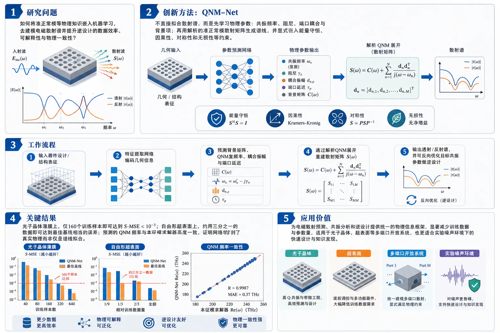
研究问题如何将准正常模等物理知识嵌入机器学习，去建模电磁散射谱并提升逆设计的数据效率、可解释性与物理一致性？创新方法提出 QNM-Net：不直接拟合散射谱，而是先由神经网络学习共振频率、阻尼、端口耦合与背景项等物理参数，再用解析的准正常模散射矩阵生成谱线；同时显式嵌入能量守恒、因果性、对称性和无损性等约束。工作流程输入器件设计或结构表征 → 特征提取网络编码几何信息 → 预测背景矩阵、QNM 复频率、耦合振幅与端口延迟 → 通过解析 QNM 展开重建散射矩阵 S(ω) → 输出透射/反射谱，并可反向优化目标共振参数做逆设计。关键结果在光子晶体薄膜上，仅 160 个训练样本就能达到 S-MSE < 10⁻³；在自由形超表面上，约用三分之一的数据即可达到最佳基线相当的误差；预测的 QNM 频率与本征模求解器高度一致，证明网络学到了真实物理而非仅是谱线拟合。应用价值为电磁散射预测、共振分析和逆设计提供统一的物理信息框架，显著减少训练数据与参数量，适用于光子晶体、超表面等多端口开放系统，也更适合实验噪声环境下的快速设计与知识发现。《A general framework for knowledge integration in machine learning for electromagnetic scattering using quasinormal modes》（None，）
第一部分：核心概览（Overview）
提出一种以准正常模（QNM）展开为核心的通用物理约束神经网络框架，把散射响应从“直接拟合谱线”改为“先学习共振物理参数，再由解析QNM模型生成散射矩阵”。该框架同时满足能量守恒与因果性，并能把losslessness、对称性、模数等先验约束手动嵌入模型。在光子晶体薄膜与自由形超表面上都显著提升数据效率，并把学习到的共振频率直接对应到电磁本征模，形成从预测、解释到逆设计的统一方法。
第二部分：结构化快速回顾
《A general framework for knowledge integration in machine learning for electromagnetic scattering using quasinormal modes》（None，）
- 背景：线性电磁器件的前向任务可由全波求解器快速完成，但逆设计是“*fundamentally ill-posed*”，标准神经网络又“*can be unreliable and normally require extreme amounts of data to train*”。
- 方法：把神经网络输出从散射谱 (S(ømega)) 改为QNM物理参数，再通过解析的QNM散射矩阵公式生成谱线；框架是模块化的，可按系统先验定制。
- 结果：在光子晶体薄膜上，160个训练样本即可达到 (S)-MSE < (10⁻³)；在自由形超表面上，约用三分之一数据达到与最佳基线相当的误差。
- 讨论：学习到的 QNM 频率可与本征模求解器逐点核对，说明网络学到的是正确物理；同时模型可用于快速逆设计。
- 局限：自由形超表面中，较弱共振与训练频段外模态不稳定；训练得到的物理参数不保证唯一，仍需本征模验证。
- 结论：QNM-Net 是一个可迁移到多类电磁散射问题的统一框架，兼顾可解释性、数据效率与物理约束。
---
第三部分：逐章节冷凝解析（Section-by-Section Condensing）
I Introduction
- 电磁逆设计的核心困难
- 线性电磁器件的目标通常是透射、反射或吸收这类由散射矩阵 (S(ømega)) 决定的量；散射矩阵“*encodes the complete scattering response of a general linear N-port device*”。前向问题可由全波求解器直接算出，但逆问题“*is, on the other hand, significantly more challenging and fundamentally ill-posed*”，因为同一 (S(ømega)) 可能对应零个或多个设计。
- 传统优化法往往“*require hundreds to thousands of sequential full-wave simulations to converge*”，计算成本高。
- 标准神经网络前向代理的收益与瓶颈
- 常见做法是训练网络：Design → NN → S(ømega)。训练后，网络可比求解器快“*orders of magnitude*”，且梯度可由反向传播获得，从而支持迭代优化和逆模型训练。
- 代价是结果质量完全受网络预测精度支配；增大参数量和训练样本能改善精度，但“*computational resources are often a limiting factor*”。黑箱性也使其“*very limited insights can be gained from their predictions*”。
- 物理信息学习的基本策略
- 物理约束学习通过嵌入先验知识缓解上述问题；一种常见方式是在网络末端加入物理层：Design → NN → Physics parameters → Physics model → S(ømega)。
- 这样，网络不再直接学习谱线，而是学习物理参数，物理模型负责保证约束满足。已有工作显示，加入物理层可以“*reduce prediction error*”、“*improves generalization*”并“*reduces the required amount of training data*”。
- QNM formalism 提供更强的理论基础
- 以往的共振型物理模型要么只适用于特定几何，要么缺乏严格理论基础；而共振与散射参数之间的“*general and exact relation*”由quasinormal modes formalized。
- 因此提出 QNM-Net，并宣称其“*universal in the sense that it can be applied to linear electromagnetic devices with an arbitrary number of resonances and scattering ports*”。模块化实现还允许针对具体问题加入更强先验。
II Quasinormal-mode-based Neural Network
- QNM 的定义与非厄米特征
- QNM 是有损开放系统中正常模的推广，满足无源 Maxwell 方程：
[
nabla×tildeEₘ₌ᵢtildeømegaₘμtildeHₘ,quad
nabla×tildeHₘ₌₋ᵢtildeømegaₘǎrepsilontildeEₘ
]
并满足 outgoing radiation boundary conditions。
- 由于开放边界与材料吸收，QNM 本征频率是复数，(tildeømegaₘ₌ømegaₘ₊ᵢγₘ)。其中虚部 (γₘ) 对应时间衰减，可分为辐射损耗与非辐射损耗：(γₘ₌γₘₐₜₕᵣₘ ᵣ,ₘ+γₙᵣ,ₘ)。
- QNM 与散射矩阵的解析联系
- 通过将散射场展开为 QNM 场的叠加，可得到散射矩阵的 QNM 展开；每个 QNM 频率对应散射谱中的共振极点，“*The poles are eigenfrequencies (tildeømegaₘ) of QNMs*”。
- 采用的表达式为：
[
S(ømega)=eⁱømegaτłeft[C(ømega)+D(iømega-itildeØmega)⁻¹M⁻¹D^dagger C(ømega)i̊ght]eⁱømegaτ
]
这一形式是近似的，但“*specifically formulated to respect energy conservation even when a finite number of QNMs are included*”。
- 物理参数的含义
- (C(ømega)) 表示平滑背景项；(D) 的列向量 (mathbf dₘ) 表示第 (m) 个 QNM 在各端口上的振幅；(tildeØmega) 是复频率对角矩阵；(M) 为模间耦合矩阵；(τ) 是端口传播相位延迟。
- 文中明确指出：(mathbf dₘ) 应解释为“*the amplitudes of the m:th QNM on the ports*”。
- 模块化 QNM-Net 架构
- 结构由多个子模型组成：先将设计描述映射到抽象特征向量 (boldsymbolǎrphi)，再由后续子模型预测 (C(ømega))、(tildeømegaₘ)、(mathbf dₘ)、(τ)，最后用解析QNM公式生成 (S(ømega))。
- 子模型内部结构不固定，“*can be tailored to the specific physics of each system*”，因此框架既通用又可定制。
III Results and Discussion
#### III.1 Photonic crystal slab
- 系统设置与数据规模
- 光子晶体薄膜由带周期孔阵的无损介质薄片组成，研究正入射透射与反射。
- 设计由五个参数 ((h,r₁,r₂,r₃,r₄₎) 描述；四重旋转对称性使其偏振无关，因此 (S) 矩阵为 2×2。
- 频段内谱线主要由单个 Fano 共振主导，“*dominated by a single Fano resonance on an otherwise smooth background*”。
- 训练数据集包含 10,000 个随机设计，每个设计计算 200 个等间隔频点的散射谱。
- 专门定制的物理子模型
- 因为体系具有互易、无损、镜面对称，背景矩阵满足 (C^T=C)、(C^dagger C=I)、(C₁₁=C₂₂)。因此设
[
C=beginpmatrixisinα&o̧sα o̧sα&isinαendpmatrixeⁱα
]
- (α(ømega)) 取随频率线性变化，并由单层网络在 170 THz 与 210 THz 两点预测。
- 仅需 1 个 mode model；由于反射对称，QNM 只能是偶/奇，对应 (mathbf dₘ₌₍₁,1)) 或 ((1,-1))。观察到的是偶模，因此设 (mathbf d₁₌₍₁,1))。
- 体系无损，因此 (γₙᵣ,₁=0)。(ømega₁) 与 (γₘₐₜₕᵣₘ ᵣ,₁) 由单层网络预测，并通过严格正激活保证因果性。
- 端口延迟 (τ₁,τ₂) 中令 (τ₂₌τ₁) 以保持反射对称。
- 特征提取器使用全连接前馈网络，并加入线性跳连以提升收敛鲁棒性与速度。
- 训练方式与误差定义
- 目标函数是 (S)-MSE：
[
frac1N_S N_ømegasumᵢ,ⱼ,ₖ|Sᵢⱼpredⁱcted(ømegaₖ₎₋Sᵢⱼtrue(ømegaₖ₎|²
]
- 训练集占 80%，验证集占 20%；验证误差在 5 次数据划分上取平均。
- 梯度通过整个模型，包括 QNM 展开，借助自动微分反传。
- 拟合精度与数据效率
- 单个样本的 (S)-MSE 为 2.1×10⁻⁴，接近测试损失直方图均值。
- 测试直方图在独立于训练/验证集的测试集上计算，以避免偏差。
- 与三种标准全连接网络相比，QNM-Net 仅需 2% 数据量，即 160 个训练样本，即可达到 (S)-MSE < (10⁻³)。
- 基线模型需要约一个数量级更多的数据和参数才能达到相近误差。
- 物理可解释性验证
- 预测得到的 (tildeømega₁) 可与全波本征模求解器结果直接比较。对 100 个新随机设计，网络预测与仿真本征频率高度一致，“*agree to high precision*”。
- 这说明网络并非仅在输出谱线拟合正确，而是学到了“*the correct underlying physics*”。
- 逆设计演示
- 逆向设计了 5 个光子晶体薄膜，使其复本征频率线性递增。
- 以全零初始设计开始，用 Adam 最小化模型预测与目标 (tildeømega₁) 的差异，几百步、不到一秒即可收敛。
- 最终设计经全波仿真验证，与 QNM-Net 预测高度一致，说明仅凭谱数据训练出的模型可用于快速、准确的逆向共振设计。
#### III.2 Free-form dielectric metasurface
- 更复杂系统与数据来源
- 自由形全介质超表面的数据集来自先前工作，约 80,000 个 meta-atom 及其散射谱。
- 几何由 100×100 二值位图表示蚀刻掩膜。
- 系统比光子晶体薄膜更复杂：设计空间更大、频率分辨率更低、散射响应偏振相关、存在多个重叠共振、非辐射损耗，并因基底而缺少镜面对称。
- 数据只提供来自顶部入射的 两列 S 矩阵。
- 架构适配与先验选择
- 因设计参数具有空间结构，特征提取器改用卷积 DenseNet。
- 因背景不明显，直接设 (C=-I)，“*commonly used in QNM expansions*”，并让网络通过许多宽共振拟合背景。
- 频带内模态数不固定，因此选择 20 个 mode models，足以覆盖大多数情况。
- 若某些模态不需要，网络可把多余模态放到采样频段外，使其不影响预测。
- 每个模态单独预测 (tildeømegaₘ)、阻尼率以及 (mathbf dₘ) 的实部和虚部；端口延迟 (τₙ) 固定，用于补偿边界与端口的距离。
- 对照模型为 DenseNet + 分支前馈网络，DenseNet 架构相同，仅调宽全连接层以改变参数量。
- 谱线预测性能
- 某验证样本的 (S)-MSE 为 2.4×10⁻³，属于测试误差直方图中的典型水平。
- 预测可重构大多数共振，但会遗漏少数弱共振。
- 原因被解释为设计空间极大，哪怕“*tens of thousands of training samples*”也不足以学到所有谱特征。
- 数据效率仍然优于基线
- 即便并非所有弱共振都准确，QNM-Net 仍只需约三分之一的数据就能达到与最佳参考模型相当的误差。
- 这说明 QNM 表达即使在复杂、欠完备、弱对称的系统上，也能显著提升谱预测效率。
- 本征模学习与重要模态筛选
- 对验证集中的 3 个设计进行了本征模分析，比较网络预测的 QNM 频率与带 outgoing radiation boundary conditions 的本征模求解器输出。
- 频带内大多数预测模态对应真实本征模；频带外和接近边缘的高阻尼模态通常不准确，这是因为训练数据对这些模态的信息极少。
- 对于连接单元胞边缘的设计，存在若干低阻尼模态，但它们没有明显散射特征，也未被网络预测；解释为“*very weakly coupled to the incoming radiation*”。
- 这体现出 QNM-Net 自动聚焦于对散射响应最重要的模态，而非机械地返回大量难以筛选的本征模。
IV Conclusion and Further Research
- 总体结论
- QNM-Net 被定位为基于散射矩阵 QNM 展开的模块化物理信息神经网络架构。
- 相比常规网络，它“*requires significantly less trainable parameters and is substantially more data efficient*”。
- 相对已有物理信息网络的优势
- 相比先前用于电磁散射的物理信息网络，QNM-Net 被预期在精度和数据效率上相当，但具有更广泛的适用范围和更坚实的理论基础。
- 学到的 QNM 频率直接对应散射体的本征模，且已通过本征模仿真验证。
- 实践意义
- 该方法适用于“*a wide range of electromagnetic systems where the scattering spectrum is accurately described by a set of resonances*”。
- 更高的数据效率使其在简单结构的实验数据上训练成为可行，尤其当模拟数据昂贵时。
- 噪声与鲁棒性
- 补充材料中加入模拟噪声后，QNM-Net 比标准网络更抗噪，说明该框架在实验数据上可能更有优势。
- 进一步发展方向
- 可与考虑制造误差的优化方法结合，用于逆设计中的性能退化补偿。
- 可利用模型内部参数做自动知识发现；若光子晶体中的反射对称性未被显式编码，也可能通过 (mathbf d₁) 的预测被“发现”。
- 值得研究不同约束的相对重要性，以识别哪些 inductive biases 最有助于数据效率。
- 可通过迁移学习进一步提升效率，例如把特征提取器预训练为自编码器编码器。
- 也可直接用本征模仿真训练 QNM-Net，特别适合难以在频域分辨的尖锐共振。
Acknowledgements
- 得到 Chalmers Nano、瑞典研究委员会、Knut och Alice Wallenberg Stiftelse 以及 NAISS 计算资源支持。
- 工作部分在 META-PIX 卓越中心框架内完成。
Data Availability
- 光子晶体数据集和 QNM-Net 代码公开在 GitHub：github.com/ViktorLilja/qnm-net。
- 自由形超表面数据集与生成结果/图形的代码可向作者索取。
---
第四部分：深度理解与语言支持（Understanding & Nuance）
1) 术语解析
- Quasinormal modes (QNMs)
- 不是封闭系统中的普通本征模，而是开放、有损系统的“泄露模态”。频率是复数，实部给出共振位置，虚部给出衰减率。
- 细微差别：normal modes 对应厄米、无损、闭合边界；quasinormal modes 对应非厄米、辐射开放边界，因此更适合散射问题。
- Scattering matrix (S(ømega))
- 描述输入端口波与输出端口波之间的线性映射，是整个散射响应的完整编码。
- 细微差别：这里不是单个透射率曲线，而是一个把所有端口耦合都包含进去的矩阵对象，因此更适合统一刻画多端口器件。
- Physics-informed machine learning
- 不是简单“在损失函数里加物理项”，而是把物理结构直接嵌入网络输出路径中，使网络输出受解析模型约束。
- 细微差别：这里的“physics layer”让网络学习的是物理参数，而不是把物理当作软正则项。
- Inductive bias
- 指模型在学习前就被编码进去的偏好。QNM 展开、对称性、losslessness、固定模数等都属于 inductive bias。
- 细微差别：好的 inductive bias 会显著降低样本需求；坏的 bias 会限制表达能力。
- Energy conservation / causality
- 在这里不是抽象口号，而是硬约束：有限模展开时仍保证散射模型不违反物理基本律；通过正阻尼激活保证时间上衰减而非发散。
- 细微差别：很多纯数据驱动模型能拟合谱线，却可能给出不物理的增益或非因果响应。
2) 疑难查证：几个容易混淆的关键概念
- 为什么有限个 QNM 也能“保证能量守恒”？
- 直觉上，截断模态展开会破坏完备性，因此容易违背物理约束。这里采用的散射矩阵表达式并不是任意截断求和，而是带有 (C(ømega))、(D)、(M)、(τ) 的特定结构，文中明确指出它“*is specifically formulated to respect energy conservation even when a finite number of QNMs are included*”。
- 关键在于：约束不是靠训练后“学出来”，而是由解析形式预先编码进去，所以即使只保留有限共振，也不会任意跑出不守恒的谱。
- 为什么学习到的 QNM 参数还要再用本征模求解器验证？
- 因为“能把谱线拟合对”不等于“学到了唯一正确的物理参数”。非线性模型可能存在多个不同参数组合对应相近误差的局部极小值。文中直接指出：“*there is no guarantee that these minima are unique or that the training procedure will always find them*。”
- 因此，若目标是解释物理而非仅预测谱线，必须把网络输出的 (tildeømegaₘ) 与独立本征模计算对照。
- 为什么自由形超表面里很多弱共振没被准确学到，却仍然有意义？
- 因为散射谱只强烈响应与入射波耦合强的模态。若某些低阻尼模态与输入耦合极弱，它们在可见谱线中几乎不显影，数据里就缺少可学习信号。
- QNM-Net 的价值不在于“返回所有数学上存在的模态”，而在于筛出对可观测散射真正重要的模态。
---
第五部分：创新评估与关联（Synthesis & Novelty）
1) 创新性判断
- 相比近 2–5 年的相关工作，核心新意不在“再做一个物理信息网络”，而在于把QNM 散射理论提升为一个通用的知识整合框架。过去的代表性方法多依赖特定几何的 Lorentz/共振参数化，或只在某类超表面、波导、光子晶体里有效；这里的结构基于散射矩阵的 QNM 理论，适用于任意端口数、任意共振数、开放有损系统。
- 关键突破有三点：
- 理论上更硬：QNM 与散射极点的一一对应提供了严格物理基础，不再依赖经验性谱分解。
- 工程上更稳：有限模展开仍可保留能量守恒与因果性。
- 方法上更灵活：框架是模块化的，可按问题加入losslessness、symmetry、mode count等约束，并能直接用于逆设计。
- 相对 2020–2024 年的物理信息光学网络，这里的推进点是从“预测光谱”转向“学习可验证的共振物理参数”，并且在自由形超表面上展示了对复杂、弱对称、重叠共振场景的适应性。
-
04
📊 含图深析
📄 摘要：针对 Ti-6Al-4Mo-1V-0.1Si 这类 Mo 富 α+β 钛合金热变形，构建两种堆叠残差物理信息神经网络 STAR-PINN，模拟应变硬化、动态回复与动态再结晶共同作用下的流变响应。目标是替代 Arrhenius 型与经验模型在宽温度、应变速率、应变范围内拟合不足的问题。
💡 亮点：STAR-PINN 将热加工物理约束嵌入残差网络，用于 Mo 富 α+β 钛合金动态回复/再结晶本构建模。该策略面向工艺窗口预测，比纯经验流变方程更适合复杂热机械路径。
📖 展开分析 + 配图
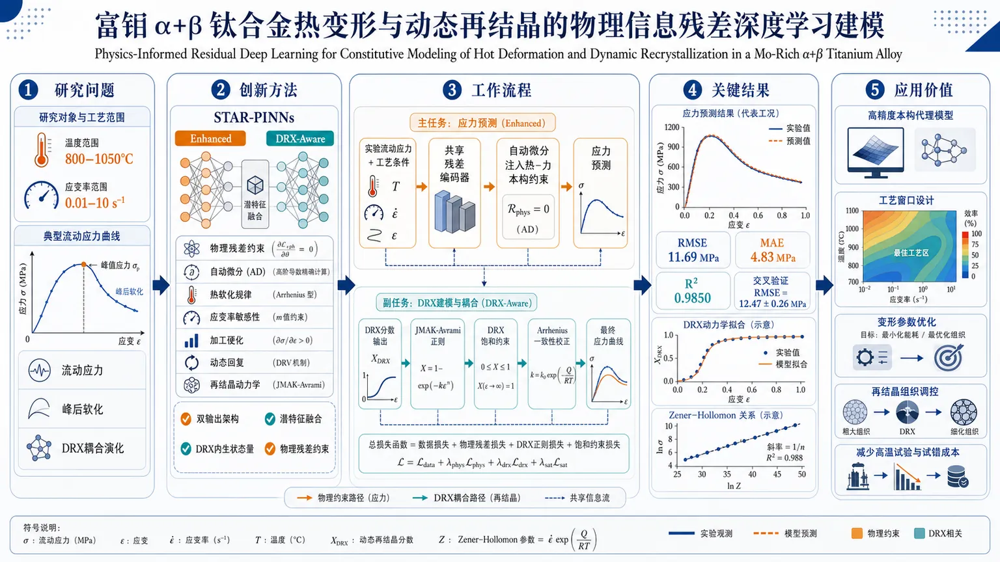
研究问题面向富钼 α+β 钛合金，在 800–1050°C、0.01–10 s⁻¹ 的宽工况下，如何同时准确刻画流动应力、峰后软化与动态再结晶（DRX）耦合演化，克服传统 Arrhenius 型和经验模型对热硬化、动态回复、再结晶联合作用描述不足的问题。创新方法提出两种 STAR-PINNs 残差物理信息深度学习框架；Aha！点在于把热软化、应变率敏感、加工硬化、峰后软化与 DRX 动力学一起嵌入网络，并采用双输出架构与潜特征融合，让 DRX 分数不再是旁路变量，而是直接驱动应力预测的内生状态量。工作流程输入实验流动应力及工艺条件（温度、应变率、应变）→ 共享残差编码器提取非线性特征 → 通过自动微分注入热-力本构约束 → Enhanced 模型输出应力；DRX-Aware 模型同时输出 DRX 分数 → 加入 JMAK-Avrami 正则、DRX 饱和约束与 Arrhenius 一致性校正 → 融合 DRX 潜特征得到最终应力曲线。关键结果最优的 DRX-Aware STAR-PINN 达到 RMSE 11.69 MPa、MAE 4.83 MPa、R² 0.9850，交叉验证 RMSE 为 12.47±0.26 MPa；可稳定重现实验流动曲线、温度依赖性、DRX 运动学和 Zener-Hollomon 关系，峰前硬化与峰后软化形态匹配度高。应用价值为钛合金热加工提供高精度、可解释、符合物理规律的本构代理模型，可用于工艺窗口设计、变形参数优化和再结晶组织调控，减少大量高温试验与工艺试错成本。可用材料仅含标题、摘要与元数据，未提供 PDF 正文，因此第 3 部分无法按原始章节标题做全量逐章解析；下面给出基于可见内容的严格解析，并明确区分可证信息与不可恢复信息。
---
第一部分：核心概览 (Overview)
这项研究把physics-informed deep learning推进到热变形本构建模与动态再结晶（DRX）耦合预测层面，针对 Mo-rich α+β 钛合金 Ti-6Al-4Mo-1V-0.1Si，构建了两种STAR-PINNs：一类强化热-力本构约束，另一类以双输出显式联动 DRX 动力学与流动应力。其核心贡献不只在精度提升到 R²=0.9850，更在于把物理一致性、可解释性、峰后软化、DRX 饱和与 JMAK-Avrami 规律纳入同一数据驱动框架，对高温加工过程建模具有方法学示范意义。
---
第二部分：结构化快速回顾
《Physics-Informed Residual Deep Learning for Constitutive Modeling of Hot Deformation and Dynamic Recrystallization in a Mo-Rich α+β Titanium Alloy》（None，）
背景
- 先进结构合金的热加工需要准确的本构模型。
- 传统 Arrhenius 型与经验模型难以同时捕捉应变硬化、动态回复（DRV）、动态再结晶（DRX）及其跨工况耦合效应。
- 目标材料是 Ti-6Al-4Mo-1V-0.1Si，温度与应变率范围较宽，适合检验模型泛化。
方法
- 构建两种 Stacked Residual Physics-Informed Neural Networks (STAR-PINNs)。
- Enhanced STAR-PINN：加入热软化、应变率敏感性、应变硬化、峰后软化等热-力本构约束。
- DRX-Aware STAR-PINN：采用双输出架构，把 DRX 动力学与应力输出联动。
- 使用共享残差编码器，输入实验流动应力数据。
- 通过自动微分施加物理约束。
- 进一步加入 JMAK-Avrami 正则化、DRX 饱和约束、Arrhenius 一致性与可调参数，并通过latent-feature fusion把预测 DRX 分数直接耦合到应力输出。
结果
- DRX-Aware STAR-PINN 达到：
- RMSE = 11.69 MPa
- MAE = 4.83 MPa
- R² = 0.9850
- cross-validated RMSE = 12.47 ± 0.26 MPa
- 能重现实验流动曲线、温度依赖性、DRX 运动学以及 Zener–Hollomon 关系。
讨论
- 物理约束使模型不仅拟合数据，还保持物理一致的本构行为。
- 双输出与特征融合使 DRX 不再只是后验解释变量，而成为应力预测的内生状态量。
- 相比纯经验或纯黑箱方法，框架更适合过程设计与机理解释。
局限
- 当前可见材料未提供样本总量、测试重复数、网络深度/宽度、损失函数权重、训练细节和外推验证边界。
- 只能确认覆盖 800–1050 °C、0.01–10 s⁻¹ 的条件，跨更大成分/组织空间的泛化仍未可知。
- 未见全文，无法核实是否存在独立测试集、消融实验、误差分布或与其他先进模型的系统对比。
结论
- 物理信息残差深度学习可作为热变形-DRX 耦合本构建模的有效框架。
- 对 Mo-rich α+β 钛合金 的高温加工建模提供了高精度、可解释、物理一致的替代方案。
---
第三部分：逐章节冷凝解析 (Section-by-Section Condensing)
重要说明：未提供正文 PDF，无法恢复原始章节标题，也无法验证各章节内部的所有数值、图表、推导与实验细节。以下仅能对标题、摘要与元数据中可证信息做“章节级替代解析”。
Abstract
研究问题与领域缺口
- 核心缺口：传统 Arrhenius-type 和经验模型对热变形中多机制耦合的刻画不足，尤其难以同时覆盖 strain hardening, dynamic recovery (DRV), and dynamic recrystallization (DRX)。
- 关键原文：*"Conventional Arrhenius-type and empirical models do not adequately capture the combined effects of strain hardening, dynamic recovery (DRV), and dynamic recrystallization (DRX) across broad processing conditions."*
- 关键含义：问题不在“是否能拟合某几条曲线”，而在于能否跨温度、跨应变率、跨变形阶段维持机理一致性。
材料体系与工况范围
- 研究对象为 Mo-rich α+β titanium alloy (Ti-6Al-4Mo-1V-0.1Si)。
- 实验数据覆盖 800 to 1050 degrees C、0.01 to 10 per second。
- 原文：*"experimental flow stress data collected at temperatures from 800 to 1050 degrees C and strain rates between 0.01 and 10 per second."*
- 细节意义：这个工况区间覆盖较强的热激活与速率敏感区间，适合检验模型是否真的捕捉热软化与流动不稳定性。
模型框架：双 STAR-PINNs
- 构建两种 Stacked Residual Physics-Informed Neural Networks (STAR-PINNs)。
- 原文：*"two Stacked Residual Physics-Informed Neural Networks (STAR-PINNs) were developed"*
- 结构分工：
- Enhanced STAR-PINN：用于热变形本构。
- DRX-Aware STAR-PINN：用于把 recrystallization kinetics 纳入应力预测。
- 关键术语价值：Stacked Residual 暗示深层残差堆叠，通常用于稳定训练并提升复杂非线性表征能力。
Enhanced STAR-PINN 的物理约束
- 加入 thermomechanical constitutive constraints。
- 原文：*"The Enhanced STAR-PINN incorporated thermomechanical constitutive constraints"*
- 由摘要可识别的约束项包括：
- thermal softening
- strain-rate sensitivity
- strain hardening
- post-peak softening
- 原文：*"Physics-informed constraints, including thermal softening, strain-rate sensitivity, strain hardening, and post-peak softening, were enforced through automatic differentiation."*
- 关键意义：约束不是事后筛选，而是通过 automatic differentiation 内嵌到训练目标中。
DRX-Aware STAR-PINN 的双输出与动力学耦合
- 该模型采用 dual-output architecture。
- 原文：*"The DRX-Aware STAR-PINN employed a dual-output architecture to account for recrystallization kinetics."*
- 进一步整合：
- JMAK-Avrami regularization
- DRX saturation constraints
- Arrhenius-based consistency with tunable parameters
- latent-feature fusion
- 原文：*"The DRX-Aware model further integrated JMAK-Avrami regularization, DRX saturation constraints, and Arrhenius-based consistency with tunable parameters, directly linking the predicted DRX fraction to stress output via latent-feature fusion."*
- 学术含义：DRX 分数不再是平行输出，而是通过特征融合直接影响应力，属于机理耦合预测。
性能指标
- 最优模型为 DRX-Aware STAR-PINN。
- 指标：
- RMSE = 11.69 MPa
- MAE = 4.83 MPa
- R² = 0.9850
- cross-validated RMSE = 12.47 ± 0.26 MPa
- 原文：*"The DRX-Aware STAR-PINN achieved RMSE = 11.69 MPa, MAE = 4.83 MPa, R² = 0.9850, and a cross-validated RMSE of 12.47 +/- 0.26 MPa."*
- 证据力度：这组指标表明模型不仅在拟合上高精度，而且交叉验证误差波动很小，说明稳定性较强。
物理一致性与外部可解释结果
- 能准确重现：
- temperature-dependent flow curves
- DRX kinetics
- Zener-Hollomon relationships
- 原文：*"This model accurately reproduced temperature-dependent flow curves, DRX kinetics, and Zener-Hollomon relationships, while maintaining physically consistent constitutive behavior."*
- 关键意义：Zener-Hollomon 关系通常用于表征热变形的温度-应变率等效效应；能同时重现该关系，说明模型不只是插值器。
总体结论
- 该框架被定位为robust and interpretable framework。
- 原文：*"These results demonstrate that physics-informed deep learning provides a robust and interpretable framework for constitutive modeling"*
- 结论指向应用：*"offering a practical approach for advanced process modeling of titanium alloys."*
Title and metadata
研究定位
- 题目直接把三层问题绑定：physics-informed、residual deep learning、constitutive modeling、hot deformation、dynamic recrystallization。
- 术语组合意味着贡献不止是“预测应力”，而是建立一个耦合机理-数据的本构代理模型。
发表状态
- 元数据标明：Submitted on 15 Jul 2026，arXiv 类别为 cond-mat.mtrl-sci。
- 当前仅见 v1，未见正式期刊审稿后版本。
---
第四部分：深度理解与语言支持 (Understanding & Nuance)
1) 关键术语解析
1. Constitutive modeling
- 含义：材料在外载荷下的应力-应变-温度-速率关系建模。
- 细微差别：不是一般“预测”，而是要满足材料力学中的本构一致性，即响应必须符合物理规律和状态变量演化。
2. Dynamic recrystallization (DRX)
- 含义：高温变形过程中，原有晶粒因位错累积与再成核发生动态新晶粒形成。
- 细微差别：DRX 会导致峰后软化，因此应力曲线会从硬化转向下降；如果模型不能显式表示 DRX，就容易在峰值附近失真。
3. Physics-informed
- 含义：把物理方程、边界条件、单调性、守恒律或经验机理嵌入学习过程。
- 细微差别：与“只用物理量做输入”的普通机器学习不同，physics-informed 直接约束输出函数形状与导数关系。
4. JMAK-Avrami regularization
- 含义：基于 Johnson–Mehl–Avrami–Kolmogorov (JMAK) 动力学形式，对相变/再结晶分数演化加正则。
- 细微差别：regularization 不只是防过拟合，还在限制 DRX 分数随应变演化的曲线族必须遵循经典动力学形式。
5. Zener-Hollomon relationship
- 含义：把温度与应变率合并成热变形等效参数，常写成 Z = dotǎrepsilon exp(Q/RT) 一类形式。
- 细微差别：能重现 Z-关系，说明模型对热激活控制的流变机制有较好的物理归纳。
2) 疑难查证与深入解释
“Dual-output architecture” 为什么重要
- 这意味着网络同时预测两个相关量，最可能是 流动应力与DRX 分数。
- 深层逻辑：DRX 不是应力的附属标签，而是应力演化的内部原因之一。把它做成双输出，等于把状态变量显式引入模型。
- 结果：模型不必把所有峰后软化“硬塞”进单一黑箱函数里，训练更容易收敛，也更符合冶金机理。
“Latent-feature fusion” 的学术含义
- 不是简单拼接两个输出，而是把 DRX 的潜变量表征与应力预测路径融合。
- 价值：让网络学习“当 DRX 增强时，哪些内部特征应当改变”，属于一种机理耦合表征学习。
- 这比事后把 DRX 作为回归输入更强，因为信息流是双向受控的。
“Physical consistency” 与“high accuracy” 的区别
- 高精度只说明误差小。
- 物理一致性要求曲线在峰前硬化、峰值后软化、温度升高时应力下降、应变率升高时应力上升等趋势都要成立。
- 在本构建模里，后者通常比前者更难，也更有研究价值。
---
第五部分：创新评估与关联 (Synthesis & Novelty)
1) 创新性判断
相较于近 2–5 年的相关工作，这项研究的创新点主要集中在四处：
一是从“拟合应力”推进到“耦合 DRX 的机理本构建模”。
许多材料机器学习工作仍停留在输入温度、应变率、应变后输出应力的回归层面。这里把 DRX kinetics 直接纳入网络结构和损失约束，使模型能同时刻画峰前硬化与峰后软化。
二是把物理约束做成多层次约束体系，而不是单一守恒项。
摘要中同时出现 thermal softening, strain-rate sensitivity, strain hardening, post-peak softening, DRX saturation, Arrhenius consistency, JMAK-Avrami regularization。这种组合比常见 PINN 只加一两个单调性约束更细密，说明目标不是“物理味道”，而是可用的本构代理模型。
三是采用 residual/stacked 结构增强复杂非线性表达能力。
相比普通 MLP 或浅层 PINN，STAR-PINNs 更适合处理热加工中多阶段、多机制叠加的响应。残差堆叠通常能改善深层训练稳定性，也更有利于学习跨工况的细粒度差异。
四是把 DRX 分数通过 latent-feature fusion 直接接入应力输出。
这是从“多任务学习”向“状态耦合学习”的一步。多数前人工作会把组织变量当作独立预测目标或外部特征；这里则把它变成应力预测内部的一部分，增强了解释性与机理闭环。
2) 解决了什么前人没解决的问题
- 跨温度、跨应变率、跨软化阶段的统一建模。
- 应力预测与 DRX 动力学同步一致，而非分别拟合。
- 在保持高拟合精度的同时，约束输出满足热变形物理规律。
- 对复杂钛合金热加工过程，提供了比纯经验公式更灵活、比纯黑箱网络更可信的框架。
3) 与现有方向的关系
- 对比 Arrhenius 经验本构：更灵活，能学到非线性局部偏离。
- 对比 传统 PINN：约束更丰富，且面向材料组织演化而不只是 PDE 解。
- 对比 黑箱深度学习：更可解释，能输出与冶金机理一致的中间状态。
---
如果需要进一步做真正的逐章节精读，需要补充 PDF 正文或章节截图；有了全文后，可以继续按引言—实验—模型—结果—讨论—结论逐段拆解，并补齐每个关键点的原文证据、图表编号和数值细节。
-
05
📄 摘要：题录显示论文讨论水体系的神经网络密度泛函，并以“按设计过拟合”为核心命题。可判断其聚焦机器学习交换-相关泛函在水的结构、能量或相互作用描述中的训练集依赖、泛化与可控过拟合问题；摘要未给出具体数据、网络结构或误差指标。
💡 亮点：水的神经网络密度泛函被置于“有意过拟合”框架下审视，核心问题是训练精度与物理泛化的取舍。该方向直接关系到机器学习泛函能否可靠进入凝聚相水与含水材料模拟。
📖 展开分析 + 配图
研究问题神经网络密度泛函在水体系中是否会因过度追求训练目标而被“刻意塑形”，从而产生过拟合？其表示能力、误差控制与泛化能力的边界在哪里？创新方法不是单纯展示模型效果，而是从训练目标反向审视神经网络密度泛函，聚焦其是否被过度优化，并把“过拟合 by design”作为核心分析对象，强调表示能力、误差控制与泛化张力。工作流程以水体系数据和训练目标为起点，训练神经网络密度泛函；随后检查模型是否在训练集上被过度塑形，对比其表示能力、误差控制与泛化表现；最终给出模型可靠性评估与适用边界判断。关键结果论文指出这类模型可能在训练目标下被刻意塑形并发生过拟合；同时揭示表示能力、误差控制与泛化能力之间存在明显张力；结论强调机器学习密度泛函在水体系中的可用性并非无限，存在明确适用边界。应用价值为水体系机器学习密度泛函的设计提供风险警示和边界意识，帮助研究者避免只追求训练指标而忽视泛化与稳健性，提升模型可信度、可解释性和实际使用安全性。核心概览
这篇论文聚焦水体系的神经网络密度泛函，讨论机器学习交换-相关泛函的训练集依赖、泛化能力与“按设计过拟合”问题，属于机器学习密度泛函 / 量子化学方法方向。
方法要点
- 以神经网络密度泛函为研究对象，面向水体系构建或分析机器学习泛函。
- 关注交换-相关泛函的学习与表征，用于描述水的结构、能量或相互作用。
- 将训练集依赖与泛化能力作为核心讨论维度。
- 引入“按设计过拟合”这一视角，强调过拟合并非纯粹缺陷，而可能被用作设计策略。
- 摘要未详述具体网络结构、数据集和训练流程。
关键结果
- 论文明确把“overfitting by design”作为核心命题，说明其重点不在单纯追求泛化，而在于探讨可控过拟合在水体系密度泛函中的作用。
- 摘要显示该工作主要讨论神经网络密度泛函在水中的训练集依赖与泛化问题。
- 摘要未详述具体定量结果、误差指标或性能对比。
创新性判断
- 可能的新颖点在于：把过拟合从“需要避免的问题”转化为“可设计、可利用的建模策略”，用于水体系密度泛函的构建与分析。
- 另一潜在创新是：将机器学习交换-相关泛函置于水这一典型复杂体系中，系统讨论其适用边界与可控泛化。
- 但由于摘要信息有限，以上创新性判断仅为基于题目与摘要的合理推断，具体贡献仍需全文确认。
-
06
📊 含图深析
📄 摘要：以 1-3-3-1 多层感知机求解初值问题 y'(t)+y(t)=0、y(0)=1 为例，逐节点给出 PyTorch 自动微分在 PINN 中计算梯度的数值流程。重点展示两级微分：先求网络输出对输入的物理导数 ŷ'(t)，再求含该导数的损失函数对参数 θ 的梯度。
💡 亮点：文章把 PINN 中 PyTorch 自动微分的计算图和数值梯度逐节点展开，适合作为二阶链式求导教程。它不提出新物理模型，但有助于排查物理信息网络训练中的梯度实现错误。
📖 展开分析 + 配图
研究问题在 Physics-Informed Neural Network（PINN）中，PyTorch 如何从输入导数 γ'(t) 一路反传到参数梯度 ∇θL，尤其是残差项里依赖 γ'(t) 的混合二阶导数 ∂²y/(∂θ∂t) 如何被正确计算；若省略 create_graph=True，为什么会静默丢失这条导数通路。创新方法不提出新算法，而是用一个 1-3-3-1 PINN 的完整数值算例，把手推链式法则、forward-mode JVP、reverse-mode VJP、PyTorch 的 computational graph、以及 create_graph=True 的“图上建图”机制逐节点对齐，显式追踪每个中间张量、grad_fn 和 adjoint，找出 PINN 高阶导数的 Aha 点。工作流程输入时间 t=0.5，先经 1-3-3-1 MLP 前向得到 γₕₐₜ；再用 autograd.grad(..., create_graph=True) 计算物理导数 γₕₐₜ'(t)；将 γₕₐₜ 与 γₕₐₜ' 组成残差 R=γₕₐₜ'+γₕₐₜ，并与初值误差一起构成损失；最后通过一次 backward 以 VJP 方式沿计算图反传，得到全部参数梯度，并用 next_functions、grad_fn 检查图结构。关键结果在 t=0.5 时网络输出 γₕₐₜ₌₀.1768；一次反向遍历即可得到 22 个参数的梯度；玩具例子中 ∂y/∂x1=20、∂y/∂x2=10，二阶混合导数正确值为 4；若不设 create_graph=True，混合导数通路被截断，梯度会错误但不报错。应用价值为 PINN 训练提供可审计的梯度机制说明，帮助研究者理解和调试残差损失中的高阶导数与静默梯度错误，避免因 create_graph 设置不当导致训练偏差；也可作为教学示例、代码审查基准和高阶自动微分的可复现实验说明。第一部分：核心概览（Overview）
该研究以一个 1-3-3-1 PINN 求解初值问题 (y'(t)+y(t)=0,;y(0)=1) 为完整算例，逐节点追踪 PyTorch 自动微分如何计算物理导数 (hat y'(t)) 与训练梯度 (nabla_θ L)。核心贡献不是提出新算法，而是把 手推链式法则、P/Q sensitivity、VJP、create_graph=True 的图上建图机制统一到可复现数值轨迹中，解释 PINN 中最易静默出错的混合二阶导数来源。
---
第二部分：结构化快速回顾
《Automatic Differentiation from Scratch: How PyTorch Computes Gradients in Physics-Informed Neural Networks》（None，）
背景
PINN 训练同时需要两类导数：输入方向的物理导数 (hat y'(t)=dhat y/dt)，以及参数方向的训练梯度 (nabla_θ L)。残差损失 (L_R=(hat y'+hat y)²) 使梯度包含混合项 (partial hat y'/partial θₖ)，这正是普通监督学习反向传播中不存在的复杂性。
方法
以固定参数的 1-3-3-1 MLP 为例，逐步展示前向图、反向 VJP 传播、二阶图构建机制。核心技术路径包括 computational graph、forward-mode JVP、reverse-mode VJP、create_graph=True、retain_graph=True，并用显式数值验证每个中间量。
结果
在 (t=0.5) 处，网络前向输出 (hat y=0.1768)。前向传播列出所有激活、中间张量和 PyTorch `grad_fn`；反向传播从 (barhat y=1) 出发，单次 VJP 遍历同时产生 22 个参数方向的一阶梯度。简单例子中，(partial y/partial x₁₌₂₀)、(partial y/partial x₂₌₁₀)，混合导数正确值为 4。
讨论
反向模式适合标量损失与高维参数空间，因为一次 backward 即可得到所有参数梯度。PINN 中 `create_graph=True` 的作用是记录“求导过程本身”，否则 (partial hat y'/partialθ) 会被截断，导致残差训练梯度错误。
局限
研究定位为解释性工作，不提出新 PINN 方法、不做训练策略 benchmark、不比较 AD 系统。可用文本中部分表格数值与前文计算存在不一致，例如 Table 5 的若干中间值与 Section 3.3 不完全匹配。
结论
PINN 梯度正确性依赖“图上建图”：先对输入求 (hat y')，再对包含 (hat y') 的损失求参数梯度。`create_graph=True` 是保留混合二阶导数通路的关键开关，反向模式 VJP 是 PyTorch 高效获得所有参数梯度的基础。
---
第三部分：逐章节冷凝解析（Section-by-Section Condensing）
Abstract
- Explicit numerical tracing of PyTorch AD
摘要的核心任务是用显式数值解释 PyTorch automatic differentiation engine 在 PINN 中如何计算梯度，尤其是 PINN 需要两层求导：先求物理导数 (hat y'(t)=dhat y/dt)，再求依赖该导数的损失对参数的梯度 (nabla_θ L)。原文直接界定目标：*"This paper traces, with explicit numerical values, how PyTorch’s automatic differentiation (AD) engine computes gradients for Physics-Informed Neural Network (PINN) training"*。
- Two-level differentiation as the central technical issue
PINN 的关键复杂性来自损失依赖 (hat y')，所以训练梯度需要穿过一次已经发生的求导运算。摘要明确说明该设置 *"requires two levels of differentiation: computing the physics derivative (hatyprⁱme(t)=dhaty/dt) through the network, and computing parameter gradients (nablaθL) of a loss that itself depends on (hatyprⁱme(t))"*。
- Worked example with 22 parameters
数值例子采用 1-3-3-1 multilayer perceptron 和初值问题 (y'(t)+y(t)=0,;y(0)=1)。网络含 22 个参数，所有参数梯度通过一次反向遍历计算。摘要给出规模：*"Using a 1-3-3-1 multilayer perceptron and the initial value problem (y'(t)+y(t)=0), (y(0)=1)"*，并强调 *"computes all 22 parameter gradients in a single pass"*。
- Graph-on-graph mechanism
`create_graph=True` 的功能被定义为 graph-on-graph mechanism：对第一次求导过程本身建立可微图，从而允许残差损失对参数继续求导。摘要概括为 *"the graph-on-graph mechanism by which create_graph=True enables correct differentiation through the physics-informed residual"*。
- Connection between hand derivation and PyTorch VJP
研究把手推 P/Q sensitivity framework 与 PyTorch 的 vector–Jacobian products 对齐。摘要中的证据是：*"Every adjoint value is verified against the hand derivations of [17], connecting the P/Q sensitivity framework to the vector–Jacobian products used by PyTorch’s autograd engine"*。
---
1 Introduction
- PINN training looks short but hides AD complexity
典型 PINN 训练循环在 PyTorch 中少于 20 行：前向得到 (hat y(t;θ))，`torch.autograd.grad(..., create_graph=True)` 得到 (hat y'(t))，残差 (R=hat y'+hat y) 平方成损失，`loss.backward()` 得到参数梯度。开篇指出表面简洁：*"A typical Physics-Informed Neural Network (PINN) training loop fits in fewer than twenty lines of PyTorch"*，但问题是 *"what does each of these calls actually compute, and why is each flag necessary?"*
- Two differentiation tasks are mathematically distinct
物理导数描述输入 (t) 变化时网络输出如何变，参数梯度描述参数 (θₖ) 变化时损失如何变。损失函数在一个 collocation point (t_c) 处为
[
L=łeft(hat y(t_c;θ)+fracpartial hat ypartial tbigg|ₜ_ci̊ght)²⁺łambda(hat y(0;θ)-1)².
]
原文强调：*"Training a PINN requires two fundamentally different derivatives"*。
- Residual gradient contains a PINN-specific mixed derivative
残差项 (L_R) 的参数梯度为
[
fracpartial L_Rpartialθₖ
=2Rłeft(fracpartialhat ypartialθₖ
+fracpartialhat y'partialθₖi̊ght).
]
其中 (partial hat y'/partialθₖ₌partial²hat y/partialθₖpartial t) 是 PINN 特有的混合二阶导数。原文精确定义：*"The second term (partialhatyprⁱme/partialθₖ) is the PINN-specific complication: a second-order mixed derivative"*。
- Omitting create_graph silently gives wrong gradients
`create_graph=True` 不是可选优化，而是正确梯度的必要条件；如果省略，混合项不存在，而且不会报错。原文警告极明确：*"In PyTorch, this term exists only if the physics derivative was computed with create_graph=True; omitting the flag silently drops it, producing wrong gradients without any error message"*。
- Historical shift from hand-derived gradients to framework AD
早期神经网络微分方程求解需要针对架构手推梯度，如 Dissanayake and Phan-Thien、Lagaris 等。现代深度学习框架中的通用 AD 消除了架构改变就要重推公式的问题。原文概括为：*"the resulting formulas had to be re-derived whenever the architecture changed"*，而通用 AD *"removed this constraint by computing both the physics derivatives ... and the parameter gradients (nabla_θ L) generically"*。
- Pedagogical gap is the main motivation
AD 理论、PINN 损失构造、符号链式推导均已有资料，但缺少一个逐操作、逐数值、逐节点解释 PyTorch 如何处理 PINN 双重求导耦合的文档。原文定位空缺：*"What is missing is the bridge between the analytical derivation and the machine computation"*。
- Four concrete questions define the scope
研究目标包括：PyTorch 前向 pass 构建什么数据结构；单次 backward 如何同时计算 22 个参数梯度；`create_graph=True` 实际做了什么；PyTorch adjoint vectors 如何对应手推 P/Q sensitivities。原文逐条列出问题：*"What data structure does PyTorch build during the forward pass?"*、*"How does a single backward traversal compute all 22 parameter gradients simultaneously?"*、*"What does create_graph=True actually do"*。
- Contribution is explanatory, not algorithmic
研究明确不提出新 PINN 方法，不做训练策略 benchmark，不比较 AD 系统。贡献是解释性、可验证性、教学性。原文限定边界：*"This paper does not propose a new PINN methodology, benchmark training strategies, or compare AD systems; its contribution is explanatory"*。
---
2 Tangents and Adjoints: The Two Faces of the Chain Rule
- AD decomposes computation into elementary operations
自动微分通过把复杂计算拆成 elementary operations 并系统应用链式法则来计算导数。PyTorch 把这些操作记录为 computational graph。原文定义：*"Automatic differentiation (AD) is a family of algorithms that compute derivatives by decomposing a computation into elementary operations and applying the chain rule systematically"*。
- Minimal example contains all PINN-relevant ingredients
标量例子设
[
y=f(g(x₁,x₂₎₎,quad g(x₁,x₂₎₌₂ₓ₁₊ₓ₂,quad f(u)=u².
]
在 (x₁₌₂,;x₂₌₁) 时，(u=5,;y=25)。局部导数为 (partial g/partial x₁₌₂)、(partial g/partial x₂₌₁)、(f'(u)=10)。原文说明这是 *"the smallest example that contains every ingredient PINN training needs"*。
---
2.1 A Minimal Example
- Chain rule gives exact reference gradients
由链式法则得到 (partial y/partial x₁₌₁₀ḑot 2=20)，(partial y/partial x₂₌₁₀ḑot 1=10)。这些值作为 forward-mode 与 backward-mode 的共同核验标准。原文给出数值：*"At (x₁₌₂), (x₂₌₁): (u=g(2,1)=5,;y=f(5)=25)"*，并列出局部导数：*"(partial g/partial x₁₌₂,;partial g/partial x₂₌₁,;f'(u)=2u=10)"*。
---
2.2 The Forward Pass and Graph 1
- Graph 1 records operations and primal values
前向 pass 依次计算 (u=2x₁₊ₓ₂₌₅)，再计算 (y=u²⁼²⁵)。当输入 `requires_grad=True` 时，PyTorch 建立计算图，每个 operation 成为节点。原文定义节点内容：*"Each operation becomes a node in the graph — a record containing: the operation performed and the numerical result (the primal value)"*。
- Graph stores derivative recipes, not symbolic formulas
计算图不是有限差分扰动，也不是符号表达式变换，而是对实际执行操作的追踪。原文对比三者：*"No input is perturbed (as in finite differences), and no symbolic formula is manipulated — the graph is a trace of elementary operations"*。
---
2.3 Forward-Mode AD: Propagating a Tangent
- Forward-mode propagates JVPs from inputs to output
Forward-mode AD 为输入种下 tangent vector (mathbf v=(dot x₁,dot x₂₎)，每个节点执行
[
dotoutput=Jₗₒcₐₗḑot dotinput.
]
该运算是 Jacobian–vector product (JVP)。原文定义：*"This operation is a Jacobian–vector product (JVP), where the (m× n) Jacobian left-multiplies an (n×1) tangent vector"*。
- One forward-mode pass gives one directional derivative
选择标准基 (eᵢ) 作为 seed 可得到某个偏导数；例子中需要两次 pass 才能得到两个输入方向的梯度。Pass 1 设 (dot x₁₌₁,dot x₂₌₀)，得到 (dot u=2)、(dot y=10ḑot2=20)。Pass 2 设 (dot x₁₌₀,dot x₂₌₁)，得到 (dot u=1)、(dot y=10ḑot1=10)。原文总结：*"Forward-mode AD requires one pass per input"*。
---
2.4 Backward-Mode AD: Propagating an Adjoint
- Backward-mode propagates VJPs from output to inputs
Backward-mode 从输出 seed (bar y=dy/dy=1) 开始，反向传播 adjoint：
[
barinput=baroutputḑot Jₗₒcₐₗ.
]
该运算是 vector–Jacobian product (VJP)。原文说明：*"This is a vector–Jacobian product (VJP)"*。
- Single backward pass recovers all input gradients
对例子而言，(bar u=bar y f'(u)=1ḑot10=10)，随后 (bar x₁₌bar uḑot2=20)，(bar x₂₌bar uḑot1=10)。原文强调效率优势：*"Unlike forward-mode, a single backward pass efficiently recovers the gradient of the output with respect to all input parameters simultaneously"*。
- Reverse mode is optimal for scalar loss and many parameters
对标量损失 (m=1) 和高维参数 (ngg1)，反向模式一次 pass 得到完整 (nabla yinmathbb Rⁿ)，因此成为 PyTorch 默认 autodiff 引擎。原文结论：*"This computational advantage is the reason PyTorch adopts backward-mode as its default autodiff engine and provides the loss.backward() interface"*。
---
2.5 Second Order Derivative and the Graph-on-Graph Mechanism
- VJP operations are themselves differentiable arithmetic
第一次 backward 中的 VJP 计算不是“魔法”，而是乘法、加法等普通算术。例如 (bar u=bar yḑot2u=10)，(bar x₁₌bar uḑot2=20)。若设置 `create_graph=True`，这些算术会被记录进第二张图 Graph 2。原文关键句：*"These VJP operations are themselves arithmetic. With create_graph=True, PyTorch records them in a second graph (Graph 2)"*。
- Without create_graph, mixed derivative path disappears
若不记录第一次 backward 的算术，(bar x₁) 被当作常数 20，计算 (partial bar x₁/partial x₂) 会得到 0；正确答案是 4。原文给出错误机制：*"Without create_graph=True, the VJP operations execute but are not recorded. The mixed derivative becomes (partial barx₁/partial x₂=partial(20)/partial x₂=0) (wrong; correct answer is 4)"*。
- PINN mixed derivative maps directly to the toy mixed derivative
简单例子中的 (partial bar x₁/partial x₂) 对应 PINN 中的 (partial hat y'/partialθ)，即残差损失梯度必需的混合导数。原文表格映射为：*"(partialbarx₁/partial x₂) (second backward)"* 对应 *"(partialhatyprⁱme/partialθ) (needed for the residual loss)"*。
---
2.6 Verification in PyTorch
- Level 0 has no graph and no gradients
不设置 `requires_grad=True` 时，计算 (y=25.0)，但 `y.grad_fn` 为 `None`，无法求导。代码输出给出证据：*"print(y.item()) #>>> 25.0"* 与 *"print(y.grad_fn) #>>> None"*。
- Level 1 computes first derivatives but not mixed derivatives
设置 `requires_grad=True` 后，一阶导数可得：`barₓ₁₌₂₀.0`，`barₓ₂₌₁₀.0`。但由于未设置 `create_graph=True`，`barₓ₁.grad_fn` 为 `None`，继续求 (partial bar x₁/partial x₂) 报错：*"element 0 of tensors does not require grad and does not have a grad_fn"*。
- Level 2 enables second-order mixed derivative
使用 `create_graph=True` 后，`barₓ₁` 仍为 20.0，但 `grad_fn` 变为 `MulBackward0`，说明第一次求导过程被记录；随后 `mixed=4.0`。原文代码输出：*"print(type(barₓ₁.grad_fn)._ₙₐₘₑ_₎ #>>> MulBackward0"* 与 *"print(mixed.item()) #>>> 4.0"*。
- retain_graph prevents premature graph deletion
PyTorch 默认在 backward 后释放中间 buffer；若需要多次从同一图求导，例如分别求 (x₁)、(x₂) 方向梯度，需要 `retain_graph=True`。原文解释：*"without this flag, the computation graph would be destroyed after calculating (barx₁), making the subsequent calculation of (barx₂) impossible"*。
---
3 The Forward Pass
- Transition from toy graph to neural network graph
第 3 节从二输入组合函数转向真实网络，定义问题、网络、显式前向数值和 PyTorch 图结构。原文说明目标：*"This section defines the problem and the network that will serve as our running example for the rest of the paper, computes the forward pass with explicit numerical values, and traces the computational graph"*。
---
3.1 The Problem
- ODE and analytical solution
目标初值问题为
[
y'(t)+y(t)=0,qquad y(0)=1,
]
解析解为 (y(t)=e⁻t)。原文给出：*"whose analytical solution is (y(t)=e⁻t)"*。
- PINN loss depends on output and derivative
PINN 用 (hat y(t;θ)) 逼近 (y(t))，训练时惩罚 ODE residual (R(t)=hat y'(t)+hat y(t)) 和初始条件误差 (hat y(0)-1)。关键是 AD 引擎必须处理 (hat y) 与 (hat y'=dhat y/dt)。原文强调：*"the key point is that the loss depends on both (haty) and its derivative (hatyprⁱme=dhaty/dt)"*。
---
3.2 The Network
- Architecture and activation choices
网络是 1-3-3-1 multilayer perceptron：一个输入 (t)，两个含 3 个神经元的隐藏层，隐藏层使用 (tanh)，输出层线性输出 (hat y(t))。原文定义：*"one input ((t)), two hidden layers with 3 neurons each using (tanh) activation, and one linear output neuron"*。
- Layer equations
每层前向计算为
[
z⁽ell⁾=W⁽ell⁾a⁽ell⁻¹⁾+b⁽ell⁾,qquad
a⁽ell⁾=φ(z⁽ell⁾).
]
隐藏层 (φ=tanh)，输出层 (φ=identity)。原文公式即：*"(z⁽ell⁾=W⁽ell⁾a⁽ell⁻¹⁾+b⁽ell⁾,qquad a⁽ell⁾=φ(z⁽ell⁾))"*。
- Exactly 22 trainable parameters
参数包括三层权重和偏置：第一层 (3+3=6)，第二层 (9+3=12)，第三层 (3+1=4)，合计 (22)。原文标注：*"The network has 22 trainable parameters"*。
- Fixed parameters enable hand verification
参数被固定以便逐项核验。第一层 (W⁽¹⁾=(0.2,-0.5,0.8)^T)，(b⁽¹⁾=(-0.1,0.3,-0.2)^T)；第二层
[
W⁽²⁾=
beginpmatrix
0.1&-0.3&0.5
0.6&0.2&-0.4
-0.2&0.7&0.1
endpmatrix,
quad b⁽²⁾=(0.2,-0.1,0.4)^T;
]
第三层 (W⁽³⁾=(0.9,-0.6,0.3))，(b⁽³⁾=-0.3)。原文说明：*"We fix all parameters to enable hand verification"*。
---
3.3 Forward Pass at (t=0.5)
- Layer 1 produces small hidden activations
输入 (a⁽⁰⁾=0.5)。第一层
[
z⁽¹⁾=(0.0,0.05,0.2)^T,quad
a⁽¹⁾=tanh(z⁽¹⁾)=(0.0000,0.0500,0.1974)^T.
]
原文给出：*"(z⁽¹⁾=W⁽¹⁾(0.5)+b⁽¹⁾=(0.0,0.05,0.2)^T)"*。
- Layer 2 combines hidden activations into nonlinear features
第二层输出
[
z⁽²⁾=(0.2837,-0.1690,0.4547)^T,quad
a⁽²⁾=(0.2763,-0.1673,0.4257)^T.
]
原文数值为：*"(z⁽²⁾=W⁽²⁾a⁽¹⁾+b⁽²⁾=(0.2837,-0.1690,0.4547)^T)"*。
- Output layer yields (hat y=0.1768)
线性输出为
[
hat y=0.9(0.2763)+(-0.6)(-0.1673)+0.3(0.4257)-0.3=0.1768.
]
原文给出完整计算：*"(haty=W⁽³⁾a⁽²⁾+b⁽³⁾=0.9(0.2763)+(-0.6)(-0.1673)+0.3(0.4257)-0.3=0.1768)"*。
---
3.4 What PyTorch Records
- PyTorch records elementary operations, not layers
一个 `nn.Linear` 至少拆成矩阵乘法和偏置加法两个操作节点；计算图不是“层图”，而是操作级 DAG。原文强调：*"the graph records elementary operations, not neural network layers"*。
- Leaves include input and parameter tensors
参数张量 (W⁽ell⁾,b⁽ell⁾) 默认是 `requires_grad=True` 的 leaves；输入 (t) 只有显式设置 `requires_grad=True` 才成为可追踪 leaf，这是计算 (hat y') 的必要条件。原文说明：*"the input (t) becomes a tracked leaf only if the user sets requires_grad=True explicitly — which is necessary for computing (hatyprⁱme)"*。
- Saved tensors are local chain-rule factors
`MmBackward0` 保存输入激活与权重，用于 backward 中两类 VJP：一类产生权重梯度，一类把 adjoint 传回上一层激活。例如 L3 matmul 保存 (a⁽²⁾) 和 (W⁽³⁾)。原文解释：*"these tensors serve as the local Jacobian factors for two distinct VJPs"*。
- Tanh saves output rather than input
(tanh) 的导数 (φ'(z)=1-tanh²⁽z)=1-a²) 可由输出 (a) 计算，因此保存输出即可，避免 backward 时重算指数函数。原文指出：*"Tanh saves its output, not its input"*，并说明这是 *"a deliberate design choice"*。
- Addition nodes need no saved tensors
加法 (z=u+b) 对两个输入的局部导数均为 1，incoming adjoint 原样分发给两个父节点，因此无需保存前向张量。原文表述：*"Addition nodes record nothing"*，因为 *"the partial derivative of an addition (z=u+b) is simply 1 with respect to both inputs"*。
- Numerical inconsistency in Table 5 requires caution
Table 5 中若干值与 Section 3.3 不一致：例如 Section 3.3 给出 (z⁽¹⁾=(0.0,0.05,0.2))，但 Table 5 的 L1 Add 写成 ((0.0,-0.05,0.2))；Section 3.3 给出 (z⁽²⁾=(0.2837,-0.1690,0.4547))，但 Table 5 的 L2 Add 写成 ((1.1,-0.8,0.4))。这些表内数值削弱逐数值核验的严密性。相关原文片段分别为 *"(z⁽¹⁾=(0.0,0.05,0.2))"* 与 *"(z⁽¹⁾=m⁽¹⁾+b⁽¹⁾=(0.0,-0.05,0.2))"*。
---
3.5 The Complete DAG
- Full DAG links leaves and operation nodes
完整有向无环图将输入和参数 leaves 与所有 operation nodes 连接起来；箭头表示 backward 时 adjoint 流动方向。原文图注说明：*"Gray boxes: leaf nodes. White boxes: operation nodes. Arrows point in the direction of adjoint flow"*。
---
3.6 Inspecting the Graph in PyTorch
- Network construction matches fixed parameters
`nn.Sequential` 由 `Linear(1,3)`, `Tanh`, `Linear(3,3)`, `Tanh`, `Linear(3,1)` 构成，随后用 `torch.no_grad()` 拷贝固定权重和偏置，避免初始化随机性。原文代码结构为：*"net = nn.Sequential(nn.Linear(1, 3), nn.Tanh(), nn.Linear(3, 3), nn.Tanh(), nn.Linear(3, 1))"*。
- Output node is AddBackward0
在 (t=[[0.5]])、`requires_grad=True` 下，`yₕₐₜ.item()` 输出 0.1768，`type(yₕₐₜ.grad_fn)._ₙₐₘₑ__` 输出 `AddBackward0`，对应最终偏置加法节点。原文代码输出：*"print(type(yₕₐₜ.grad_fn)._ₙₐₘₑ_₎ #>>> AddBackward0"*。
- next_functions exposes parent nodes
`yₕₐₜ.grad_fn.next_functions` 返回父节点：L3 matmul 的 `MmBackward0` 和偏置 leaf 的 `AccumulateGrad`。原文输出：*"#>>> [('MmBackward0', 0), ('AccumulateGrad', 0)]"*。
- Input leaf has no grad_fn
输入 (t) 是用户定义 leaf，所以 `t.grad_fn` 为 `None`，但 `requires_grad=True`。原文输出：*"print(t.grad_fn, t.requires_grad) #>>> None True"*。
- Graph walk reveals the exact backward recipe
沿第一个 parent 从输出回溯到输入，节点序列为 `AddBackward0 → MmBackward0 → TanhBackward0 → AddBackward0 → MmBackward0 → TanhBackward0 → AddBackward0 → MmBackward0 → AccumulateGrad`。原文说明：*"The sequence matches Table 5 exactly: eight operation nodes, terminating at the leaf"*。
---
4 Reverse-Mode AD
- Backward traversal computes all parameter sensitivities
第 4 节开始沿 Figure 6 反向遍历，从输出到 leaves 传播 adjoint vectors，目标是在单次遍历中得到所有 22 个参数的 (partialhat y/partialθₖ)。原文目标：*"By the end of this single traversal, we will have computed (partialhaty/partialθₖ) for all 22 parameters simultaneously"*。
---
4.1 Starting Point: The Adjoint Seed
- Seed for differentiating output itself is one
为单独展示 reverse-mode，先对 (hat y) 本身求导，而不是对 loss 求导。输出节点的 adjoint seed 为
[
barhat y=fracpartialhat ypartialhat y=1.
]
原文给出：*"The adjoint seed is: (barhaty=partialhaty/partialhaty=1)"*。
- Saved tensors drive each VJP
每个 operation node 利用前向时保存的张量执行局部 VJP，把 adjoint 向父节点传递。原文说明：*"At each operation node, the VJP rule uses the tensors saved during the forward pass ... to propagate the adjoint one step further"*。
---
4.2 Constructing VJP Nodes During the Backward Pass
- Backward pass can itself be represented as VJP nodes
反向传播被形式化为一系列显式 VJP nodes，这为后续 `create_graph=True` 的 graph-on-graph 解释打基础。原文表述：*"we now trace the backward pass node-by-node, formalizing the record of each Vector-Jacobian Product (VJP) as an explicit node"*。
---
4.2.1 VJP L3 Add
- Final addition splits adjoint to matmul and bias
输出层前向为 (hat y=m⁽³⁾+b⁽³⁾)。incoming adjoint 为 (barhat y=1)。由于局部导数 (partialhat y/partial m⁽³⁾=1)、(partialhat y/partial b⁽³⁾=1)，得到
[
bar m⁽³⁾=1,qquad bar b⁽³⁾=1.
]
原文公式为：*"(barm⁽³⁾=barhatyḑot1=1,qquad barb⁽³⁾=barhatyḑot1=1)"*。
- Output bias gradient terminates immediately
(bar b⁽³⁾=1) 是输出偏置的终端梯度；(bar m⁽³⁾=1) 继续传入 L3 matrix multiplication 节点。原文说明：*"The resulting adjoint (barb⁽³⁾) is the terminal gradient for the output bias, while (barm⁽³⁾) is propagated backward"*。
---
4.2.2 VJP L3 Mm
- Matrix multiplication sends sensitivity to activation and weights
L3 前向为 (m⁽³⁾=a⁽²⁾(W⁽³⁾)^T)，incoming adjoint (bar m⁽³⁾=1)。对 activation 的 VJP 为
[
bar a⁽²⁾=bar m⁽³⁾W⁽³⁾
=(0.9,-0.6,0.3).
]
原文公式：*"(bara⁽²⁾=barm⁽³⁾W⁽³⁾=(1)(0.9,-0.6,0.3))"*。
- Output-layer weight gradient equals previous activation
对输出层权重的 VJP 为
[
bar W⁽³⁾=(bar m⁽³⁾)^T a⁽²⁾
=(0.2763,-0.1673,0.4257).
]
原文给出：*"(barW⁽³⁾=(barm⁽³⁾)Ta⁽²⁾=(0.2763,-0.1673,0.4257))"*。
- Available section ends before full 22-gradient trace
可用文本在 *"The row vector (bara⁽²⁾) represents the sensitivity..."* 后截断，未包含 L2、L1 的完整 VJP 数值、22 个参数梯度表、Section 5 与 Section 6 的正文细节。因此，后续章节只能依据 Introduction 中的章节预告和已给公式作概念层面解析，不能补造具体数值。
---
第四部分：深度理解与语言支持（Understanding & Nuance）
1. 术语解析
- Computational graph
学术含义：一次实际计算的操作级追踪图，节点是 elementary operations，边是依赖关系。它不是神经网络结构图，也不是符号表达式树。语境中强调 PyTorch 记录的是可执行 VJP recipe：*"the graph stores the sequence of VJP operations, not the gradients themselves"*。
- Primal value
指前向计算得到的普通数值，如 (u=5)、(y=25)、(hat y=0.1768)。与 tangent、adjoint 相对：primal 是函数值，tangent 是输入扰动沿图前传后的导数值，adjoint 是输出敏感性沿图反传后的梯度值。
- Tangent
Forward-mode AD 中伴随每个 primal 值传播的方向导数，记为 (dot x,dot u,dot y)。它回答“输入沿某个方向变化时，输出如何变化”。语境中公式为 *"(dotoutput=Jₗₒcₐₗḑotdotinput)"*。
- Adjoint
Reverse-mode AD 中从输出向输入传播的敏感性，记为 (bar v=partial y/partial v)。它回答“最终输出对中间变量或参数有多敏感”。语境中定义为 *"the overbar notation (barv=partial y/partial v) denotes the adjoint of (v)"*。
- Graph-on-graph
指第一次求导的算术操作本身被记录成第二张可微图。PINN 中先求 (hat y')，再让损失对参数求导；如果第一次求导没有建图，(partial hat y'/partialθ) 消失。语境中的关键表达是 *"PyTorch records them in a second graph (Graph 2)"*。
---
2. 疑难查证：为什么 `create_graph=True` 对 PINN 必不可少？
普通监督学习中，损失 (L(hat y,target)) 只依赖网络输出 (hat y)。计算 (nabla_θ L) 时，只需沿原始前向图反传一次。
PINN 残差损失不同：
[
L_R=(hat y'(t)+hat y(t))².
]
对参数 (θₖ) 求导时：
[
fracpartial L_Rpartialθₖ
=
2Rłeft(
fracpartialhat ypartialθₖ
+
fracpartial hat y'partialθₖ
i̊ght).
]
第一项 (partialhat y/partialθₖ) 是普通网络梯度；第二项
[
fracpartial hat y'partialθₖ
=
fracpartialpartialθₖ
łeft(
fracpartialhat ypartial t
i̊ght)
=
fracpartial²hat ypartialθₖpartial t
]
要求“对一次求导结果再求导”。
PyTorch 默认的 `autograd.grad(yₕₐₜ, t)` 会执行 VJP，但不会把这次 VJP 的乘法、加法、(tanh') 等操作记录成新图。于是 (hat y') 在后续 loss 中表现得像一个不含参数路径的数值，导致 (partial hat y'/partialθₖ) 被截断。`create_graph=True` 的作用就是让 (hat y') 仍带有 `grad_fn`，保留从 (hat y') 回到参数的可微路径。
最小例子已展示同一机制：(bar x₁₌₂₀)，若无 graph-on-graph，则 (partialbar x₁/partial x₂₌₀)；若有 `create_graph=True`，正确结果为 4。
---
第五部分：创新评估与关联（Synthesis & Novelty）
1. 创新性判断
- 新颖性主要是解释性与可验证性，而非方法论突破
研究不声称提出新 PINN 架构、优化器、损失重加权策略或 AD 算法。相对于过去 2–5 年大量 PINN 工作聚焦于自适应采样、loss balancing、domain decomposition、operator learning、stiff PDE 改进，该研究的新颖性在于把 PyTorch 内部 AD 机制以可复算的方式展开到每个节点、每个 adjoint、每个 graph construction decision。
- 解决了 PINN 实作中的“静默错误”问题
很多 PINN 教程给出 `torch.autograd.grad(..., create_graph=True)`，但未解释省略该 flag 会怎样。该研究明确指出省略后不会一定报错，而是混合导数项丢失，训练梯度错误。此点对科研复现和调试极重要，因为 silent gradient error 可能表现为收敛慢、解偏差、残差不降，而不是程序异常。
- 把手推敏感性框架与 PyTorch VJP 对接
传统推导常使用符号链式法则或 P/Q sensitivity；深度学习框架实际执行的是 VJP 节点遍历。该研究把两者桥接，说明手推公式中的 sensitivity 如何对应 PyTorch 中保存张量、`grad_fn`、`next_functions` 和 adjoint accumulation。
- 提供适合教学和审计的“显微镜式”PINN AD 剖面
过去 AD 教材通常讲理论，PINN 教程通常讲损失和代码，框架文档通常讲 API；三者之间缺少同一个数值例子贯穿的解释。该研究的定位正是填补这一 pedagogical gap：从 (y=25) 的玩具例子到 (hat y=0.1768) 的 1-3-3-1 MLP，再到 `create_graph=True` 的二阶图机制。
- 局限也构成创新边界
研究的学术地位更接近 didactic infrastructure paper 或 reproducible explanatory note，不是性能导向的 PINN 进展。若评价“算法创新”，新颖性有限；若评价“PINN 自动微分机制透明化”，贡献明确，尤其适合用作实现审查、教学材料和高阶导数调试基准。
-
07
📊 含图深析
📄 摘要：结合第一性原理、贝里曲率、半经典 Boltzmann 输运和原子自旋动力学，指出六方 NiS 是载流子补偿的 3d 交替磁半金属。NiAs 晶格旋转陪集对称性产生动量依赖自旋劈裂；自旋轨道耦合使类狄拉克交叉开隙，形成强贝里曲率热点，并导致反常霍尔响应与巨大磁阻。
💡 亮点：NiS 被识别为补偿 3d 交替磁半金属，类狄拉克能带、贝里曲率热点和近补偿载流子共同决定输运。它把交替磁性、拓扑能带和巨大磁阻联系到同一简单硫化物平台。
📖 展开分析 + 配图
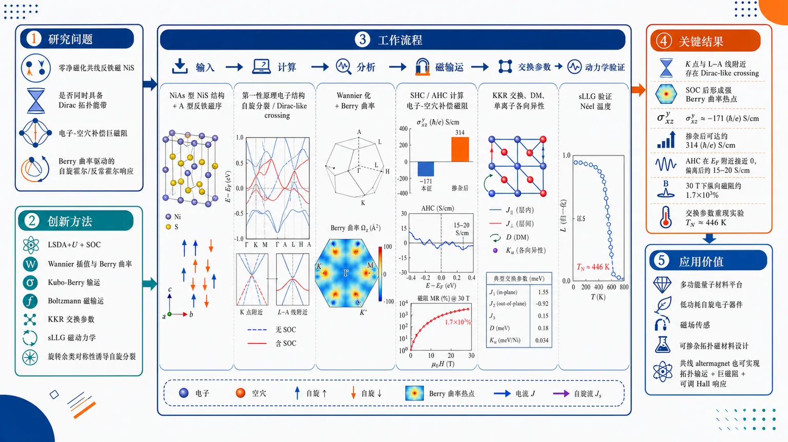
研究问题NiS 在零净磁化的共线反铁磁背景下，是否能同时具备 Dirac 拓扑能带、电子-空穴补偿导致的巨磁阻，以及 Berry 曲率驱动的自旋霍尔/反常霍尔响应？核心是把这些看似分属不同机制的现象统一到同一材料与同一对称性框架中。创新方法用 LSDA+U+SOC 结合 Wannier 插值、Berry 曲率/Kubo-Berry 输运、Boltzmann 磁输运、KKR 交换参数提取和 sLLG 磁动力学，把“旋转余类对称性”诱导的动量依赖自旋分裂、SOC 打开 Dirac-like 交叉后的 Berry 曲率热点、以及长程超交换磁序串成一条统一机制链。Aha 点是：零净磁化的 altermagnet 也能在不破坏共线反铁磁的前提下允许本征 AHC，并同时保留补偿型巨磁阻。工作流程输入 NiAs 型 NiS 结构与 A 型反铁磁序 → 第一性原理求得电子结构、自旋分裂与 Dirac-like 交叉 → Wannier 化并计算 Berry 曲率，得到 SHC/AHC → 用半经典 Boltzmann 计算电子-空穴补偿下的磁阻 → 由 KKR 提取交换、DM 和单离子各向异性 → 通过 sLLG 模拟验证 Néel 温度与磁序稳定性。关键结果识别出 K 点及 L–A 线附近的 Dirac-like crossing，SOC 后形成强 Berry 曲率热点；EF 处得到显著自旋霍尔电导 σxz^y≈−171 (ħ/e) S/cm，掺杂后可达约 314 (ħ/e) S/cm；反常霍尔电导在 EF 附近接近零但离开后可达 15–20 S/cm；电子-空穴几乎完全补偿，30 T 下纵向磁阻约 1.7×10³%；交换参数与 sLLG 重现实验 TN≈446 K。应用价值把化学成分简单的 3d 反铁磁硫族化物提升为可设计的多功能量子材料平台，说明共线 altermagnet 也能同时实现拓扑输运、巨大磁阻和可调 Hall 响应，可为低功耗自旋电子器件、磁场传感和可掺杂拓扑磁材料设计提供路线图。第一部分：核心概览
这篇工作把NiS统一刻画为一种载流子补偿的altermagnetic semimetal：非对称旋转余类对称性诱导动量依赖自旋分裂，SOC 打开 Dirac-like 交叉的小能隙后形成强Berry 曲率热点，从而同时产生大自旋霍尔响应、允许的本征反常霍尔响应与超过 10³% 的巨磁阻。进一步用第一性原理提取完整磁交换张量，并以 sLLG 重现实验 Néel 温度，建立了电子拓扑、磁序与晶格对称性耦合的统一图景。其地位在于：把一种化学成分简单的3d 反铁磁硫族化物推进为兼具拓扑输运与磁性可调性的模型平台。
---
第二部分：结构化快速回顾
《Dirac topology, anomalous Hall response, and giant magnetoresistance in carrier-compensated altermagnetic semimetal NiS》（None，）
背景
NiS 具有 NiAs 型六方结构、A 型反铁磁序、实验上已报道的巨大磁阻与 265 K 一阶磁转变；先前理论已提示其属于 altermagnet，但 Dirac 拓扑、Berry 曲率输运与补偿输运之间的统一机制尚未完整建立。
方法
采用 LSDA+U+SOC 第一性原理、Wannier 插值、Berry 曲率/Kubo-Berry 公式、半经典 Boltzmann 输运、KKR 交换参数提取以及 sLLG 磁动力学模拟。
结果
识别出 K 点及 L–A 路径上的 Dirac-like crossings；SOC 后形成强 Berry 曲率热点。得到显著且各向异性的 SHC，非零 AHC，以及约 1.7×10³% 的磁阻。交换参数重现实验 TN≈446 K。
讨论
结果显示：在零净磁化的共线反铁磁中，altermagnetic 旋转余类对称性可解除传统 PT 约束，使 AHC 与 SHC 共存；同时电子-空穴补偿控制巨磁阻。
局限
磁输运基于刚性能带与弛豫时间近似；电子结构依赖所选 U=2.3 eV；交换与磁性采用经典自旋模型，未显式纳入强无序、极低温量子涨落和多体重整化。
结论
NiS 被确立为一个兼具Dirac 拓扑、altermagnetism、Berry 曲率输运、载流子补偿与长程超交换磁性的 3d 多功能量子材料。
---
第三部分：逐章节冷凝解析
Abstract
1. NiS 被定义为补偿型 3d altermagnetic semimetal
- 关键结论：六方 NiS 同时具备拓扑、磁性、晶格动力学的内在耦合。
- 证据细节：使用 first-principles DFT、Berry-curvature analysis、semiclassical Boltzmann transport、atomistic spin dynamics。
- 原文引述：*"we combine first-principles density-functional theory, Berry-curvature analysis, semiclassical Boltzmann transport, and atomistic spin dynamics to establish hexagonal NiS as a compensated 3d altermagnetic semimetal"*。
2. 旋转余类对称性导致动量依赖自旋分裂
- 关键结论：NiAs 晶格的rotational coset symmetry 生成 altermagnetic 特征性的 momentum-dependent spin splitting。
- 机制：共线 AFM 但无净磁化；自旋上、下态通过晶体旋转互相映射。
- 原文引述：*"The rotational coset symmetry of the NiAs lattice produces momentum-dependent spin splitting characteristic of altermagnetism."*
3. SOC 打开 Dirac-like 交叉并激发 Berry 曲率热点
- 关键结论：gapped Dirac-like crossings 产生强烈 Berry 曲率集中区。
- 后果：出现大 intrinsic SHC、允许的 AHC、以及 nonsaturating magnetoresistance exceeding 10³%。
- 原文引述：*"With spin–orbit coupling, gapped Dirac-like crossings generate intense Berry-curvature hot spots and nearly compensated electron–hole pockets."*
- 原文引述：*"nonsaturating magnetoresistance exceeding 10³%"*。
4. 磁性交换张量与实验 Néel 温度一致
- 关键结论：从头计算得到的exchange tensor 显示长程超交换与明显各向异性交互。
- 结果：sLLG 定量再现实验 Néel temperature。
- 原文引述：*"quantitatively reproducing the experimental Néel temperature."*
5. NiS 被提升为设计原型
- 关键结论：在单一对称框架内同时容纳补偿输运、altermagnetism、Berry 曲率输运、晶格敏感磁性。
- 原文引述：*"NiS as a model 3d platform in which carrier compensation, altermagnetic symmetry, Berry-curvature–driven transport, and lattice-sensitive magnetism coexist within a single symmetry framework."*
---
Introduction
1. Dirac semimetal 与巨大磁阻的基本物理框架
- 关键点：3D Dirac semimetal 具有“massless Dirac fermions”的低能激发，常由 C4v、C6v 或nonsymmorphic operations 稳定。
- 与输运相关：这类体系常见 extremely large magnetoresistance (XMR)。
- 原文引述：*"Three-dimensional (3D) topological Dirac semimetals (DSMs) realize a quantum state in which low-energy excitations behave as massless Dirac fermions"*。
2. 电子-空穴补偿是 XMR 的核心微观机制
- 关键点：nearly perfect electron-hole compensation 抑制磁场下的电导，形成大磁阻。
- 原文引述：*"A key microscopic mechanism underlying XMR is nearly perfect electron-hole compensation"*。
3. NiS 的材料背景：NiAs 结构、265 K 磁转变、A 型 AFM
- 结构：空间群 P6₃/mmc。
- 相变：在 Tt ≃ 265 K 从高温 Pauli 顺磁金属转变为低温 A-type AFM semimetal。
- 磁结构：Ni 自旋在 ab 面内铁磁、沿 c 轴反铁磁排列，伴随约 2% 体积膨胀。
- 原文引述：*"undergoes a first-order transition at Tt ≃ 265 K from a high-temperature Pauli paramagnetic metal to a low-temperature A-type antiferromagnetic (AFM) semimetal"*。
- 原文引述：*"accompanied by an abrupt ∼2% volume expansion"*。
4. NiS 已被识别为 altermagnet，但拓扑输运潜力尚需统一
- 关键点：先前工作已把低温相视作 altermagnetic。
- 新意方向：探索其是否可同时成为 altermagnetic Dirac semimetal。
- 原文引述：*"Recent theoretical work has identified this phase as altermagnetic"*。
5. 本研究的总目标：统一 Dirac 拓扑、补偿与 Hall/MR 响应
- 关键点：通过 DFT 与模型方法确认Dirac-like band crossings、anisotropic SHC、near-perfect electron-hole compensation 与 giant magnetoresistance。
- 原文引述：*"revealing the cooperative interplay of Dirac-like band topology, carrier compensation, and pronounced magnetotransport responses."*
6. Berry 曲率可在共线 3d AFM 中产生有限 AHC
- 关键点：altermagnetic 对称性打破了传统“Berry 曲率驱动电荷霍尔响应被禁止”的约束。
- 原文引述：*"demonstrating that altermagnetic symmetry lifts the conventional constraint forbidding Berry-curvature-driven charge transport in collinear 3d antiferromagnets."*
---
Electronic structure
1. 基态磁序为 A 型反铁磁
- 方法：LSDA+U+SOC。
- 结论：A 型 AFM，Ni 层内铁磁、层间反铁磁。
- 原文引述：*"the magnetic ground state is A-type antiferromagnetic"*。
- 原文引述：*"ferromagnetically aligned hexagonal Ni layers are coupled antiferromagnetically along the c axis."*
2. Ni 上存在显著的自旋与轨道磁矩
- 数值：μS = 0.90 μB, μL = 0.10 μB, 比值 μL/μS ≈ 0.11。
- 含义：SOC 贡献不可忽略。
- 原文引述：*"μS = 0.90 μB and μL = 0.10 μB"*。
- 原文引述：*"highlighting a non-negligible spin–orbit coupling (SOC) contribution."*
3. 费米能附近为 Ni-3d 主导的半金属态
- 结果：small but finite density of states at EF。
- 主导轨道：Ni-3d states。
- 原文引述：*"NiS remains semimetallic with a small but finite density of states at the EF, dominated by Ni-3d states."*
4. 晶场分裂把 d 轨道分为 a1g、e2g、e1g
- 对称性：六方 P6₃/mmc 对应 D3d 表示。
- 顺序：a1g 最低，随后 e2g、e1g。
- 分裂能：约 204 meV 与 61 meV。
- 原文引述：*"the d manifold splits into a1g, e2g, and e1g which are representations of D3d symmetry."*
- 原文引述：*"splittings of ∼204 meV and ∼61 meV"*。
5. 低能物理由 e1g 与 e2g 主导
- 结论：靠近 EF 的低能带主要由 e1g/e2g 控制。
- 含义：后续拓扑和补偿性质都受该轨道子空间支配。
- 原文引述：*"the low-energy electronic structure is dominated by the effective e1g and e2g orbitals."*
6. 存在近似补偿的电子口袋和空穴口袋
- 结果：K 点附近与 A–L 线附近出现电子口袋，A 点附近出现空穴口袋。
- 原文引述：*"the coexistence of nearly compensated electron and hole pockets"*。
7. K 点出现四重简并 Dirac-like crossing α
- 无 SOC 时：K 点 crossing fourfold degenerate。
- 来源：自旋简并 + little group 的二维不可约表示。
- 原文引述：*"the crossing at the K point (α) is fourfold degenerate."*
- 原文引述：*"This degeneracy originates from two distinct ingredients"*。
8. 反铁磁对称性只在 kz = 0 平面强制 Kramers-like 简并
- 对称性：T 破缺，P 保留；还有 S = T τ1/2。
- 结果：Kramers 简并仅在 kz = 0 平面成立。
- 原文引述：*"Kramers degeneracy is enforced only on the kz = 0 plane"*。
9. SOC 将四重交叉分裂为两个双重简并带
- 结果：自旋 SU(2) 对称性被破坏，magnetic double group 约束取代之。
- 不受保护的交叉出现小能隙：α、β、γ、δ。
- 原文引述：*"the fourfold crossing at K splits into two doubly degenerate bands"*。
- 原文引述：*"Crossings not protected by the little-group symmetry acquire small gaps"*。
10. 交叉带具有 e1g/e2g 的不同不可约表示
- 意义：靠近 EF 的反转是symmetry-distinct band inversion。
- 因为 P 保持，parity character 可定义，利于拓扑判别。
- 原文引述：*"Their inversion near EF signals a symmetry-distinct band inversion."*
---
Spin-resolved electronic structure / Figure 2 对应段落
1. NiS 展现典型 altermagnetic 动量依赖自旋分裂
- 证据：L–Γ–L¯ 与 M–A–M¯ 路径上出现显著自旋上/下带分裂。
- 原文引述：*"the emergence of momentum (k) dependent spin splitting characteristic of altermagnetism."*
2. 最大自旋分裂约为 0.7 eV
- 数值：沿 L–Γ 方向最大分裂约 0.7 eV。
- 对比：与 RuO2、CrSb 的典型 altermagnet 自旋分裂同量级。
- 原文引述：*"reaching a maximum value of approximately 0.7 eV along the L–Γ direction"*。
3. 分裂来源于旋转对称而非平移对称
- 关键差异：常规共线 AFM 依赖 PT 或翻译-时间反演保持简并；NiS 通过晶体旋转关联两磁子晶格。
- 原文引述：*"the two magnetic sublattices through crystal rotations rather than translations."*
4. 6 重各向异性等能面直接反映 altermagnetic 纹理
- 在 kx-ky 平面：spin-up 和 spin-down 形成彼此旋转相关的 sixfold-anisotropic contours。
- 在 kx-kz 平面：出现取向相反的椭圆口袋。
- 原文引述：*"the spin-up and spin-down states form distinct sixfold-anisotropic contours related by crystal rotation"*。
5. 强自旋分裂是 Berry 曲率热点的直接来源
- 逻辑链：动量依赖分裂 → SOC 作用下的避交 → 强 Berry 曲率 → Hall 响应。
- 原文引述：*"These momentum-space textures directly reflect the rotational-coset symmetry"*。
- 原文引述：*"strong Berry-curvature hot spots"*。
---
Spin and anomalous Hall conductivity
1. 磁群约束下 SHC 具有六个独立非零分量
- 对称性：自旋沿 c 轴时，磁 Laue 群为 6/mmm。
- 结果：σ αβγ 张量有六个独立非零分量。
- 原文引述：*"the magnetic Laue group remains 6/mmm, which constrains the spin tensor σαβγ to six independent nonzero components."*
2. EF 处主导 SHC 分量为 σxz^y = −171 (ħ/e) S/cm
- 数值：σxz^y = −171 (ħ/e) S/cm。
- 其他分量较小。
- 原文引述：*"At EF, the dominant contribution is σxz^y = −171 (ħ/e) S/cm."*
3. SHC 对化学势高度敏感，可通过掺杂调控
- 极值：
- σxz^y = −282 (ħ/e) S/cm at −0.15 eV
- σxz^y = 314 (ħ/e) S/cm at 0.23 eV
- σyz^x = −320 (ħ/e) S/cm at 0.30 eV
- 含义：中等载流子掺杂即可增强/反转自旋流响应。
- 原文引述：*"moderate carrier doping can effectively tune the spin-current response."*
4. SHC 明显高于若干经典 AFM 合金，接近拓扑半金属水平
- 对比：
- PtMn ≈ 183 (ħ/e) S/cm
- IrMn ≈ 41 (ħ/e) S/cm
- MoTe2 ≈ −361 (ħ/e) S/cm
- WTe2 ≈ −204 (ħ/e) S/cm
- 原文引述：*"These values exceed those reported for several well-known antiferromagnetic alloys such as PtMn ... and IrMn ... and are comparable to peak SHC values found in topological semimetals such as MoTe2 and WTe2."*
5. 大 SHC 的微观来源是 SOC 诱导的避交
- 热点位置：K 点附近与 L–A 线。
- 原文引述：*"The dominant contribution originates from SOC-induced avoided crossings near the K point and along the L–A line"*。
6. AHC 在 NiS 中是对称性允许的，即便净磁化为零
- 关键点：altermagnetic symmetry 使传统对称约束失效。
- 原文引述：*"the same Berry-curvature hot spots that generate the large SHC also produce a sizable intrinsic AHC"*。
- 原文引述：*"finite AHC in NiS could be attributed to its altermagnetic symmetry."*
7. 不存在强制 Ω(k) = −Ω(−k) 的全局对称性
- 结果：Berry 曲率在整个 BZ 不被迫抵消，因此 AHC 非零。
- 原文引述：*"no symmetry operation enforces Ω(k) = −Ω(−k) over the entire Brillouin zone."*
8. EF 附近 AHC 接近零，离开 EF 后达到 15–20 S/cm
- 数值：在 −0.5 eV 和 +0.8 eV 左右，AHC 约 15–20 S/cm。
- 原文引述：*"The calculated AHC is close to zero at EF"*。
- 原文引述：*"the AHC reaches values of order 15–20 S/cm around −0.5 eV and +0.8 eV."*
9. 这一 AHC 与 Mn3Ga 同量级
- 对比：Mn3Ga 峰值约 17 S/cm。
- 原文引述：*"the magnitude is comparable to that reported for hexagonal noncollinear magnets such as Mn3Ga"*。
10. 与 PT 对称共线 AFM 的严格零 AHC 形成鲜明对比
- 结论：NiS 中无须 canting 或额外对称性破缺即可产生本征 AHC。
- 原文引述：*"This behavior contrasts with collinear antiferromagnets possessing effective PT or Tτ symmetry, where Berry curvature cancels identically and intrinsic AHC is strictly forbidden."*
---
Fermi-surface topology and large magnetoresistance
1. 费米面由电子口袋和空穴口袋共同构成
- 结构：电子口袋在 K 点，空穴口袋在 A 点。
- 原文引述：*"electron pockets are centered near the K points, while a hole pocket forms around A"*。
2. 载流子密度近似完全补偿
- 数值：ne ≈ nh ≈ 2.73 × 10²⁰ cm⁻³。
- 这直接支撑大磁阻机制。
- 原文引述：*"indicating strong electron–hole compensation."*
3. 半经典输运给出显著且非饱和的磁阻
- 结果：ρzz 从零场约 3 μΩ cm 升至 60 μΩ cm（30 T, 50 K）。
- 磁阻：MRzz ≈ 1.7 × 10³%。
- 原文引述：*"the longitudinal resistivity ρzz increases monotonically from ∼3 μΩ cm at zero field to ∼60 μΩ cm at 30 T (50 K)."*
- 原文引述：*"MRzz ... reaches ∼1.7 × 10³ % at 30 T."*
4. 与实验 NiS 的约 1500% MR 一致
- 原文引述：*"in good agreement with experimental reports of MR ∼ 1500% in bulk NiS at lower fields."*
5. 磁阻与 Hall 输运在同一材料中共存
- 关键反差：通常大 MR 常见于非磁性补偿半金属，而强 Berry 曲率 Hall 效应常见于磁性体系。
- NiS 同时具备：
1) 补偿输运，
2) 大 intrinsic SHC，
3) 有限 intrinsic AHC。
- 原文引述：*"The simultaneous realization of (i) compensated electron–hole transport, (ii) large intrinsic SHC, and (iii) finite intrinsic AHC ... is therefore highly uncommon."*
6. NiS 是“多功能输运平台”
- 原文引述：*"NiS thus exemplifies a multifunctional transport platform in which semiclassical carrier compensation and quantum Berry curvature effects coexist within the same band structure."*
---
Spin Hamiltonian
1. 磁输运与拓扑现象建立在稳定的 A 型 AFM 背景上
- 关键点：需从微观磁交换解释相变与易磁化轴。
- 原文引述：*"A microscopic understanding of the magnetic interactions is therefore essential"*。
2. 采用 KKR Green-function 提取交换与各向异性
- 方法：Korringa–Kohn–Rostoker Green-function formalism。
- 原文引述：*"we computed the magnetic exchange interactions and SOC-induced anisotropic couplings using the Korringa–Kohn–Rostoker Green-function formalism"*。
3. 主导各向同性交换为 J1、J2、J3
- 数值（表 1，单位 meV，LT）：
- J1 = −3.31
- J2 = 0.69
- J3 = −4.53
- 解释：J1、J3 为强反铁磁；J2 弱铁磁。
- 原文引述：*"both J1 and J3 are strongly antiferromagnetic, while J2 is weakly ferromagnetic."*
4. 长程 J3 比 J1 更强，说明超交换通道高效
- 物理含义：不只是最近邻决定磁序，long-range superexchange 也关键。
- 原文引述：*"the longer-range J3 exceeds J1 in magnitude despite the larger Ni–Ni distances"*。
5. Goodenough–Kanamori–Anderson 规则解释交换符号
- 几何角：
- 一近邻：68°
- 二近邻：91°
- 三近邻：131°
- 结论：二近邻近 90° → 弱铁磁；偏离 90° 越大 → e_g–e_g 反铁磁超交换更强。
- 原文引述：*"the near-90° bond angle for the second neighbor (∼91°) favors weak ferromagnetic exchange"*。
6. DM 相互作用仅在第三近邻非零
- 原因：前两近邻因反演对称性被抑制。
- 数值：D3 = 0.25 meV。
- 原文引述：*"the third NN path lacks an inversion center and supports a finite DM vector with a magnitude of D3 = 0.25 meV."*
7. 单离子各向异性稳定 c 轴易磁化方向
- 数值：εAN = 0.14 meV/Ni。
- 原文引述：*"the single-ion anisotropy ... is sizable, reflecting a significant SOC-induced magnetocrystalline anisotropy that stabilizes the crystallographic c axis as the easy axis of magnetization."*
8. 有效自旋哈密顿量由三部分组成
- 形式：Heisenberg + DM + 单离子各向异性。
- 原文引述：*"Hspin = -1/2 sum Jᵢⱼěc Sᵢḑot ěc Sⱼ - sum mathbf Dᵢⱼḑot[ěc Sᵢ × ěc Sⱼ] - sumᵢ ǎrepsilonᵢAN(Sᵢ^z)²."*
9. sLLG 模拟得到 TN ≈ 446 K，与实验一致
- 结果：磁比热在 TN≈446 K 出现尖峰。
- 原文引述：*"reproduce a sharp antiferromagnetic transition at TN ≈ 446 K"*。
- 原文引述：*"in excellent agreement with experiment."*
---
Conclusion
1. NiS 被确立为统一的 correlated 3d altermagnetic semimetal
- 统一内容：Dirac-like topology、carrier compensation、Berry-curvature transport、magnetic order。
- 原文引述：*"we establish NiS as a correlated 3d altermagnetic semimetal where Dirac-like topology, carrier compensation, Berry-curvature-driven transport, and magnetic order emerge from a common symmetry-governed electronic structure."*
2. SOC 后的 Dirac-like crossings 同时驱动 SHC 与 AHC
- 原文引述：*"gapped Dirac-like crossings generate pronounced Berry-curvature hot spots, yielding large intrinsic SHC and symmetry-allowed AHC despite zero net magnetization."*
3. 补偿输运导致约 10³% 的非饱和磁阻
- 原文引述：*"nearly perfect electron–hole compensation gives rise to nonsaturating magnetoresistance of order 10³%"*。
4. NiS 处于与 LuBi、YBi、NdBi、PrBi、ScSb 等不同的稀有区间
- 对比：
- 传统极大磁阻常来自半经典补偿；
- 重元素体系如 α-WP2、NbSb2 常依赖强 SOC。
- NiS 的独特性：补偿 MR 与 Berry 曲率 Hall 共存于 chemically simple 3d altermagnet。
- 原文引述：*"NiS realizes a distinct regime where compensation-driven magnetoresistance and Berry-curvature–mediated Hall effects coexist in a chemically simple 3d altermagnet."*
5. 设计原则指向：补偿费米面 + 对称性强制交叉 + 超交换
- 原文引述：*"This combination is exceptionally rare and points to a more general design principle in which compensated FS, symmetry-enforced band crossings, and superexchange collectively enable multifunctional behavior in correlated 3d systems."*
---
Acknowledgments
1. 资助来源
- 信息：ANRF（原 SERB）核心科研资助 CRG/2023/003063。
- 原文引述：*"S.K.P. acknowledges support from ANRF (previously SERB), Government of India for the core research grant (CRG/2023/003063)."*
---
Data availability
1. 数据可按需索取
- 原文引述：*"The data that support the findings of this article are available from the authors upon reasonable request."*
---
Supplementary Information: LSDA+U+SOC calculations
1. 第一性原理平台与基组细节
- 方法：FP-LAPW，WIEN2k。
- 球半径：Ni 2.32 a.u.，S 2.06 a.u.
- 截断：RMTkmax = 7，Gmax = 12。
- k 点：不可约布里渊区 885 个 k 点。
- 原文引述：*"using the full-potential linearized augmented plane-wave (FP-LAPW) method, as implemented in the WIEN2k code"*。
2. Hubbard U 的取值
- 数值：U = 2.3 eV。
- 原文引述：*"The value of U = 2.3 eV was adopted based on earlier studies of NiS."*
3. SOC 采用自洽第二变分方案
- 原文引述：*"Spin-orbit coupling (SOC) was included self-consistently using the second-variational scheme."*
---
Supplementary Information: Berry curvature and intrinsic spin Hall conductivity
1. Wannier90 + WannierTools 构建紧束缚模型
- 目标：计算 intrinsic SHE。
- 原文引述：*"we constructed a tight-binding Hamiltonian based on maximally localized Wannier functions using the Wannier90 package"*。
2. SHC 通过 Kubo–Berry 公式计算
- 公式核心：
- σ αβγ = -(e²/ħ)(1/VNk) Σk Ω αβγ(k)
- Ω αβγ(k) 来自带间矩阵元。
- 原文引述：*"the intrinsic SHC was calculated using the Kubo–Berry formalism"*。
- 原文引述：*"This formulation explicitly highlights that the intrinsic SHC is governed by interband matrix elements weighted by the inverse square of the energy separation between bands."*
3. 251×251×251 的超密 k 网格保证收敛
- 原文引述：*"dense k-point meshes (251 × 251 × 251) were employed to ensure convergence of the Berry curvature."*
4. AHC 通过把自旋流算符换成电荷流算符得到
- 原文引述：*"The same formalism, with the spin-current operator replaced by the charge-current operator, was used to compute the intrinsic anomalous Hall conductivity."*
---
Supplementary Information: Boltzmann transport theory
1. 采用半经典 Boltzmann 输运
- 软件：WannierTools。
- 假设：
1) rigid-band approximation
2) relaxation-time approximation
- 原文引述：*"The calculation is carried out under two standard assumptions"*。
2. 电导张量由轨道速度与磁场轨迹平均速度决定
- 结果形式：σij(B)/τn 的积分表达。
- 原文引述：*"charge carriers follow magnetic-field–driven trajectories in momentum space."*
3. 电阻与磁阻定义明确
- 关系：ρ = σ⁻¹，MR(%) = [ρ(B) − ρ(0)]/ρ(0) × 100%。
- 原文引述：*"The resistivity tensor is then computed as the inverse of the conductivity tensor"*。
---
第四部分：深度理解与语言支持
1) 关键术语解析
Altermagnetism
- 语境含义：不是传统铁磁，也不是具有 PT 简并的普通共线反铁磁。
- 微妙差别：净磁化为零，但因为两磁子晶格通过旋转而非平移关联，动量空间中出现自旋分裂。
- 这类体系允许“zero net magnetization + spin-split bands”共存。
Rotational coset symmetry
- 语境含义：空间群的一个陪集由旋转元素生成，连接不同磁子晶格。
- 微妙差别：它不恢复全局时间反演，却仍能在某些 k 空间路径上施加严格约束。
- 这是 AHC/SHC 能出现的对称学根源。
Berry-curvature hot spots
- 语境含义：Berry 曲率在少数 k 点附近强烈集中，通常出现在避交或近简并位置。
- 微妙差别：不是均匀分布的“背景效应”，而是由特定能带几何结构尖峰主导输运。
- 在这里直接连接 SOC-gapped Dirac crossings 与 Hall 响应。
Kramers-like degeneracy
- 语境含义：不是普通时间反演 Kramers 简并，而是由 S = T τ1/2 等反幺正对称性导致的类 Kramers 简并。
- 微妙差别：只在特定平面（这里是 kz = 0）成立，不是全布里渊区普适。
Carrier compensation
- 语境含义：电子与空穴数密度近乎相等。
- 微妙差别：它不是“半金属”本身，而是导致 large nonsaturating MR 的关键条件。
- 在 NiS 中对应 ne ≈ nh ≈ 2.73×10²⁰ cm⁻³。
---
2) 疑难查证：为什么零净磁化还能出现 AHC？
核心逻辑是：零净磁化 ≠ Berry 曲率必然相消。
在许多共线反铁磁中，PT 或 Tτ 对称性把 Ω(k) 与 Ω(−k) 严格配对为相反值，导致布里渊区积分为零。但 NiS 的磁结构属于 altermagnetic：
- P 保留；
- T 破缺；
- 连接两磁子晶格的是旋转余类对称性，不是简单平移反演；
- 因此没有一个全局对称性强制 Ω(k) = −Ω(−k)。
结果是：
- 某些区域 Berry 曲率正贡献很强；
- 某些区域负贡献也存在；
- 在 EF 恰好近似抵消，所以 AHC 近零；
- 轻微掺杂后，抵消被打破，AHC 迅速达到 15–20 S/cm 量级。
这也是这类体系最重要的认知转折：共线反铁磁也能在不自旋倾斜的前提下拥有本征 AHC。
---
第五部分：创新评估与关联
1) 创新性判断
近 2–5 年相关工作中，三个方向各自发展很快：
- altermagnetism 提供无净磁化自旋分裂的新范式；
- Dirac semimetals 与 XMR 的补偿机制成熟；
- Berry curvature-driven Hall responses 在非共线磁体中已较常见。
这篇工作的新颖性在于把三者锁进同一材料 NiS：
- 不是只给出 altermagnetic band splitting；
- 不是只说明补偿导致磁阻；
- 不是只证明某个 Hall 响应存在；
- 而是用同一套对称性与能带结构同时解释：
- Dirac-like crossings，
- large SHC，
- finite intrinsic AHC，
- giant nonsaturating MR，
- microscopic exchange hierarchy，
- experimentally consistent TN。
最关键的前人未解问题，是共线 3d 反铁磁中 AHC 为什么能出现，以及补偿磁阻与 Berry 曲率 Hall 响应为何能共存。NiS 给出的答案不是局域缺陷、非共线倾斜或杂质效应，而是altermagnetic rotational-coset symmetry + SOC-gapped Dirac crossings + carrier compensation 的组合。
2) 相对前 2–5 年工作的实质推进
- 相比 RuO2、CrSb 等 altermagnet，NiS 提供了更完整的输运闭环：不仅有自旋分裂，还明确给出 SHC/AHC/MR 的协同结果。
- 相比 WTe2、MoTe2 等高 SHC/大 MR 拓扑半金属，NiS 是3d 化学体系，更简单、更强相关、更接近可设计磁性材料平台。
- 相比传统 PT 对称 AFM，NiS 直接展示 AHC allowed without canting，这在概念上最具突破性。
3) 仍未完全解决的问题
- AHC 在 EF 附近接近零，实验上如何通过门控或化学掺杂稳定调到峰值区间，仍需要材料工程验证。
- 半经典输运与经典自旋动力学能很好匹配现有数据，但对强无序、低温量子涨落、电子关联重整化的刻画仍不完整。
- Dirac-like crossing 的实验谱学确认、Berry 曲率热点的直接探测，以及 AHC 的定量测量，仍是后续关键检验。
如果需要，可以继续把这篇论文整理成：
- 一页式图解笔记，
- 适合组会汇报的 PPT 大纲，或
- “每个图对应什么结论”的逐图精读版。
-
08
📊 含图深析
📄 摘要：通过高场磁输运和力矩量子振荡，结合含自旋轨道耦合的 DFT+U，系统测量原型交替磁体 CrSb 的费米面。多个量子振荡频率在宽角度范围内可追踪，并由交替磁电子结构产生的自旋劈裂费米面一致解释；能带 1 和 2 形成以 A 点为中心的闭合口袋。
💡 亮点：量子振荡直接解析 CrSb 的自旋劈裂费米面，为交替磁能带从理论候选走向体输运实验证据提供关键支撑。DFT+U 与角度依赖频率的对应强化了 CrSb 作为原型交替磁体的地位。
📖 展开分析 + 配图
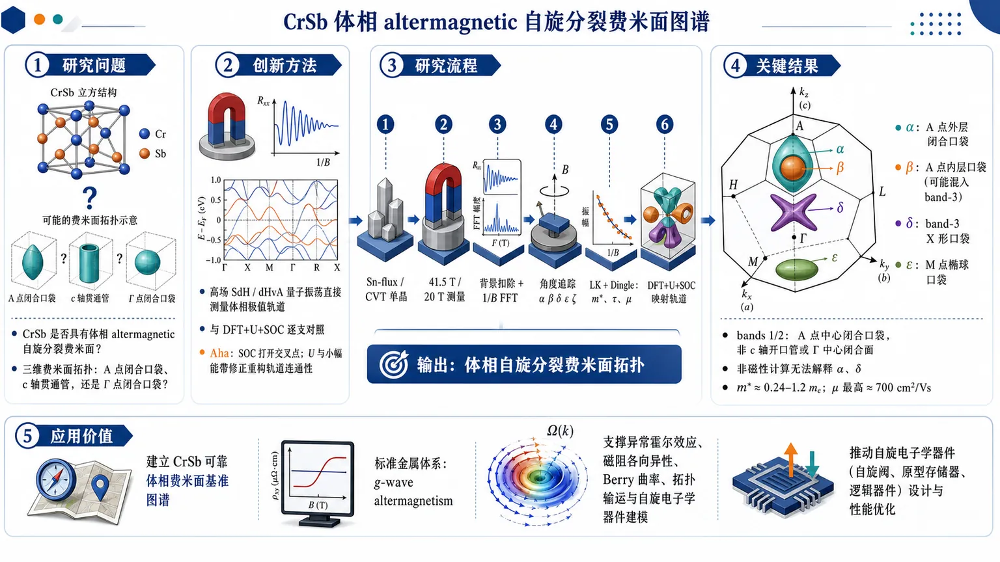
研究问题室温金属反铁磁候选材料 CrSb 是否真的具有体相 altermagnetic 自旋分裂费米面？其三维费米面拓扑究竟是 A 点中心闭合口袋、c 轴贯通管状面，还是 Γ 点中心闭合口袋？创新方法用高场 Shubnikov–de Haas 与 de Haas–van Alphen 量子振荡直接测量体相极值轨道，并与 DFT+U+SOC 逐支对照；关键 Aha 点是：SOC 打开交叉点、改变回旋轨道连通性，U 与小幅能带修正把 bands 1/2 从旧的 c 轴开口管状面重构为 A 点中心闭合口袋，从而统一解释 α、β、δ、ε、ζ 多条振荡分支。工作流程输入 Sn-flux 与 CVT 生长的 CrSb 单晶 → 在最高 41.5 T / 20 T 磁场中测量磁阻 SdH 与扭矩 dHvA 振荡 → 去除背景并对 1/B 信号做傅里叶分析，提取 α、β、δ、ε、ζ 频率 → 改变磁场角度追踪频率分支 → 用 Lifshitz–Kosevich 与 Dingle 分析得到有效质量、散射时间和迁移率 → 构建 DFT+U+SOC 费米面并微调能带 → 将实验频率、角度依赖和质量映射到具体费米面轨道 → 输出 CrSb 的体相自旋分裂费米面拓扑。关键结果实验观测到 α、β、δ、ε、ζ 多条量子振荡分支；α 对应 A 点外层闭合口袋，β 主要关联 A 点内层口袋并可能混入 band-3 轨道，δ 对应 band-3 的 X 形口袋，ε 对应 M 点椭球口袋。bands 1/2 被确认为以 A 点为中心的闭合 rugby-ball 状与内层球形口袋，而不是 c 轴贯通管状面或 Γ 中心闭合面。非磁性计算无法解释 α 和 δ 分支；有效质量约 0.24–1.2 me，迁移率最高约 700 cm²/Vs，整体支持 g-wave altermagnetic 自旋分裂费米面。应用价值为 CrSb 建立了可靠的体相费米面基准图谱，使其成为研究 g-wave altermagnetism 的标准金属体系；该拓扑坐标系可支撑后续异常霍尔效应、磁阻各向异性、Berry 曲率、拓扑输运和自旋电子学器件设计的定量建模。第一部分：核心概览 (Overview)
这项研究以高场Shubnikov–de Haas与de Haas–van Alphen振荡为主线，结合DFT+U + SOC，首次把体相 CrSb 的altermagnetic自旋分裂费米面定得很清楚：bands 1/2 形成以 A 点为中心的闭合口袋，而非先前提出的c 轴贯通管状或Γ 中心闭合拓扑。实验频率、有效质量与角度依赖均与该拓扑一致，非磁性计算则系统失配，因而把 CrSb 确立为研究g-wave altermagnetism的基准金属体系。
---
第二部分：结构化快速回顾
《Altermagnetic spin-split Fermi surfaces in CrSb revealed by quantum oscillation measurements》（None，）
背景：CrSb 是室温金属反铁磁候选 altermagnet，已有 ARPES 看到大 g-wave 自旋分裂，但体相费米面拓扑仍有争议。
方法：在 41.5 T 与 20 T 磁场平台上做 SdH/dHvA，样品包括 Sn-flux 与 CVT 生长晶体，主样品 RRR=6.8 与 9.8；配合 DFT+U+SOC 计算。
结果：观测到 α, β, δ, ε, ζ 多条量子振荡分支；bands 1/2 的振荡可由 A 点中心闭合口袋解释，非磁性模型无法同时解释 α、δ 等分支。
讨论：对比先前提出的管状与 Γ 中心拓扑，现有数据支持 A 点中心闭合口袋；β、ζ 仍带一定轨道归属不唯一性。
局限：β 存在质量与频率分配歧义；ζ 未被计算完全复现；未观察到预期的某些 Zeeman-field 驱动频率重构；Berry phase 不能定论。
结论：CrSb 的体相spin-split Fermi surface 已被量子振荡实证锁定，为后续altermagnetic输运与拓扑现象研究提供基准。
---
第三部分：逐章节冷凝解析 (Section-by-Section Condensing)
Abstract
- 研究目标与技术路线清晰指向体相费米面定标
高场输运与扭矩联合使用，并与含 SOC 的 DFT+U 对照，形成完整闭环。核心句为 *"We report a comprehensive quantum oscillation study of the prototypical altermagnet CrSb, combining high-field magnetotransport and torque measurements with DFT + U calculations including spin-orbit coupling."*
这里的关键不只是“观察到振荡”，而是把实验分支逐一映射到理论费米面。
- 实验分支与自旋分裂费米面一一对应
多条量子振荡频率在宽角度范围被追踪，且 *"The measured frequency branches are consistently explained by the spin-split Fermi surfaces arising from the altermagnetic electronic structure."*
这意味着频率不是孤立峰，而是一个能被统一几何解释的分支族。
- 最关键的拓扑结论：A 点中心闭合口袋
核心判定是 *"bands 1 and 2 form closed pockets centered at the A point"*，并且明确排除 *"the tubular c-axis-open sheets or Γ-centered closed pockets proposed in previous studies."*
这一点直接改写了 CrSb 的体相费米面图景。
- 学术地位：把 CrSb 从“候选”推进到“基准体系”
结尾的 *"provide a firm basis for exploring emergent phenomena in altermagnetic materials"* 表明，这不是局部参数拟合，而是为后续反常霍尔、拓扑输运、自旋电子学建立了基础边界条件。
---
Introduction
- 传统反铁磁的自旋简并规则被重新界定
在中心对称非磁性晶体中，能带通常二重或四重简并；常规反铁磁若满足“空间反演（必要时加平移）×时间反演”，也保持自旋简并。原文关键句是 *"the spin degeneracy remains if the product of the space inversion ... and the time reversal is a symmetry of the ordered state."*
这为后面“为何 CrSb 还能有自旋分裂”设定了对照标准。
- altermagnetism 的核心不是净磁矩，而是旋转关联的亚晶格关系
关键表述为 *"The up- and down-spin magnetic sublattices in altermagnets are connected by rotation, rather than by translation or inversion as in usual antiferromagnets."*
这一定义直接解释了为什么净磁化接近零时，仍可出现动量依赖的自旋劈裂。
- CrSb 具备最适合验证的材料条件
它是金属，晶体结构为六方 NiAs-type，空间群 P6₃/mmc (#194)，单位胞中两个 Cr 由 6-fold screw rotation (6₃) 联系；中子衍射已确认一个 Cr 为上自旋、另一个为下自旋。
低于 T_N ∼ 700 K 时，序参量沿 c 轴，有约 3 μB 的有序磁矩，符合 bulk g-wave symmetry。原文直述：*"The ordered moment ... is ∼ 3 μB parallel to the c axis, indicating an altermagnetic order with bulk g-wave symmetry."*
- 现有外部证据支持，但体相定量仍缺口明显
ARPES 已观察到大 g-wave spin-splitting，原文写作 *"ARPES measurements have observed large g-wave spin-splitting of the electronic bands in CrSb."*
但 ARPES 主要是表面敏感，无法完全替代体相费米面重建，因此量子振荡成为关键验证手段。
- 选择 CrSb 的逻辑强于 RuO2 与 MnTe
RuO2 近年的 μSR 与量子振荡结果指向非磁性或极弱磁性；MnTe 已有 ARPES 证实自旋分裂，但它是半导体，不适合通过量子振荡确认费米面。
因而 CrSb 兼具金属性、明确的反铁磁序与已知的大自旋分裂，最适合做体相验证。
---
Figure 1: Quantum oscillations in CrSb
- 样品制备与几何极大影响可观测频率
使用 Sn-flux 与 CVT 两种生长方法。flux 晶体呈六方棒状，长轴平行 c 轴；CVT 晶体为板状，表面垂直 c 轴。
因而电流方向分别沿 c 与 a。这一点直接决定 SdH 轨道探测的敏感截面。
- 高场平台与重复性保障了结果可信度
测量在两个系统完成：41.5-T resistive magnet + He-3（NHMFL）与 20-T superconducting magnet（NIMS，最高 17.5 T）.
关键句是 *"Consistent results were obtained from multiple samples grown via each method."*
说明频率并非单晶偶然性产物。
- 主样品的质量信息明确
本文最详细分析的是一块 RRR=6.8 的 flux 晶体和一块 RRR=9.8 的 CVT 晶体；另用其他 flux 晶体做了 dHvA 扭矩测量。
这给出样品纯度与可重复性层面的最基本证据。
- 频率与费米面面积的物理对应被明确重申
使用 Onsager relation：*"F = (ℏ / 2πe) A"*。
文中还给出尺度感：F = 300 T 约等于布里渊区中垂直于 c 轴截面积的 1%，说明观测的是较小而精细的极值截面。
- 振荡峰的处理方法有明确筛选标准
观察到 α, β, δ, ε, ζ 五个主峰；最底部几个带星号的峰被忽略，因为它们对应的振荡周期在测量窗口内 ≤1.5，更可能是去除直流分量后的伪峰。
原文判断是 *"they are likely to be artifacts caused by removal of the DC component during data processing."*
- 不同傅里叶窗口的用途不同
高频窗口（如 30–41.5 T）偏向高频，宽 1/B 窗口（如 7–17.5 或 15–41.5 T）提高低频分辨率。
这解释了为何某些峰在不同图中可见性不同。
---
Figure 2: Altermagnetic Fermi surface in CrSb
- 理论框架是带 SOC 的 DFT+U，而非裸 DFT
使用 PBE-GGA 和 Wien2k，并采用 U = 0.03 Ry。
进一步，为了匹配实验，bands 1/2 上移 65 meV，bands 3/4 下移 9.56 meV，以补偿载流子数变化。
这类能量修正被明确称为常规做法：*"Adjustment of the band energy by up to ∼100 meV is a common practice."*
- SOC 不是修饰项，而是决定轨道连通性的必要条件
关键句：*"SOC is essential for the data interpretation as it alters the cyclotron orbits by gapping out the crossing points."*
也就是说，若忽略 SOC，某些交叉会误连成不同的轨道，导致频率归属错误。
- 最终费米面由四个自旋非简并能带构成
四条能带 1–4 穿过费米能级。
- band 1/2：各自包含一个沿 kz 拉长、以 A 点为中心的外层“rugby-ball”口袋，以及一个 A 点中心的内层球形口袋。
- band 3：Γ 点附近小口袋与 M 点上的 X 形闭合口袋。
- band 4：M 点上的椭球口袋。
这些口袋的自旋极化随动量变化，符合 g-wave symmetry。
- band pair 的 altermagnetic 自旋分裂是空间上互补的
原文写道：*"The Fermi sheets of bands 1 and 2, as well as those of bands 3 and 4, can be regarded as pairs that are altermagnetically spin split."*
说明自旋分裂并非只发生在一条带，而是成对展开。
- 实验频率与轨道归属建立了核心映射
- α：主要对应 1-A-o，靠近 B ∥ c 时还混入 2-A-o。
- β：与 1-A-i、2-A-i 相关，但实验质量比单一理论轨道更大，故可能还混入 3-gp1。
- δ：可由 band-3 上 3-gp2 解释。
- ε：对应 band-4 的 4-M 轨道。
- ζ：可能来自一个未被计算复现的小口袋。
- β 的归属最具不确定性，也最有信息量
计算频率比实验高约 200 T，但对应带能差异最多约 80 meV；同时实验质量 1.13 mₑ 是 1-A-i/2-A-i 理论带质量的三倍以上。
因而文中给出替代解释：*"the β oscillation may receive a contribution from orbit 3-gp1."*
这表明 β 不是简单单轨道峰，而可能是近简并轨道叠加。
- δ 与 ε 的归属较稳定
δ 对应 3-gp2，实验与理论频率差最多约 200 T，但带能差 <20 meV；ε 对应 4-M，质量匹配也合理。
这两条分支是理论-实验闭环里最稳的部分之一。
- 非磁性计算明确失败
关键句：*"the agreement is poor, and especially, the frequency branches α and δ can never be explained by the nonmagnetic calculation."*
这直接排除了“简单非磁性金属”解释。
---
Figure 3: Temperature and magnetic-field dependences of quantum-oscillation amplitudes in CrSb
- Lifshitz–Kosevich 拟合给出有效质量
- α（B ∥ c）：m* / mₑ = 1.2(1)
- β（B ∥ a*）：1.13(4)**
- ε（B ∥ a*）：0.29(3)**
- ζ（B ∥ a）：0.24(1)
- δ（θ = −60°）：1.2(2)
这些数值说明多数主轨道并不重，属于可用振荡稳定解析的质量范围。
- α 的角度依赖支持 A 点外层轨道
随着磁场从 c 轴倾斜，α 先减小后增大，且在 |θ| > 20° 后上升。
这种非单调性与 band-1 outer Fermi sheet 的 1-A-o 最大极值轨道一致。
- α 在 c 轴附近混入 band-2 外层轨道
当 B ∥ c 附近时，2-A-o 的频率接近 1-A-o，因此 α 实际上含有双轨道成分。
这也是后面 Berry phase 不能直接从单一 Landau fan 读出的原因之一。
- β 的“看不见”本身就是物理信息
β 在 B ∥ c 附近几乎不出现，只在 |θ| ≳ 60° 时明显。
原因是相关轨道的带质量在接近 c 轴时迅速变大，约可达 a* 方向的 3 倍，使振幅被热平滑和散射衰减压低。
- β 的振荡峰可能不是单一轨道
理论上 1-A-i 与 2-A-i 可解释频率，但实验有效质量更大，因此引入 3-gp1 更合理。
原文直接写 *"the β oscillation may receive a contribution from orbit 3-gp1"*，且该轨道质量约 0.90 mₑ，与实验更接近。
- δ 的角度行为与 band-3 的 X 形口袋一致
δ 随 |θ| 增大到 40° 先减小后增大，吻合 3-gp2。
对应频率差异虽然可达 200 T，但带能差仅 <20 meV，说明几何归属是稳的。
- ε 的缺失靠近 c 轴可由质量增强解释
ε 归于 4-M 轨道；当磁场趋近 B ∥ c 时带质量增大，因此振荡消失并不意外。
- ζ 目前只知道“存在”，还没找到完美理论口袋
原文直接表述：*"The ζ frequency is likely due to a small pocket that could not be reproduced by the calculations for band 3."*
这是最明确的未解决分支。
- Dingle 分析给出散射时间与迁移率
线性拟合得到：
- α：τ = 0.38(4) ps，μ = 560(30) cm²/Vs
- β：τ = 0.28(2) ps，μ = 400(20) cm²/Vs
- ε：τ = 0.11(3) ps，μ = 700(100) cm²/Vs
这些迁移率高于先前报道，并接近多载流子分析中的主要载流子水平。
- 高迁移率次要载流子尚未被本实验直接确认
既有多载流子分析曾推断存在 >2000 cm²/Vs、浓度 ∼10¹⁹ cm⁻³ 或更低的 minor carriers，但在当前 SdH 数据中未被抓到。
这说明振荡法对极低密度载流子仍有盲区。
- Berry phase 争议被压回到方法学层面
原文明确说 *"the Berry phase cannot be definitively inferred"*，因为 α 在 B ∥ c 附近其实是两个轨道之和。
这直接削弱了单一相位拟合给出“非平庸 Berry phase”的结论。
- 未观察到理论预测的某些 altermagnetic 特征
对二维模型预言的单频分裂、合并再分裂等 Zeeman-field 行为，原文写道 *"we were unable to observe such behavior."*
这属于明确的实验边界。
---
Figure 4: Comparison with nonmagnetic calculations and previous studies
- 零 U 的 DFT 给出管状费米面，但与数据不符
无 U、无带能修正时，bands 1/2 是沿 c 轴贯通的 tube-like 费米面。
文中写 *"the tube-like Fermi surfaces of bands 1 and 2 that are open along the c axis."*
该模型在 A 口袋之外还会给出 Γ 截面的可观测振荡。
- 为何管状模型会被排除
若 1-A-o 在实验中如此明显，那么 1-Γ 与 2-Γ 也应可见，尤其在 B ∥ c 时更应明显。
但原文写 *"However, no frequencies corresponding to these orbits were detected."*
这是排除管状拓扑的关键证据。
- 引入 U = 0.03 Ry 后，费米面形状发生本质变化
bands 1/2 由管状变成 A 中心闭合口袋，并在 Γ 平面终止。
文中指出这 *"provides an explanation for the absence of frequencies corresponding to 1-Γ and 2-Γ near B ∥ c."*
- 对 Long 等工作的修正是方向性的
先前有人提出 Γ 中心闭合、在 A 平面终止的拓扑；当前结果认为相反，A 点中心、在 Γ 平面终止 更合适。
原文明确说 *"our Fermi surfaces ... provide a more suitable description than the A-plane-terminated Fermi surfaces proposed by Long et al."*
- 对 ARPES 的“Γ 附近能带”并不矛盾
Γ 点附近的空穴带可能因为轻微能带移动或surface band bending而显现。
因为这些带在当前结果里只“略低于费米能级”，所以少量上移即可被表面敏感的 ARPES 看到。
- 非磁性费米面对实验的整体解释能力明显不足
之前已指出，非磁性计算对 α 与 δ 失配严重；这里进一步证明，只有 altermagnetic 拓扑才能统一解释大部分分支。
---
Conclusion / Summary
- 最终结论是体相自旋分裂费米面的直接建立
关键总结为 *"quantum oscillation measurements combined with DFT+U calculations reveal spin-split Fermi surfaces in the altermagnet CrSb."*
这不是“可能存在”，而是经过实验-理论闭环后的直接确认。
- CrSb 的体相拓扑被重新定型
*"bands 1 and 2 form closed Fermi surfaces centered at the A point"* 是整篇工作的核心结论；对比之下，旧的管状或 Γ 中心方案被推翻。
- 这为后续 altermagnetic 现象研究建立了坐标系
费米面拓扑一旦固定，后续关于异常霍尔效应、磁阻各向异性、Berry 曲率、Weyl altermagnetism 的解释才有统一基础。
---
第四部分：深度理解与语言支持 (Understanding & Nuance)
术语解析
- Altermagnetism
指一种零净磁矩但仍有动量依赖自旋分裂的磁序。与普通反铁磁不同，亚晶格自旋的对应关系不是平移或反演，而是旋转。微妙处在于：它既不是铁磁，也不是传统“自旋完全简并”的反铁磁。
- Spin-split Fermi surfaces
指费米面上自旋上/下分支不再简并，但总磁矩仍可接近零。这里的“split”不是简单 Zeeman 分裂，而是由磁空间群对称性决定的动量依赖分裂。
- Onsager relation
*"F = (ℏ / 2πe) A"* 把振荡频率 F 直接对应到费米面极值截面积 A。
关键不在公式本身，而在“极值截面”——只有满足 dA/dκ = 0 的切片才产生稳定主频。
- Lifshitz–Kosevich formula
描述量子振荡振幅随温度和磁场衰减的标准公式。
这里用于提取有效质量和散射时间，相当于把振荡峰变成输运参数。
- Dingle plot
用振幅对 1/B 的指数衰减线性化，提取散射时间/寿命。
与 LK 温度拟合互补：一个看热抹平，一个看无序散射。
疑难查证：几个最容易误解的点
- 为什么 DFT+U 能用于金属 CrSb？
这里的 U 不必理解成“强关联 Mott 物理”的证据，更像一个经验上校正能带位置和交换分裂的有效参数。
在量子振荡对费米面极其敏感的情况下，几十 meV 的带位修正就会改变频率归属，所以 U 是费米面定标工具，不只是关联强度标签。
- 为什么 β 的归属不唯一？
因为它同时满足“频率接近多个理论轨道”和“实验质量大于单一理论轨道”的双重特征。
这意味着 β 很可能是近简并轨道叠加，而不是单一孤立口袋。
- 为什么 Berry phase 不能从 α 直接读出来？
单一轨道的 Landau fan 需要相位项稳定且轨道唯一；但 α 在 B ∥ c 附近包含 1-A-o 与 2-A-o 的混合贡献，相位就不再能唯一对应到某一条轨道。
因此“相位不平凡”并不自动成立。
- 为什么 ARPES 看见 Γ 附近空穴带，不必推翻这里的费米面？
因为当前结果里这些带只是在费米能级附近略低一点，表面弯曲、轻微能带偏移就足以把它们抬到可见区。
表面敏感的 ARPES 与体相量子振荡之间出现差异，并不罕见。
---
第五部分：创新评估与关联 (Synthesis & Novelty)
创新性判断
- 过去 2–5 年的相关工作大多停留在“发现自旋分裂”层面
2024–2025 年已有 CrSb 的 ARPES、薄膜直接分裂观测、三维映射等成果，也有 RuO2、MnTe 的 altermagnetism 争论与确认。
但这些工作主要回答“有没有分裂”，没有把体相费米面拓扑用量子振荡精确锁死。
- 这项工作解决的是“哪一个费米面拓扑才对”
最关键的新意在于：
1) 用 SdH/dHvA 在体相直接重建 CrSb 费米面；
2) 排除 非磁性、c 轴开口管状、Γ 中心闭合 等竞争模型；
3) 把频率分支与具体轨道 1-A-o / 1-A-i / 3-gp2 / 4-M 级别对应起来。
这是从“材料里有自旋分裂”推进到“自旋分裂如何组织成真实三维费米面”。
- 相较近年工作，真正的增量在“体相定量 + 拓扑几何”
近年的 ARPES 对表面和投影态非常强，但对极值截面与三维连通性存在天然限制；量子振荡则正好补上这一缺口。
因而该工作的新颖性，不在于再次证明 CrSb 是 altermagnet，而在于首次给出可用于后续理论与输运建模的体相费米面基准。
如果需要，我可以继续把这篇论文整理成：
- “一页纸图表版”，
- “审稿人视角的优缺点评估”，或
- “适合答辩汇报的 10 页 PPT 讲稿提纲”。
-
09
📄 摘要：在模拟-数字超导量子处理器上精密模拟二维 XY 自旋 1/2 磁体，测量线性与非线性响应函数，从而解析磁振子谱和相互作用。工作强调高保真多体演化与单个准粒子操控结合，可访问复杂物质态的微观激发与宏观响应；摘要未给出量子比特数或保真度数值。
💡 亮点：超导量子平台被用于直接测量二维 XY 磁体的磁振子线性和非线性响应。该结果把可编程量子模拟推进到准粒子相互作用谱学层面，贴近真实量子磁性材料问题。
📖 展开分析 + 配图
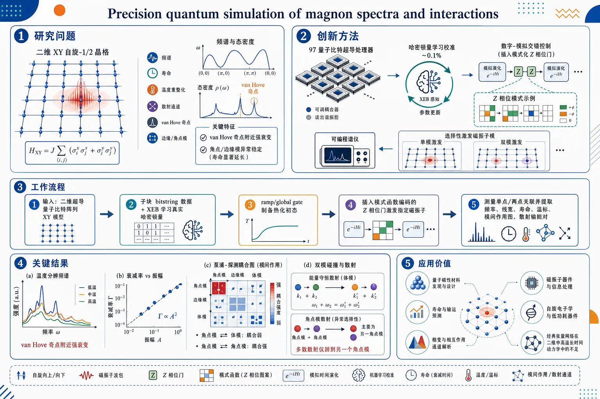
研究问题如何在二维强量子涨落的 XY 自旋-1/2 磁体中，精确解析磁振子的频谱、寿命、温度重整化与具体散射通道；尤其回答哪些模式容易衰变、衰变到哪里、为何 van Hove 奇点增强衰变而边缘/角点模异常稳定。创新方法在 97 比特超导量子处理器上，将约 0.1% 精度的 Hamiltonian learning 与数字-模拟交错控制结合：先校准真实哈密顿量，再在模拟演化中插入空间图案化 Z 门，像“可编程磁振子谱仪”一样，在目标温度下选择性激发单个或两个磁振子模式，并直接测量线性响应、非线性自散射、泵浦-探测耦合和两模碰撞产物。工作流程输入为二维超导量子比特阵列实现的 XY 自旋模型；先用子块 bitstring 数据和 XEB 优化学习真实哈密顿量；再通过 ramp 或 global gate protocol 制备不同能量密度的热化初态；随后插入模式函数编码的 Z 相位门激发指定磁振子；测量随时间演化的单点与两点关联；最后从响应曲线中提取频率、线宽、寿命、温度标度、模间作用图和散射输出模式对。关键结果实验获得温度分辨、模式分辨的磁振子谱与寿命：van Hove 奇点附近因高态密度出现强衰变，角点/边缘局域模因有效配位数低而衰变显著抑制；非线性衰减随驱动幅度近似 A² 增长，显示磁振子自散射通道；泵浦-探测揭示角点模与 bulk 模弱耦合但角点模彼此强耦合；两模碰撞实验直接看到能量守恒的散射产物，角点模对几乎只散射到另一对角点模。应用价值该研究把量子模拟从整体动力学推进到准粒子散射机制级别，为预测真实量子磁性材料中的寿命、输运、相变和相互作用通道提供高精度实验范式；同时展示了经典张量网络在二维中高温长时间动力学中的不足，为材料发现、磁振子器件和自旋电子学中的微观机制建模提供可验证工具。第一部分：核心概览
这篇工作把97比特超导量子处理器、Hamiltonian learning 与数字-模拟交错控制结合起来，对二维 XY 自旋-1/2 磁体中的磁振子谱、寿命与散射通道做出高精度量子模拟。核心贡献不只是复现线性响应，更首次在同一平台上直接解析温度依赖的线宽、非线性自散射、泵浦-探测碰撞以及两模散射产物，并揭示van Hove 奇点、边缘/角点模、广义配位数对衰变的决定作用。该工作把量子模拟从“整体动力学”推进到“准粒子散射机制级别”。
---
第二部分：结构化快速回顾
《Precision quantum simulation of magnon spectra and interactions》（None，）
背景：经典方法难以精确处理强量子涨落自旋系统；磁振子是理解磁有序、相变和输运的核心准粒子，尤其需要精确刻画其相互作用与衰变。
方法：在97 qubits 的 Willow 超导处理器上，使用混合 analog-digital 协议；先通过 Hamiltonian learning 以约 0.1% 精度刻画哈密顿量，再交错注入数字 Z-gates 激发指定磁振子模，测量线性与非线性响应，并做 pump-probe 与两模碰撞谱学。
结果：得到温度依赖的磁振子频谱与寿命；发现van Hove 奇点附近衰变显著增强、角点模衰变显著抑制；非线性衰变随驱动幅度近似 A² 标度；两模碰撞直接解析出散射产物，角点模主要彼此散射。
讨论：实验数据揭示衰变不仅由热占据数决定，还受线宽反馈强烈影响；边缘/角点模与体模呈现不同的重整化分支；张量网络在中高温下难以达到实验精度。
局限：系统规模仍是有限几何与子块学习；低幅度与有限温区间为主；部分理论解释依赖 Holstein-Primakoff / mean-field / MPS 近似，非定量完美。
结论：实现了对相互作用磁振子的高精度、模式分辨、温度分辨、通道分辨量子模拟，为凝聚态材料中微观散射机制的可预测建模提供新范式。
---
第三部分：逐章节冷凝解析
Abstract
高精度磁振子量子模拟的总目标
- 研究目标锁定在线性与非线性响应函数的精确模拟，系统是二维 XY spin-1/2 magnet。核心表述是：*"high-precision simulation of both linear and non-linear response functions in a 2D XY spin-1/2 magnet using an analog-digital superconducting processor of up to 97 qubits"*。
- 关键技术路线是交错数字门与模拟演化，并借助 Hamiltonian learning 精确标定哈密顿量，从而“selectively excite magnons at tunable energy densities”。
- 这里的“精确”不是泛化说法，而是建立在后文给出的约 0.1% 哈密顿量精度、4.7×10⁻⁴ / qubit / cycle 的 XEB 误差量级之上。
线性响应：谱与寿命同时可测
- 线性磁振子响应被当作“neutron-scattering experiments”的中心量：*"the linear magnon response – a central probe in neutron-scattering experiments"*。
- 结果提取出温度依赖的谱函数与寿命，并观察到Brillouin zone 内显著的模依赖衰变率变化。
- 两个关键空间特征明确出现：van Hove singularities 附近衰变增强，edge-localized modes 的衰变抑制。
非线性响应：直接看见散射机制
- 在非线性部分，实验包括 self-scattering mechanisms 和 pump-probe spectroscopy，目标是“directly characterize the magnon interactions”。
- 传统 matrix-product state 仅在“小系统或低温”可靠，离开这些条件后失效，实验因此提供了经典方法难以覆盖的区间。
- 该摘要把成果定位为：*"precise simulation of the interacting dynamics in quantum magnets"*，强调的是相互作用动力学而非单纯态演化。
---
Introduction
材料物理中的基础难题
- 核心背景是“microscopic atomic interactions”如何决定宏观磁性与超导。开头给出总问题：*"Connecting microscopic atomic interactions in a material to macroscopic phenomena, such as magnetism and superconductivity, remains a foundational challenge in physics"*。
- 困难来源于强量子涨落，尤其在 spin-1/2 magnets 和高温超导体中，经典模拟经常失效。
- 量子模拟的两条路径被明确区分：
1) direct validation：模拟磁化率等响应函数，与光谱实验对照；
2) microscopic insight：通过高精度控制研究quasi-particles 及其相互作用。
磁振子为何重要
- 磁振子被定义为控制量子磁体动力学的核心准粒子：*"The dynamical properties of quantum magnets are governed by magnons."*
- 它们既关联相变，也用于 spintronics 中的低功耗输运。
- 对其相互作用的精确刻画尤为重要，因为这关系到 Bose-Einstein condensation 和 magnon hydrodynamics 等现象。
已有平台的不足
- 已有平台包括 ultracold atoms, trapped ions, Rydberg arrays，已能探测磁有序。
- 但现有方法仍有三类硬伤：
- digital processors 受 Trotterization, 门误差和退相干限制；
- analog simulators 难以精确知道真实哈密顿量；
- 两者都缺少局域控制，无法单独操纵某个准粒子。
- 因而现有工作常停留在 bulk spectroscopy 或 quench，而不是精确模式激发。
这项工作的核心突破口
- 平台是 hybrid analog-digital Willow quantum processor of 97 superconducting transmon qubits。
- 工作处于qubit nonlinearity ≫ hopping amplitude、且 1/2 photon per qubit 的极限，自然实现二维方格 XY model。
- 两个关键技术进展被明确列出：
- 哈密顿量精度达到主耦合 g/(2π) ∼ 9.7 MHz 的 ∼0.1%；
- 可在模拟演化中插入数字门，实现低能量密度初始化与磁振子定向激发。
- 这一设计允许从线性响应一路推进到非线性散射与两模碰撞。
---
High-precision platform and state preparation
Hamiltonian learning 的精度与实现方式
- 哈密顿量在 24-qubit sub-patches 中学习，通过拟合 bitstring distributions 并优化 XEB 完成。
- 数据采样时间窗覆盖 6 ≤ gt ≤ 180。
- 该过程依赖三个条件：
- 精确的设备建模初值；
- 平台的快速重复率；
- 有效的 backpropagation algorithm。
- 学习后得到的误差是：
- 相对理想演化的 XEB errors = 4.7×10⁻⁴ per qubit per cycle；
- 拼接子系统后变为 6.2×10⁻⁴ per qubit per cycle。
- 该精度与模拟中的低退相干相匹配：analog operation 下、postselection 后的 decoherence rate 约 1.9×10⁻⁴ per cycle。
有效加热极低，足以分辨本征寿命
- 有效加热速率 < 5×10⁻⁴ g。
- 这意味着观测到的寿命主要来自本征散射，而非仪器噪声。
- 这点对后续线宽解释非常关键：实验可把“magnon decay rate”当作真实物理量，而非硬件退相干的映射。
两种制备初态：ramp 与 GGP
- 初态是 staggered product state in the Z-basis。
- 两种互补制备：
1) slow ramp：穿越从顺磁相到 XY-ordered antiferromagnetic phase 的量子相变；
2) global gate protocol (GGP)：先做 6 ns XY-coupling pulse，再施加空间交错的 Z-rotations，形式为 *"exp(-iθ∑ᵢ(-1)ⁱ Zᵢ)"*。
- 两种方法将能量密度调到：
- GGP: ε ≥ −0.4；
- ramps: ε ≥ −0.53；
- 地态参考值约 ε₀ ≈ −0.554（MPS 计算）。
- 后续还允许在 tₜₕ 时间内热化；图示中有 tₜₕ = 100 ns 的设置。
GGP 的重要性
- GGP 允许仅通过调节 θ 在不同条件间切换，而无需大改电路。
- 这让fidelity 测量与magnon measurement precision 直接对应，形成“同一硬件同时做校准与物理测量”的闭环。
---
Linear magnon spectroscopy
模式选择与数字注入
- 在低温设置 θ = π/8, ε ≈ −0.4 下，先热化，再用交错 analog-digital 方案激发指定模式。
- 激发时序很具体：
- 2 ns 快速关掉耦合器；
- 6 ns 对量子比特失谐以写入空间图案化 Z-phases；
- 再恢复耦合器推进磁振子。
- 施加的是 *"exp(± i A ∑ᵢ φᵢ^μ Zᵢ / 2)"*，其中 φᵢ^μ 来自线性化 Holstein-Primakoff 表象。
- 通过两次相反相位的实验并作差，直接测量 retarded Green's function：*"we directly probe the retarded Greens function"*。
为什么这比传统 quench 更强
- 传统方案常在冷却前激发、或做全局 quench、或整体频率驱动。
- 这里的激发门是嵌入模拟演化内部，因此测到的是ψ₀ 在目标温度下的真实响应函数，不是近似代理量。
- 这使线性响应测量具备真正的“spectroscopy”意义。
线性响应的实验精度
- 在 24- 与 31-qubit 小系统中，测得的 χμ(t) 与精确模拟“excellent quantitative agreement”。
- 所有测量的中位相对精度：
- 频率 ω：7×10⁻³；
- 衰减率 Γ：7.8×10⁻²。
- 这说明频率比寿命更容易高精度提取，而寿命估计仍受有限时间窗与线宽影响更大。
---
Full mode dependence, van Hove singularity, and geometry effects
二维色散与模式指数
- 图 2 给出 56-qubit rectangle 与 97-qubit diamond 几何中的磁振子色散。
- diamond 几何中没有清晰动量，因此用模式指数 μ ~ k² 作替代。
- 观察到近线性关系：ω ∝ √μ ∝ k，与二维 XY 模型磁振子预期一致。
- 低能量密度接近 Kosterlitz-Thouless transition，约在 ε = −0.53。
温度升高导致普遍线宽变宽
- 随能量密度升高，谱线明显展宽，说明热占据增加、散射增强。
- 这是最基本的温度效应，但并不均匀：不同模的衰减率差异极大。
van Hove 奇点导致局域增强衰减
- 在矩形几何中，某些模式衰减显著增强，位置与色散中的 saddle points 对应。
- 原因是 van Hove singularity 附近的态密度高，给散射提供更大相空间。
- 由于激发幅度 A = 0.5，每个激发模平均只产生 A²/π² = 0.025 个磁振子，因此衰减主要来自 2→2 magnon scattering，即与热占据模的双粒子散射。
角点模的异常稳定性
- diamond 几何里，四个角点模的衰减显著更低，尤其在高温下更明显。
- 这些模高度局域在角点，和其他模的耦合弱。
- 用有效配位数解释时，模式分成两支：
- bulk branch：接近 N_coord ∼ 4；
- edge/corner branch：配位数更低，衰减更小。
- 这种分裂与图 2e,f 的配位数行为一一对应。
MPS 仅在低温成功，高温明显失效
- 低温下 MPS 与实验较一致；高温下偏差很大。
- 进一步分析表明，即便是 bond dimension χ = 512 的 MPS，也难以在中高温、长寿命、低频模式上达到实验精度。
- 还检查了 PEPS 等方法，结论是要覆盖这些数据需要不可承受的资源。
- 这部分直接体现出量子硬件相对经典张量网络的优势区间。
---
Temperature dependence and renormalization
衰减率的幂律标度
- 图 3 将衰减率写成对地态能量提升的幂律：
- Γᵢ ∝ (ε − ε₀)^η = δE^η。
- 地态能量由数据直接估计为 ε₀ ∼ −0.57 ± 0.01。
- 指数 η 强烈依赖模式，随模能量上升从 大于 1 下降到约 0.7。
线宽反馈比简单热占据更重要
- 纯热占据模型不足以解释 η < 1。
- 关键机制是self-consistent broadening：某些散射通道的线宽本身会随温度变大，反过来改变能量守恒窗口。
- 这不是简单“更多热粒子 → 更多散射”的线性图景，而是线宽与散射率之间的反馈回路。
散射率公式的物理含义
- 衰减率写成：
- Γᵢ = 4π Σⱼ,ₖ,ₗ |Vᵢⱼ,ₖₗ|² f(nⱼ,nₖ,nₗ) δ(Δωᵢⱼₖₗ / γᵢⱼₖₗ)。
- 其中
- |V|² 是 scattering vertex；
- f(nⱼ,nₖ,nₗ) 体现 Bose-Einstein statistics；
- δ 项保证能量守恒，但以 Lorentzian linewidth γᵢⱼₖₗ 展宽。
- 这里的关键洞见是：γᵢⱼₖₗ 不能当常数。
低频与高频模对线宽的反应相反
- 低模指数时散射往往非共振，线宽变大反而更容易满足能量匹配，因此 dΓ/dγ > 0。
- 高模指数时散射更近共振，线宽增大反而破坏精细匹配，导致 dΓ/dγ < 0。
- 这直接解释了高能模里出现的 η < 1。
频率重整化与“弹簧模型”的失效
- 无阻尼频率写成 ω₀ = √(ω² + Γ²)。
- 随温度升高，XY correlations 降低，相当于 torsional spring constant K ∝ |ε| 减小，因此简单模型预测 ω₀ ∝ √|ε|。
- 但实验明显偏离这条经典弹簧曲线，尤其是角点模：它们的频率甚至随温度升高而上升。
- 这说明重整化不只是“平均刚度”下降，而是强烈的mode-dependent renormalization。
边缘/角点模更容易重整化
- 归一化的频率变化 Δ log ω₀ / Δ log √|ε| 分成两支，与有效配位数分裂一致。
- edge modes 比 bulk modes 更易受重整化影响。
- Hartree-Fock 对 μ ≳ 30 的高模还能大致跟上，但需要 1.2 的经验重标定因子，且低模明显失真。
- 这表明低能边缘态存在超出平均场的高阶修正。
---
Nonlinear magnon decay
幅度越大，衰减越快，且近似 A² 标度
- 当驱动幅度 A 从 0.5 增加到 8，衰减率近似按 A² 增长。
- 这直接说明出现了一个额外的nonlinear decay channel，即磁振子与自身散射。
- 这里的“自散射”不是口头比喻，而是可由拟合参数 α₂ 明确提取。
非线性衰减的拟合方程
- 拟合模型为：
- dn(t) / 2dt = − α₁ n(t) − α₂ n²(t) − c (n(0) − n(t)) n(t)。
- 三个参数的物理意义清晰：
- α₁：线性衰减，低幅度极限对应 Γ；
- α₂：非线性自散射；
- c：随初始激发衰减引起的额外热散射。
- 同一模式下同时拟合多种幅度、多个时间点，得到较好一致性，说明该简化模型能抓住主导项。
非线性通道的温度敏感性更低
- 定义温度敏感性：
- κᵢ = [log αᵢ(ε₁) − log αᵢ(ε₀)] / (ε₁ − ε₀)。
- 结果显示 κ₂ 通常显著小于 κ₁，甚至可以为负。
- 这意味着 α₂ 更像一个纯粹的2M → B + C 过程，而不是依赖热粒子参与的机制。
- 负 κ₂ 与前面线宽主导的解释一致：高能模里，线宽效应大于热占据效应。
自洽 Born 近似支持定性图像
- 用 self-consistent Born approximation 结合上面的公式，可以支持这种“线宽反馈主导”的直觉。
- 但定量上仍有明显差异，说明真实系统存在超出近似的更复杂多体效应。
- 这也说明实验数据的价值不止是验证近似，而是为更高阶理论提供约束。
---
Pump-probe and coherent two-mode spectroscopy
泵浦-探测直接测“谁影响谁”
- 技术上，先高幅度激发一个 pump mode（A = 4），再观察弱激发 probe mode（A = 0.5）寿命变化。
- 每次并行激发 24 个 probe modes，提高效率。
- 例子中，泵浦 mode 80 明显增大 mode 50 的衰减，而泵浦 corner mode 29 几乎无影响。
- 这说明不同模之间的相互作用高度非均匀，不是单纯全局加热。
角点模彼此高度隔离，但内部耦合强
- 全图显示一个“cross”加一个亮方块：
- cross 表示角点模与大多数其他模的交互弱；
- bright square 表示角点模彼此之间耦合强。
- 这与前面角点模低衰减、低重整化完全一致。
- 该结构把“角点模难以衰减”的现象，直接联系到mode-resolved interaction graph。
两模碰撞进一步看清散射产物
- 更精细的实验是coherent two-mode spectroscopy：同时激发两个 incoming modes，使用四次带正负号组合的测量，隔离非平凡散射产物。
- 输出模式对通过两点关联量提取：
- Aₘₙ(t) = Σ φᵢ^m φⱼⁿ (⟨Zᵢ(t)Zⱼ(t)⟩ − ⟨Zᵢ(t)⟩⟨Zⱼ(t)⟩)。
- 对 modes 40 and 75，输出分布沿 anti-diagonal 聚集，符合能量守恒。
- 对比理论散射率 |V₄₀,₇₅,m,n|²，主导通道的定性结构一致，但 mean-field 不能定量完全描述。
角点-角点碰撞几乎只产出另一对角点模
- 当碰撞两个角点模（如 27 and 29）时，输出不再是宽广分布，而是几乎只散射到另一对角点模。
- 对四个角点模的六种组合都做后，规律一致：every pair of corner modes scatters into another pair。
- 这把“角点模之间强耦合、与其他模弱耦合”的图景推进到散射产物级别。
---
Conclusion and outlook
实验意义
- 整套测量把单个准粒子的性质、温度依赖、模式形状依赖、幅度依赖和散射通道全部纳入同一框架。
- 关键结论是：经典方法在中间温度附近无法提供同等精度的衰减率预测，尤其是实验最关心的 decay rate。
更广泛的物理指向
- 这项工作被放在“materials discovery”的语境中，目标是连接原子相互作用到磁性与超导。
- 结论部分强调，高分辨率量子模拟 response functions 与 quasiparticles，能够帮助识别相关材料中的微观机制，并最终服务于predictive modeling 与 experimental validation。
---
第四部分：深度理解与语言支持
1) 术语解析
Van Hove singularity
- 指色散关系中态密度异常增大的临界点，通常出现在 saddle points。
- 这里它不是一般性的“高态密度”，而是直接对应“某些模式衰变突然增强”的物理原因，因为散射可利用的最终态数量骤增。
Retarded Green’s function
- 这是线性响应理论中的核心对象，描述“在时刻 0 激发后，系统在后续时刻如何响应”。
- 这里测量它意味着不是只看最终结果，而是直接看因果响应核，因此可与散射/寿命直接对应。
Hamiltonian learning
- 不是泛指“拟合模型”，而是从实验数据反推出实际演化哈密顿量参数。
- 这里的关键点在于它达到约 0.1% 精度，使后续 spectroscopy 不是建立在理想化模型上，而是建立在校准后的真实硬件哈密顿量上。
Self-consistent broadening
- 指线宽不是外部给定常数，而是由系统自身的散射率决定，并反过来影响散射概率。
- 这一机制解释了为什么高能模会出现 η < 1，也解释了为什么某些通道在增温后反而被“抑制”。
Holstein-Primakoff representation
- 是把自旋算符映射为玻色子振幅的标准近似，适合描述磁振子。
- 这里用它不是为了构造最终精确解，而是为了从自旋系统中提取magnon mode functions 和散射顶点 Vᵢⱼ,ₖₗ。
---
2) 疑难查证
为什么“线宽变大”有时加速衰减、有时反而减速？
- 关键在于散射是否非共振。
- 如果两个模式原本差得比较远，线宽增大能让能量守恒条件更容易满足，于是衰减加快。
- 如果本来就接近共振，线宽增大反而会把精确匹配“抹平”，使通道效率下降，于是衰减减慢。
- 这就是图 3d 中低模和高模出现相反符号的原因。
为什么角点模会“只和自己一类的模”强耦合？
- 角点模的波函数权重集中在几何边界，和 bulk 模的空间重叠小。
- 在散射振幅里，真正起作用的是模式函数的重叠与顶点结构，不是简单的能量大小。
- 所以即便总能量匹配，若空间支持区域不重合，散射也会弱。
- 结果就是：角点模彼此构成一个相对封闭的散射子网络。
为什么 MPS 在这里会失败？
- MPS 对一维或弱纠缠结构极强，但这里是二维、高温、长时间、模式分辨动力学。
- 高温意味着纠缠更高，二维意味着有效张量网络截断成本暴增。
- 因而要同时精确抓住频率 + 线宽 + 长时衰减，需要的资源很快超过可承受范围。
---
第五部分：创新评估与关联
1) 创新性判断
相对于近 2–5 年相关工作的新颖性，最突出的突破有四点：
- 从“模拟动力学”升级为“准粒子散射机制分辨”
- 过去多数量子模拟工作停留在态演化、相变、全局谱特征或 quench 动力学。
- 这里直接测到磁振子寿命、温度重整化、散射通道和输出模对，把研究粒度推进到interaction-resolved spectroscopy。
- 数字-模拟交错使“在目标温度下激发指定模式”成为可能
- 以往 analog 平台难以在演化中插入局域操作，digital 平台又受 Trotter 和噪声限制。
- 这里把两者结合，能够在热化后的状态上直接注入模式选择性激发，这是得到真正响应函数的关键。
- Hamiltonian learning 达到足够高的精度，支撑物理结论可信度
- 对 analog 量子模拟而言，最大瓶颈常常不是算不动，而是不知道“真实演化的是哪个哈密顿量”。
- 这里把哈密顿量学习到 ∼0.1% 级别，使后续从实验提取的衰减率、频移和散射路径具有更强的可解释性。
- 首次把线性、非线性、泵浦-探测和两模碰撞放在统一平台上
- 过去类似研究往往只覆盖其中一类：要么只看线性谱，要么只做 quench，要么只测少数关联函数。
- 这里把response spectra、self-scattering、pump-probe、coherent two-mode spectroscopy 串成完整链条，形成对磁振子相互作用的全景式测量。
2) 解决了前人没解决的问题
- 谁在散射谁：不只看“有没有衰减”，而是识别出具体模式对。
- 散射到哪里：不仅识别输入通道，还解析输出模对分布。
- 为何某些模式特别稳定：把角点/边缘局域、有效配位数与衰减/重整化联系起来。
- 为何高温下经典模拟失准：指出问题不只是态空间大，而是线宽反馈与高阶重整化不可忽略。
- 如何在硬件上做真正的谱学：通过 interleaved analog-digital protocol，把量子处理器变成了“可编程的磁振子谱仪”。
如果需要，可以继续把这篇论文整理成：
- 一页中文笔记版，
- 适合组会汇报的PPT提纲版，或
- 逐图解读版（Figure 1–5）。
-
10
📊 含图深析
📄 摘要：数值研究含磁性杂质的自旋 1/2 易轴三角晶格反铁磁 Heisenberg 模型，在外磁场诱导相中的动力学性质。弱场和强场自旋超固体中，K 点无能隙 Goldstone 模对杂质保持稳健，体现自旋超流性；相同杂质密度下，其他相中激发更易被杂质散射或重整化。
💡 亮点：三角反铁磁自旋超固体的 K 点 Goldstone 模在杂质存在下仍无能隙，给出自旋超流性的动力学判据。该结论有助于解释三角晶格候选材料中的无耗散自旋响应。
📖 展开分析 + 配图
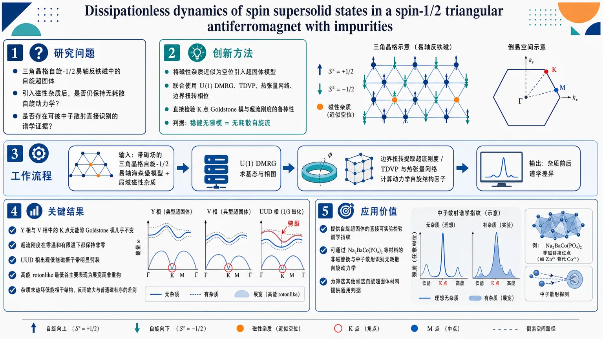
研究问题三角晶格自旋-1/2易轴反铁磁中的自旋超固体，能否在引入磁性杂质后仍保持无耗散自旋动力学，并给出可被中子散射直接识别的谱学证据？创新方法把磁性杂质近似为空位引入超固体模型，联合使用U(1) DMRG、TDVP、热张量网络与边界扭转相位，直接检验K点Goldstone模与超流刚度对杂质的鲁棒性，抓住“稳健无隙模=无耗散自旋流”的关键判据。工作流程输入：带磁场的三角晶格自旋-1/2易轴海森堡模型与局域磁性杂质；先用U(1) DMRG求基态与相图，再施加边界扭转提取超流刚度；随后用TDVP和热张量网络计算动力学自旋结构因子；最后比较Y/V超固体、UUD相在K点与M点的低能谱响应，输出杂质前后谱学差异。关键结果Y相和V相中的K点无能隙Goldstone模对杂质几乎不变，超流刚度在零温和有限温下都保持非零；UUD相则出现低能磁振子带明显劈裂；高能rotonlike最低谷主要表现为展宽而非重构。结果表明，杂质不会破坏超固体的低能相干结构，反而放大了它与普通磁有序的差别。应用价值为自旋超固体提供了直接、可实验检验的谱学指纹，可通过对Na2BaCo(PO4)2等材料做非磁替换并进行中子散射来识别无耗散自旋动力学，也为筛选其他候选自旋超固体材料提供通用判据。第一部分：核心概览 (Overview)
这篇研究把磁性杂质引入三角晶格自旋-1/2易轴反铁磁海森堡模型，用数值证据建立了“自旋超固体 = 无耗散自旋动力学”的可检验联系。最关键贡献是：在 Y 与 V 两种超固体相中，K 点的无能隙 Goldstone 模对杂质保持稳健，而传统 UUD 相的低能磁振子带却发生劈裂。再结合扭转相位提取的超流刚度与有限温度结果，形成了可由中子散射直接观测的“阻尼/耗散免疫”谱学判据，强化了 Na(₂)BaCo(PO(₄))(₂) 作为自旋超固体平台的地位。
---
第二部分：结构化快速回顾
《Dissipationless dynamics of spin supersolid states in a spin-1/2 triangular antiferromagnet with impurities》（None，）
- 背景：三角晶格易轴反铁磁体在磁场下可出现 Y 超固体、UUD、V 超固体 与极化态；真正难点在于给出自旋超流的直接谱学证据，尤其是能否通过杂质检验无耗散动力学。
- 方法：在 ( Δ_z=1.68 ) 的 spin-1/2 triangular Heisenberg model 中加入磁性杂质，以 ( łambda=0.95 ) 近似空位；结合 U(1) DMRG、TDVP、thermal tensor network、twisted phase 与动力学自旋结构因子分析。
- 结果：Y/V 超固体里 K 点 Goldstone 模对杂质几乎不变，超流刚度有限且在有限温度 (T/Japprox 0.1) 仍可维持；UUD 相则出现低能磁振子带劈裂；高能 rotonlike minimum 主要表现为展宽。
- 讨论：杂质稳健的无能隙模直接对应自旋超流密度，可作为中子散射中的无耗散动力学标志；谱学差异能区分超固体与常规磁有序相。
- 局限：主要在 width-6 cylinder 上完成，有限尺寸与有限 bond dimension 仍在；杂质采用规则分布、近似空位处理，尚非完全随机无序；有限温度只覆盖到中等温区。
- 结论：杂质不是破坏超固体的主因，反而提供了识别自旋超流的实验窗口；K 点 Goldstone 模的杂质鲁棒性构成最直接的谱学证据。
---
第三部分：逐章节冷凝解析 (Section-by-Section Condensing)
I. Introduction
超固体问题的物理背景已经从玻色体系扩展到自旋体系
超固体同时具有超流性与平移对称性破缺，最初来自固氦，后来在超冷原子中得到实现。自旋体系中，玻色-自旋映射使得受挫三角晶格成为关键平台。原文直接界定了这一逻辑链：*“The supersolid features coexisting superfluidity and translational symmetry-breaking order”*，并进一步指出 *“the spin supersolid may arise in frustrated spin systems, with the triangular-lattice Heisenberg antiferromagnets representing the most promising platform”*。
三角晶格易轴反铁磁体已建立出经典的磁场诱导相图
既有数值研究已经确认 弱场 Y 超固体、UUD、强场 V 超固体、完全极化态 的序列结构。这里的关键信息不是相的存在本身，而是它们在磁场扫描中形成了一个稳定且可重复的相图框架。原文强调 *“previous numerical studies have established spin supersolid states in the weak- and strong-field regimes, separated by an intermediate up-up-down (UUD) state”*。
Na(₂)BaCo(PO(₄))(₂) 被锁定为最现实的平台
该材料从候选量子自旋液体重新被拉回到自旋超固体议题中，原因包括：磁化率与有效 spin-1/2 easy-axis triangular Heisenberg model 高度一致、临界区出现巨大的磁热效应、以及中子散射已经观察到 K 点的 gapless Goldstone mode。原文给出直接判断：*“Na(₂)BaCo(PO(₄))(₂) provides an ideal platform to explore the spin-supersolid physics”*。
现有实验仍缺少“自旋超流”的直接证据
已有结果多集中在静态序参量、热力学或谱峰结构，但无耗散动力学仍未被钉死。这个空缺非常关键，因为超流最本质的特征不是“有序”，而是与电阻/阻尼对应的无耗散输运。原文把问题说得很直白：*“direct experimental evidence for spin superfluidity in the spin supersolid states remains an open question”*。
杂质成为最强的判别工具
核心论点转向：如果低能激发真来自spin supercurrent，局域杂质不应轻易破坏它；相反，普通磁振子则更敏感。因此，低能谱对杂质的鲁棒性可以当成超流密度的间接但强证据。原文概括为：*“the scattering due to spin supercurrent is insensitive to local impurities, and consequently the low-energy excitations in the dynamical spin structure factor should be robust against impurities”*。
论文的可观测预测被明确绑定到中子散射与元素替换实验
关键实验建议是：通过将 Co(²⁺) 替换为非磁元素引入杂质，然后用inelastic neutron scattering 看 K 点 Goldstone 模是否保持无能隙、是否在 UUD 中出现带劈裂。原文把这一判据定义为：*“the excitation spectrum with impurities provides direct spectroscopic evidence for dissipationless spin dynamics”*。
---
II. Model and methods
模型是带磁场的易轴三角晶格海森堡模型
哈密顿量写成
[
H₀ = Jsumłₐₙgₗₑ ᵢ,ⱼåₙgₗₑ(S^xᵢS^xⱼ₊S^yᵢS^yⱼ₊Δ_z S^zᵢS^zⱼ₎₋ₕ_zsumᵢ Sᵢ^z
]
其中 (J=1) 为能量单位，(Δ_z=1.68) 来自对 Na(₂)BaCo(PO(₄))(₂) 的磁比热与磁化率拟合。这里最重要的参数不是形式，而是 (Δ_z>1) 的强易轴性，它决定了三角受挫下的磁场诱导有序与超固体窗口。
杂质不是随机无序，而是规则分布的弱化交换点
磁性杂质通过局域交换减弱建模：
[
Hₘ̊ ᵢₘₚ=-łambda Jsumłₐₙgₗₑ ᵢ_₀,ⱼåₙgₗₑ(S^xᵢ_₀S^xⱼ₊S^yᵢ_₀S^yⱼ₊Δ_z S^zᵢ_₀S^zⱼ₎
]
当 (łambda=1) 时等价于空位；实际计算采用 (łambda=0.95) 以提高数值稳定性，并指出 (łambda>0.9) 时结果几乎一致。原文明确说：*“we choose (łambda=0.95) to approximate the (łambda=1) results due to numerical stability”*。四个杂质在 (48× 6) 晶格上的分布见图 1(a)。
基态主要靠 U(1) DMRG 求解，动力学靠 TDVP 演化
基态计算用 finite U(1) DMRG。几何上采用开边界 x 向、周期边界 y 向的圆柱：
- (L_y=6) 时 bond dimension 最高 1400，截断误差 (ϵłesssim10⁻⁶)；
- (L_y=9) 时 bond dimension 最高 6000，(ϵłesssim10⁻⁵)。
实时动力学用 one-site TDVP + global Krylov vectors，最高 (D=2200)，总演化时间 (τₘ̊ ₜₒₜ=50/J)。
有限温度使用 thermal tensor network
热态由虚时演化构造 (h̊o(β)=e⁻β H)，采用 thermal tensor network；计算在 (L_y=6) 圆柱上进行，(D=2000)，截断误差 (ϵłesssim5×10⁻⁵)。
数值策略同时服务于静态与动态两个问题
静态部分提取序参量与超流刚度，动态部分提取动力学自旋结构因子。不同方法共同指向同一物理命题：若超固体真有spin superfluidity，则低能模对杂质应当稳定，而 UUD 不应如此。
---
III. Phase Diagram and Superfluid stiffness
相图由 ( łangle m_z²ångle ) 与 ( łangle mₚₑᵣₚ²ångle ) 定位
两者分别对应 K 点上的纵向与横向 Bragg 峰权重，定义为对中心区域 (N' = L_y× L_y) 的双重求和。它们的作用不是装饰性指标，而是直接区分 Y / UUD / V / P 四相。原文给出关系式后指出：*“(łangle m_z²ångle) and (łangle mₚₑᵣₚ²ångle) are finite in the spin supersolid phases”*。
相边界的数值位置非常明确
在 (Lₓ× L_y=48× 6) 上，UUD 相夹在
- (B₁capprox1.49)
- (B₂capprox4.15)
之间，
而极化态从
- (B₃capprox6.54)
开始出现。
这套磁场窗口与既有数值工作一致。UUD 相中 ( łangle m_z²ångle ) 最大、( łangle mₚₑᵣₚ²ångle ) 最小，体现了纵向三亚格序与横向相干被压制。
有限尺寸效应对纵向序参量较弱，对横向序参量更敏感
在不同 (Lₓ,L_y) 上，( łangle m_z²ångle ) 基本不变，但 ( łangle mₚₑᵣₚ²ångle ) 在更宽系统 (36× 9) 上变小，尤其超固体相更明显。这里提示了一个标准但重要的细节：二维极限中的横向序参量需要更宽圆柱才能稳健判断。原文明确保留了谨慎态度：*“Future studies on wider cylinders may be needed to determine (łangle mₚₑᵣₚ²ångle) in the thermodynamic limit.”*
超流刚度通过边界扭转相位提取
向 y 向边界施加扭转 (θ)，等价于在 y 方向的自旋翻转项上加相位 (eⁱθ)。超流刚度定义为
[
h̊oₛ₌łimθ→₀fracpartial²F(θ)partialθ²propto F(θ)-F(0)equivΔ F(θ)
]
这里 (F=-frac1Nβłog Z)，零温时退化为基态能量 (E₀₍θ))。这套定义的物理含义是：有刚度就意味着对扭转有能量代价，即相位相干不能被轻易扭曲。
实际数值采用 (θ=π) 而不是极小扭转
因为太小的 (θ) 会被数值误差淹没，而 (θ=π) 能使能量差远高于截断误差。原文解释得很务实：*“for which the energy difference is orders of magnitude larger than the numerical truncation error”*。同时还检查了 (Δ E₀₍θ)/θ²) 在不同 (θ) 下的稳定性，结果表明相边界不变。
Y 与 V 超固体都具有有限而稳定的超流刚度
零温下，(Δ E₀₍π)) 在 Y 相中随磁场上升先增强，接近 UUD 时降至零；在 V 相中再次变为有限并在 (h_z/Japprox4.82) 附近达到峰值，随后在 (h_z/J>6.54) 的极化相中消失。原文给出关键表述：*“a peak value of (Δ E₀₍π)) is obtained around (h_z/J=0.836)”*，以及 *“with a peak around (h_z/J=4.82)”*。
UUD 相的扭转响应为零，且会出现边缘激发
在 UUD 中，扭转相位会诱发边缘激发，因此基态能量用 bulk 平均定义。更重要的是，UUD 的 (Δ E₀₍π)) 在数值精度内为零，和超固体的有限刚度形成鲜明对照。这个区别把“有序”与“可流动”彻底分开。
有限温度下超流刚度在 (T/Japprox0.1) 仍可见
(Lₓ× L_y=18× 6) 的热态结果显示，Y 与 V 相形成两个有限 (Δ F(π)) 的“dome”，中间的 UUD 相仍接近零。原文总结为：*“the finite-(T) results show two domes corresponding to the ‘Y’ and ‘V’ supersolid states”*。温度升高后刚度快速减小，但在较低温区仍保持非零，给出实验温区上的可行性。
小拐点更可能来自有限尺寸与相结构交叉
在 (h_zapprox0) 和 UUD 上边界附近，有限温度数据出现小 kink；当 (Lₓ) 从 18 增到 24 时这些 kink 变弱，提示其多半不是新相变，而是有限尺寸效应。V 相中 (h_z/Japprox5.5) 的 kink 则可能对应两类自旋构型的 crossover。原文直接给出解释线索：*“may be attributed to the crossover between two types of spin configurations within the ‘V’ supersolid phase”*。
---
IV. Dynamical spin structure factor in the presence of impurities
动力学量选择的是横向自旋结构因子
由于哈密顿量存在易轴各向异性，重点看transverse dynamical spin structure factor 最合适，因为 K 点 Goldstone 模正对应超流密度。定义式中加入了时间窗 (0łeτłeτₘ̊ ₜₒₜ) 与展宽因子 (e⁻ητ)，其中 (η=1/τₘ̊ ₜₒₜ)。为减弱边界效应，只在 bulk 区域求和，(Nₘ̊ bᵤₗₖ=frac34 Lₓ× L_y)。
无杂质时，超固体在 K 点具有无能隙 Goldstone 模
Y 相和 V 相的谱在 K 点出现明显低能无能隙分支，UUD 则只有有隙激发。原文直接把物理图像说清：*“The spin supersolid states exhibit gapless Goldstone modes associated with spontaneous U(1) symmetry breaking at the K points”*。这正是自旋超流的谱学指纹。
加入杂质后，Y/V 的 K 点 Goldstone 模几乎不变
这是全篇最关键结果。四个杂质、(łambda=0.95) 时，Y 与 V 相中 K 点低能模仍稳健，几乎不受扰动。原文的结论非常直接：*“the gapless mode at the K points remains robust”*，并进一步指出这 *“provides spectroscopic evidence that dissipationless dynamics is an intrinsic property of the spin supersolid states”*。
这种鲁棒性恰恰符合超流对局域缺陷不敏感的直觉。
V 相里还出现一个可能的 pseudo-Goldstone 模
V 相无杂质时，在无能隙主模上方还能看到一个小的有隙模。其来源被联系到 threefold degeneracy 与 order-by-quantum-disorder。三种经典构型分别是 (p̆arrowp̆arrowdownarrow)、(p̆arrowdownarrowp̆arrow)、(downarrowp̆arrowp̆arrow)。加入杂质后，这个模消失，因为杂质打破了这种简并。原文把这一点点明：*“the gapped mode near the K points in the ‘V’ state disappears ... because the impurities break the degeneracy of the diagonal order”*。
UUD 相在杂质下表现出明显的低能带劈裂
UUD 的基态自旋沿 (z) 方向排列，激发主要是横向磁振子，因此更接近线性自旋波理论。无杂质时存在两条低能磁振子带；有杂质后，这两条带在 K 点附近明显分裂。原文的对照关系非常清楚：*“the lowest two magnon bands split near the K points”*。
这恰好构成与超固体的对照：超固体的低能无能隙模稳健，常规磁有序的低能带被杂质重塑。
M 点的 rotonlike minimum 对杂质主要表现为展宽
Y 相在 M 点存在 roton-like minimum，V 相也有类似高能结构，但它们对杂质主要是谱重展宽而不是核心结构重构。原文指出：*“the rotonlike minimum at the M points is found ... and remains robust against impurities, except for a broadening effect”*。
这说明高能激发更容易受杂质诱导的衰减/混合影响，但不改变“低能模稳定、高能模展宽”的总图景。
Y(₁) 点提供了额外的弱特征，但不是主证据
在某些有限磁场下，Y(₁) 附近也能看到 minimum，但零场下谱重过小，不足以清晰确认。V 相则几乎不显示该特征。相比 K 点的 Goldstone 模，Y(₁) 更像次级、非普适的结构，因此不构成主判据。原文也承认：*“These features cannot be captured by linear spin-wave theory because the magnon dispersions are strongly renormalized.”*
谱学比较的核心结论是“稳健 vs 劈裂”
Y/V 超固体在杂质下只出现轻微展宽，整体谱形几乎不变；UUD 则出现明显带劈裂。这个对比把“无耗散动力学”与“普通磁振子激发”分得非常干净。原文的总结语是：*“the overall spectrum remains nearly unchanged in the presence of impurities, except for a broadening of the spectral weight”*，而 UUD 中则是 *“the impurity-induced splitting of the lowest band”*。
---
V. Summary
中心结论是杂质可作为自旋超流的判别器
在宽度 6 的圆柱上，通过基态、有限温度与动力学谱的联合分析，形成一致图像：Y/V 超固体中 K 点 Goldstone 模对杂质保持鲁棒，说明存在无耗散自旋动力学；UUD 则没有这一性质。原文把这一点总结为：*“the gapless Goldstone mode at the K points remains robust against finite impurities in the spin supersolid states”*。
UUD 与超固体的差别体现在低能激发的结构稳定性上
UUD 在相同杂质密度下出现低能带劈裂，这不是简单的数值噪声，而是反映了两类相对局域缺陷的响应差别：一个依赖相位刚性，一个只是常规磁序。
这使得“是否出现带劈裂”成为区分相态的实验指纹。
高能区的杂质效应主要是展宽，不是重构
无论是 rotonlike minimum 还是其他高能分支，杂质更多导致谱峰宽化，而整体轮廓保持。这个结果很重要，因为它说明杂质选择性地破坏高能准粒子的寿命，却难以动摇超固体的低能相干结构。
有限温度下的超流刚度可维持到 (T/Japprox0.1)
这使实验并非只能在极低温下寻找信号。原文把这个温区与已有 spin Seebeck effect 的计算联系起来，形成与输运实验一致的物理图像：*“dissipationless dynamics associated with the spin supercurrent may survive up to (T/Japprox0.1)”*。
方法可迁移到其他候选材料
包括 K(₂)Co(SeO(₃))(₂)、Rb(₂)Co(SeO(₃))(₂)、Na(₂)BaNi(PO(₄))(₂)、EuCo(₂)Al(₉) 等，只要其谱中可解析出 gapless Goldstone mode。这把结果从单一材料提升为一类候选自旋超固体的通用方案。
---
第四部分：深度理解与语言支持 (Understanding & Nuance)
1. 关键术语解析
Spin superfluidity
不是“自旋在流动”这么简单，而是指相位刚性驱动的无耗散自旋输运，核心标志是低能模对局域扰动不敏感。语境里它和 superfluid stiffness、Goldstone mode 绑定出现，说明它被当作一种可由谱学和边界扭转共同验证的长程序。
Goldstone mode
源于连续对称性自发破缺后的无能隙集体模。这里的 K 点 Goldstone mode 表示三角晶格 120°/三亚格相关的波矢位置上出现低能无隙激发。与 UUD 的有隙磁振子相比，它直接对应超固体中的 U(1) 破缺。
Rotonlike minimum
不是严格意义上的 roton，而是在某个有限动量点出现的局域能量谷。在这里主要出现在 M 点，反映强关联磁振子之间的相互作用，不是线性自旋波能直接给出的简单结果。它属于“高能结构精细化”的信息，而非超流判据本身。
Pseudo-Goldstone mode
形式上是“近似无隙”模，但其小能隙来自某种弱显式破缺或简并被量子涨落/杂质选择。这里对应 V 相中的三重简并与 order-by-quantum-disorder。与真正 Goldstone 模的差别在于：前者不是严格对称性必然产生的零模。
Superfluid stiffness
可理解为系统对相位扭转的刚性。数值上看的是 (F(θ)-F(0)) 的曲率。只要刚度有限，就说明存在维持相干相位梯度的代价，因此和“能否无耗散地支持超流”直接相关。
---
2. 疑难查证：几个容易混淆的点
“扭转相位 (θ)”为什么可以表征超流？
把边界条件改成带相位的周期边界，相当于在系统里人为制造一个相位梯度。若体系是超流，维持这个梯度要付出能量，所以 (F(θ)) 会升高；若没有刚性，能量几乎不变。这里测的不是电流本身，而是相位刚性。所以 (Δ E₀₍π)) 或 (Δ F(π)) 的非零值就是超流的间接证据。
为什么 UUD 相在杂质下会“带劈裂”，而超固体不会？
UUD 本质上是静态磁有序，激发是普通磁振子；局域缺陷会把不同子晶格/不同动量的磁振子态重新混合，从而产生劈裂。超固体则多了一个相位相干的连续自由度，低能 Goldstone 模对局域缺陷更不敏感，所以谱形保持稳定。两者的差异体现的是是否存在真正的超流通道。
为什么高能 rotonlike minimum 会展宽而不是劈裂？
高能模通常寿命较短，更容易与其他激发通道混合。杂质增强散射后，峰位不一定大幅移动，但谱权会扩散到更宽频带。于是“峰还在，但变宽了”是最自然的结果。它说明杂质主要影响激发寿命，而非把相的低能组织结构摧毁。
为什么有限温度结果只说到 (T/Japprox0.1)？
因为超流刚度是低温量，温度一高热涨落会迅速削弱相干。这里给出的 (T/Japprox0.1) 不是严格相变温度，而是一个实验可观察的信号仍明显存在的温区。这点对材料实验很实用。
---
第五部分：创新评估与关联 (Synthesis & Novelty)
1. 创新性判断
相对近 2–5 年工作的真正新增量：把“超固体”从静态相图推进到“杂质鲁棒的动力学判据”
过去几年相关工作主要完成了三件事：
1) 确认三角晶格易轴体系里的 Y/UUD/V 相图；
2) 用中子散射或数值方法看到 K 点 Goldstone 模、M 点 rotonlike minimum；
3) 讨论超固体与材料 Na(₂)BaCo(PO(₄))(₂) 的对应关系。
这里的新意不在于再一次确认这些事实，而在于把磁性杂质作为“诊断器”，提出一个更强的区分标准：
- 超固体：K 点无能隙模保持稳健，刚度非零；
- UUD：低能带被杂质劈裂。
这比单纯看有没有无能隙峰更进一步，因为它直接检验了无耗散动力学是否对局域扰动稳定。
解决了前人没有解决的问题：如何在实验上区分“真超流”与“看起来像超流的低能激发”
仅凭一个 gapless mode，不足以排除普通临界涨落、近简并磁序或其他受挫量子态。加入杂质后的谱学响应提供了更严格的判据：
- 真正由spin supercurrent 支撑的低能模应抗杂质；
- 常规磁振子则容易发生重组或劈裂。
这正是过去实验中悬而未决的部分，尤其是“direct experimental evidence for spin superfluidity”这一问题。
把静态刚度、有限温度与动力学谱统一起来，形成闭环证据链
创新不只在某一个图，而在于证据链闭合：
- ( łangle m_z²ångle,łangle mₚₑᵣₚ²ångle ) 给出相的存在；
- (Δ F(π)) 给出有限超流刚度；
- (ḩi(mathbf q,ømega)) 给出K 点鲁棒 Goldstone 模；
- 杂质把超固体与 UUD 的差异显著放大。
这套组合让“自旋超固体中的无耗散动力学”从概念变成了可操作的实验目标。
在材料层面给出可执行方案
通过 Co(²⁺) 非磁替换引入杂质，并用 inelastic neutron scattering 直接看低能谱，是非常具体的实验建议。这样的建议比一般性的“未来可验证”更有实操性，也更有工程价值。
如果需要，可以继续把这篇论文进一步拆成：
1) 每张图的物理含义；
2) 公式逐条推导与符号表；
3) 与 Na(₂)BaCo(PO(₄))(₂) 及其他候选材料的对照表。
-
11
📄 摘要：提出多重态选择光电子衍射方法，用过渡金属芯能级多重态的不同区域作为不同光电子源波。针对金属交替磁候选 CrSb 的多重散射计算表明，Cr 3p 多重态中以 Y₁⁺¹ 和 Y₁⁻¹ 成分为主的特征可产生对交替磁畴敏感的稳健衍射不对称，圆偏振等条件下均可分析。
💡 亮点：Cr 3p 多重态被用作选择性光电子源波，使 PED 对 CrSb 交替磁畴产生实空间敏感性。该方案补上了交替磁序直接实空间探针稀缺的一环。
📖 展开分析 + 配图
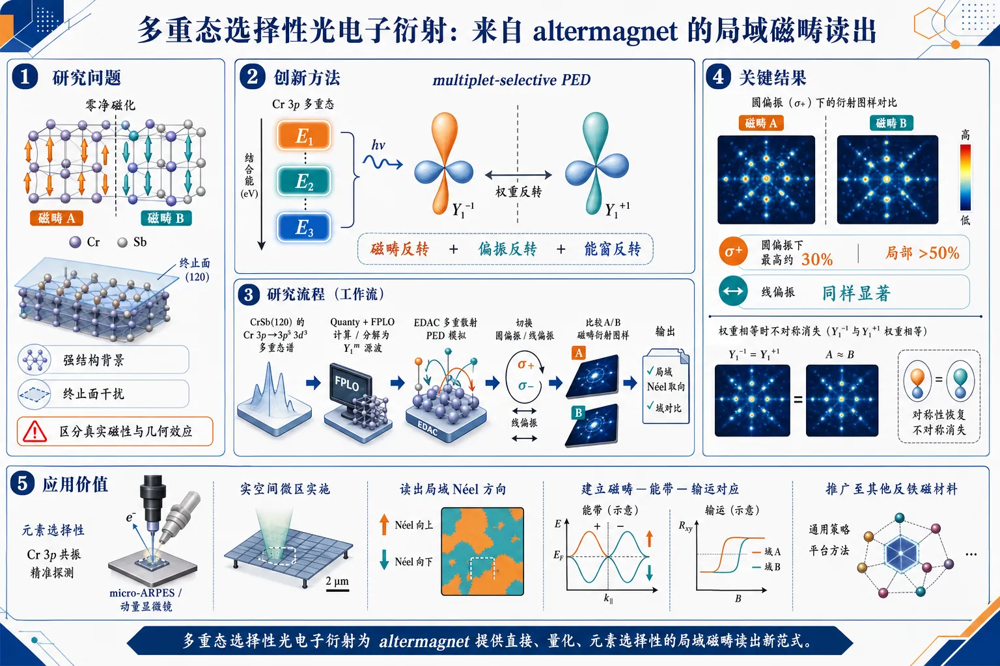
研究问题如何在零净磁化、强结构背景和终止面干扰下，直接识别 altermagnet 的局域磁畴与 Néel 取向，并区分真实磁性信号与光电子衍射几何效应。创新方法提出 multiplet-selective photoelectron diffraction：把 Cr 3p 多重态中不同能窗当作可切换的“源波”，利用 Y₁⁻¹/Y₁⁺¹ 权重反转，结合磁畴反转、偏振反转和能窗反转，提取对 altermagnetic 域敏感的衍射不对称。工作流程输入 CrSb(120) 的 Cr 3p→3p⁵ 3d³ 多重态谱；用 Quanty+FPLO 计算多重态并分解为 Y₁m 源波；用 EDAC 做多重散射 PED 模拟；选择 E1/E2 能窗并切换圆偏振/线偏振；比较 A/B 磁畴的衍射图样与不对称量；输出局域 Néel 取向与域对比。关键结果在 CrSb(120) 上，特定多重态能窗可产生清晰的磁畴衍射对比；圆偏振下不对称最高约 30%，局部可超过 50%；线偏振同样能获得显著域对比；当 Y₁⁻¹ 与 Y₁⁺¹ 权重相等时磁性不对称消失，证明信号来自多重态源波选择性而非普通几何二色性。应用价值提供一种元素选择性、实空间、可微区实施的 altermagnet 探针，可在 micro-ARPES 和 momentum microscope 中读出局域 Néel 方向，帮助建立磁畴—能带—输运之间的对应关系，并推广到其他具有不等价散射环境的反铁磁材料。《Multiplet-Selective Photoelectron Diffraction from an Altermagnet》（None，）
第一部分：核心概览
这篇工作提出multiplet-selective photoelectron diffraction（PED），把转变金属 3p 多重态中不同能区当作不同的“源波”来做实空间磁畴成像。以 CrSb(120) 为模型，证明 Cr 3p 多重态里富集 Y₁⁻¹ / Y₁⁺¹ 性质的能区，可在圆偏振和线偏振下产生对altermagnetic domains敏感的衍射不对称，且可借助磁畴反转、偏振反转、多重态能窗反转压制非磁背景。核心地位在于：把核能级 PED 从传统磁性光电子学推进为一种可用于域分辨、终态散射分辨的 altermagnet 实空间探针。
第二部分：结构化快速回顾
《Multiplet-Selective Photoelectron Diffraction from an Altermagnet》（None，）
- 背景：altermagnet 具有零净磁化却存在交换分裂；实验上直接识别其磁序困难，ARPES 又易受结构域、终止面与矩阵元效应干扰。
- 方法：用 Quanty + FPLO 计算 Cr 3p⁶3d³ → 3p⁵3d³ 多重态，再用 EDAC 做 PED 多重散射模拟，把不同多重态能窗映射为不同 Y₁m 源波。
- 结果：在 CrSb(120) 上，选定能窗可获得对两磁畴敏感的 PED 不对称；圆偏振下不对称可达约 30%，局部区域超过 50%，线偏振也能产生清晰域对比。
- 讨论：磁性信号不来自单纯圆二色性，而来自多重态源波权重反转 + 不等价散射环境的耦合；同一方法适用于现代 micro-ARPES / momentum microscope。
- 局限：完全依赖计算；关键实验不确定性在于 Cr 3p 多重态是否保持足够强的 Y₁m 权重分裂；不同表面终止、深层原子、背景尾与卫星峰会带来干扰。
- 结论：multiplet-selective PED 提供了一个可行的、元素选择性的 local Néel orientation 读出方式，可为后续域分辨能带与输运关联建立磁性参考框架。
第三部分：逐章节冷凝解析
I Introduction
Altermagnet 的核心实验难题
- altermagnets 属于补偿磁性材料，满足“exchange-split electronic states emerge despite vanishing net magnetization”。与常规共线反铁磁不同，反向磁子晶格通过旋转对称而不是平移对称联系，导致momentum-dependent spin splitting 和非常规自旋纹理。
- 直接探测 AM 序是主难题。AR P E S 已在 MnTe、CrSb 中观察到与理论一致的迹象，但现实样品含有multiple structural and magnetic domains, surface terminations, 以及强烈的 matrix-element effects。
- 圆二色性并不等价于磁性，因为其也可能来自纯几何终态效应，尤其是 PED 中的 Daimon effect。对应原句是：*“circular dichroism (CD) can also arise from purely geometrical final-state effects, including the Daimon effect in photoelectron diffraction (PED)”*。
与既有磁性 PED / 共振 PED 的关系
- 研究逻辑延续了 Fadley 等人开创的磁性 PED：核能级多重态发射可作为“internal source of spin-polarized photoelectrons”。
- 理论上，Krüger 已指出共振 PED 圆二色性可探测 AM 的staggered sublattice magnetization；DyMn(₆)Sn(₆) 的 micro-focused CD-ARPES 也已显示 Mn 3p multiplet 的磁畴敏感二色性。
- 这组进展共同指向：polarization-dependent core-level PED 有机会把磁性与结构散射分离。对应原句：*“Together, these developments suggest that polarization-dependent core-level PED can provide a route toward disentangling magnetic and structural contributions in AMs.”*
CrSb 为什么是理想平台
- 研究选取 CrSb，因为它是金属型 NiAs-type AM candidate，且已有高质量 cleaved CrSb(001) and CrSb(120) surfaces。
- 重点落在 CrSb(120)，因为该表面暴露出antialigned Cr sublattices embedded in inequivalent local scattering environments，是多重态选择性 PED 的天然平台。
- 这个表面还能保持compensated magnetic order，并存在两个 AM 域 A 与 B，便于做域间比较。
多重态源波的物理本质
- 关键在 transition-metal 3p multiplet。3p⁵3dⁿ 终态受 3p–3d Coulomb and exchange interactions, spin-orbit coupling, local crystal field 共同塑造。
- 不同能区的谱重分布对 Y₁m 分量的偏置不同，尤其可富集 Y₁⁻¹ 或 Y₁⁺¹，并与局域 Néel vector 相关。
- 实验可利用三种反转：magnetic-domain reversal, polarization reversal, multiplet-energy-window reversal。对应原句：*“This redundancy is essential because it allows suppression of nonmagnetic diffraction backgrounds while isolating the component associated with AM order.”*
方法学地位
- 结论性表述是：*“both circularly and linearly polarized light generate robust sublattice-sensitive diffraction asymmetries in CrSb.”*
- 方法可直接嵌入现代 micro-ARPES instrumentation，不需要超出常规平台的极端装置。
---
II Multiplet-selective source waves and magnetic contrast
CrSb 的表面与局域磁环境
- CrSb 有三个低指数表面：(001), (100), (120)。
- Cr1 与 Cr2 子晶格磁矩反平行，且嵌入inequivalent local environments。
- 电子从 Cr 3p 逃逸后形成 3p⁵3d³ 终态多重态，由原子相互作用和局域晶场共同决定。
多重态的 Y₁m 分解
- 使用 Quanty 计算多重态，原子参数取自 FPLO，再投影到复数 Y₁m 基底。
- 图 1(b) 显示总谱、spin-resolved 分量、以及 spin-summed 的 Y₁⁻¹, Y₁⁰, Y₁⁺¹ 分量。
- 在主多重态包络内，标为 E1 与 E2 的区域分别主要富集 Y₁⁻¹ 与 Y₁⁺¹ 源波性。
- 当局域磁矩反转时，这两个分量交换：*“Reversal of the local moment exchanges these components, (Y₁⁻¹ łeftrightarrow Y₁⁺¹)”*。
源波与偏振的耦合
- 传统 PED 里，局域核心能级是site-centered primary source，随后被周围原子multiply scattered。
- 对理想化的 Y₁⁻¹ 与 Y₁⁺¹ 源态，在 C− 光、Eₖᵢₙ = 80 eV、入射角 45° 下，两个通道的角分布与强度差异显著。
- 因此，把动能调到 E1/E2 区域即可改变主导源波。
- 由于 Y₁⁻¹ / Y₁⁺¹ 与局域磁矩的对应关系在两个磁子晶格上互换，这种能窗选择能优先探测 Cr1 或 Cr2。
CrSb(120) 上的 PED 机理
- 图 1(e) 的机制是：Cr1 与 Cr2 的发射波处于inequivalent local scattering environments，因而获得不同衍射图样。
- 这种对比把multiplet-selective source-wave character 与 AM 的核心结构特征——non-translational relation between the two magnetic sublattices——直接耦合起来。
- 这套机制不只适用于 CrSb，凡是两个子晶格具有可区分局域散射环境的 altermagnet 表面，都有望适用。
---
III The case of CrSb(120) surface
CrSb(120) 的域结构与终止面优势
- 该表面可通过劈裂实验实现，且不同于会被 Cr1 或 Cr2 单一终止打破补偿磁序的 (001) 面。
- CrSb(120) 存在两个 AM 域 A 与 B，二者差别是 Cr1/Cr2 局域磁矩的翻转。
- 定义了站点分辨 PED 强度：(ICᵣⱼD,C_±(Eₖᵢₙ,θ,φ))，并把总图样写成 Cr1 与 Cr2 贡献之和。
E1 能窗下的源波选择性
- 在 E1 区域，Cr1 in domain A 与 Cr2 in domain B 主要具有 Y₁⁻¹ 源波性；相反站点则偏 Y₁⁺¹。
- 对 C− 光、Eₖᵢₙ = 80 eV，Y₁⁻¹ 的原子光电离概率显著大于 Y₁⁺¹。
- 所以测得 PED 图样在 domain A 偏向 Cr1，在 domain B 偏向 Cr2；换成 C+ 时，偏置互换。
E2 能窗提供互补反转
- 选取 E2 后，主导源波从 Y₁⁻¹ 换成 Y₁⁺¹。
- 在固定光偏振下，这会近似交换 Cr1/Cr2 的相对光电离权重。
- 这一步是额外的内部交叉检验，不依赖磁畴反转本身。
磁性不对称量的定义
- 圆偏振下定义：
- (Δ IAM = IA,C₋-IB,C₋-IA,C₊+IB,C₊)
- (IAM = IA,C₋+IB,C₋+IA,C₊+IB,C₊)
- (Δ IAM^% = 100ḑotΔ IAM/IAM)
- 线偏振下定义：
- (IA,s = ICᵣ₁A,s+ICᵣ₂A,s)
- (IB,s = ICᵣ₁B,s+ICᵣ₂B,s)
- (Δ IAMs = IA,s-IB,s)
- (Δ IAMs,%=100ḑotΔ IAMs/IAMs)
圆偏振 PED 的数值结果
- EDAC 采用图 1(g) 的 cluster model。
- 图 2(a–d) 给出 A/B 域与 C± 光的 PED 图。
- 图样满足镜像关系：*“(Mₓ IA,C₋=IB,C₊)”* 与 *“(Mₓ IA,C₊=IB,C₋)”*。
- 因而 (Δ IAM^%) 在镜像下保持偶性。
- 计算不对称在宽角区可达约 30%，且最强区域与高强度 PED 区域重叠。
- 文中明确指出：对常规共线 AFM、或者当能窗中 Y₁⁻¹ 与 Y₁⁺¹ 权重相等时，(Δ IAM) 会消失。
线偏振 PED 的互补机制
- 对线偏振，两个源态的积分光电离强度相同，但角分布明显不同。
- 因而不需要偏振手性导致的总强度不平衡，也能通过多重散射转化为域对比。
- 能量依赖上，圆偏振的通道差异在较宽动能范围持续；线偏振的对比在 40–100 eV 最强，随后逐渐减弱。
- 这说明机制并不被严格锁定在单一动能点，但实际幅度会受phase shifts, radial matrix elements, 以及可能的 cross-section anomalies 影响。
线偏振域不对称的定义与图样
- 定义 (Δ IAMs) 后，图 3(f–m) 展示 s polarization 与 p polarization 下的 PED maps。
- 在该理想比较中，若是传统补偿 AFM 且反向磁子晶格由平移联系并经历相同表面散射环境，则该域对比应为零。
- CrSb(120) 的关键恰在于 inequivalent Cr1 and Cr2 environments，使得 domain A 与 B 之间的源波反转变成可测信号。
---
IV Discussion
磁性信号不是普通二色性
- 观测量连接的是domain imaging 与 test of AM order。
- 对比并非单纯来自 conventional dichroism，而是来自multiplet-selective source-wave reversal 与 inequivalent scattering environments 的相关性。
- 因此，把磁畴、光偏振、E1/E2 多重态区间三者联合比较，能互相约束并帮助排除结构性 PED 背景。
不对称幅度与实验可行性
- 计算的不对称在选定角区可超过 50%，在实验上关心的 |θ| < 15° 内仍约 30%。
- 因而主要瓶颈不是多重散射本身，而是 Cr 3p 多重态是否真能保留足够不同的 Y₁m 权重。
- 相关实验可行性由既有结果支撑：DyMn(₆)Sn(₆) 的 Mn 3p 多重态里已观测到超过 10% 的磁畴依赖二色性；Fe、Co、Ni 的 3p 光电子发射也报告了强自旋极化和磁二色性；Ni(110) 上还分辨出较弱线性二色性。
E1/E2 作为内部一致性检验
- 对单一磁畴，直接比较 E1 与 E2 还不够，因为两者的nonmagnetic backgrounds 与 source-channel admixtures 不一定相同。
- 一旦 A/B 域已识别，(Δ IAM(E₁₎₋Δ IAM(E₂₎) 可提供更强的一致性检验。
- 这利用了多重态区间之间的近似反转，而把缓慢变化的背景压下去，包括邻近 Sb 4d tail 和 loss satellites。
仪器兼容性
- 目标观测量兼容装配了二维电子偏转器的hemispherical analyzers，也兼容momentum microscopes。
- 因为关键对比已在 |θ| < 15° 内显著，不必记录完整半球。
- 所以常规 deflector-based analyzers 也足以实施。
表面终止面与样品准备
- 这里计算的是 Sb-terminated CrSb(120)，该终止面已有实验实现。
- 比较 A/B 域必须在相同表面终止上进行，因为 Sb-terminated 与 Cr-terminated 区域会产生不同的非磁 PED 背景。
- micro-ARPES 下可借助 Cr 3p 与 Sb 4d 强度比区分终止面。
- 薄膜样品若磁畴尺寸小于光电子探针尺寸，则可能需要 micropatterning。
更广泛的物理意义
- 方法的更深意义是给出一个spatially resolved marker of the local Néel orientation。
- 一旦磁畴和终止面已知，就能在同一微区做价带 ARPES，并拥有清晰的磁性参考框架。
- 这样可把momentum-dependent spin splitting 与轨道成分，关联到anisotropic transport 和其他自旋相关电子响应。
---
V Summary and outlook
方法总结
- 核心结论是：*“We introduced multiplet-selective photoelectron diffraction as a real-space probe of altermagnetic order.”*
- 机制依赖 Cr 3p 多重态源波性与 Cr1/Cr2 不等价散射环境之间的耦合。
- 圆偏振与线偏振都能在适当的多重态选择下产生显著的域敏感 PED 不对称。
与传统磁性二色性的区别
- 该方法不同于 conventional core-level magnetic dichroism，因为观测量来自multiplet-selective emission + sublattice-dependent multiple scattering 的共同作用。
- 其输出是element-selective identification of the local Néel orientation，可建立域分辨能带与输运的磁性参考框架。
适用范围
- CrSb 被视为优选测试对象，因为它具有high Néel temperature 与可实验处理的低指数表面。
- 更一般地，只要两个反向磁子晶格保留可区分局域衍射环境，且相关核心能级多重态具有磁性源波对比，这套方法就可推广。
- 明确给出的候选材料包括 MnTe, FeS 等转变金属化合物。
---
VI Acknowledgements
致谢信息
- 致谢 G. Bihlmayer 与 Y. Mokrousov 的讨论。
---
Supplementary Information
Appendix A Low index CrSb surfaces
表面取向的表示法
- 这里强调：altermagnet 的表面磁序必须对每个表面单独分析，PED 图样也会随之改变。
- 文中表面标签基于实空间基矢 a1, a2, a3。
- 与四指数 Miller–Bravais 记号的对应为：
- (120) ≡ (01bar10)
- (100) ≡ (2bar1bar10)
(001) 面的困难
- CrSb(001) 是最自然的劈裂面，但可出现 Cr1 或 Cr2 两种终止，增加了用自旋分辨光电子学研究 AM 的复杂度。
- 由于两种终止面局域环境相差 60° 旋转，它们可能产生不同 PED 响应。
- 因而实验上必须区分 Cr1-terminated 与 Cr2-terminated 区域。
(100) 面的可迁移性
- 若能制备 CrSb(100) 侧面，该方法与 CrSb(120) 基本相同。
---
Appendix B Multiplet-selective source-wave picture for Cr 3p photoemission
多重态源波图像的理论基础
- 这套解释建立在：Cr 3p 谱不同能区产生不同有效源波，供后续 PED 使用。
- 3p 光电子发射不是简单的自旋轨道双峰，而是由 exchange, spin-orbit coupling, hybridization effects 共同塑造的 3p⁵3dⁿ multiplet manifold。
- 早期对 Fe、Co、Ni 的自旋分辨测量已说明，3p 区不同谱特征具有不同自旋特性与角分布。
光电离矩阵元
- 给出简式矩阵元：
- (M propto łangle ψ_f|Aḑotp|φᵢångle)
- 其中 (φᵢ) 是局域 Cr 3p 初态，(ψ_f) 是出射电子末态。
- 对圆偏振光，(Aḑotp) 自然耦合到相反角动量投影的球谐组合，因此会偏好不同 m 通道。
为什么能用能窗代替偏振翻转
- 因为 Cr 3p 多重态含有强混合的自旋-轨道性质，改变能窗有时会产生与翻转偏振相似的效果。
- 这就是 multiplet-energy-window reversal 的基础。
PED 与圆二色性的陷阱
- 电子随后经历多重散射，最终图样不仅由初态光电离决定，也由 PED 与干涉决定。
- 圆二色性可在非磁系统中出现，即 Daimon effect。
- 因而仅观察到 dichroic PED pattern 不能证明 altermagnetic order。
圆二色性定义
- 定义了：
- (Δ ICD = IA,C₋+IB,C₋-IA,C₊-IB,C₊)
- (ISUM = IA,C₋+IB,C₋+IA,C₊+IB,C₊)
- (Δ ICD% = 100ḑot Δ ICD/ISUM)
- 计算显示，即使把 A/B 域相加，仍存在强的nonmagnetic dichroic contrast。
核心判据
- 真正的磁性分量要靠correlated reversal operations 提取。
- 若某一信号分量在 Néel-domain reversal 或 multiplet-energy-window reversal 下都一致翻转，就支持其与 AM 序相关。
---
Appendix C Additional PED calculations
深层 Cr 层的贡献
- 主文只计算了最外层 Cr 发射。
- 加入 三层最外 Cr 层、共 六个发射位点 后，结果显示效应幅度并未显著改变。
- 这说明主要信号已由表面附近层主导。
波函数选择的稳健性
- EDAC 中可用不同初态径向波函数。
- 主文使用软件内部默认波函数；替代方案是采用 Clementi–Roetti 原子波函数。
- 附加计算表明，换用该波函数后 PED 结论仍保持。
---
第四部分：深度理解与语言支持
1) 术语解析
Multiplet-selective
- 不是简单地“选某个峰”，而是选同一核心能级多重态内部、对不同 (m) 分量权重不同的能区。
- 语境里它意味着：E1 与 E2 不只是能量不同，更对应不同的源波角动量组成。
Source-wave character
- 指光电子离开原子后，作为 PED 入射散射前的“初始波”所携带的角动量/空间分布特征。
- 这里的“character”不是抽象比喻，而是可由 Y₁m 分解定量描述的波函数成分。
Inequivalent local scattering environments
- 两个子晶格即便磁矩相反，只要周围原子排布不同，出射电子经历的多重散射就不同。
- 这是能把磁性反转转译成衍射不对称的关键结构前提。
Nonmagnetic diffraction background
- 指不来自磁序的 PED 对比，可能由终止面、几何、Daimon effect、矩阵元效应等造成。
- 这里真正困难不在“有无对比”，而在“对比是否磁性起源”。
Cross-section anomalies
- 指光电离截面随动能或能区出现非平滑异常变化。
- 在这项工作里，它意味着线偏振或圆偏振下的对比幅度并非只由几何决定，还受原子截面与相移的能量依赖影响。
2) 疑难查证：为什么“圆二色性”不等于“磁性”？
PED 中的圆二色性包含两个来源：
- 初态/终态的偏振选择规则：圆偏振本来就偏好不同 (m) 通道；
- 几何散射非对称：电子从不同方向散射到探测器时，路径干涉可产生 Daimon effect。
因此，即使样品完全非磁，只要几何不对称，(Δ ICD) 也可能非零。
真正的磁性判据不只是“有 CD”，而是“磁畴反转 + 多重态能窗反转 + 偏振反转”之后，信号遵循一致的翻转规律。这个逻辑相当于用三个独立旋钮做交叉验证，把几何背景和磁性信号分离。
3) 疑难查证：为什么线偏振也能看见磁畴？
线偏振没有圆偏振那种手性，但这里的磁性对比并不依赖手性本身，而依赖：
- E1/E2 中不同 (Y₁m) 权重；
- 两个子晶格的散射环境不等价；
- 多重散射把源波角分布差异放大成最终图样差异。
因此，只要源波在能窗间发生“偏置翻转”，线偏振同样能把这个翻转转译成域敏感 PED。
---
第五部分：创新评估与关联
1) 新颖性判断
近 2–5 年相关工作主要集中在三条线上：
- ARPES 直接观察 altermagnet band splitting：MnTe、CrSb 的能带与自旋纹理证据增强了材料层面的可信度；
- CD-ARPES / micro-ARPES 的磁畴敏感性：尤其是在 DyMn(₆)Sn(₆) 等体系中，证明了多重态区域可以携带磁性二色性；
- 理论上的 resonant PED / magnetic PED：已知 PED 可对磁序与最终态散射敏感。
这项工作的新颖性不在于“PED 能看磁性”这一点，而在于三项组合创新：
- 把核心能级多重态的能区当作可切换的源波通道，实现 multiplet-selective；
- 把 altermagnet 的子晶格不等价散射环境 与 Y₁⁻¹/Y₁⁺¹ 源波交换联系起来；
- 同时给出圆偏振与线偏振的可行路径，并用磁畴反转、能窗反转、偏振反转形成内部一致性检验。
2) 解决了什么前人没解决的问题？
- 直接解决的是：如何在强结构背景、终止面歧义和多重态复杂性的条件下，提取 altermagnet 的局域磁序信息。
- 过去的问题是：ARPES 看到的二色性难以区分是磁性还是几何 PED。
- 这里的方案把“磁性识别”从单一谱线的解释，提升为一套冗余交叉验证框架：
域翻转 × 偏振翻转 × 多重态能窗翻转。
- 这也为后续研究提供了一个更强的目标：先用 core-level PED 锁定local Néel orientation，再在同一微区做价带 ARPES、输运与自旋纹理关联。
如果需要，我可以继续把这篇论文整理成：
- 一页式图解笔记，或
- “问题—方法—证据—结论”四栏表格版。
-
12
📊 含图深析
📄 摘要：在磁性石榴石薄膜上用永磁体阵列写入 Fresnel 波带片式磁全息图，实现磁光主动透镜。633 nm、直径 12.5 mm 激光被聚焦到焦距 3.1 m 处约 0.7 mm 光斑，调制深度约 91%；聚焦态可在微秒尺度可逆切换。
💡 亮点：磁性石榴石全息透镜以磁光效应实现约 91% 调制深度和微秒级焦点开关。该器件为高速可重构自由空间光学提供了不同于液晶和机械调焦的磁性方案。
📖 展开分析 + 配图
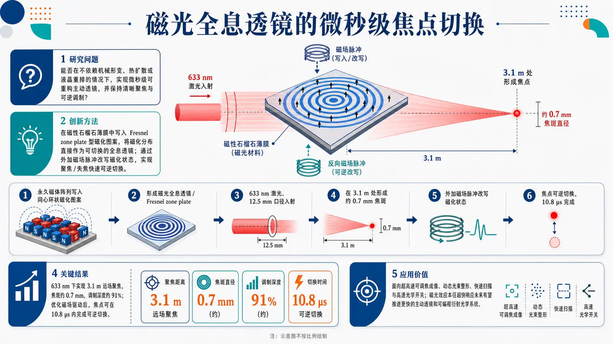
研究问题能否利用磁光效应构建一种可重构主动透镜，在不依赖机械形变、热扩散或液晶重排的情况下，实现微秒级焦点切换，并保持清晰聚焦与可逆调制？创新方法在磁性石榴石薄膜中写入 Fresnel zone plate 型磁化图案，把“磁化分布”直接当作可切换的全息透镜；再通过外加磁场脉冲改写磁化状态，实现聚焦/失焦的快速可逆切换。Aha点在于：把磁光材料本征超快响应与全息透镜结合，用磁场而不是机械结构来调焦。工作流程用永久磁体阵列在磁性石榴石薄膜上写入同心环状磁化图案 → 形成磁光全息透镜 / Fresnel zone plate → 633 nm 激光照射、12.5 mm 口径入射 → 透镜将光聚焦到 3.1 m 处形成约 0.7 mm 焦斑 → 施加外加磁场脉冲改变磁化状态 → 焦点状态可逆切换，切换时间优化至 10.8 μs。关键结果在 633 nm 激光下实现 3.1 m 远场聚焦，焦斑约 0.7 mm，调制深度约 91%；通过优化磁场驱动系统，焦点可在 10.8 μs 内完成可逆切换，显著快于传统主动透镜的响应速度。应用价值为超高速可调焦成像、动态光束整形、快速扫描与高速光学开关提供新的器件路线；由于磁光效应本征响应可达皮秒级，该方案未来有望进一步推进到更快的主动透镜和可编程衍射光学系统。第一部分：核心概览
磁光全息主动透镜利用磁性石榴石薄膜中的 Fresnel zone plate 磁化图案，实现 633 nm 激光在 3.1 m 焦距处聚焦，并通过外加磁场脉冲在 10.8 μs 内可逆切换焦点状态。其核心贡献在于把磁光效应的超快本征响应与可重构全息透镜结合，突破传统主动透镜微秒级响应瓶颈，构成面向超高速可调光学元件的概念验证。
---
第二部分：结构化快速回顾
《Magneto-optical hologram lens with microsecond focal switching in magnetic garnet》（None，）
背景
主动透镜和超表面透镜已广泛用于可调焦成像、光束整形、动态光学系统，但响应速度通常受材料形变、液晶重排、热调谐或机械运动限制，难以进一步压缩至更快时间尺度。
方法
采用磁性石榴石薄膜作为磁光介质，通过永久磁体阵列写入 Fresnel zone plate 型磁化图案，形成磁光全息透镜；利用外加磁场脉冲改变磁化状态，从而切换聚焦状态。
结果
12.5 mm 直径、633 nm 激光被聚焦至 3.1 m 焦距处，焦斑尺寸约 0.7 mm，调制深度约 91%。优化磁场施加系统后，焦点切换速度达到 10.8 μs。
讨论
磁光效应本征响应可达皮秒量级，因此当前 10.8 μs 速度主要受外部磁场驱动系统限制，而非磁光材料本征物理限制。
局限
已展示的是概念验证；焦距较长、焦斑较大，光学效率、器件微型化、驱动电路集成、二维/三维动态波前控制能力仍需进一步验证。全文正文未提供，无法确认系统误差、重复循环稳定性、损耗、偏振依赖性和热效应数据。
结论
磁光全息透镜可实现微秒级可逆焦点切换，并具有向更快时间尺度推进的物理潜力，为超高速主动透镜提供了新的材料与器件路线。
---
第三部分：逐章节冷凝解析
可用原始内容仅包含 Abstract 与 arXiv 条目信息；正文原始章节标题、实验细节、图表说明、补充材料内容未提供，因此无法可靠还原 Introduction、Methods、Results、Discussion 等章节的逐节证据。以下严格基于已提供原文内容解析。
---
Abstract
Active metasurface lenses remain speed-limited
主动透镜已经在多种应用中得到展示，但现有主动超表面透镜的响应速度仍停留在微秒量级附近，成为进一步发展高速动态光学系统的关键瓶颈。原文直接指出：*"Active lenses based on metasurfaces have been demonstrated across broad applications, and their response speeds remain limited to the microsecond range."*
这里的核心问题不是能否实现主动调焦，而是响应速度上限仍受限。对于需要高速焦点切换、动态成像、快速光束扫描或高速光通信调制的系统，微秒级响应已接近传统机制的性能边界。
Magneto-optical active lens is experimentally demonstrated
器件路线不是液晶、MEMS、热光、声光或电光超表面，而是基于磁光效应的主动透镜。核心实验对象为磁性石榴石薄膜上的磁性全息图案。原文表述为：*"Here we report the experimental demonstration of a magneto-optical (MO) active lens based on a magnetic hologram formed on a magnetic garnet film."*
这一点构成主要学术贡献：把磁光材料中的磁化空间分布转化为可控的光学相位/强度调制结构，使磁化图案承担类似全息透镜或 Fresnel zone plate 的功能。
Fresnel zone plate pattern is written using permanent magnets
透镜图案并非通过传统光刻刻蚀产生几何纳米结构，而是通过永久磁体阵列在磁性薄膜中形成 Fresnel zone plate pattern。原文写明：*"A Fresnel zone plate pattern was created using an array of permanent magnets"*。
这种方法的关键在于：全息透镜的空间调制来自磁畴或磁化方向分布，而非材料表面形貌。与固定纳米结构不同，磁化状态可以通过外加磁场改变，因此天然具备可逆切换能力。
633 nm laser beam is focused over meter-scale focal length
实验使用波长 633 nm 的激光，入射光束直径为 12.5 mm，经过磁光全息透镜后在 3.1 m 焦距处聚焦。原文给出完整参数：*"focusing a 633 nm laser beam of 12.5 mm diameter to a spot size of 0.7 mm at a focal length of 3.1 m"*。
这些数值说明器件完成了可观测的远场聚焦，但也表明当前设计的数值孔径较低：12.5 mm 口径对应 3.1 m 焦距，聚焦角较小，焦斑 0.7 mm 仍远大于衍射极限显微聚焦尺度。
Modulation depth reaches approximately 91%
磁光全息图案带来的聚焦态调制深度达到约 91%。原文为：*"with a modulation depth of ~91%."*
调制深度反映聚焦开关状态之间的强度对比度，约 91% 意味着开态与关态之间存在较明显的光强差异。对于主动透镜，调制深度直接关系到焦点切换是否可用于实际成像、光束寻址或高速光学控制。
Focusing state is reversibly switched by magnetic field pulses
焦点状态可通过外加磁场脉冲进行可逆切换。原文明确写道：*"The focusing state was reversibly switched by applying an external magnetic field pulse."*
这说明器件不是一次性写入的静态磁性全息图，而是具有动态可重构性。外加磁场改变磁化分布或磁化方向后，磁光响应随之改变，从而切换透镜的聚焦状态。
Switching speed reaches 10.8 μs after field-system optimization
通过优化磁场施加系统，焦点切换速度达到 10.8 μs。原文为：*"Through optimization of the magnetic field application system, a switching speed of 10.8 μs was achieved"*。
这一速度是实验演示的最关键性能指标。由于主动透镜常受驱动机构限制，10.8 μs 的焦点切换速度使该器件进入高速动态光学元件范围。
Performance surpasses conventional active lenses
10.8 μs 的切换速度被定位为超越传统主动透镜的工作速度。原文直接给出比较判断：*"surpassing the operating speeds of conventional active lenses."*
这里的“传统主动透镜”通常可包括液晶透镜、机械调焦透镜、热调谐透镜、流体透镜、部分 MEMS 透镜等。其共同特征是响应过程依赖分子重排、机械位移、热扩散或形变，速度难以轻易提升。
Intrinsic MO response suggests faster future operation
磁光效应的本征响应可达皮秒量级，因此当前微秒级速度不是物理极限。原文写道：*"The intrinsic picosecond-scale response of the MO effect indicates that further improvement in switching speed is achievable"*。
这一点非常重要：实验速度为 10.8 μs，但材料机制潜力远快于此。未来若采用更高速的磁场驱动、电流诱导磁化翻转、片上微线圈或自旋轨道力矩机制，切换速度仍可能大幅提升。
Proof-of-concept for ultra-fast active lenses
研究定位为超快主动透镜的概念验证。原文总结为：*"establishing this work as a proof-of-concept for ultra-fast active lenses."*
“proof-of-concept”意味着现阶段重点是证明物理机制和器件原理可行，而不是已经完成工程最优化。关键价值在于展示了一条不同于机械、热、液晶和常规超表面的高速可调焦路径。
---
Bibliographic and technical metadata
Device platform belongs to optics and materials science
学科分类同时覆盖 Optics 与 Materials Science。arXiv 条目信息标注：*"Subjects: Optics (physics.optics) ; Materials Science (cond-mat.mtrl-sci)"*。
这反映器件具有双重属性：一方面是动态光学元件，另一方面依赖磁性石榴石薄膜、磁化图案和磁光材料工程。
Manuscript includes figures and supplementary information
条目信息显示主文包含 24 pages, 4 figures，补充信息包含 6 pages, 3 figures。原文元数据为：*"Comments: 24 pages, 4 figures; Supplementary Information: 6 pages, 3 figures"*。
这意味着完整实验设计、磁场系统、焦点测量、开关波形、补充验证很可能分布在正文图 1–4 与补充图 S1–S3 中；但这些内容未随输入提供，不能进行数值级复核。
Submission date is July 15, 2026
arXiv 提交时间为 15 Jul 2026。条目信息给出：*"Submitted on 15 Jul 2026"*，版本记录为：*"[v1] Wed, 15 Jul 2026 16:13:39 UTC"*。
该时间信息意味着其相对于 2024–2026 年主动超表面和高速可调透镜研究具有较新的时间位置。
---
第四部分：深度理解与语言支持
1. 术语解析
#### Magneto-optical effect
Magneto-optical effect 指材料磁化状态改变光的偏振、相位或传播特性的现象，典型包括 Faraday effect 和 Kerr effect。语境中，磁性石榴石薄膜的磁化分布产生空间调制，使光束经过后形成类似全息透镜的聚焦效果。
微妙之处在于：这里的“active”并不主要来自机械移动透镜，而是来自磁化状态可切换。
#### Magnetic hologram
Magnetic hologram 不是普通光学全息胶片，也不是表面浮雕全息结构，而是由空间分布的磁化方向/磁畴构成的全息调制图案。光经过磁光材料时，不同区域因磁化状态不同产生不同光学响应，从而重建特定波前。
语境中，该磁全息图案承担 Fresnel zone plate 的功能。
#### Fresnel zone plate
Fresnel zone plate 是由同心环带构成的衍射聚焦结构，相邻环带使透射光在目标焦点处相长干涉。与传统折射透镜不同，它通过衍射而非连续折射曲率聚焦。
语境中，该 zone plate 不是刻蚀出的透明/不透明环，而是通过永久磁体阵列写入的磁性图案。
#### Modulation depth
Modulation depth 描述信号强弱变化程度。对于主动透镜，可理解为聚焦开态与关态之间的光强对比。约 91% 表明切换前后焦点强度变化非常明显。
需要注意：调制深度高不等同于总光学效率高；它只说明状态对比度强，不能直接推出透过率、衍射效率或能量利用率。
#### Proof-of-concept
Proof-of-concept 表示原理验证阶段。其学术含义是关键物理机制已被实验支持，但器件性能、稳定性、可制造性、系统集成度可能尚未达到应用级成熟。
语境中，10.8 μs 切换和可逆聚焦证明了磁光全息主动透镜可行，但不代表已经完成商用主动镜头系统。
---
2. 疑难查证
#### 为什么磁光效应本征可达皮秒，但实验切换只有 10.8 μs？
需要区分两个时间尺度：
- 材料光学响应时间
磁化状态一旦改变，磁光响应几乎可以在皮秒量级反映到光的偏振或相位上。这是原文所说的 *"intrinsic picosecond-scale response of the MO effect"*。
- 磁化状态实际切换时间
实验中需要外部磁场脉冲改变磁性薄膜中的磁化图案。磁场脉冲由线圈、电源、电路、电感、电阻、磁路结构等决定。线圈电感会限制电流上升沿，磁场空间均匀性也会影响切换速度。因此实测 10.8 μs 很可能主要受驱动系统限制。
可用类比理解：灯泡本身可以纳秒级发光，但如果开关电路很慢，实际开灯速度仍会很慢。磁光材料是“快灯泡”，外加磁场系统是“慢开关”。
#### 磁性 Fresnel zone plate 如何实现聚焦？
普通 Fresnel zone plate 通过透明/不透明环带或相位环带，让不同半径区域的光到达焦点时相位相干。磁光版本中，环带不是几何高度或透光率变化，而是磁化状态变化。
若磁化方向不同，光在这些区域经历不同的 Faraday 旋转或偏振态变化。配合偏振分析器或特定光路后，这种磁光差异可转化为强度/相位调制，于是形成全息透镜效应。
因此，磁性图案相当于“可磁控的衍射光学元件”。
#### 为什么这类器件可能比传统主动透镜更快？
传统主动透镜常依赖以下慢过程：
- 液晶分子转向：通常受黏滞阻尼限制；
- 热光调谐：受热扩散时间限制；
- 机械/MEMS 位移：受惯性、弹簧常数、阻尼限制；
- 流体透镜：受液体运动和界面形变限制。
磁光透镜的核心调制机制是磁化相关光学响应，原则上没有宏观机械位移，也不需要热扩散。只要磁化能够被快速翻转或调制，光学响应可同步快速变化。
---
第五部分：创新评估与关联
1. 创新性判断
#### A magnetic hologram replaces mechanically or electrically deformed lens media
近 2–5 年主动透镜研究大量集中在液晶超表面、MEMS 可变形镜、相变材料、热光超表面、电光材料和可拉伸超表面。共同问题是响应速度常受材料重构或机械过程限制。
该工作的新颖性在于使用磁性全息图案作为主动透镜核心，而不是改变透镜形状、折射率热分布或纳米结构几何形貌。
#### Microsecond focal switching is experimentally demonstrated, not only proposed
很多高速可调光学方案停留在模拟或小口径局部调制。这里给出了明确实验指标：633 nm、12.5 mm 光束、3.1 m 焦距、0.7 mm 焦斑、约 91% 调制深度、10.8 μs 切换速度。
这些参数使其不只是材料效应演示，而是具备完整透镜功能的系统级原理验证。
#### The bottleneck is shifted from optical material response to magnetic-field driving
传统主动透镜的速度瓶颈常在光学介质本身，例如液晶响应、热扩散或机械变形。磁光路线中，材料本征响应可达皮秒，实验瓶颈主要转移到外部磁场施加系统。
这是一种重要范式变化：后续优化可集中在高速磁场驱动、微线圈、电流脉冲、片上磁路或自旋电子学控制，而不是寻找更快的机械/热响应材料。
#### The work opens a route toward ultra-fast active diffractive optics
该器件本质上是可磁控衍射光学元件。如果 Fresnel zone plate 能被磁控，那么更复杂的磁性全息图也可能实现动态波前整形、焦点阵列切换、光束偏转、模式转换或多焦点重构。
因此创新点不局限于“做出一个可切换透镜”，更在于展示了磁光全息平台作为高速可编程光学元件的可能性。
#### Remaining unresolved problems define the next research frontier
目前可确认的问题包括：
- 焦距 3.1 m，器件较适合低数值孔径远场聚焦；
- 焦斑 0.7 mm，尚未体现高 NA 精密聚焦；
- 未提供完整光学效率、插入损耗、偏振依赖性、循环寿命和热稳定性数据；
- 永久磁体阵列写入方式可能限制图案复杂度和片上集成；
- 外部磁场脉冲系统仍是速度瓶颈。
因此，最有价值的后续方向是：提高数值孔径、缩短焦距、提升衍射效率、实现片上高速磁场驱动、构建多级或连续可调焦磁光全息器件。
-
13
📊 含图深析
📄 摘要：在 KV₂Se₂O 中通过自旋选择扫描隧道显微镜可视化金属性 d 波交替磁态。该方法借助拓扑绝缘体针尖实现自旋选择隧穿，直接关联晶体对称性、电子结构和 d 波自旋极化，弥补以往候选材料中缺少局域实验证据的问题。
💡 亮点：自旋选择 STM 在 KV₂Se₂O 中直接成像 d 波自旋极化，给出金属交替磁态的局域证据。该结果把交替磁的对称性预言与实空间电子态观测连接起来。
📖 展开分析 + 配图
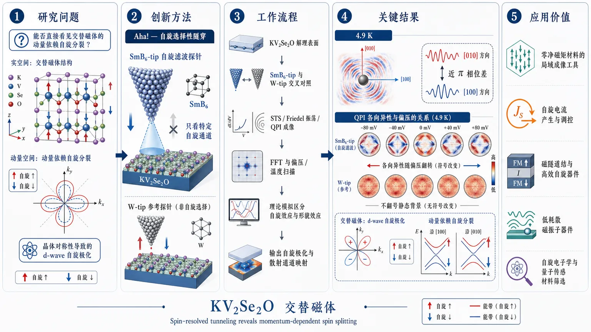
研究问题能否在 KV₂Se₂O 中直接“看见”交替磁体的动量依赖自旋分裂，并把晶体对称性导致的 d-wave 自旋极化同时映射到实空间与动量空间？创新方法使用 SmB₆ 纳米线尖端作为自旋滤波探针，进行自旋选择性隧穿 STM，把普通隧穿电流升级为“只看特定自旋通道”的局域成像，这是本工作的 Aha 点。工作流程制备 KV₂Se₂O 解理表面 → 以 SmB₆-tip 与 W-tip 交叉对照 → 采集 STS、Friedel 振荡和 QPI 图像 → 做 FFT 与偏压/温度扫描 → 结合理论模拟区分自旋效应与形貌效应 → 输出自旋极化与散射通道映射。关键结果在 4.9 K 观测到缺陷周围两条正交振荡方向近 π 相位差；SmB₆-tip 的 QPI 各向异性随偏压翻转符号，而 W-tip 只表现为不翻号的静态背景各向异性；结果共同证明 KV₂Se₂O 存在 d-wave 自旋极化与动量依赖自旋分裂。应用价值为零净磁矩材料提供了直接局域成像工具，可用于识别补偿磁序、自旋流产生、磁隧穿结和低耗散磁振子器件设计，也为自旋电子学与量子传感中的新型磁性材料筛选提供方法。第一部分：核心概览 (Overview)
这篇工作把KV₂Se₂O确立为可被局域实空间直接读出的d-wave altermagnet。核心贡献是用SmB₆ 纳米线尖端实现spin-selective tunneling，同时在Friedel 振荡相位反转与QPI 峰强的偏压奇偶翻转两条独立证据链上，直接映射出动量依赖的自旋极化。再结合 W-tip 对照、温度对照和数值模拟，建立了从晶体对称性—能带自旋分裂—扫描隧道信号的闭环证据，在近两年 altermagnet 实验里属于少见的“局域成像级”证明。
---
第二部分：结构化快速回顾
《Visualizing spin-polarization of an altermagnet KV₂Se₂O via spin-selective tunneling》（None，）
背景：altermagnet 兼具零净磁矩与动量依赖自旋分裂，但缺少把晶体对称性、电子结构和 d-wave 自旋极化直接连起来的微观实验证据。KV₂Se₂O 具有 P4/mmm 结构、Lieb 晶格 V₂O 层和已知的磁性/SDW 重构，是理想平台。
方法：用SmB₆ 纳米线 STM 探针做自旋选择性隧穿，同时用 W-tip 作为非自旋选择对照；结合 STS、QPI、FFT、温度对照、理论模拟。
结果：观测到 4.9 K 下箭头缺陷周围两正交方向的近 π 相位差，而在 11.4 K 相位差显著减弱；SmB₆-tip 的 QPI anisotropy A(E) 随偏压翻转符号，而 W-tip 仅有不翻号的静态背景各向异性。
讨论：证据支持 d-wave 动量自旋极化，且结果不能由单纯缺陷形状、固定探针各向异性或仅 SDW 重构解释。
局限：STM 主要探测最表层；QPI 受缺陷局域势、表面重构和背景各向异性影响；更深层的bulk hidden altermagnetism未被直接成像。
结论：KV₂Se₂O 的AM 自旋分裂被局域实空间和动量空间同时可视化，spin-selective tunneling 成为研究补偿磁序的重要工具。
---
第三部分：逐章节冷凝解析 (Section-by-Section Condensing)
Abstract
Altermagnetism 的核心定义被重新落到可观测信号上
关键句直接给出研究对象的理论坐标：*“a recently identified magnetic phase that combines vanishing net magnetization with momentum-dependent spin splitting”*。这一定义把 altermagnet 与传统铁磁/反铁磁二分法区分开来，核心不是总磁矩，而是k 空间自旋分裂。KV₂Se₂O 被放进这一框架后，材料层面的任务变成：是否能用实验把这种分裂“看见”。
SmB₆ 尖端实现了局域自旋选择性成像
核心方法是：*“spin-selective scanning tunneling microscopy powered by a topological insulator tip”*。SmB₆ 纳米线尖端充当方向性自旋滤波器，而不是普通金属尖端。其重要性在于避免了铁磁尖端可能带来的磁场扰动，同时保留对自旋极化的敏感性。
两条互补信号链指向 d-wave 自旋极化
两类关键观测被并列使用：*“temperature-dependent phase shift of Friedel oscillations”* 和 *“bias-dependent quasiparticle-interference between qx and qy directions”*。前者发生在实空间，后者发生在动量空间。二者共同支持 d-wave form factor 的自旋极化，而不是普通结构各向异性。
对照实验排除了非自旋来源
W-tip 结果表现为：*“mostly in-phase oscillations and a non-sign-reversing QPI anisotropy”*。这条对照非常关键，因为它说明若没有自旋选择性，QPI 各向异性更多是静态背景，不会随偏压反号。
KV₂Se₂O 被定位为研究平台
总结性表述是：*“a material platform to study the interplay between spin-valley locking, Fermi-surface instability and unconventional magnetism”*。这里把材料价值从“单一磁体”推进到“自旋-谷锁定 + 费米面不稳定性 + 非常规磁性”的耦合平台。
---
Introduction
altermagnet 打破了传统磁性分类
关键表述：*“combines compensated magnetic sublattices with momentum-dependent spin splitting”*。这意味着局域上仍可有反平行磁矩，但在能带上出现类似铁磁的自旋分裂。与 Néel AFM 不同，altermagnet 的实验信号不是净磁化，而是由晶体对称性保护的 k 依赖自旋纹理。
KV₂Se₂O 家族是理想候选体系
文本把 AA V₂Se₂O / AA V₂Te₂O 系列描述为 *“a highly promising material platform”*，原因有三：
- 金属性；
- 样品尺寸友好；
- 单层里已被识别为 *“a d-wave altermagnet”*，块体里是 *“a hidden altermagnet”*。
这为局域 STM 成像提供了足够强的表面信号。
Lieb 晶格导致特殊费米面形状
V₂O 平面是 Lieb lattice geometry，形成 *“spin-polarized Fermi surfaces with quasi-1D flat segments”*。平坦费米面片段使得散射和嵌套高度定向，也解释了后面为何主要看到 qx / qy 两个方向的 QPI 通道。
常规自旋分辨 ARPES 的局限
限制来自 *“magnetic domains and the inherently low efficiency of spin detection”*。也就是说，宏观动量分辨技术在这里遇到的是畴平均和低效率双重瓶颈，因此需要真正局域、原子尺度、同时带自旋选择性的探针。
SmB₆ 探针是关键突破口
SmB₆ 被描述为 *“an intrinsic directional spin filter”*，并且 *“the tunneling current is spin-polarized and the spin orientation could be flipped by bias voltage”*。这比铁磁尖端更微妙：自旋极化不是靠外磁场翻转，而是由偏压控制，适合研究不希望被磁场扰动的补偿磁序。
---
Crystal structure and basic surface properties / Figure 1
晶体结构与空间群确定了对称性基础
KV₂Se₂O 采用 tetragonal P4/mmm 结构，晶格常数 a = 3.966 Å。层状堆叠顺序为 V₂O / Se / K 沿 c-axis 排列。这个结构意味着表面解理天然发生在 K 层。
V₂O 层的 Lieb 晶格与 d-wave altermagnet 条件
两类对称不等价 V 位点由 C4z 或 M₁₁̄₀ 关联，并在 AM 相里携带相反局域磁矩。对应的自旋-空间对称写成 *“[Uₛ || C₄z] and [Uₛ || M₁bₐᵣ₁₀]”*。由此得到能带约束：
*“E↑(kx, ky) = E↓(-ky, kx)”* 和 *“E↑(kx, ky) = E↓(ky, kx)”*。
结果是：除 kx = ± ky 这些对称保护对角线外，普遍存在自旋分裂，这就是 d-wave AM 的判据。
解理表面发生 K 层重构
表面只保留“almost half of the K atoms”，形成 *“a reconstructed 2a × 2a square lattice”*。这一步非常重要，因为 STM 实际看到的顶面不是理想原子平面，而是重构后的 K 终止面。
低温下出现 SDW 二次相变
在 T_N 以下，还出现约 T_N′ = 96 K 的第二相变。伴随 spin-density wave (SDW) 形成的证据来自磁化率，并被描述为仍“under debate”。这意味着后续实验必须区分：看到的信号究竟来自 AM 自旋分裂，还是来自 SDW 重构。
费米面嵌套解释了 SDW 重构
自旋极化费米面包含位于 kx = ± π/2a 和 ky = ± π/2a 附近的准一维平直段。嵌套矢量 *“Q = (π/a, π/a)”* 连接同自旋费米面，利于电子-空穴通道不稳定，从而打开 SDW gap。低温下因此出现 2a × 2a 超晶格。
为什么要找缺陷散射
由于表层 K-lattice 周期与 V₂O 磁结构在低温下都变成相同的 2a × 2a 周期，单看 topography 无法区分自旋纹理。所以改用 *“spin-sensitive STM to detect quasi-particle scattering off individual impurities”*。这一步把问题从“看原子位置”转成“看散射波的相位与方向选择性”。
箭头形缺陷是主要散射中心
缺陷类型包括 *“large bright protrusions”*、*“arrow-shaped defects”*、*“2×1 reconstructed chain-like structures”* 和 *“vacancy-like depressions”*。QPI 主要来自箭头形缺陷，且其四种取向数量大致均衡。理论上，这种箭头对比可由 V-dxz/dyz 态在重构 K 背景上的各向异性调制重现。
STS 显示 SDW gap 约 40 meV
W-tip 与 SmB₆-tip 在 5 K 测得的 dI/dV 都显示 -15 到 +25 meV 之间的谱重抑制，残余电导说明这是 soft, particle–hole-asymmetric reconstruction gap。由此抽取的 SDW gap 约 40 meV。
SmB₆-tip 略小的 gap 则与 *“additional LDOS around 10 meV”* 有关，来源是 SmB₆ 的 topological surface states。
---
Band structure of KV₂Se₂O / Figure 2
QPI 图像给出散射通道的主方向
在 T = 5 K、V_b = 40 mV、35 × 35 nm² 的 dI/dV map 中，缺陷诱导出明显的 cross-shaped Friedel oscillations。FFT 后出现主峰 qx / qy，同时绿色圈标记出重构晶格的 Bragg peaks。说明散射主要发生在两个正交方向的近平行费米面段之间。
理论能带同时包含 AM 自旋分裂和 SDW 折叠
计算能带显示，AM 负责 spin splitting，SDW 负责 band folding and low-energy gap；纯 SDW 极限仍然是 spin degenerate。这一区分至关重要，因为实验上看到的能量结构要同时接受两个机制解释。
40 meV 处的常数能量切面匹配实验
理论 CEC 在 40 meV 时出现四条近乎平行的带，沿 kx ≈ ±π/2a 与 ky ≈ ±π/2a 分布。对应的两个正交费米面片段保持相反自旋极化，仍满足 *“[Uₛ || Mbₐᵣ₁₁₀]”* 之类的对称约束，因此即使有 SDW，AM 特征仍然保留。
AM 自旋分裂远大于 SDW gap
文中给出数量级对比：SDW gap ~ 40 meV，而 AM spin-splitting ~ 1.8 eV。这个数量级差别决定了低温下电子结构仍主要由 d-wave AM 控制，而不是被 SDW 完全改写。
模拟 QPI 与实验主峰对应
单点杂质散射的理论 FFT 在 40 mV 下重现了靠近布里渊区边界的主散射矢量，尤其是 qx / qy 峰。这里的价值在于：不仅峰位一致，峰的主方向也一致，说明实验图样不是偶然纹理。
散射矢量的色散可反推出能带色散
通过偏压变化提取 qx 的能量色散，并用 *“q = 2k”* 转换回 k 空间。结果显示在 20–30 meV 附近出现斜率变化，接近 SDW gap 的上边缘。
更宽范围 -100 到 +100 mV 的扫描中，负偏压侧没有同等锐利特征，符合 particle–hole asymmetry。
---
Spin polarized scattering in real space / Figure 3
先验证缺陷没有破坏本征秩序
在单个缺陷上做 dI/dV 线扫后，SDW gap 基本不变，AM order 也保持稳定。说明后面的 QPI/振荡信号可以视为宿主电子结构的响应，而不是缺陷诱导的整体重构。
缺陷内有微弱 in-gap bound state
在 V_b = −3 mV 左右出现小峰，说明缺陷捕获了局域束缚态。但这部分被明确排除在主分析之外。
SmB₆-tip 下出现近 π 相位差
在同一视野、同一缺陷、同一尖端条件下，4.9 K 时两个正交方向的 standing waves 出现清晰的 *“near-π phase shift”*。这说明局域散射信号并非简单几何对称，而是带有自旋选择性。
升温到 11.4 K 后相位差明显消失
同一区域升到 11.4 K，相位偏移强烈减弱，而线扫轨迹位置保持不变。因为 11.4 K 仍远低于 T_N′ = 96 K，这排除了“只要 SDW 还在，相位差就一定在”的解释，也削弱了纯静态 SDW 起源。
Fe₁₊ₓTe 标定排除固定探针方向伪影
SmB₆-tip 在 Fe₁₊ₓTe 上能解析两个正交 AFM 畴，说明方向性对比跟随样品磁畴而不是固定探针轴。这一点对消除“tip-frame geometry”伪影很关键。
相位差在多个缺陷上可重复
多个箭头形缺陷都出现近 π 相位差，且主要在“tail”方向与其垂直方向之间比较。重复性说明这不是单个缺陷偶然事件。
W-tip 大多只看到同相振荡
W-tip 测量通常表现为两方向 in-phase 振荡；弱振荡时顶层 K-lattice 会引入少量相位偏移。对照表明，SmB₆-tip 的相位反转不是一般形貌各向异性。
相位反转与 Fe(Se,Te) 中的 spin-polarized stripes 类似
这里借用了已知系统的类比：*“spin-polarized stripes observed in Fe(Se,Te)”* 中也有偏压翻相。对应解释是 SmB₆-tip 的spin-selective tunneling，而不是常规 topographic contrast。
理论计算支持实空间 π 相位关系
加入 K-lattice 背景后，spin-sensitive observable 产生 *“near-π phase relation”*，而 spin-summed response 主要是同相。这个结果把实空间现象和自旋分辨理论直接接上。
---
Visualize spin polarized band in momentum space / Figure 4
用大视野统计 QPI 各向异性
在更大视野、多个缺陷的情况下，定义了
*“A(E) = [Iqₓ₍E) − Iq_y(E)] / [Iqₓ₍E) + Iq_y(E)]”*。
这一步把原始 FFT 的方向性差异压缩为一个可比较的标量指标。
W-tip 存在静态背景各向异性，但不翻号
W-tip 下 A(E) 非零，说明不自旋选择的 QPI 里确实有静态背景，可能来自 SDW 重构、缺陷势、样品轨道矩阵元或 tip-apex anisotropy。但关键是它不随偏压翻号。
SmB₆-tip 的 A(E) 随偏压反号
SmB₆-tip 下 A(E) 在正负偏压之间显著换号，意味着 qx 与 qy 通道的强度发生互换。这是最直接的动量空间自旋极化信号之一。
只有自旋敏感通道能解释偏压翻号
计算比较了两种机制：spin-sensitive tunneling 与 orbital-imbalanced impurity scattering。两者都能产生 C4-breaking QPI，但只有前者能产生实验中观察到的 A(E) sign reversal。
差分图和线剖面与主结论一致
±40 mV 的 FFT difference maps 以及对应 line profiles 显示，qx 与 qy 通道在偏压反转时呈相反演化。这与实空间 π 相位差一起，构成双重证据链。
结论依赖多重交叉验证，而非单一 QPI 指标
关键整合逻辑是：
- W-tip 给出不翻号背景；
- SmB₆-tip 给出偏压奇偶自旋信号；
- 同一缺陷在 11.4 K 时相位差消失；
- Fe₁₊ₓTe 标定排除固定尖端方向伪影；
- 理论排除 SDW-only 与 orbital-imbalanced 方案。
这组证据共同锁定 KV₂Se₂O 的 AM 自旋分裂。
---
Discussion and conclusion
STM 看到的是表层单层极限的 AM 行为
由于 STM 高度表面敏感，测到的是最顶层 V₂O 派生电子态。文本明确指出：*“effectively realizing the monolayer AM behavior”*。这意味着 bulk 中的 hidden altermagnetism 在表面上以单层极限形式显现。
bulk 结构是 G-type AFM，并带 hidden altermagnetism
体相 KV₂Se₂O 被发现为 G-type antiferromagnetic order，且存在额外对称 *“[Uₛ | M_z]”*。这定义了 hidden altermagnetism，并导致少层体系存在奇偶层依赖。
SmB₆-tip 提供了局域、非宏观平均的自旋成像能力
相较光学手段，SmB₆-tip 能在单个磁畴内解析表面自旋结构，具有 sub-nanometer scale 的空间分辨率。这使得它可以作为研究补偿磁序的局域探针。
KV₂Se₂O 的意义超出单一材料本身
结论部分把它指向多个应用方向：spin current generation without net magnetization、tunable magnetic tunnel junctions、ultra-low dissipation magnonic devices，以及更广泛的 spintronics 和 quantum sensing。
局限与边界条件明确存在
最重要的边界是：结论主要针对surface electronic states，不是对 bulk 全深度的直接三维成像。其次，QPI 的背景各向异性仍可能受缺陷局域势和表面重构影响，因此需要多证据交叉，而不能只看某一张 FFT 图。
---
第四部分：深度理解与语言支持 (Understanding & Nuance)
1. 术语解析
altermagnetism
不是普通反铁磁，也不是铁磁。关键在于：总磁矩可为零，但能带在动量空间出现自旋分裂。与“没有净磁化”并不矛盾，因为自旋纹理由晶体对称性而非宏观磁化决定。
d-wave form factor
这里的 d-wave 不指超导配对，而指自旋极化在动量空间按 四瓣/符号翻转 的方式分布，类似 (dₓ^₂₋y^₂) 对称。对应到实验上，就是 qx 与 qy 两个正交方向信号的反号或互换。
spin-selective tunneling
指隧穿电流对不同自旋态的透过率不一样。SmB₆ 纳米线尖端在这里相当于自旋滤波器，让 STM 不只是看局域态密度，而是看“哪一类自旋更容易隧穿”。
Friedel oscillations
缺陷周围由电子散射产生的密度振荡。在这里，振荡的重点不是有没有，而是相位关系和方向差异，因为那对应不同自旋通道。
hidden altermagnetism
字面上是“隐藏的 altermagnetism”，本质是体相磁结构在特定对称操作下呈现补偿性，但每一层仍可有 altermagnetic 特征。薄层或表面测量会把这种“隐藏”属性显化出来。
2. 疑难查证
为什么 SDW 还在，实空间相位差却会消失？
因为相位差不是 SDW 的直接同义词，而是自旋选择性隧穿下某个散射通道的可见性差异。SDW 主要决定能隙和折叠，SmB₆-tip 额外选择某一自旋分量；温度升高后，即使 SDW 重构仍存在，尖端对自旋分量的选择性、或自旋相关相干性、或局域相位对比仍可减弱。
为什么偏压反号能说明是自旋效应，而不只是形貌效应？
形貌、固定 tip 几何、静态轨道矩阵元通常对正负偏压不翻号。偏压反号意味着测到的是电子/空穴或自旋上/下通道在探针耦合中的奇偶性差异。这正是 spin-selective tunneling 的典型签名。
为什么只看到表层，却能说到 monolayer AM？
STM 的穿透深度极浅，主要响应最上层原子轨道。KV₂Se₂O 又是强层状材料，层间耦合很弱，所以表面测量等价于看一个近似独立的单层 AM。
---
第五部分：创新评估与关联 (Synthesis & Novelty)
新颖性最强的点
- 探针创新：不是用铁磁尖端，而是用 SmB₆ 纳米线做自旋选择性隧穿。这在补偿磁体里尤其重要，因为它避免了外加/尖端 stray field 对磁序的扰动。
- 证据链创新：把实空间 π 相位差与动量空间偏压翻号 QPI同时拿下，且两者彼此独立。
- 材料级创新：把 KV₂Se₂O 直接可视化为 metallic d-wave altermagnet，并与 SDW 重构、spin-valley locking、Fermi-surface instability 联系起来。
- 方法学创新：把“能带自旋分裂”从 ARPES/理论预测推进到局域成像层面的微观证据。
相对于近 2–5 年工作的推进
过去几年已经在 RuO₂、MnTe、CrSb 等体系看到 altermagnet 的谱学或输运证据，例如 spin-split band structure、spin-splitter torque、domain imaging。但这些工作大多侧重宏观输运或动量空间谱学。
KV₂Se₂O 这篇的推进在于：
- 用 局域 STM 直接读出自旋选择性；
- 用 偏压翻号 把静态各向异性与自旋极化区分开；
- 用 温度对照 和 W-tip 对照 排除形貌与非自旋机制；
- 在一个同时具有 SDW 和 altermagnetism 的体系里证明两者可共存且可分辨。
解决了前人没解决的问题
前人难点是：
- altermagnet 的自旋分裂往往难以在局域空间直接显像；
- 常规自旋极化 STM 可能扰动磁序；
- 宏观方法易受磁畴平均。
这里用 topological insulator tip 解决了“既要高自旋灵敏度、又要低扰动”的矛盾，最终把晶体对称性预言的 d-wave 自旋纹理落到了可观察的 STM 信号上。
如果需要，我可以继续把这篇论文整理成一版更适合做组会汇报的内容：
1）一页式逻辑图，或 2）按“结论—证据—反证”格式的批判性阅读提纲。
-
14
📄 摘要：提出交替磁声子学，通过相干声子选择性破缺对称性来超快调控交替磁序。以原型交替磁 α-MnTe 为例，靶向激发 B₁g 声子模可选择性解除保护交替磁性的对称约束，驱动超快磁性变化；摘要未给出时间尺度数值或泵浦参数。
💡 亮点：α-MnTe 中 B₁g 相干声子可选择性破缺保护交替磁性的对称性，提供超快磁控路径。该机制把相干声子工程引入交替磁自旋电子学。
📖 展开分析 + 配图
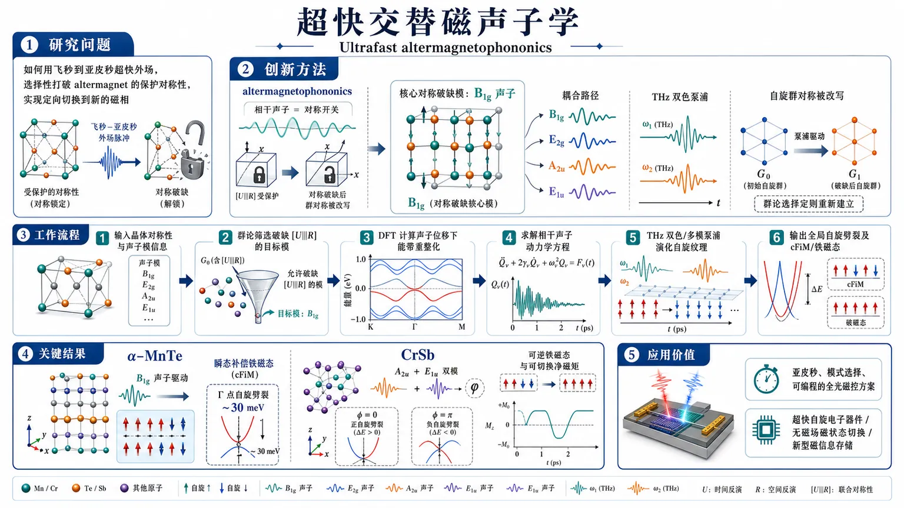
研究问题如何利用超快外场在飞秒到亚皮秒尺度选择性打破 altermagnet 的保护对称性，实现在不依赖复杂交换参数的前提下，将其定向切换到新的磁相。创新方法提出 altermagnetophononics：用相干声子作为“对称性开关”，通过群论筛选可破缺保护自旋劈裂的声子模；以 B1g 为核心破缺模，结合双色 THz 和中介模 E2g/A2u/E1u 的协同驱动，直接改写 spin-group symmetry。工作流程输入晶体对称性与声子模信息；先用群论识别可打断 [U||R] 的目标模，再用密度泛函计算声子位移下的能带重整化，接着求解相干声子动力学方程，在 THz 双色/多模泵浦下演化自旋纹理，最终输出全局自旋劈裂及 cFiM/铁磁态。关键结果在 α-MnTe 中，单一 B1g 即可将 altermagnet 推入瞬态 compensated ferrimagnetic 态，Γ 点自旋劈裂约 30 meV；A2u+E1u 双模也可实现同类转变，且相位可控制劈裂正负；在 CrSb 中还能得到可翻转净磁矩的 ferrimagnetic 态。应用价值为 altermagnet 提供亚皮秒、模式选择、可编程的全光磁控方案，可用于超快自旋电子器件、无磁场磁状态切换和新型磁信息存储。第一部分：核心概览
围绕 altermagnet 的超快操控，提出 altermagnetophononics：利用相干声子按晶体对称性选择性破缺，触发 α-MnTe 从 altermagnetic 态向 compensated ferrimagnetic (cFiM) 的亚皮秒转变，并推广到多模驱动与 CrSb 等体系。核心贡献在于把静态晶体对称性工程推进为可预测的超快声子调控框架，同时避免依赖复杂的微观交换参数，直接以 spin-group symmetry 统摄磁相变路径。
---
第二部分：结构化快速回顾
《Ultrafast altermagnetophononics》（None，）
背景：altermagnet 具有动量依赖的非相对论自旋劈裂，但其超快调控几乎未被系统研究。
方法：用群论识别能破坏保护自旋劈裂的声子模，结合密度泛函能带重整化与相干声子动力学方程，考察 THz 双色和多模驱动。
结果：在 α-MnTe 中，单一 B1g 模可把 altermagnet 推入 cFiM，在 Γ 点产生约 30 meV 自旋劈裂；双模 A2u+E1u 也可实现类似转变；CrSb 中可得到可翻转净磁矩的铁磁型态。
讨论：机制本质是 coherent-phonon-induced symmetry breaking，控制对象不是交换常数本身，而是保护 altermagnetism 的空间对称性。
局限：缺少直接实验验证；主要基于理想晶格位形、对称性分析与数值动力学，未给出寿命、热涨落、耗散和实验可达阈值的完整图景。
结论：相干声子可作为超快、模式选择性的“对称性开关”，为 altermagnet 的全光自旋电子学提供新路线。
---
第三部分：逐章节冷凝解析
Abstract
Altermagnet 超快操控的研究空白被直接锁定
关键问题被定义为 altermagnet 的动态调控尚未展开：*“their ultrafast dynamical manipulation remains largely unexplored”*。这把论文的贡献空间限定在“超快”而非静态工程。
提出了 altermagnetophononics 作为新范式
核心概念被明确命名为：*“we establish altermagnetophononics as an efficient route for magnetic control via selective symmetry breaking induced by coherent phonons”*。这不是传统磁声子学的参数拟合路线，而是 coherent phonons 触发 symmetry breaking 的对称性控制路线。
α-MnTe 中的单模 B1g 触发相变
在 prototypical altermagnet α-MnTe 中，*“the targeted excitation of B1g mode selectively lifts the symmetry constraints protecting altermagnetism (AM), driving ultrafast transition into a transient compensated ferrimagnetic (cFiM) phase characterized by a global spin splitting without net magnetization”*。这里最关键的物理图像是：
- 自旋劈裂从只在特定动量点出现，变成 global spin splitting；
- 但总磁矩仍为零，形成 compensated ferrimagnetic。
机制具有可推广性
推广并非停留在单一材料：*“the proposed mechanism is broadly applicable”*，并通过 *“a multi-mode symmetry breaking pathway”* 与 CrSb 中 *“a ferrimagnetic order with reversible magnetic moment”* 证明泛化性。
这意味着机制同时覆盖：
- 单模破缺；
- 多模协同破缺；
- 金属型 altermagnet 的可逆净磁矩生成。
---
Symmetry-dictated control scheme
altermagnetism 的本质是 spin-group symmetry 约束下的动量依赖自旋劈裂
定义被压缩为：*“the defining feature of altermagnet, i.e., momentum-dependent nonrelativistic spin splitting, is governed by the spin-group symmetries [U||R]”*。
其中 U 是翻转自旋的自旋空间旋转，R 是把反平行自旋亚晶格映射到彼此的实空间操作。
平衡态满足严格的动量-自旋对应关系
在平衡态下，电子结构满足 *“E↑(k)=E↓(Rk)”*。只有在 *“Rk=k”* 的波矢上，才出现自旋简并。
这说明 altermagnet 的自旋纹理不是普通铁磁那样“处处劈裂”，而是被 空间对称性 精确编织出来。
声子相当于对称性选择性的外场
相干声子被描述为 *“a direct driving that selectively lowers the crystal symmetry to a subgroup compatible with their irreducible representations”*。
这一步的重要性在于：
- 声子不是简单改变量化参数；
- 声子通过其 irreducible representation 直接决定允许保留哪些对称操作。
α-MnTe 的 B1g 模精确打断保护 altermagnetism 的六重旋转相关操作
结构中，反平行 Mn 亚晶格由 *“a non-symmorphic sixfold screw-axis rotation C6z t1/2”* 联系。
激发 B1g 后，*“selectively annihilates the C6z-related operations and reduces the spin group to [E||D3d]”*。
这是从 altermagnet 到普通 ferro-/ferrimagnet 对称类的跃迁。
B1g 模的微观位移模式决定其破缺能力
该模被描述为 *“out-of-phase motion of the nonmagnetic Te atoms along the c-axis”*。
这类位移使两侧 Mn 亚晶格“晶体学上不等价”，从而 *“odd under the spatial operations in C6zD3d”*。
也就是说，破缺的不是某个局域磁相互作用，而是支配自旋劈裂的 global symmetry。
带结构重整化显示全布里渊区自旋劈裂
对称破缺后的带结构中，*“a QB₁g-dependent energy splitting emerges globally between the spin-up and spin-down manifolds”*，并且 *“the spin degeneracy can also be gaped out at Γ”*。
Γ 点劈裂是最直接、最适合光电子探测的信号。
Γ 点能隙劈裂近线性增长，0.1 Å√u 时约 30 meV
定量结果给出：*“ΔE scales almost linearly with increased phonon amplitude and reaches ∼30 meV at QB₁g=0.1 Å√u”*。
这是非常具体的强度标尺，说明声子位移幅度与自旋劈裂之间存在近线性调控关系。
零净磁矩与全局自旋劈裂并存，形成 cFiM
最关键的悖论被化解为：*“the system maintains a robust antiferromagnetic order... as the gapped electronic structure of MnTe ensures that the spin-up and spin-down channel electrons are canceled out in its fully occupied valence bands”*。
因此出现的是 *“a novel phase... compensated ferrimagnetism (cFiM)”*：
- 有全局自旋分裂；
- 无实空间净磁矩；
- 不是普通铁磁，也不是原始 altermagnet。
---
Coherent switching of altermagnetics
B1g 模本身是“沉默”的，必须借助非线性声子路径间接激发
关键限制是：*“the B1g mode is neither infrared (IR) nor Raman active in the D6h point group of α-MnTe”*。
因此不能直接用常规 IR 吸收或 Raman 散射驱动。
常规三阶非线性声子路径被对称性禁止
更强的限制是：*“a direct third-order coupling between the IR modes and the B1g mode is also symmetry forbidden”*。
这意味着传统 nonlinear phononics 的 cubic anharmonicity 路线失效。
提出双色 THz 和和频激发路线
替代方案是：*“a two-color sum-frequency excitation mediated by a Raman-active E2g mode”*。
这一路线利用 E2g 作为中介，把 THz 场的频率组合转换成对 B1g 的有效驱动。
模型势能给出清晰的耦合结构
势能写成
*“V = 1/2 Ω²B₁g Q²B₁g + 1/2 Ω²E₂g Q²E₂g + ε0 R E1²⁽ω1,t) QE₂g + γ E1(ω1,t) E2(ω2,t) QE₂g QB₁g”*。
其中：
- Ω 是声子频率；
- R 是 Raman tensor；
- γ 是非线性耦合系数。
这个式子说明 E2g 先被泵浦，再通过耦合项把能量传递给 B1g。
双泵场的偏振与频率条件被严格约束
两束泵浦被设为 *“polarized respectively along the [100] and [001] direction”*。
中心频率选为 *“ω1=1.37 THz and ω2=5.00 THz”*，并满足 *“ω1=ΩE2g/2”* 与 *“ω1+ω2=ΩE2g+ΩB1g”*。
这不是任意参数，而是为了实现高效率和频选择性。
E2g 只是中介，不是相变本体
关键判据是：*“the E2g phonon is necessary for the nonlinear process, the mode itself preserves the essential real-space symmetry operations... and its excitation alone does not induce a transition to the compensated ferrimagnetic phase”*。
即：
- E2g 负责把驱动送进去；
- B1g 才是打破保护对称性的真正开关。
动力学结果证明磁性切换只跟 B1g 轨道绑定
数值解方程后，*“the global lifting of spin degeneracy remains uniquely tied to the dynamical symmetry breaking induced by the B1g phonon coherence”*。
这说明磁相变具有很强的 mode selectivity，不是“多个声子一起乱改”。
THz 场强越大，B1g 幅度和自旋劈裂越强
结果显示 *“the maximum achievable phonon amplitude QB₁gMax increases significantly with the THz field strength”*，并伴随更强的 *“spin polarization in the induced cFiM phase”*。
这给出外场可控性：场强 → 声子幅度 → 自旋劈裂。
方法学上的意义是不再依赖复杂磁相互作用参数
结论性表述是：*“guided and understood through crystal symmetry, without necessitating the calculation of complex magnetic interactions”*。
这把问题从“精确拟合交换参数”降维为“识别哪些对称性被打破”。
---
Discussion
B1g 不是唯一可行路径，多模协同同样有效
多模一般化被直接提出：*“the framework of altermagnetophononics is not restricted to the excitation of one or two specific modes”*。
核心条件只剩下：*“their collective vibrational pattern breaks the relevant spin group symmetries [U||R]”*。
MnTe 中 A2u 和 E1u 可通过协同激发诱导 cFiM
相图显示：*“the cFiM phase emerges only when the two modes are simultaneously excited”*。
且 *“the zone-center spin splitting can be effectively controlled by the relative phase of two modes”*。
因此，相位差成为新的控制维度，而不只是振幅大小。
相对相位决定 ΔE 的正负
定量上，*“ΔE can become positive (negative) when the phonon amplitudes QA₂ᵤ and QE₁ᵤ are of the same (opposite) sign”*。
这说明多模声子不仅能“开关”磁相，还能切换自旋劈裂的符号。
CrSb 中实现的是带净磁矩的可逆铁磁型态
在金属 CrSb 中，*“a lattice distortion along the B1g phonon mode lifts the compensation between the antiferromagnetically aligned Cr moments”*，并驱动到 *“a ferrimagnetic state displaying a finite net magnetization”*。
与 MnTe 不同，这里出现的是真实的净磁矩。
CrSb 的磁矩方向可以通过位移符号翻转
关键可逆性是：*“its direction fully reversible by flipping the sign of effective displacement QB₁g”*。
这使声子位移不仅是开关，还是磁矩方向的反向旋钮。
金属填充导致不同于 MnTe 的电子不对称性
解释被归因于：*“the metallic electronic fillings of CrSb, where the spin-up and spin-down manifolds become asymmetric upon the B1g distortion”*。
因此，同样的对称破缺在不同电子结构里产生不同磁响应。
机制可扩展到其他对称类 altermagnet
泛化进一步指向 RuO2-type：*“the B2g mode plays the analogous role”*。
这说明 altermagnetophononics 不是 MnTe 专属，而是可跨材料家族迁移的规则。
---
Conclusion
提出了一个由对称性驱动的超快控制框架
最终归纳为：*“we have proposed altermagnetophononics, a symmetry-driven framework for ultrafast control of altermagnetic order via coherent phonon excitation”*。
这一定义把核心思想固定为：coherent phonon + symmetry breaking + ultrafast control。
相干声子可把 altermagnet 推入不同磁相
总结性结果是：*“coherent phonons can break the real-space symmetry operations protecting the alternating spin texture, and drive the system into a distinct magnetic phases”*。
转变目标不止一种：
- cFiM in MnTe；
- ferrimagnetic state in CrSb。
α-MnTe 中展示了单模与双模两条路径
单模路径：*“excitation of either a single B1g mode”*。
双模路径：*“the infrared A2u and E1u modes simultaneously”*。
两者都能导向 *“a compensated ferrimagnetic order”*，即全局自旋分裂但无净磁矩。
THz 和频驱动给出高模式选择性的亚皮秒切换
最终实验可感知的路线是：*“by pumping the B1g phonon coherently via a terahertz sum-frequency route, we observe a highly coherent and mode-selective renormalization in the altermagnetic spin texture”*。
“highly coherent”和“mode-selective”是该方案优于一般热激发的关键。
技术前景指向全光自旋电子学
结尾明确连接应用：*“advance both fundamental understanding and technological applications towards all-optical control of spintronic devices”*。
技术目标非常明确：用声子作为超快、选择性、对称性可编程的磁控元件。
---
第四部分：深度理解与语言支持
1. 术语解析
Altermagnetism
不是普通反铁磁，也不是铁磁。其关键特征是 collinear antiferromagnet 结构中仍存在 momentum-dependent nonrelativistic spin splitting。
微妙差别在于：
- 反铁磁强调实空间净磁矩为零；
- altermagnet 还要求动量空间中自旋分裂呈对称性决定的交替纹理。
Compensated ferrimagnetism (cFiM)
看起来矛盾，但物理上成立。
含义是：
- band structure 中存在全局自旋劈裂；
- real-space 的净磁矩仍为零或近零。
区别于普通 ferrimagnet，cFiM 强调“补偿”与“自旋分裂”并存。
Spin-group symmetry [U||R]
这是比普通空间群更适合磁性体系的语言。
- U：自旋空间中的翻转/旋转操作；
- R：实空间中的晶体对称操作。
只有两者联立，才能编码 altermagnet 的动量依赖自旋劈裂。
Coherent phonon
不是热平衡中的随机声子云，而是具有确定相位的集体晶格振动。
微妙点在于：
- coherent 强调相位锁定；
- 因而能像外场一样“定向”改变晶体对称性。
Sum-frequency excitation
双色泵浦把两个频率组合成一个目标模的驱动。
这里不是简单叠加，而是通过非线性耦合让中介模（E2g）把能量转送到目标模（B1g）。
学术上它属于 nonlinear phononics 的一种更精细的选择性实现。
---
2. 疑难查证
为什么 B1g 既能打破 altermagnetism，又不必产生净磁矩？
关键不在“有没有自旋劈裂”，而在“占据的电子数是否保持补偿”。
在 α-MnTe 中，B1g 破坏了保护 altermagnet 的空间操作，使整个布里渊区出现自旋分裂；但材料本身是绝缘体，完全占据的价带仍可保持上下自旋通道总和相消，所以净磁矩仍为零。
因此出现的是 cFiM：电子能带已不再是 altermagnetic 对称型，但实空间磁矩仍被补偿。
为什么 E2g 需要出现，却不能单独实现磁相变？
E2g 的角色更像“能量通道”而不是“对称性破缺者”。
它参与非线性耦合并把双色 THz 的能量转到目标模，但自身仍保留关键空间对称性，所以单独激发不会解除保护自旋劈裂的操作。
这类设计体现了“中介模”和“破缺模”的功能分工。
为什么同样是 B1g，MnTe 和 CrSb 的结果不同？
差异来自电子填充：
- MnTe 更接近绝缘体，适合形成 cFiM；
- CrSb 是金属，B1g 使上下自旋能带占据不再对称，因此出现 finite net magnetization。
也就是说，对称性决定“能不能变”，电子填充决定“变成哪一种磁相”。
---
第五部分：创新评估与关联
1. 创新性判断
相对过去 2–5 年相关工作的新颖性主要在四点：
- 把 altermagnet 的调控从静态推进到超快动态
过去 2–5 年大量工作集中在 static crystal symmetry engineering、材料发现和能带表征；这里把问题推进到 subpicosecond 尺度的声子操控。
- 用“对称性选择性破缺”替代“交换参数拟合”
传统 magnetophononics 依赖 spin-phonon coupling constants 预先建模；这里直接利用 spin-group symmetry 识别可行声子模，方法论更普适，也更可预测。
- 首次给出 altermagnet → cFiM 的超快转换路线
过去对 compensated ferrimagnetism 的讨论有限；这里在 α-MnTe 中给出清晰路径，并定量到 ΔE ≈ 30 meV 级别。
- 把多模声子协同纳入统一框架
不止单一 B1g，还证明 A2u+E1u 的相位协同也能实现同类相变，并在 CrSb 中实现可逆净磁矩。
这把 altermagnetophononics 从“特殊模式技巧”提升为“材料可迁移的控制原理”。
解决的前人问题
- 前人缺少对 altermagnet 在超快尺度上如何被操控的系统方案。
- 前人难以绕开对模式分辨耦合常数的依赖。
- 前人没有把 global spin splitting without net magnetization 作为可设计目标在声子驱动下实现。
- 前人也缺少把单模、双模、金属/绝缘体几类 altermagnet 统一起来的对称性框架。
一句话判断
这是一篇把 altermagnetism 的动态调控从“材料特例”提升为“对称性普适规律”的工作，核心创新是 coherent phonon–driven symmetry breaking 作为超快磁相工程的通用语言。
-
15
📊 含图深析
📄 摘要：理论证明在无自旋轨道耦合的轨道交替磁体中，携带角动量的轴向声子可具有 d 波角动量纹理。模型采用含 d 波环电流序的紧束缚电子体系，在 Born-Oppenheimer 近似下通过分子贝里曲率引入电声耦合，显示电子态的 d 波轨道磁矩纹理可转移到声子角动量。
💡 亮点：d 波环电流序可把轨道交替磁的角动量纹理复制到轴向声子，形成声子角动量分束效应。该机制把交替磁性从电子自旋劈裂扩展到手性晶格激发。
📖 展开分析 + 配图
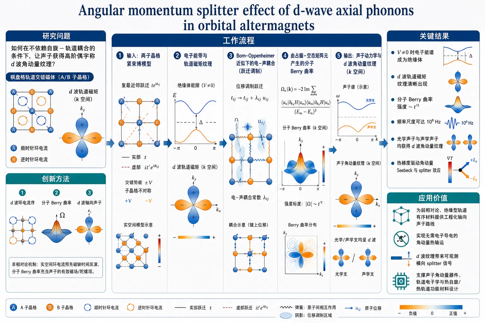
研究问题如何在不依赖自旋—轨道耦合的条件下，让原本不自发破缺时间反演的声子获得高阶偶宇称的 d 波角动量纹理；核心图像是：棋盘格轨道交错磁体中的电子环电流像一组交替旋转的小电流环，把动量空间中的四瓣 d 波轨道磁矩图案“印”到声子上。创新方法提出“d 波环电流序 → 分子 Berry 曲率 → d 波轴向声子”的非相对论机制。Aha 点在于：不通过自旋和 SOC，而是用实空间环电流预先破缺时间反演，再让离子位移参数空间中的分子 Berry 曲率充当声子的有效磁场/陀螺项，把电子 d 波轨道磁矩纹理转移给光学与声学声子。工作流程输入为棋盘格两亚晶格紧束缚模型：复最近邻跃迁相位形成环电流，交错势打开绝缘能隙，A/B 亚晶格参数不等产生轨道交错磁结构；随后计算电子能带与 d 波轨道磁矩；在 Born–Oppenheimer 近似下加入由最近邻跃迁调制产生的电子—声子耦合；用占据带—未占据带矩阵元求分子 Berry 曲率；最后把该曲率写入声子动力学，得到动量空间中带有四瓣符号翻转的 d 波声子角动量纹理，并预测热梯度驱动的纵向与横向角动量流。关键结果电子能谱在交错势 V≠0 时成为绝缘体，并显示 d 波轨道磁矩纹理；分子 Berry 曲率由电子—声子耦合二阶产生，强度按 t′² 标度，数值频率尺度约可达 10⁹ Hz；光学声子和声学声子分支都获得 d 波角动量纹理，区别于传统铁磁型平台常见的 s 波轴向声子；热梯度可驱动角动量 Seebeck 效应和角动量 splitter 效应。应用价值为弱相对论、绝缘型轨道有序材料提供工程化轴向声子的路线；可把声子作为热流中的角动量载体，实现无需电子导电的角动量热输运；d 波纹理带来的横向 splitter 效应可作为实验探测信号，也为声子角动量器件、轨道电子学和热自旋/热轨道功能材料提供设计原则。第一部分：核心概览
该研究提出轨道交错磁体中无需自旋—轨道耦合即可产生d 波轴向声子的机制：d 波环电流序诱导电子轨道磁矩纹理，再经分子 Berry 曲率转移给声子。核心贡献在于把轴向声子的工程平台从传统铁磁型 s 波纹理扩展到非相对论的高阶偶宇称 d 波纹理，并提出角动量 Seebeck 与 splitter 效应作为热输运探测方案。
---
第二部分：结构化快速回顾
《Angular momentum splitter effect of d-wave axial phonons in orbital altermagnets》（None，）
背景
轴向声子是携带有限角动量的量子化晶格振动。既有研究多集中于非中心对称体系或铁磁点群体系，产生的声子角动量纹理通常为 s 波。交错磁体近年揭示出 d/g/i 波偶宇称动量纹理，但声子能否在弱相对论效应之外获得类似高阶纹理仍是开放问题。
方法
构建棋盘格晶格上的两带紧束缚模型，引入复最近邻跃迁相位 (φ)、不同次近邻跃迁 (t_A≠ t_B)、交错势 (V_A=-V_B=V)，形成 d 波环电流序。在 Born–Oppenheimer 近似下，通过电子—声子耦合核计算分子 Berry 曲率，并以其修正声子动力学。
结果
电子谱中出现由环电流导致的d 波轨道磁矩纹理；体系在 (V≠0) 时进入绝缘态。分子 Berry 曲率由电子—声子耦合二阶产生，标度为 (t'²)，并具有与轨道磁矩相联系的动量结构。摘要给出的结论是光学与声学声子分支均获得 d 波角动量纹理。
讨论
机制不依赖自旋—轨道耦合，因为时间反演对称性已由实空间环电流序破缺，能够直接经分子 Berry 曲率作用于声子。相较于依赖 SOC 的交错磁体声子机制，该路径更适合弱相对论材料和绝缘轨道有序体系。
局限
给定内容主要是理论模型与解析推导，缺乏实验材料实现、第一性原理验证、有限温度效应、无序影响、声子寿命、散射机制和可观测信号量级的完整评估。已提供正文在第三节 Eq. (24) 附近截断，第四至第六节与附录细节不完整。
结论
轨道交错磁体可作为工程化 d 波轴向声子的平台；分子 Berry 曲率是连接电子环电流序与声子角动量的关键桥梁；热梯度驱动的角动量 Seebeck 效应与角动量 splitter 效应构成主要探测思路。
---
第三部分：逐章节冷凝解析
Abstract
- Nonrelativistic generation of d-wave axial phonons
轴向声子被定义为携带有限角动量的晶格振动量子，并且可在无自旋—轨道耦合条件下获得 d 波角动量纹理。核心命题直接表述为：*"We theoretically demonstrate that axial phonons, lattice vibration quanta carrying finite angular momentum, can host a d-wave angular momentum texture in orbital altermagnets in the absence of spin-orbit coupling."* 这把高阶声子角动量纹理的来源从相对论 SOC 转向轨道环电流序。
- Minimal tight-binding loop-current model
理论平台是具有 d 波环电流序的最小电子紧束缚模型，该序破缺时间反演对称性。模型目标被限定为：*"We consider a minimal electronic tight-binding model with d-wave loop-current order that breaks time-reversal symmetry."* 因此，声子的有效时间反演破缺不是来自自旋，而是来自电子轨道运动。
- Molecular Berry curvature transfers orbital texture to phonons
在 Born–Oppenheimer 近似下，电子—声子耦合通过分子 Berry 曲率进入声子动力学，并将电子态的 d 波轨道磁矩纹理转移给声子。关键机制为：*"Within the Born-Oppenheimer approximation, we incorporate electron-phonon coupling via the molecular Berry curvature and show that the underlying d-wave orbital magnetic moment texture of the electronic state is transferred to the phonons without requiring the relativistic spin-orbit coupling."*
- Thermal angular-momentum transport functionality
该机制不仅产生纹理，还导向功能效应：角动量 Seebeck 效应与角动量 splitter 效应。摘要中明确指出：*"including angular-momentum Seebeck and splitter effects, corresponding to longitudinal and transverse angular-momentum currents driven by a temperature gradient."* 这里的 longitudinal/transverse 区分对应热梯度驱动下的纵向与横向角动量流。
---
I Introduction
- Axial phonons as angular-momentum-carrying quasiparticles
轴向声子/手性声子是携带有限角动量的量子化晶格振动，研究价值覆盖基础物理与应用。原文定义为：*"Axial (or chiral) phonons are quantized lattice vibrations that carry finite angular momentum."* 其应用语境包括超快动力学、磁性、轨道电子学与强关联体系：*"they have emerged as a unifying theme across diverse areas of condensed matter physics, including ultra-fast dynamics, magnetism, orbitronics, and strongly correlated systems."*
- Symmetry condition for quasiparticle angular momentum
准粒子角动量 (boldsymbolJbₒₗdₛyₘbₒₗₖ) 非零要求破缺空间反演或时间反演。严格对称性条件写作：*"a finite angular momentum (boldsymbolJbₒₗdₛyₘbₒₗₖ) of a quasiparticle requires the breaking of either inversion or time-reversal symmetry."* 在非中心对称但时间反演对称体系中，角动量为奇宇称：(boldsymbolJbₒₗdₛyₘbₒₗₖ=-boldsymbolJ₋bₒₗdₛyₘbₒₗₖ)，原文为：*"In non-centrosymmetric but time-reversal symmetric systems, angular momentum is odd in momentum (boldsymbolJbₒₗdₛyₘbₒₗₖ=-boldsymbolJ₋bₒₗdₛyₘbₒₗₖ)."*
- Even-parity axial phonons require magnetic background
偶宇称轴向声子满足 (boldsymbolJbₒₗdₛyₘbₒₗₖ=boldsymbolJ₋bₒₗdₛyₘbₒₗₖ)，需要破缺时间反演且保持反演对称性。原文强调：*"realizing axial phonons with even parity, characterized by (boldsymbolJbₒₗdₛyₘbₒₗₖ=boldsymbolJ₋bₒₗdₛyₘbₒₗₖ), requires broken time-reversal symmetry while preserving inversion symmetry."* 难点在于声子本身不能自发破缺时间反演：*"phonons cannot intrinsically break time-reversal symmetry; instead, they acquire effective time-reversal symmetry breaking through coupling to a suitable magnetic background."*
- Molecular Berry curvature as effective real-space gauge field
分子 Berry 曲率在 Born–Oppenheimer 框架下为晶格坐标的绝热演化提供规范不变量描述，并作为实空间有效规范场修正声子动力学。关键句为：*"Acting as an effective real-space gauge field, the MBC modifies the phonon dynamics and can generate even-parity axial phonons when the electronic system breaks time-reversal symmetry."* 因此，电子态的时间反演破缺可以通过几何相效应投射到声子。
- Previous MBC studies mainly yielded s-wave phonon angular momentum
既有 MBC 机制研究多面向铁磁点群兼容电子体系，诱导声子表现为 s 波角动量纹理，甚至在布里渊区中心具有有限角动量。原文限定为：*"existing studies have focused on electronic systems compatible with ferromagnetic point groups, where the induced axial phonons exhibit an s-wave angular-momentum texture in momentum space and can therefore possess a finite angular momentum at the Brillouin-zone center."* 这说明高阶偶宇称纹理尚未被常规平台充分覆盖。
- Altermagnetism supplies higher-order even-parity textures
交错磁体是磁补偿材料，其电子能带具有非相对论自旋劈裂，形状因子为 d/g/i 波。原文概括为：*"Altermagnets are magnetically compensated materials whose electronic bands exhibit non-relativistic spin-splitting with a d-, g-, or i-wave form factor."* 其热/电输运功能包括自旋依赖 Seebeck 效应与自旋 splitter 效应：*"spin-dependent Seebeck and spin-splitter effects, corresponding to longitudinal and transverse spin currents driven by an electric field."*
- Insulating altermagnets motivate phonon-centered heat and angular-momentum transport
许多交错磁体是绝缘体，使得声子作为主要热载流子特别重要。原文指出：*"many established and candidate altermagnets are insulating, placing their magnetic excitations—magnons—at the center of thermally driven spin transport."* 随后的问题自然转向声子是否也能获得超越 s 波的偶宇称角动量纹理：*"can phonons, as the primary heat carriers in insulating materials, acquire beyond s-wave even-parity angular momentum textures through mechanisms that are not limited by the typically weak scale of relativistic effects?"*
- Orbital altermagnets replace spin texture by orbital loop-current texture
轨道交错磁体通过轨道自由度而非自旋自由度实现超越 s 波的偶宇称。其实空间时间反演破缺来自环电流序，即晶格小 plaquette 携带轨道磁矩。原文为：*"Orbital altermagnets realize beyond-s-wave even-parity symmetries through orbital rather than spin degrees of freedom."* 以及：*"they break time-reversal symmetry in real space via loop-current order, where individual lattice plaquettes carry orbital magnetic moments whose spatial arrangement encodes the underlying altermagnetic symmetry."*
- Checkerboard minimal model and central physical claim
最小模型建立在棋盘格晶格上，具有环电流和 d 波轨道磁矩纹理。原文说明：*"we consider a minimal tight-binding model on the checkerboard lattice that hosts loop currents and exhibits an altermagnetic d-wave orbital magnetic moment texture in the electronic spectrum."* 由于时间反演已在实空间破缺，声子不需 SOC 即可获得对应纹理：*"Because time-reversal symmetry is broken at the real-space level it is directly transferred to the phonons through the molecular Berry curvature without the need for relativistic interactions."*
- Optical and acoustic phonons both acquire d-wave angular momentum
理论结论覆盖光学声子与声学声子。原文明确写道：*"Consequently, both optical and acoustic phonon branches acquire a d-wave angular momentum texture in reciprocal space."* 这扩大了可被热输运操控的声子分支范围。
- Proposed detection via angular-momentum Seebeck and splitter effects
检测方案对应温度梯度驱动的角动量流：纵向为 Seebeck，横向为 splitter。原文表述为：*"we propose angular-momentum Seebeck and splitter effects, corresponding to longitudinal and transverse angular-momentum currents driven by a temperature gradient."*
---
II Orbital d-wave altermagnet: a minimal tight binding model
- Checkerboard tight-binding Hamiltonian encodes d-wave loop-current order
电子体系采用棋盘格晶格两亚晶格模型，哈密顿量包含复最近邻跃迁、次近邻跃迁和交错势。模型定义为：*"we begin by introducing the electronic system and considering a tight-binding Hamiltonian on the checkerboard lattice that captures the orbital altermagnet with d-wave loop-current order shown in Fig. 1."* 实空间哈密顿量为
[
Hₑₗ
=
-tsumłₐₙgₗₑ ₗₗ'åₙgₗₑsumκ,κ'
eⁱφₗκl'κ'c^daggerₗκcₗ'κ'
-
sumłₐₙgₗₑłₐₙgₗₑ ₗₗ'åₙgₗₑåₙgₗₑsum_κ t_κ c^daggerₗκcₗ'κ
+
sumₗ,κV_κ c^daggerₗκcₗκ.
]
- Spinless fermions isolate orbital physics
电子算符被设为无自旋正则费米子，使模型专注于轨道环流而非自旋劈裂。原文说明：*"where (cₗκdagger) and (cₗκ) are spinless canonical fermionic creation and annihilation operators, respectively."* 这也是无 SOC 机制能够成立的建模基础。
- Two-sublattice geometry fixes internal basis positions
单胞含 A/B 两个亚晶格，位置为 (boldsymbolτA=0)，(boldsymbolτB=a(hatboldsymbolx+hatboldsymboly)/2)。原文给出：*"We choose the basis vectors of the two sublattices within the unit cell as (boldsymbolτA=0) and (boldsymbolτB=a(hatboldsymbolx+hatboldsymboly)/2), where (a) is the lattice constant, which is set to unity unless stated otherwise."*
- Loop-current order is encoded by hopping phases
最近邻跃迁相位 (φₗκl'κ'=ηₗκl'κ'φ)，其中 (η=±1) 由跃迁方向决定。物理含义为：*"The phase (φₗκlprⁱmeκprⁱme=ηₗκlprⁱmeκprⁱmeφ), whose sign (ηₗκlprⁱmeκprⁱme=± 1) depends on the direction of the nearest-neighbor hopping, encodes the loop current order."* 该相位在数值中取 (φ=π/4)。
- Particle-hole symmetry is imposed by opposite second-neighbor hoppings
为简化分析，取 (t_A=-t_B)，从而使体系具有粒子—空穴对称性。原文写道：*"From here on, we choose for simplicity (tA=-tB) that renders the system particle-hole symmetric."* 数值参数为 (t_A/t₀₌₋ₜ_B/t₀₌₀.5)。
- Momentum-space Hamiltonian has two-band sublattice form
通过不含基矢位置的 Fourier 变换，得到两带 Bloch 核：
[
Hbₒₗdₛyₘbₒₗₖ=
beginpmatrix
łambdabₒₗdₛyₘbₒₗₖ & Δbₒₗdₛyₘbₒₗₖ
Δbₒₗdₛyₘbₒₗₖ^* & -łambdabₒₗdₛyₘbₒₗₖ
endpmatrix.
]
原文定义：*"The Bloch Hamilton kernel (Hbₒₗdₛyₘbₒₗₖ) contains (łambdabₒₗdₛyₘbₒₗₖ=2tA(o̧s kₓ₊ₒ̧s k_y)+V)"*，以及
[
Δbₒₗdₛyₘbₒₗₖ
=
tłeft[
e⁻ⁱφ(1+e⁻ⁱ⁽kₓ₊ₖ_y⁾)
+eⁱφ(e⁻ⁱkₓ+e⁻ⁱk_y)
i̊ght].
]
- Band energies are symmetric around zero
对角化给出两条电子能带：
[
Ebₒₗdₛyₘbₒₗₖ±
=
±sqrt|Δbₒₗdₛyₘbₒₗₖ|²⁺łambdabₒₗdₛyₘbₒₗₖ².
]
原文为：*"Diagonalizing (Hbₒₗdₛyₘbₒₗₖ) provides two electronic bands, with energies (Ebₒₗdₛyₘbₒₗₖ±=±sqrt|Δbₒₗdₛyₘbₒₗₖ|²⁺łambdabₒₗdₛyₘbₒₗₖ²)."* 这与前述 (t_A=-t_B) 的粒子—空穴对称性一致。
- Staggered potential opens an insulating gap
当 (V=0) 时，谱在 (X) 与 (Y) 高对称点发生带接触；研究聚焦绝缘态，因此取 (V≠0)。原文写道：*"For (V=0), the spectrum is gapless, with band-touching points at the (X) and (Y) high-symmetry points. Since we focus on the insulating regime, we set (V≠0) from here on."* 数值中 (V/t₀₌₀.3)。
- Magnetic point group supports d-wave magnetic order
电子哈密顿量磁点群为 (4'/mm'm)。关键对称操作包括 (TC₄z,₊)、(TMₓ)、(Mₓy)。原文列出：*"The magnetic point group of (Hₑₗ) is (4prⁱme/mmprⁱmem) in Hermann-Mauguin notation."* 并强调：*"These symmetries are compatible with a d-wave magnetic order."*
- Bare time reversal and PT are not symmetries
体系单独的时间反演 (T) 不是对称性；当两亚晶格不同，即 (t_A≠ t_B) 或 (V≠0) 时，(PT) 也不是对称性。原文为：*"Note in particular that time-reversal (T) by itself is not a symmetry. Nor is (PT) symmetry ... as long as the two sublattices are different: (tA≠ tB) or (V≠0)."* 这为 MBC 非零提供必要条件。
- Orbital magnetic moment is computed in modern orbital magnetization theory
采用现代轨道磁化理论计算能带轨道磁矩 (boldsymbolmbₒₗdₛyₘbₒₗₖₙ)，并在二维中仅有 (z) 分量非零。原文说明：*"we make the d-wave texture explicit in momentum space by computing the orbital magnetic moments (boldsymbolmbₒₗdₛyₘbₒₗₖₙ) of the two bands within the modern theory of orbital magnetization."* 零温半填充假设为：*"We assume an insulating zero-temperature limit at half filling, where the lower band with energy (Ebₒₗdₛyₘbₒₗₖ₋) is fully occupied."*
- Orbital moment formula uses interband velocity matrix elements
轨道磁矩为
[
m^zbₒₗdₛyₘbₒₗₖₙ
=
-frace2chbar
sumₙ'≠ ₙ
Im[v^xₙₙ'v^yₙ'ₙ]
frac1Ebₒₗdₛyₘbₒₗₖₙ-Ebₒₗdₛyₘbₒₗₖₙ'.
]
原文强调：*"In two dimensions, only the out-of-plane component of the orbital moment ... is nonzero."* 其中 (e>0)，(c) 为光速，速度矩阵元由 (partialₖ_ₓøverlineHbₒₗdₛyₘbₒₗₖ)、(partialₖ_yøverlineHbₒₗdₛyₘbₒₗₖ) 给出。
- Gauge transformation is required for lattice-periodic Bloch functions
计算轨道磁矩必须使用 lattice-periodic Bloch 函数，因此需要对 (Hbₒₗdₛyₘbₒₗₖ) 作幺正变换：
[
øverlineHbₒₗdₛyₘbₒₗₖ=U^daggerbₒₗdₛyₘbₒₗₖHbₒₗdₛyₘbₒₗₖUbₒₗdₛyₘbₒₗₖ.
]
原文解释：*"This transformation is required because orbital magnetic moment in Eq. (8) is formulated in terms of the lattice-periodic part of the Bloch wave function."* 这一区分对紧束缚模型中的基矢相位非常关键。
- Both bands share the same d-wave orbital magnetic moment texture
结果显示 (m^zbₒₗdₛyₘbₒₗₖ₊=m^zbₒₗdₛyₘbₒₗₖ₋=m^zbₒₗdₛyₘbₒₗₖ)，并在整个第一布里渊区呈现 d 波纹理。原文为：*"We plot (mbₒₗdₛyₘbₒₗₖ₊z=mbₒₗdₛyₘbₒₗₖ₋z=mbₒₗdₛyₘbₒₗₖz) within the first Brillouin zone ... The d-wave texture becomes fully apparent in the full momentum dependence of (mbₒₗdₛyₘbₒₗₖz)."*
- Numerical scales define a concrete model regime
参数表固定了电子、离子、声子与耦合尺度：(t₀₌₁,eV)，(M₀₌₁₀⁻²⁵,kg)，(n₀₌₀.1,N/m)，(a₀₌₁,Å)，(ǎrepsilon₀₌hbarsqrtn₀/M₀=1,meV)，(t'₀₌₁,eV/Å)。表格说明为：*"Numerical values of all physical parameters used in this work."* 关键模型参数包括 (t/t₀₌₋₁)、(φ=π/4)、(V/t₀₌₀.3)、(M_B/M₀₌₂)、(M_A/M₀₌₁)、(t'/t'₀₌₁)。
---
III Molecular Berry curvature in d-wave orbital altermagnets
- Born–Oppenheimer approximation separates electronic and nuclear dynamics
Born–Oppenheimer 近似基于电子与离子能标差异，假设电子对晶格构型变化瞬时响应。原文写道：*"To describe phonon dynamics in an interacting electron-nuclear system, one typically employs the Born-Oppenheimer (BO) approximation."* 更具体地：*"the electrons follow changes brought to the lattice configuration (boldsymbolRₗ) instantaneously."*
- Lattice coordinates become parameters of the electronic ground state
离子位置写为 (boldsymbolRₗ₌boldsymbolRₗκ⁰+boldsymboluₗκ)，其中 (boldsymbolRₗκ⁰=boldsymbolRₗ⁰⁺boldsymbolτ_κ)。电子多体基态 (Φ⁰ₑₗ(boldsymbolr,boldsymbolRₗ)) 以离子坐标为参数。原文为：*"one can decouple the two systems and consider the dynamics of the many-body electron ground state ... independently of the lattice by treating the set of all ion positions, (boldsymbolRₗ), as a parameter."*
- Molecular Berry phase arises from closed adiabatic loops
当晶格坐标参数空间沿闭合回路绝热演化，电子基态只改变一个几何相，即分子 Berry 相：
[
φMBP
=
øint boldsymbolA(boldsymbolRₗ)ḑot dboldsymbolR.
]
原文表述为：*"If one performs the above procedure in a closed loop, (Φₑₗ⁰) can only change by a phase, known as the molecular Berry phase."*
- Molecular Berry connection is the displacement-space gauge potential
Berry 连接分量为
[
Aₗκα
=
iłeftłangleΦ⁰ₑₗmiddle|
fracpartialpartial uₗκα
middle|Φ⁰ₑₗi̊ghtångle.
]
原文直接定义：*"The component of (boldsymbolA) corresponding to the unit cell ... is given by (Aₗκα=iłangleΦₑₗ⁰|partial/partial uₗκα|Φₑₗ⁰ångle)."*
- Molecular Berry curvature is gauge independent
分子 Berry 曲率由 Berry 连接的反对称导数组成：
[
Gκ'βκα
=
łeft[
fracpartial Aₗ'κ'βpartial uₗκα
-
fracpartial Aₗκαpartial uₗ'κ'β
i̊ght]bₒₗdₛyₘbₒₗᵤ→₀
=
2Imłeft[
łeftłangle
fracpartialΦ₀partial uₗκα
middle|
fracpartialΦ₀partial uₗ'κ'β
i̊ghtångle
i̊ght]bₒₗdₛyₘbₒₗᵤ→₀.
]
原文说明：*"From the molecular Berry connection one can then construct a gauge-independent quantity, the molecular Berry curvature (MBC)."*
- Finite MBC requires real-space time-reversal breaking
MBC 在实空间表现为有效规范场，非零值要求电子系统在实空间破缺时间反演。原文给出：*"Since the MBC appears in real space as an effective gauge field, a finite value requires the electronic system to break time-reversal symmetry in real space."* 这正是环电流序的重要性所在。
- MBC is converted to single-particle expressions for computation
通过引入多体完备基 (Φₙ) 和能量 (Eₙ)，Fourier 变换后的曲率写成激发态求和。原文概括：*"To facilitate the calculation of the MBC, we express it in terms of single-particle wave functions obtained by diagonalizing the tight-binding Hamiltonian."* 推导假设为：*"We assume that we are dealing with an insulating system at zero temperature."*
- Excited-state representation uses electron-phonon force operators
MBC 的动量空间表达式涉及
[
Mbₒₗdₛyₘbₒₗₖκα
=
sumₗ
fracpartial Hₑₗpartial uₗκα
e⁻ⁱboldsymbolRₗκ⁰ḑotboldsymbolk,
quad
M₋bₒₗdₛyₘbₒₗₖκ'β
=
sumₗ'
fracpartial Hₑₗpartial uₗ'κ'β
eⁱboldsymbolRₗ'κ'⁰ḑotboldsymbolk.
]
原文定义为：*"where (Mbₒₗdₛyₘbₒₗₖκα=...)"* 与 *"(M₋bₒₗdₛyₘbₒₗₖκₚᵣⁱₘₑβ=...)"*。关键恒等式为：*"(łangle partialΦₙ/partialboldsymbolu|Φ₀ångle = (Eₙ₋E₀₎⁻¹łangleΦₙ|partial Hₑₗ/partialboldsymbolu|Φ₀ångle)."*
- Electron-phonon coupling enters through modulation of nearest-neighbor hopping
电子—声子耦合假定来自最近邻跃迁 (t) 的空间调制，耦合强度记为 (t')。原文为：*"we assume that the spatial dependence of the tight-binding Hamiltonian enters through the nearest-neighbor hopping amplitude (t)."* 随后：*"the electron-phonon coupling parameter (t') ... is identified with the spatial modulation of (t)."* 数值取 (t'/t'₀₌₁)，(t'₀₌₁,eV/Å)。
- Electron-phonon coupling kernels are off-diagonal and non-Hermitian
Fourier 后的耦合算符为
[
Mbₒₗdₛyₘbₒₗₖκα
=
sumbₒₗdₛyₘbₒₗq
boldsymbolΨbₒₗdₛyₘbₒₗq^dagger
Mbₒₗdₛyₘbₒₗₖκα
boldsymbolΨbₒₗdₛyₘbₒₗq₊bₒₗdₛyₘbₒₗₖ,
quad
M₋bₒₗdₛyₘbₒₗₖκ'β
=
sumbₒₗdₛyₘbₒₗq
boldsymbolΨbₒₗdₛyₘbₒₗq₊bₒₗdₛyₘbₒₗₖ^dagger
M₋bₒₗdₛyₘbₒₗₖκ'β
boldsymbolΨbₒₗdₛyₘbₒₗq.
]
原文指出 (M) 为非厄米核：*"(Mbₒₗdₛyₘbₒₗₖκα) and (M₋bₒₗdₛyₘbₒₗₖκₚᵣⁱₘₑβ) are (non-Hermitian) electron-phonon coupling kernels."* 它们具有纯亚晶格非对角结构：
[
Mbₒₗdₛyₘbₒₗₖκα
=
beginpmatrix
0 & [Mbₒₗdₛyₘbₒₗₖκα]₁₂
[Mbₒₗdₛyₘbₒₗₖκα]₂₁ & 0
endpmatrix.
]
- Explicit A/B and x/y coupling elements encode loop-current phases
(κ=A,B)、(α=x,y) 的矩阵元含 (e± ⁱφ)、(e± ⁱboldsymbolqḑotboldsymbolaᵢ)、(e± ⁱ⁽boldsymbolq⁺boldsymbolk⁾ḑotboldsymbolaᵢ) 与 (e⁻ⁱboldsymbolkḑotboldsymbolτ_B)。例如 A 亚晶格 (x) 位移的一个元素为
[
[MbₒₗdₛyₘbₒₗₖAₓ]₁₂
=
-fract'sqrt2
łeft(
e⁻ⁱφ
+eⁱφe⁻ⁱ⁽boldsymbolq⁺boldsymbolk⁾ḑotboldsymbola₂
-eⁱφe⁻ⁱ⁽boldsymbolq⁺boldsymbolk⁾ḑotboldsymbola₁
-e⁻ⁱφe⁻ⁱ⁽boldsymbolq⁺boldsymbolk⁾ḑot⁽boldsymbola₂₊boldsymbola₁₎
i̊ght).
]
原文补充：*"The elements of (M₋bₒₗdₛyₘbₒₗₖκₚᵣⁱₘₑβ) are obtained by exchanging (boldsymbolk+boldsymbolqłeftrightarrowboldsymbolq) in the expression above."*
- Slater-Condon rules reduce many-body MBC to band sums
多体基态与激发态取为 Slater 行列式，并用 Slater–Condon 规则化为单粒子矩阵元。原文为：*"We do so by taking (Φ₀) and (Φₙ) to be Slater determinants and by using the Slater-Condon rules to write the matrix element products involving the many-body states in terms of single-particle states."* 最终 MBC 表达式为占据带 (m⁻)、未占据带 (m⁺) 与 (boldsymbolq) 的求和。
- MBC scales quadratically with electron-phonon coupling
因为所有 (M) 元素均正比于 (t')，MBC 正比于 (t'²)。原文明确指出：*"We readily see from Eq. (21) that since the matrix elements of Eq. (19) and Eq. (20) are proportional to (t'), the MBC scales quadratically with the electron-phonon coupling strength."* 这给出调控强度的直接标度律。
- Full Bloch functions are used for MBC, unlike orbital moment periodic functions
MBC 中的单电子态对应完整 Bloch 函数，而不是 lattice-periodic 部分。原文区分为：*"the single-electron states ... correspond thus to the full Bloch function, rather than their periodic parts alone."* 因此需要使用 Eq. (2) 中不含基矢位置的 Fourier 规范：*"obtaining these single-particle states requires the Fourier transform ... in the gauge that excludes the basis-atom positions (boldsymbolτ_κ)."*
- Particle-hole symmetry simplifies the MBC formula
对于两带粒子—空穴对称体系 (Ebₒₗdₛyₘbₒₗₖ₊=-Ebₒₗdₛyₘbₒₗₖ₋)，MBC 公式显著简化。原文为：*"For a two-band electronic system with particle-hole symmetry, (Ebₒₗdₛyₘbₒₗₖ₊=-Ebₒₗdₛyₘbₒₗₖ₋), the MBC simplifies considerably."* 该条件适用于当前模型：*"This applies, in particular, to the checkerboard loop-current model ... for the choice (tA=-tB) adopted here."*
- Rescaled MBC has frequency units and enters phonon dynamics
重标度曲率定义为
[
øverlineGκ'βκα(boldsymbolk)
=
frachbar2
frac1sqrtM_κ Mκ'
Gκ'βκα(boldsymbolk).
]
原文说明：*"which has units of frequency and—as it will become clear in Sec. IV—is the relevant quantity entering the phonon dynamics."* 质量参数取 (M_A/M₀₌₁)、(M_B/M₀₌₂)。
- MBC numerical scale is set by (g₀₌hbar/(M₀ₐ₀²⁾)
图 3 展示所有 MBC 元素实部在第一布里渊区内的分布。标度给定为：*"(øverlineG₀₌₁₀⁻²g₀₌₁₀⁻²hbar/(M₀ₐ₀²⁾⁼¹⁰⁹Hz), where (g₀₌hbar/(M₀ₐ₀²⁾⁼¹⁰¹¹ Hz) is the baseline scale of our MBC."* 这说明 MBC 修正频率量级在所选参数下约为 (10⁹) Hz。
- Provided text truncates before completing the MBC matrix and later phonon dynamics
已给内容在 Eq. (24) 的 (øverlineGbₒₗdₛyₘbₒₗₖ) 矩阵书写过程中截断，后续 Sec. IV phonon dynamics、Sec. V transport effects、Sec. VI conclusion 与附录未完整提供。摘要与引言仍给出关键结论：*"both optical and acoustic phonon branches acquire a d-wave angular momentum texture"*，以及：*"we propose the phonon angular-momentum Seebeck and splitter effects."*
---
第四部分：深度理解与语言支持
1. 术语解析
- Axial phonons / chiral phonons
指携带有限角动量的声子模式。这里的 “axial” 强调角动量是轴矢量，在反演下不变、在时间反演下变号；“chiral” 更偏向圆偏振或手性运动图像。原文定义为 *"quantized lattice vibrations that carry finite angular momentum"*。
- d-wave angular momentum texture
“d-wave” 并非声子本身有 d 轨道，而是指动量空间中角动量符号/强度按 (dₓ^₂₋y^₂) 或类似二阶谐波对称性变化。其关键特征是偶宇称但在不同晶向有符号翻转，不同于各向同性 s 波纹理。
- Orbital altermagnet
普通交错磁体强调自旋劈裂；轨道交错磁体强调由轨道环电流产生的补偿型、非平庸动量纹理。语境中它通过 *"orbital rather than spin degrees of freedom"* 实现超越 s 波的偶宇称结构。
- Loop-current order
指电子在晶格 plaquette 中形成定向循环电流，等效产生局域轨道磁矩。这里通过复跃迁相位 (e± ⁱφ) 实现。它破缺时间反演，但不需要自旋极化。
- Molecular Berry curvature
是电子基态相对于离子位移参数空间的 Berry 曲率。与电子动量空间 Berry 曲率不同，它生活在核坐标/声子位移空间，表现为声子动力学中的有效磁场或陀螺项。
2. 疑难查证
- 为什么声子本身不能破缺时间反演，却能具有偶宇称角动量？
声子是晶格振动自由度；在没有磁性背景时，正反旋转的振动通常由时间反演互相对应，不能天然偏向某一角动量方向。若电子系统已经通过环电流破缺时间反演，声子在 Born–Oppenheimer 近似下运动时会感受到电子基态的几何相。这个几何相等效为声子坐标空间中的“磁场”，使正反圆偏振声子不再等价，从而产生有限角动量。
- 为什么 d 波纹理不需要 SOC？
SOC 的作用通常是把自旋磁序耦合给晶格；但这里磁性不是自旋磁性，而是实空间轨道电流。环电流本身已经涉及带电粒子的轨道运动，直接改变电子波函数关于离子位移的几何响应。MBC 只需要电子基态破缺时间反演，不要求自旋参与，因此不依赖相对论 SOC。
- 为什么轨道磁矩和 MBC 使用不同 Bloch 规范？
轨道磁矩公式要求 lattice-periodic Bloch 函数，因此必须把基矢位置包含进 Fourier 相位或等价地对哈密顿量作 (Ubₒₗdₛyₘbₒₗₖ) 变换。MBC 推导从实空间离子位移对多体波函数的导数出发，使用构造 Slater 行列式的完整 Bloch 函数；因此采用不含基矢位置的 Fourier 规范。两者物理一致，但数学对象不同。
---
第五部分：创新评估与关联
1. 创新性判断
- 从 s 波轴向声子扩展到 d 波轴向声子
过去 MBC 轴向声子研究主要面向铁磁点群，产生 s 波角动量纹理。该研究把目标推进到高阶偶宇称 d 波纹理，使声子角动量能够像交错磁体中的自旋/轨道纹理一样在动量空间呈现符号分裂。
- 摆脱自旋—轨道耦合限制
最近相关理论已经说明 SOC 可把交错磁体的高阶纹理转移到声子，但 SOC 通常能标较弱。该机制以轨道环电流序 + MBC完成纹理转移，解决了“如何在非相对论尺度上产生 beyond-s-wave 声子角动量纹理”的问题。
- 把轨道交错磁性与声子角动量建立直接联系
轨道交错磁体此前更多被视为电子轨道磁矩/反常输运平台；这里将其重新定位为轴向声子工程平台。核心链条为：环电流序 → d 波电子轨道磁矩 → 分子 Berry 曲率 → d 波声子角动量。
- 提出角动量 splitter 效应作为 d 波纹理特有功能
d 波纹理天然允许不同动量方向上的角动量符号分离；温度梯度驱动下可产生横向角动量流，即 splitter 效应。相较于普通角动量 Seebeck 响应，splitter 效应更直接体现交错磁体式的动量空间符号结构。
- 面向绝缘材料中的热输运载流子
许多候选交错磁体为绝缘体，电子输运受限，而声子是主要热载流子。该研究把高阶交错磁纹理移植到声子，为绝缘体系中的角动量热输运提供了比电子电输运更自然的通道。
-
16
📊 含图深析
📄 摘要：在拓扑绝缘体 Bi₂Te₃ 与反铁磁多铁 BiFeO₃ 界面构建非局域自旋输运器件，研究无外磁场条件下的自旋-电荷转换。厚度依赖测量显示 Bi₂Te₃/BiFeO₃ 界面自旋输运具有系统变化，并可由电场控制，指向铁电极化调节拓扑表面态自旋响应的机制。
💡 亮点：Bi₂Te₃/BiFeO₃ 异质界面实现电场控制的自旋-电荷转换，避免依赖外加磁场。铁电反铁磁层为拓扑绝缘体自旋器件提供了非易失、可电写的界面调控自由度。
📖 展开分析 + 配图
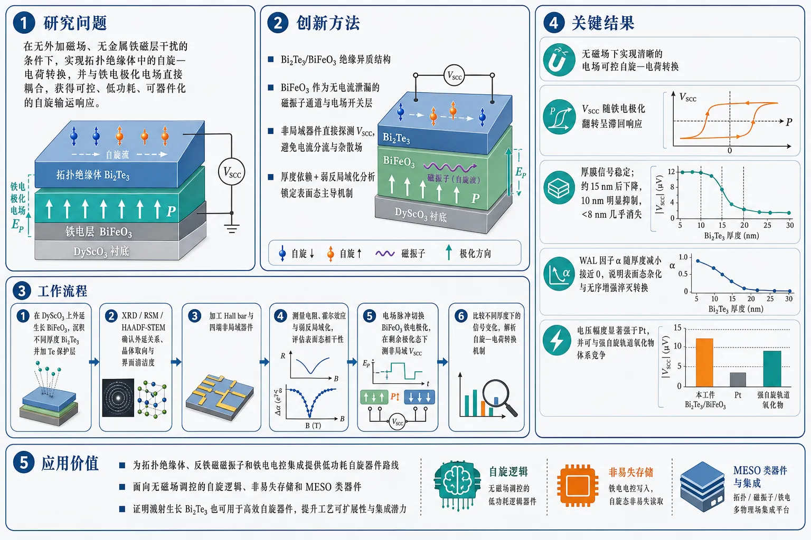
研究问题如何在无外加磁场、无金属铁磁层干扰的条件下，实现拓扑绝缘体中的自旋—电荷转换，并将其与铁电极化电场直接耦合起来，从而获得可控、低功耗、可器件化的自旋输运响应。创新方法构建 Bi2Te3/BiFeO3 绝缘异质结构，用铁电反铁磁 BiFeO3 作为“无电流泄漏”的磁振子通道和电场开关层；通过非局域器件直接探测 spin-charge conversion voltage，避开金属铁磁体带来的电流分流、杂散场和界面扰动；再结合厚度依赖与弱反局域化分析，锁定拓扑表面态对转换信号的主导作用。工作流程1）在 DyScO3 上外延生长 BiFeO3，随后沉积不同厚度的 Bi2Te3 并加 Te 保护层；2）用 XRD、RSM、HAADF-STEM 确认外延关系、晶体取向和界面清洁度；3）加工 Hall bar 与四端非局域器件；4）测量电阻、霍尔效应和弱反局域化，评估表面态相干性；5）通过电场脉冲切换 BiFeO3 铁电极化，在剩余极化态下测非局域 V_SCC；6）比较不同厚度下的信号变化，解析自旋—电荷转换机制。关键结果Bi2Te3/BiFeO3 器件在无磁场下实现了清晰的电场可控自旋—电荷转换，V_SCC 随铁电极化翻转呈滞回响应；转换信号在厚膜中稳定，厚度降至约 15 nm 后开始下降，10 nm 明显抑制，低于约 8 nm 几乎消失；WAL 拟合因子 α 也随厚度减小而接近 0，说明超薄时拓扑表面态杂化和无序增强会淬灭高效转换；整体电压幅度显著强于 Pt，并可与强自旋轨道氧化物体系竞争。应用价值该工作提供了一条将拓扑绝缘体、反铁磁磁振子和铁电电控集成在一起的低功耗自旋器件路线，可用于无磁场调控的自旋逻辑、非易失存储和 MESO 类器件；同时证明溅射生长的 Bi2Te3 也可用于高效自旋器件，提升了工艺可扩展性和实际集成潜力。第一部分：核心概览
该研究实现了拓扑绝缘体 Bi₂Te₃/多铁性反铁磁绝缘体 BiFeO₃异质结构中的电场可控自旋—电荷转换，采用非局域自旋输运几何避免金属铁磁层带来的电流分流、杂散场与界面扰动。核心贡献在于：在无外加磁场、绝缘磁界面条件下，通过 BiFeO₃ 的铁电极化调控反铁磁磁振子输运，并在 Bi₂Te₃ 中探测到与极化滞回同步的 spin–charge conversion voltage。厚度依赖与弱反局域化分析共同表明，>10 nm 时转换稳健，5 nm 时消失，符合上下表面态杂化导致拓扑表面输运被淬灭的图像。该工作把拓扑表面态、反铁磁磁振子和铁电电控集成到同一平台，为低功耗自旋器件提供了可扩展的材料路线。
---
第二部分：结构化快速回顾
《Electric field controlled spin transport in a topological insulator interfaced with a ferroelectric antiferromagnet》（None，）
背景
Bi 基拓扑绝缘体因强自旋—轨道耦合和 spin–momentum locking 被视为高效自旋—电荷互转换平台，但既有研究大量依赖金属铁磁体和外磁场，容易引入电流分流、界面散射、拓扑表面态屏蔽或杂化，难以提取本征响应。BiFeO₃同时具备反铁磁绝缘性和铁电性，可作为无电流泄漏、可电控的磁振子输运介质。
方法
制备 Bi₂Te₃/BiFeO₃/DyScO₃ 异质结构，其中 BiFeO₃ 厚度约 50 nm，Bi₂Te₃ 厚度系统变化 70–5 nm。Bi₂Te₃ 由 RF 磁控溅射在 150 °C 生长，BiFeO₃ 由 PLD 或 MBE 外延生长。采用 XRD、RSM、HAADF-STEM 表征结构；Hall bar 测量电荷输运和弱反局域化；四端非局域器件测量 V_SCC，并用电场脉冲切换 BiFeO₃ 铁电极化。
结果
Bi₂Te₃ 呈 (00l) 取向，晶格参数约 a = 3.95 Å、c = 30.08–30.13 Å，存在 30° 旋转畴和十二重 φ 扫描对称性。低温磁电导显示弱反局域化：70 nm 样品 HLN 拟合 α = −0.27，15 nm 为 α = −0.17，5 nm 接近 0。非局域 V_SCC 随 BiFeO₃ 铁电极化翻转呈滞回响应；厚度降至约 20 nm 前信号近似稳定，15 nm 开始下降，10 nm 明显抑制，<8 nm 几乎消失。
讨论
厚度依赖和 HLN 相干因子的对应关系支持：高效转换主要来自解耦拓扑表面态；超薄时上下表面态杂化、无序增强和可能的能隙打开削弱 spin–momentum locking。电流极性翻转导致 V_SCC 符号反转，符合 Dirac 表面态费米面位移诱导非平衡自旋极化的 Edelstein 图像，也可能包含体态 inverse spin Hall 贡献。
局限
Bi₂Te₃ 存在 Te 空位和 Bi/Te 反位缺陷，载流子密度达 10¹⁵ cm⁻² 量级，费米能级位于导带，无法实现纯表面态输运。界面存在少量 Bi 缺陷区。体态与表面态贡献尚未完全分离；5 nm 样品 Hall 信号因高阻超出测量精度。文中未给出完整统计样本量、P 值或误差传播模型。
结论
Bi₂Te₃/BiFeO₃ 异质结构展示了无磁场、铁电可控的拓扑绝缘体自旋—电荷转换。转换信号显著强于 Pt 等传统重金属，并可与 SrIrO₃ 等强 SOC 氧化物竞争。该平台兼具绝缘反铁磁输运、电场控制和可扩展溅射 Bi₂Te₃ 工艺，适合面向低功耗自旋逻辑和 MESO 类器件发展。
---
第三部分：逐章节冷凝解析
Introduction
Spin–charge conversion is a central target for next-generation spintronics
自旋—电荷转换是低功耗自旋电子器件的核心机制，尤其围绕 inverse spin Hall effect 与 inverse Rashba–Edelstein effect 展开。研究背景明确指向三维和二维材料体系中的高效转换问题，原文表述为 *"The rapid progress in next-generation spintronic technologies has stimulated intense interest in efficient spin-to-charge conversion (SCC) mechanisms"*，并进一步限定主要实验探针为 *"measurements of the inverse spin Hall effect and the inverse Rashba-Edelstein effect in both three-dimensional (3D) and two-dimensional (2D) material systems"*。
Topological insulators are attractive because of SOC and spin–momentum locking
Bi 基硫属化物拓扑绝缘体的优势来自强 spin–orbit coupling 与 Dirac 表面态的 spin–momentum locking。这种锁定使电流、动量与自旋极化之间形成强耦合，从而提升自旋—电荷转换效率。关键原文为 *"Topological insulators (TIs), such as Bi-based chalcogenides, are especially promising in this context due to their strong spin–orbit coupling (SOC) and the spin–momentum locking inherent to their Dirac surface states"*，并指出这些性质 *"enable highly efficient SCC"*。
Metallic ferromagnetic interfaces obscure intrinsic TI responses
既有 TI 自旋输运研究大量使用金属铁磁体作为自旋源，但这会引入多重非本征效应：寄生电流分流、界面自旋相关散射、表面态屏蔽与杂化扰动。原文直接指出 *"Most previous studies of spin transport and SCC in TI-based heterostructures have employed metallic ferromagnets as spin sources"*，其问题包括 *"parasitic charge current shunting and additional interfacial spin-dependent scattering processes"*，这些效应会 *"suppress the intrinsic response of the TI surface states and complicate quantitative analysis"*。
Magnetic-field control is less device-compatible than electric-field control
传统研究常用磁场调控或探测 TI 中的转换效率，但磁场不利于微缩器件集成；电场控制不仅更兼容器件，还可能引入新物理。原文表述为 *"a magnetic field has been extensively used as a control knob for probing the efficiency in TIs"*，并强调 *"switching to an electric field would, in addition to the new physics, facilitate integration into miniaturized elements"*。
Ferroelectric antiferromagnetic insulators solve several interface problems
反铁磁绝缘体尤其是铁电反铁磁体提供了一种干净界面：无金属电流分流，杂散场小，动力学快，对外磁扰动鲁棒。原文为 *"insulating magnets, particularly ferroelectric antiferromagnets, provide a compelling alternative"*，其优势包括 *"negligible stray fields, ultrafast spin dynamics, and robustness against external magnetic perturbations"*。BiFeO₃作为多铁材料，还能通过电场调控自旋输运，原文为 *"BiFeO₃ being a multiferroic, gives an additional degree of freedom to control the spin transport by an electric field"*。
Bi₂Te₃/BiFeO₃ is designed as a clean insulating platform for interfacial spin transport
该异质结构的设计逻辑是：Bi₂Te₃提供强 SOC 和拓扑表面态，BiFeO₃提供绝缘反铁磁磁振子通道与铁电电控自由度。原文总结为 *"The Bi₂Te₃/BiFeO₃ heterostructure thus provides every possible ingredient as a clean and electrically insulating platform to probe interfacial spin transport mediated primarily by topological surface states"*。
---
Results
Low-temperature sputtering yields crystalline Bi₂Te₃ suitable for spin transport
Bi₂Te₃ 在仅 150 °C 的衬底温度下通过溅射制备，尽管溅射是非平衡过程，薄膜仍表现出良好晶体质量和厚度可控性。原文强调 *"high-quality of the Bi₂Te₃ thin films, achieved at a substrate temperature as low as 150 °C"*，并指出 *"Despite the non-equilibrium nature of sputtering, the resulting films exhibit well-defined crystallinity and thickness control suitable for investigating topological charge/spin transport"*。
The heterostructure architecture avoids magnetic-field and metallic-shunting artifacts
器件由不同厚度的 Bi₂Te₃ 覆盖在约 50 nm 外延 BiFeO₃ 上，并生长于 DyScO₃ 衬底，形成氧化物/范德华异质结构。该架构用于无外磁场探测直接自旋—电荷转换，并避免寄生分流和屏蔽。原文为 *"heterostructures consisting of Bi₂Te₃ with systematically varied thicknesses deposited on ∼50 nm thick epitaxial BiFeO₃ grown on DyScO₃ substrates"*，并指出该结构 *"enables the study of direct spin–charge conversion in the topological insulator without parasitic current shunting or screening effects in the absence of a magnetic field"*。
XRD confirms c-axis-oriented Bi₂Te₃ on BiFeO₃
θ–2θ 对称扫描显示 Bi₂Te₃ 沿 (00l) 方向取向生长在 (001) BiFeO₃ 表面，c 轴晶格参数约 30.13 Å。原文为 *"Symmetric θ/2θ scan (Fig. 1 A) reveals the Bi₂Te₃ grew (0 0 l) oriented on (0 0 1)BiFeO₃ surface"*，并给出 *"The lattice parameter c was found to be 30.13 Å"*。
Phi scans reveal twelvefold symmetry from two 30°-rotated in-plane variants
φ 扫描沿 (015) 非对称面进行，仪器角度为 χ = 56.43°、2θ = 27.8348°、ω = 9.2301°、ωₒffset = −4.6873°。结果显示 12 个衍射峰，相邻间隔 30°，对应两个面内旋转变体。原文为 *"φ-scan reveals twelve distinct diffraction peaks separated by 30°"*，并解释为 *"the coexistence of two in-plane rotational variants"*。每个变体保持 Bi₂Te₃ 的六重对称，整体表现为十二重对称，即 *"Each variant preserves the intrinsic six-fold rotational symmetry of hexagonal Bi₂Te₃, resulting in an overall twelvefold symmetry"*。
Graphoepitaxy produces 30° rotational phase boundaries
Bi₂Te₃ 与菱方 BiFeO₃ 表面之间面内约束较弱，导致graphoepitaxial growth，形成 30° 旋转相边界。原文为 *"This rotational degeneracy is characteristic of graphoepitaxial growth, arising from the weak in-plane symmetry constraint imposed by the underlying rhombohedral BFO surface"*，并指出其结果是 *"the formation of 30° rotational phase boundaries within the Bi₂Te₃ layer"*。
RSM gives lattice parameters a = 3.95 Å and c = 30.08 Å
围绕 Bi₂Te₃ (0015) 和 (015) 反射进行倒易空间映射，进一步确定外延关系和晶格参数。Bi₂Te₃ (015) 反射显示展宽的面内分布，说明无唯一面内晶格参数并伴随旋转/孪晶畴。原文为 *"The Bi₂Te₃ (0 1 5) reflection exhibits a broadened in-plane distribution, restricting the formation of a unique in-plane lattice parameter"*。拟合晶格参数为 *"a and c are found to be 3.95 Å, and 30.08 Å, respectively"*。
BiFeO₃ maintains rhombohedral epitaxial constraint with cBFO ≈ 3.96 Å
DyScO₃ (220) 附近的对称 RSM 中，BiFeO₃ (002) 峰给出赝立方 c 轴参数约 3.96 Å。原文为 *"the BiFeO₃ (002) peak yields an out-of-plane pseudo-cubic lattice parameter of cBFO ≈ 3.96 Å"*，并指出这与外延约束下菱方 BiFeO₃ 一致，即 *"consistent with the rhombohedral BiFeO₃ under epitaxial constraint"*。
HAADF-STEM confirms abrupt interface and minimal interdiffusion
HAADF-STEM 元素分辨成像显示 Bi₂Te₃/BiFeO₃ 界面化学突变，互扩散很少。原文为 *"The cross-sectional view of element-resolved atomic mapping confirms a chemically abrupt interface with minimal interdiffusion between BFO and Bi₂Te₃"*。原子分辨 HAADF 图像还显示 BiFeO₃ 层相干外延，Bi₂Te₃ 覆层具有 graphoepitaxial 特征和清晰 30° 旋转相边界，原文为 *"Atomically resolved HAADF images reveal coherent epitaxy in the BFO layer and a graphoepitaxial Bi₂Te₃ overlayer containing sharp 30° rotational phase boundaries"*。
Minor Bi-deficient interfacial regions are observed
界面存在小区域 Bi 缺陷，可能影响后续自旋输运。原文直接指出 *"small regions of Bi-deficiency at the interface were observed"*，并提示 *"how such interfaces could impact the spin transport will be discussed later"*。这一点构成结构层面的潜在非理想性。
Temperature-dependent resistivity evolves from metallic-like to semiconducting-like with decreasing thickness
Hall bar 几何用于输运测量，Bi₂Te₃ 厚度覆盖 70 nm 至 5 nm。随厚度降低，电阻率从类金属性向类半导体行为转变。原文为 *"temperature-dependent longitudinal resistivity for Bi₂Te₃ thin films of thicknesses from 70 nm to 5 nm shows a crossover from metallic-like to semiconducting-like behavior as the film becomes ultrathin"*。固定温度下，厚度从 70 nm 降至 5 nm 时电阻率系统升高，原文解释为 *"enhanced surface and interface scattering, reduced effective carrier density, and stronger influence of disorder in thinner films"*。
The 5 nm low-temperature upturn is dominated by disorder-induced weak localization
5 nm Bi₂Te₃ 低温电阻率上翘用 VRH 与 Kondo-type logarithmic 模型分析。VRH 拟合失败，Kondo 型对数关系可合理拟合，但并非唯一解释。原文为 *"While the VRH model failed to adequately describe the data, the Kondo-type logarithmic dependence provided a reasonable fit to the low-temperature upturn"*。进一步结合磁电导 HLN 拟合，低温上翘主要来自量子干涉导致的弱局域化，原文为 *"the combined transport and magnetoconductance analyses suggest that disorder-induced weak localization is the dominant origin of the low-temperature resistivity upturn in the ultrathin Bi₂Te₃ film"*。
Hall data indicate electron-dominated transport with carrier density ~10¹⁵ cm⁻²
横向电阻 Rₓy 随磁场呈线性，负斜率说明主要载流子为电子。原文为 *"From the linear field dependence of Rxy, we infer that transport is dominated by a single type of carrier with a negative slope, identifying electrons as the majority carriers"*。载流子面密度为 10¹⁵ cm⁻² 量级，高于典型 TI，原文为 *"The carrier density is found to be of the order of 10¹⁵ cm⁻², slightly higher than the values typically reported for topological insulators"*。原因归于 Te vacancies 和 Bi–Te antisite defects，即 *"donor-type intrinsic defects in Bi₂Te₃ such as Te vacancies or Bi–Te antisite defects"*。
5 nm Hall resistance is not measurable within experimental accuracy
由于高阻，5 nm Bi₂Te₃ 的 Hall 电阻超出实验精度。原文为 *"The Hall resistance in Bi₂Te₃ (5nm) is not measurable within the experimental accuracy due to its high resistance"*。不过铁电性质仍保持，原文补充 *"however, the ferroelectric properties remain the same"*。
Low-field magnetoconductivity shows weak antilocalization in thicker Bi₂Te₃
在 2 K 测量低场磁电导 Δσ(e²/h)，零场附近出现 cusp-like 行为，说明强 SOC 拓扑体系中的 weak antilocalization。原文为 *"The observed cusp-like behavior around zero transverse magnetic field exhibits the presence of weak antilocalization (WAL) in a topological system with strong spin–orbit coupling"*。
HLN analysis extracts an effective coherent-channel prefactor
磁电导用 Hikami–Larkin–Nagaoka model 拟合，形式中包含无量纲前因子 α、相干长度 Lφ 和 digamma 函数 ψ。原文写出 *"we analyze the magnetoconductivity using the Hikami–Larkin–Nagaoka (HLN) model"*，并定义 *"α is a dimensionless prefactor that indicates the number of coherent conduction channels"*，以及 *"Lφ is phase coherence length"*。
70 nm Bi₂Te₃ shows α = −0.27, consistent with WAL plus bulk background
70 nm 样品的 α = −0.27，说明单个或有效二维通道主导 WAL，但体态背景仍显著。原文为 *"For 70nm, the α is -0.27, suggesting weak anti-localization dominated by a single 2D channel ... coexisting with a finite bulk background"*。括号中还明确指出体态背景与较大载流子密度相关，即 *"c.f. large carrier density"*。
15 nm Bi₂Te₃ has weaker WAL with α = −0.17
15 nm 样品零场 cusp 变弱，HLN 前因子降至 −0.17。原文为 *"The WAL cusp becomes less pronounced for a 15 nm thick Bi₂Te₃ sample as the fitted prefactor decreases to α = -0.17"*。解释为上下表面通道共同参与电荷输运，原文为 *"This indicates that the top and bottom channels ... are both contributing to the charge transport"*。
5 nm Bi₂Te₃ has nearly quenched WAL and α ≈ 0
5 nm 超薄样品磁电导几乎平坦，HLN 拟合 α 接近 0，说明 WAL 被淬灭，可能进入强局域或表面态杂化开隙区。原文为 *"for the thinnest films (5nm), the magnetoconductivity is nearly flat within the experimental resolution, and the HLN fit yields a value that is nearly zero"*；其物理含义为 *"WAL is mostly quenched, pointing to a regime of strong localization or gap opening where coherent back-scattering corrections no longer produce a pronounced interference cusp"*。
Bulk conduction prevents pure surface-state transport
Bi₂Te₃ 中不可避免存在 Te 空位和 Bi/Te 反位缺陷，导致有限体电导，测得磁电导是表面态与体态并联贡献。原文为 *"Owing to intrinsic Te vacancies and Bi/Te antisite defects, Bi₂Te₃ typically exhibits finite bulk conductivity even in high-quality thin films"*。因此 HLN α 是有效值，而非孤立表面通道值，原文为 *"the extracted HLN prefactor represents an effective contribution from multiple transport channels rather than isolated surface states"*。这也解释了为什么无需补偿掺杂或静电门控时很难实现纯表面态输运，原文为 *"making it difficult to achieve purely surface-state transport without compensation doping or electrostatic gating"*。
Nonlocal spin transport uses BiFeO₃ magnons as the spin channel
非局域器件中，注入直流 Iᵢₙⱼ 在 Bi₂Te₃ 界面通过 SOC 产生极化自旋流或非平衡自旋化学势；这些自旋向 BiFeO₃ 反铁磁自旋转移角动量，激发磁振子并形成向探测端传播的磁振子梯度。原文为 *"the injected DC Iinj, generates a polarized spin current ... at the interface due to spin-orbit coupling arising from the Berry curvature of the surface states and bulk"*，随后 *"the spin gradient excites magnons in BiFeO₃, creating a magnon population gradient that drives them toward the detector"*。探测端自旋积累再通过 inverse Edelstein effect 产生电压，原文为 *"The resulting spin accumulation at the detector interface produces a voltage through spin-charge conversion via the inverse Edelstein effect"*。
Measured VSCC includes both surface and bulk contributions
由于 Bi₂Te₃ 的费米能级位于导带，体贡献不可避免。原文为 *"the bulk contribution cannot be avoided in Bi₂Te₃ crystal due to its Fermi level lying in the conduction band"*。因此测得的 V_SCC 是表面与体态共同贡献的净效应，原文明确写道 *"We represent the measured voltage as VSCC, which is the net effect from surface and bulk"*。
VSCC follows ferroelectric polarization hysteresis under electric-field control
外加电场跨两个 Bi₂Te₃ 电极施加，用于切换 BiFeO₃ 铁电极化；随后在剩余极化态中记录 V_SCC。黑色数据为铁电极化，绿色滞回为非局域 V_SCC。原文为 *"The data in black is the ferroelectric polarization, and the green hysteresis corresponds to the non-local VSCC"*。关键观察为 *"The VSCC exactly follows the ferroelectric polarization"*，这被解释为 *"indicative of the electric-field-controlled spin transport"*。
Remanent-state measurement suppresses electric-field artifacts
每个 V_SCC 数据点在电场脉冲后、无持续电场的剩余极化态测量，约 10 s 恒定 DC 采样，误差为标准差。原文为 *"The VSCC is recorded in the remanent state of the polarization measured after an electric field pulse"*，并补充 *"the data was recorded for about 10 seconds at constant DC, giving a data point with standard deviation as the error plotted"*。因此电场直接伪影被排除，原文为 *"Therefore, the data are free of artifacts due to the electric field"*。
The measured voltage is comparable to SrIrO₃ and implies large SCC efficiency
测得 V_SCC 接近用同一方法在 SrIrO₃ 中获得的信号，对应 SCC efficiency ∼0.3–0.4。原文为 *"the measured voltage VSCC is close to what has been reported for SrIrO₃ using the same method with the SCC efficiency of ∼0.3-0.4"*。这支持 Bi₂Te₃ 中存在相近量级的有效自旋 Hall 角，原文为 *"we can correlate the similar magnitude of spin Hall angle in Bi₂Te₃"*，且接近 DFT 理论值，即 *"close to the theoretical value estimated from density functional theory calculations"*。
Direct nonlocal approach avoids magnetic-field-based analysis artifacts
该实验不依赖外磁场或基于磁场的数学推断，而是通过非局域电压直接探测。原文为 *"Since we are measuring the SCC through a direct approach without a magnetic field"*，因此 *"artifact related to the mathematical calculations and magnetic field-based analysis are avoided"*。
Band-structure tuning could amplify VSCC toward MESO requirements
通过调控 Bi₂Se₃ 或 BiₓSb₁₋ₓ 等拓扑绝缘体的能带结构，有望放大 V_SCC，目标可达 MESO 器件所需约 100 mV。原文为 *"by tuning the band structure of the topological insulators such as Bi₂Se₃ or BixSb1-x"*，可使 *"VSCC can be amplified for device applications"*，例如 *"to reach VSCC =100 mV for MESO device"*。
Current-polarity reversal rules out a purely thermal origin
若 V_SCC 来自 Seebeck 热梯度或热磁振子，滞回极性不应随电流翻转而反转。原文为 *"If the VSCC were to have an origin from the thermal gradient (Seebeck effect) or thermal magnons, the hysteresis would not reverse the polarity"*。而实验中确实反转，符合源端 charge-to-spin conversion 与探测端 spin-to-charge conversion 的自旋信号机制，原文为 *"However, it does if the charge-spin conversion is right at the source and spin-charge conversion is at the detector"*。
Second-harmonic measurements confirm thermally generated magnons exist but do not explain current-driven polarity reversal
二次谐波 2ω 锁相测量显示体系中存在热生磁振子。原文为 *"second-harmonic measurements were carried out using a lock-in detection technique, with the voltage signal measured at 2ω"*，且 *"consistent with the presence of thermally generated magnons in the BFO/Bi₂Te₃ heterostructure"*。但电流驱动 V_SCC 的极性反转需要高 SOC 界面/体态处的转换机制，而非单纯热源。
BiFeO₃’s gigaohm resistance suppresses charge leakage
BiFeO₃ 作为磁振子介质的电阻达到 GΩ 量级，可防止电荷电流泄漏到探测端。原文为 *"The resistance of the magnonic medium BiFeO₃ is of the order of GΩ, which protects against any charge current leakage to the detector"*。这强化了非局域信号的自旋/磁振子性质。
Differential voltage ΔVSCC reverses sign with current direction
ΔV_SCC 定义为滞回曲线峰—峰电压，在不同电流下测量。原文为 *"The differential voltage ΔVSCC is the peak-to-peak voltage recorded from the hysteresis plots for a range of current values"*。当电流由负变正，信号反号，原文为 *"ΔVSCC reverses its sign when it goes from negative - to positive +"*。
Fermi-surface shift explains the sign reversal in the surface-state picture
在半经典 Boltzmann 图像中，电场或电流使费米轮廓位移 Δk ∝ E，打破 +k 与 −k 占据平衡。原文为 *"an applied electric field ... displaces the Fermi contour in momentum space by Δk ∝ E"*，并产生 *"an imbalance between states at +k and −k"*。由于 spin–momentum locking 满足 *"⟨s(k)⟩ ∝ ẑ × k̂"*，非对称占据产生非平衡自旋密度 *"S ∝ ẑ × E"*。反转电流即反转费米面位移和诱导自旋极化，原文为 *"Reversing the current direction reverses the Fermi-surface shift, thereby flipping the direction of the induced spin polarization and consequently the sign of the spin–charge conversion voltage VSCC"*。
Bulk inverse spin Hall contribution can also participate
若体 SOC 贡献显著，体 inverse spin Hall effect 也可产生电压。原文为 *"a sign reversal of VSCC can also arise if the bulk spin–orbit coupling provides a significant contribution"*，并给出 *"EISHE ∝ θSH(Js × σ̂)"*。总电压反映表面 inverse Edelstein 与体 inverse spin Hall 的叠加，原文为 *"VSCC ∝ (ηsurf + ηbulk)Iinj"*。若两者符号相反，总转换效率可发生符号变化，原文为 *"If these two coefficients have opposite signs due to their distinct microscopic origins"*。
Bi₂Te₃ outperforms Pt and competes with SrIrO₃-like oxide spin–orbit systems
不同器件和样品的 SCC resistance 与 Pt、SrIrO₃ 比较，显示 Bi₂Te₃ 电压幅度比 Pt 大几个数量级。原文为 *"the large spin–charge conversion voltage magnitude in Bi₂Te₃ is orders of magnitude larger than that of Pt"*。ΔV_SCC 与先进外延 Bi₂FeO₃/SrIrO₃ 异质结构相当甚至更高，原文为 *"The magnitude of ΔVSCC is comparable to, or even exceeds, that of existing materials, including state-of-the-art all-epitaxial Bi₂FeO₃/SrIrO₃ heterostructures"*。
Thickness dependence connects SCC to topological behavior
为辨析信号来源，Bi₂Te₃ 厚度被系统改变，因为拓扑绝缘体性质受厚度控制。原文为 *"we extended our measurements for a range of Bi₂Te₃ thicknesses since the thickness controlled the properties of the topological insulators"*。V_SCC 在厚度降至约 20 nm 前基本恒定，原文为 *"remains nearly constant for Bi₂Te₃ thicknesses down to ∼20 nm"*；15 nm 开始逐步降低，10 nm 明显抑制，<8 nm 几乎消失，原文为 *"followed by a gradual reduction at 15 nm and a pronounced suppression at 10 nm. Below ∼8 nm, the voltage output becomes negligible"*。
Low-thickness signal suppression is not caused by resistance or ferroelectric degradation
最低厚度样品电阻最大，但这不控制非局域自旋输运信号。原文为 *"Though the resistance of the lowest thickness is the largest, it does not influence our spin transport"*。低厚度 Bi₂Te₃ 上 BiFeO₃ 铁电滞回保持不变，说明铁电和反铁磁状态稳健。原文为 *"The ferroelectric hysteresis remains the same at lower Bi₂Te₃ thicknesses"*，并解释为 *"robust ferroelectric and, consequently, the antiferromagnetic state in BiFeO₃"*。
Coherency factor from WAL tracks the SCC thickness dependence
由 WAL 提取的 coherency factor 与 ΔV_SCC 厚度依赖高度一致，说明转换效率由拓扑表面态主导。原文为 *"The extracted coherency factor, plotted as a function of thickness, shows excellent agreement with the spin-transport data"*，并进一步指出 *"indicating that the efficiency of spin–charge conversion is dominated by the topological surface states"*。
Reference lines 1/π and 1/2π represent dual and single 2D channels
图 4 中虚线 1/π 和 1/2π 分别对应双二维通道和单二维通道，来自 WAL 分析。原文为 *"The dotted reference lines marked as 1/π and 1/2π correspond to dual and single two-dimensional (2D) conduction channels, respectively"*，并说明其 *"consistent with weak anti-localization analysis"*。
Thick films contain decoupled top and bottom surface states enabling robust inverse Edelstein conversion
厚膜中上下表面态解耦，逆 Edelstein 转换稳健。原文为 *"In thicker films, transport is dominated by the two decoupled top and bottom surface states, enabling robust inverse Edelstein conversion"*。这解释了 >20 nm 时 V_SCC 近似厚度无关。
Ultrathin films lose efficient SCC through surface hybridization, disorder, and possible gap opening
厚度降低时，上下表面态杂化增强，体散射增加，spin–momentum locking 的有效贡献降低。原文为 *"As the thickness decreases, hybridization between the two surfaces and increased bulk scattering reduce the effective spin-momentum locking contribution"*。超薄极限中，虽然电阻率升高，但拓扑性质被削弱或消失，导致自旋—电荷互转换效率消失，原文为 *"the suppression of the topological nature of Bi₂Te₃ eliminates efficient spin–charge interconversion"*。
A tension remains between surface-state interpretation and conventional thickness dependence
结果部分同时出现一个需要谨慎理解的表述：传统厚度依赖似乎暗示自旋输运受体导电控制，因为纯表面态贡献本应厚度无关。原文为 *"The conventional thickness dependence observed here suggests that spin transport is primarily governed by bulk conduction, as surface-state contributions are expected to be independent of thickness"*。这一句与前文“表面态主导”存在张力，合理解释是：实际 Bi₂Te₃ 中表面态与体态并联耦合，厚度变化同时影响拓扑表面态解耦程度、体态散射、杂化开隙和界面态质量；因此不能把厚度依赖简单等同于纯体态主导。
The main conclusion is field-free electric control of SCC through antiferromagnetic magnons
结论强调首次通过反铁磁磁振子在拓扑绝缘体中实现电场调制自旋—电荷转换。原文为 *"For the first time, spin–charge conversion is modulated by an electric field through antiferromagnetic magnons in a topological insulator"*，并指出这提供了 *"deterministic control without relying on charge-current switching or magnetic field"*。
The voltage output is orders of magnitude larger than Pt
与传统重金属 Pt 相比，测得电压输出大几个数量级，支持拓扑绝缘体作为高效自旋—电荷转换材料的优势。原文为 *"The magnitude of the measured voltage output is orders of magnitude larger than that of conventional heavy metals such as Pt"*，并称其为 *"compelling evidence of the superiority of topological insulators for efficient spin–charge conversion"*。
---
Materials and Methods
Thin film deposition
Bi₂Te₃ was grown by RF magnetron sputtering at 150 °C
Bi₂Te₃ 使用 99.99% 高纯单靶 RF 磁控溅射生长，衬底温度 150 °C。原文为 *"Bi₂Te₃ thin films were grown using RF magnetron sputtering from a single high-purity (99.99%) target"*，并指出 *"the substrates were heated to growth temperature (150°C)"*。
Bi₂Te₃ deposition used ultra-high vacuum, Ar flow of 25 sccm, and RF power of 10 W
Bi₂Te₃ 沉积于 BiFeO₃ 上，腔体基压 ∼1–3 × 10⁻⁸ Torr，Ar 流量 25 sccm，RF 功率 10 W。原文为 *"ultra high-vacuum chamber (base pressure of ∼1-3×10⁻⁸ Torr) with Ar flow rate of 25 sccm, and the RF power was set to 10 Watt"*。
A ~1 nm Te cap protects Bi₂Te₃ from degradation
样品冷却至室温后，在室温沉积约 1 nm Te 盖层保护 Bi₂Te₃ 表面。原文为 *"a thin Te capping layer (∼1 nm) was deposited at room temperature to protect the Bi₂Te₃ surface from degradation"*。
BiFeO₃ was grown on DyScO₃ by PLD and MBE
外延 BiFeO₃ 在 DyScO₃ (220) 衬底上通过 PLD 和 MBE 制备。原文为 *"Epitaxial BiFeO₃ (BFO) thin films were grown on DyScO₃ (220) substrates by pulsed laser deposition (PLD) and Molecular beam epitaxy (MBE)"*。
PLD BiFeO₃ used 720 °C, 150 mTorr oxygen, 1.2 J/cm², and 10 Hz
PLD 使用商用 BiFeO₃ 陶瓷靶，衬底温度 720 °C，氧压 150 mTorr，激光能量密度 1.2 J/cm²，重复频率 10 Hz。原文为 *"The deposition was performed at a substrate temperature of 720°C under an oxygen pressure of 150 mTorr, the laser energy density was maintained 1.2 J/cm² with a repetition rate of 10 Hz"*。
MBE BiFeO₃ used ozone/oxygen mixture and controlled Bi/Fe fluxes
MBE 在 VEECO GEN10 中进行，反应气氛为 80% 蒸馏臭氧 + 20% 氧气，Bi 与 Fe 原子源通量分别为 1.5 × 10¹⁴ 和 2 × 10¹³ atoms/cm²s，衬底温度 675 °C，腔压 5 × 10⁻⁶ Torr。原文为 *"using a mixture of 80% ozone (distilled) and 20% oxygen"*，以及 *"fluxes of 1.5 × 10¹⁴ and 2 × 10¹³ atoms/cm²s respectively"*，并给出 *"substrate temperature of 675 °C and chamber pressure of 5 x 10⁻⁶ Torr"*。
BiFeO₃ quality was maintained across deposition routes
PLD 与 MBE 制备的 BiFeO₃ 厚度和质量保持一致。原文为 *"The samples thickness and qualities were maintained irrespective of the deposition process"*。
---
Structural Characterization
XRD used Cu Kα radiation and high-resolution instrumentation
Bi₂Te₃ 和 BiFeO₃ 晶体结构通过高分辨 XRD 表征，仪器为 PANalytical X’Pert Pro，X 射线为 Cu Kα，波长 1.5401 Å。原文为 *"The crystal structures of both Bi₂Te₃ and BiFeO₃ were determined through X-ray diffraction, utilizing a high-resolution X-ray diffractometer (PANalytical, X’Pert Pro)"*，以及 *"The X-ray source was Cu Kα transition (wavelength: 1.5401 Å)"*。
Line scans and RSM used defined slit conditions
θ–2θ 对称线扫采用固定入射狭缝 1/2°，RSM 非对称二维扫描采用 1/4° 狭缝，探测器为 PIXcel 3D-Medipix 3，固定接收狭缝 0.275 mm。原文为 *"The symmetric line scan (θ–2θ) employed a fixed-incident-optics slit set at 1/2°"*，并指出 *"reciprocal space mapping (RSM) involved an asymmetric 2D scan with a slit of 1/4°"*，以及 *"detection employed a PIXcel 3D-Medipix 3 detector with a fixed receiving slit of 0.275 mm"*。
---
Device Fabrication
Devices were patterned by maskless photolithography
薄膜沉积后，非局域器件使用 Maskless Aligner MLA-150 光刻图形化。原文为 *"non-local devices were patterned using photolithography using a Maskless Aligner MLA-150"*。
Development used MF-26A for 18 seconds
曝光后，光刻胶用 MEGAPOSIT MF-26A 显影 18 s。原文为 *"the resist underwent wet-etching using MEGAPOSIT MF-26A photoresist developer for 18 seconds"*。
Nonlocal devices had 100 μm length, 1.5 μm width, and 1–3 μm spacing
非局域器件尺寸为长度 100 μm、宽度 1.5 μm、电极间距 1–3 μm；Hall bar 尺寸为 60 μm × 10 μm。原文为 *"Non-local device (Length, 100 μm — width, 1.5 μm with spacing 1-3 μm) and Hall bar (60 μm × 10 μm) devices"*。
Ar ion milling etched Bi₂Te₃ down to the BiFeO₃ surface
Bi₂Te₃ 通过 Ar 离子铣刻蚀至 BiFeO₃ 表面，入射角 30°，束电压 300 V，束流 75 mA。原文为 *"etched down via an Ar ion mill down to BiFeO₃ surface"*，并给出 *"angle of 30° with a beam voltage of 300 V, and a beam current of 75 mA"*。
Sample rotation and low temperature ensured uniform milling
铣刻时样品台以 15 rpm 匀速旋转，温度保持 15 °C 避免加热。原文为 *"spun at a constant speed of 15 rpm to achieve uniform milling"*，并指出 *"The temperature was maintained at 15º C to avoid sample heating during the ion-milling process"*。
Pt contacts were fabricated by lift-off
金属接触采用 Pt，通过 lift-off 工艺制备。原文为 *"Pt metal was used as a contact prepared by a lift-off process"*。器件制备地点为 Berkeley 的 Marvell Nanofabrication facility，原文为 *"The lithography was performed at the Marvell Nanofabrication facility at Berkeley"*。
---
Hall Effect and Magnetoconductance
Transport was measured in six-terminal Hall bar geometry
电输运在 as-grown 薄膜上的标准六端 Hall bar 几何中测量。原文为 *"Electrical transport measurements were performed using a standard six-terminal Hall bar geometry fabricated on as-grown thin films"*。
Longitudinal and Hall voltages were measured under transverse magnetic field
纵向与横向 Hall 电阻在横向磁场中测量，仪器包括 CRYOGENIC 和 Quantum Design 磁体系统。原文为 *"Both the longitudinal and transverse (Hall) resistance were measured using a CRYOGENIC and Quantum design magnet system in a transverse magnetic field"*。
Keithley instruments supplied DC current and recorded voltages
使用 Keithley 2400 提供恒定 DC，使用 Keithley 2182A nanovoltmeter 记录纵向和横向电压。原文为 *"A Keithley 2400 source meter was used to supply a constant DC along the device channels"*，以及 *"voltage drops were recorded using a Keithley 2182A nanovoltmeter"*。
---
Spin Transport Measurements
Four-terminal nonlocal geometry separates injection and detection
自旋输运在四端非局域器件中进行，两端用于源电流注入并实现 charge-to-spin conversion，另外两端用于测量 spin-to-charge conversion 输出。原文为 *"Spin transport measurements were conducted employing four-terminal non-local devices"*，并说明 *"two terminals were dedicated to source current injection ... and the remaining two served as output terminals"*。
Current source used Keithley 6221
源电流由 Keithley 6221 注入。原文为 *"using 6221 Keithley"*。
The same electrodes enabled ferroelectric polarization control
一个源端和一个探测端也用于施加电场以控制铁电极化；施加电场时电流和电压引线关闭。原文为 *"One source terminal and one detection terminal were also used to apply an electric field for ferroelectric polarization control, while current and voltage leads were turned off"*。
Measurements were performed in remanent state with no electric or magnetic field
自旋输运测量在铁电剩余态完成，测量期间不施加电场，因此避免电场干扰磁振子输运；同时不施加磁场。原文为 *"The measurements were conducted in the remanent state means no electric field was applied during the measurement"*，并强调 *"Also, no magnetic field was applied in these measurements"*。
Automated switching maximized repeatability
实验由自研 Python 程序和 Keithley 7001 switch box 控制，以提高重复性。原文为 *"controlled using an in-house developed Python code and a Keithley 7001 switch box, maximizing repeatability"*。
---
Ferroelectric Measurements
In-plane capacitor devices probed BiFeO₃ ferroelectricity through Bi₂Te₃/BiFeO₃
为评估外延薄膜铁电性，制备了 Bi₂Te₃/BiFeO₃ 上的平面电容器件。原文为 *"To assess the ferroelectric nature of the epitaxial films, we fabricated both in-plane capacitor devices on Bi₂Te₃/BiFeO₃"*。
P–E loops were measured using a Radiant Precision Multiferroic system
极化—电场滞回环通过 Radiant Technologies Precision Multiferroic system 测量。原文为 *"Polarization–electric field (P–E) hysteresis loops were recorded using a Precision Multiferroic system (Radiant Technologies)"*。
---
MICROSCOPIC ORIGIN OF THE SIGN REVERSAL IN SPIN–CHARGE CONVERSION
0.1 Fermi-Surface Shift and Nonequilibrium Spin Polarization
Boltzmann theory gives a first-order correction to the distribution function
在弛豫时间近似下，面内电场 E 使分布函数出现一阶修正：
f(k) = f₀(εₖ₎ − eτ(E·vₖ₎₍−∂f₀/∂ε)。
原文为 *"From the semiclassical Boltzmann formalism under the relaxation-time approximation, when an in-plane electric field E is applied, the distribution function acquires a first-order correction"*。其中 τ 是动量弛豫时间，速度为 vₖ = (1/ℏ)∇ₖ εₖ，原文为 *"τ is the momentum relaxation time and vk = 1/ℏ ∇k εk is the velocity"*。
The electric field rigidly shifts the Fermi contour
上述分布函数修正等效为费米轮廓刚性位移：
Δk = −eτE/ℏ。
原文为 *"This is equivalent to a rigid shift of the Fermi contour"*，并给出 *"Δk = −eτ/ℏ E"*。
The topological surface Hamiltonian encodes helical spin–momentum locking
拓扑表面态低能 Hamiltonian 为：
H = ℏv_F(ẑ × σ)·k。
原文为 *"For a topological surface state, the low-energy Hamiltonian is H = ℏvF(ẑ × σ)·k"*，该式描述螺旋 Dirac 锥，原文为 *"which describes a helical Dirac cone with spin–momentum locking"*。
Spin expectation is perpendicular to momentum
表面态自旋期望值为：
⟨s(k)⟩ = ℏ/2 (ẑ × k̂)。
原文为 *"The expectation value of spin is represented as, ⟨s(k)⟩ = ℏ/2(ẑ × k̂)"*。这表示自旋与面内动量垂直，并由表面法向决定手性。
Shifted occupation generates Edelstein spin density
非平衡自旋密度为 S = Σₖ ⟨s(k)⟩δf(k)。代入 Boltzmann 修正并对费米圆角向积分得到：
S = [eτD(E_F)v_F²/2](ẑ × E)。
原文为 *"Substituting Eq. (1) and evaluating the angular integral over the Fermi circle yields S = eτD(EF)vF²/2 (ẑ × E)"*。这正是 Edelstein 效应，原文为 *"This represents the Edelstein effect (inverse spin galvanic effect)"*。
Current reversal directly reverses induced spin polarization
实验中电流等效为界面有效电场，因此 J_c → −J_c 导致 S → −S。原文为 *"Here E is treated as an effective electric field through the injected current Jc at the interface"*，并写出 *"Jc → −Jc ⟹ S → −S"*。这给出符号反转的现象学解释，即 *"reversing current reverses the direction of the induced spin polarization"*。
---
0.2 Conversion from Spin Accumulation to Measured Voltage
Spin accumulation converts to an electric field through inverse Edelstein or inverse spin Hall processes
自旋积累产生的自旋—电荷转换场可写为：
E_SCC = λ_SCC(ẑ × S)。
原文为 *"If spin accumulation produces a transverse electric field through inverse Edelstein or inverse spin Hall processes, the spin–charge conversion field may be written phenomenologically as, ESCC = λSCC(ẑ × S)"*。其中 λ_SCC 是转换系数，原文为 *"λSCC is a conversion coefficient"*。
For in-plane fields, the measured conversion field is opposite to the driving effective field
由 S ∝ ẑ × E 与 E_SCC ∝ ẑ × S 可得 E_SCC ∝ ẑ × (ẑ × E) = −E。原文为 *"Using the vector identity ... ẑ × (ẑ × E) = −E, for in-plane E"*。这说明电流方向与探测电压符号之间由表面态手性和几何决定。
VSCC is linear in current and odd under current reversal
沿长度 L 和方向 ℓ̂ 的电压为：
V_SCC = L ℓ̂·E_SCC = ηI。
原文为 *"Thus the voltage over length L along direction ℓ̂ can be measured as VSCC = L ℓ̂·ESCC = η I"*。因此 V_SCC(−I) = −V_SCC(I)，原文为 *"This can explain VSCC(−I)=−VSCC(I)"*。符号反转直接反映费米面位移和诱导自旋极化反转，原文为 *"the sign reversal of VSCC directly reflects the reversal of the Fermi-surface shift and induced spin polarization"*。
---
0.3 Competition Between Surface and Bulk Contributions
Realistic Bi₂Te₃ contains both surface IEE and bulk ISHE contributions
实际样品中，表面 inverse Edelstein effect 与体 inverse spin Hall effect 均可贡献：
V_SCC = (ηₛᵤᵣf + η_bulk)I。
原文为 *"In realistic samples, both surface inverse Edelstein effect (IEE) and bulk inverse spin Hall effect (ISHE) contribute, VSCC = (ηsurf + ηbulk)I"*。
Bulk ISHE depends on spin Hall angle and resistivity
体 ISHE 电场为：
E_ISHE = θ_SH ρ(Jₛ × σ̂)。
原文为 *"The bulk ISHE contribution can be written as, EISHE = θSHρ(Js × σ̂)"*，其中 θ_SH 为自旋 Hall 角、ρ 为电阻率，原文为 *"where θSH is the spin Hall angle and ρ the resistivity"*。
Opposite signs of surface and bulk conversion coefficients can change total polarity
若 ηₛᵤᵣf 和 η_bulk 符号相反，总转换效率可随能级调控或相对权重变化发生符号变化。原文为 *"If ηsurf and ηbulk have opposite signs, a sign reversal occurs when ηsurf + ηbulk is deviated from 0 to either positive or negative"*。这种符号变化可能来自费米能级调控，原文为 *"Such sign changes can arise from Fermi-level tuning, which modifies the relative weights of surface and bulk transport channels"*。
The experiment identifies SCC source through current reversal
本实验通过电流 I 反转识别自旋—电荷转换来源。原文为 *"In our case, we conduct the experiment under the current I reversal, which directly helps us identify the source of spin-charge conversion"*。实验符号反转可来自表面 Dirac 锥手性，也可来自表面与体 SOC 机制竞争，原文为 *"the experimentally observed sign reversal may originate either from the intrinsic helicity of the surface Dirac cone or from a crossover between competing spin–orbit coupling mechanisms from surface and bulk"*。
---
References
Reference list is unavailable in the supplied text
参考文献位置仅显示标题 References，正文引用多以占位符形式出现，如 *"( ? , ? , ? )"*。因此无法核验具体文献、年份、DOI、引用链或与近年工作的逐条定量对比。
---
Acknowledgments
Funding sources include DOE, DARPA, ARO, and ARL programs
主要资助来自美国能源部基础能源科学材料科学与工程部 Quantum Materials Program，合同号 DE-AC02-05CH11231，项目号 KC2202。原文为 *"This work was primarily supported by the U.S. Department of Energy ... under Contract No. DE-AC02-05CH11231 within the Quantum Materials Program (No. KC2202)"*。
其他资助包括 DARPA Fast and Curious Program，协议号 HR0011269E210；Army Research Office ETHOS MURI，合作协议 W911NF-21-2-0162；Army Research Laboratory，合作协议 W911NF-24-2-0100。原文为 *"DARPA Fast and Curious Program under Agreement No. HR0011269E210"*，以及 *"ETHOS MURI via cooperative agreement W911NF-21-2-0162"* 和 *"Army Research Laboratory under Cooperative Agreement Number W911NF-24-2-0100"*。
---
Author contributions
Conceptualization and methodology roles are partially listed
概念设计由 SH 与 RR 完成。原文为 *"Conceptualization: SH, RR"*。方法学贡献包括 SH, YK, PG, XL, RM, RC, MF, AO, MR, NR，原文为 *"Methodology: SH, YK, PG, XL, RM, RC, MF, AO, MR, NR"*。所给文本在 *"Investigation:"* 后截断，无法完整提取作者贡献。
---
第四部分：深度理解与语言支持
1. 术语解析
#### Spin–charge conversion
Spin–charge conversion 指自旋流/自旋积累与电荷电流/电压之间的相互转换。本文语境中包含两个方向：注入端电荷流通过 SOC 产生自旋极化，即 charge-to-spin conversion；探测端自旋积累通过 inverse Edelstein 或 inverse spin Hall 转化为电压，即 spin-to-charge conversion。微妙点在于，文中 V_SCC 不是单一表面机制的纯量，而是 *"the net effect from surface and bulk"*。
#### Spin–momentum locking
Spin–momentum locking 是拓扑表面态中自旋方向与电子动量方向一一关联且近似垂直的性质。文中用 ⟨s(k)⟩ ∝ ẑ × k̂ 表示。其关键后果是：电流导致费米面偏移，马上产生净自旋极化；反转电流，净自旋极化反转。因此它为 V_SCC 随电流反号提供微观基础。
#### Weak antilocalization
Weak antilocalization, WAL 是强 SOC 体系中的量子干涉修正，表现为零磁场附近磁电导尖峰或 cusp。它通常说明相干二维通道存在，并常被用于识别拓扑表面态输运。但本文语境中必须谨慎：Bi₂Te₃ 有体导电，HLN 拟合的 α 是有效通道数，不等于纯表面态数。
#### Graphoepitaxial growth
Graphoepitaxial growth 指薄膜受衬底表面几何/晶向弱约束而形成具有一定取向关系但存在多旋转畴的外延生长。这里 Bi₂Te₃ 在 rhombohedral BiFeO₃ 上形成两个相差 30° 的面内旋转变体，φ 扫描出现 12 个峰，并产生 30° rotational phase boundaries。
#### Remanent state
Remanent state 指外场撤去后材料保留的剩余极化或磁状态。本文在电场脉冲切换 BiFeO₃ 极化后撤去电场，再测 V_SCC，避免把电场泄漏、电容耦合或瞬态电流误认为自旋输运信号。
---
2. 疑难查证
#### 为什么 BiFeO₃ 能同时提供电场控制和自旋传输？
BiFeO₃ 是多铁性反铁磁绝缘体。铁电序参量可由电场切换；反铁磁序参量与铁电畴结构耦合，因此电场改变铁电极化时，也能改变反铁磁背景或磁振子输运条件。由于 BiFeO₃ 是绝缘体，电荷电流不能从注入端泄漏到探测端；但自旋角动量可以通过反铁磁磁振子传播。这样，电场控制的是磁振子自旋通道，而非简单调节金属电阻。
#### 为什么厚度降低到 5 nm 后 SCC 消失？
拓扑绝缘体表面态位于上下两个表面。厚膜中，上表面和下表面相距远，波函数不重叠，两个表面态近似解耦，保持 Dirac 型 spin–momentum locking。当厚度降至几个纳米，上下表面态波函数重叠并杂化，Dirac 点附近可能开隙，表面态从非平庸拓扑态变得更像普通绝缘或强局域体系。文中 5 nm 样品 α ≈ 0、磁电导近乎平坦，说明 WAL 被淬灭；非局域 V_SCC 同时消失，支持拓扑自旋纹理被破坏。
#### 为什么有体导电还可以说表面态主导 SCC？
电荷输运和自旋—电荷转换效率不是同一件事。体态可能贡献大量普通电导，导致 Hall 载流子密度高、HLN α 偏离理想值；但自旋—电荷转换可以对具有强自旋纹理的通道更敏感。拓扑表面态因 spin–momentum locking 对电流诱导自旋极化非常高效，因此即使电荷电导中有体背景，非局域 SCC 仍可能主要由表面态决定。厚度依赖与 WAL 相干因子同步变化，是支持这一点的核心证据。
#### 为什么电流反向能排除纯热效应？
焦耳热与电流平方相关，热梯度和 Seebeck 电压通常对电流方向不敏感，即 I → −I 时热功率 I²R 不变。若信号完全来自热效应，滞回极性不应随电流翻转而反转。实验中 ΔV_SCC 随电流反号而反号，符合线性自旋—电荷转换 V_SCC ∝ I，而不符合单纯热源 Vₜₕₑᵣₘₐₗ ∝ I²。
#### 为什么无外磁场很重要？
许多传统 SCC 测量依赖外磁场扫描来翻转磁化或提取角度依赖信号，但磁场会引入普通磁阻、反常 Hall、热磁效应和复杂拟合模型。无外磁场非局域测量直接利用铁电极化态控制反铁磁磁振子输运，减少磁场相关伪影，也更接近实际器件运行条件。
---
第五部分：创新评估与关联
1. 创新性判断
#### 从金属铁磁界面转向绝缘反铁磁多铁界面
过去 2–5 年中，拓扑绝缘体 SCC 研究常见结构包括 TI/ferromagnet、TI/heavy metal 或 TI/oxide spin–orbit metal。金属铁磁体会带来电流分流、磁杂散场、界面自旋散射和拓扑表面态扰动。该研究把磁性层替换为 BiFeO₃ 反铁磁绝缘体，将自旋传输通道从电荷导电层转化为磁振子绝缘通道，显著提高了界面解释的干净程度。
#### 实现无外磁场的电场可控 SCC
新颖性最强之处在于：电场切换 BiFeO₃ 铁电极化 → 调控反铁磁磁振子自旋输运 → 改变 Bi₂Te₃ 中探测到的 V_SCC。这不同于常规磁场调控，也不同于通过电流诱导磁化翻转的方案。器件操作更接近低功耗逻辑需求，因为铁电态可非易失保持。
#### 用非局域几何直接连接拓扑表面态和磁振子输运
非局域结构将注入端和探测端空间分离，BiFeO₃ 的 GΩ 电阻抑制电荷泄漏，使探测信号更接近自旋/磁振子传输。与单端 Hall 或磁阻测量相比，这种几何对证明“电荷不直接流到探测端”更有说服力。
#### 厚度依赖 + WAL 相干因子的双重证据链
厚度依赖并非单独观察，而是与 HLN 弱反局域化拟合相结合。70 nm α = −0.27、15 nm α = −0.17、5 nm α ≈ 0 与 V_SCC 从稳定到衰减再到消失同步变化，形成“拓扑表面态相干性—自旋转换效率”之间的对应关系。这比单纯报告大 SCC 信号更接近机制证明。
#### 展示溅射 Bi₂Te₃ 的器件可扩展性
高质量 TI 薄膜常依赖 MBE，但该研究在 150 °C RF sputtering 条件下得到可用于拓扑输运和自旋输运的 Bi₂Te₃，并与外延氧化物 BiFeO₃ 集成。这对晶圆级、低温、后端兼容工艺具有实际意义。
#### 解决的前人问题
- 金属磁层导致的非本征分流问题：用绝缘 BiFeO₃ 替代金属铁磁体。
- 外磁场控制不利于器件集成的问题：用铁电电场脉冲实现非易失控制。
- TI 表面态 SCC 证据间接的问题：用厚度依赖和 WAL 相干因子同时支撑表面态机制。
- 自旋输运与电荷泄漏难区分的问题：用非局域几何和 GΩ 级 BiFeO₃ 阻抗降低直接电流泄漏。
- 材料可扩展性问题：证明溅射 Bi₂Te₃ 可作为高质量、自旋器件兼容平台。
#### 仍未完全解决的问题
- 表面态与体态定量分离不足：Bi₂Te₃ 载流子密度为 10¹⁵ cm⁻² 量级，体导电显著。
- 界面 Bi 缺陷影响未完全量化：HAADF-STEM 观察到 Bi-deficient regions，但缺少与 SCC 的逐点相关分析。
- 缺少门控或化学补偿实验：若能把费米能级从导带移向带隙，表面/体贡献可更清楚地区分。
- 统计信息不充分：未给出完整样本量、器件间方差、P 值或置信区间。
- 热磁振子与电流驱动磁振子的耦合仍需进一步剥离：二次谐波证明热磁振子存在，但主信号与热背景的定量分解仍有限。
-
17
📄 摘要：题录显示论文讨论共线交替磁体中的拓扑磁振子，作者为 Meng-Han Zhang、Lu Xiao、Dao-Xin Yao。摘要未给出具体材料、哈密顿量、拓扑不变量或边界态谱；可确定其关注交替磁有序背景下的磁振子能带拓扑与可能的手性边缘激发。
💡 亮点：拓扑磁振子被引入共线交替磁体框架，关注无净磁化体系中的玻色准粒子拓扑能带。该方向有望把交替磁自旋劈裂与热霍尔、非互易磁振子输运联系起来。
📖 展开分析 + 配图
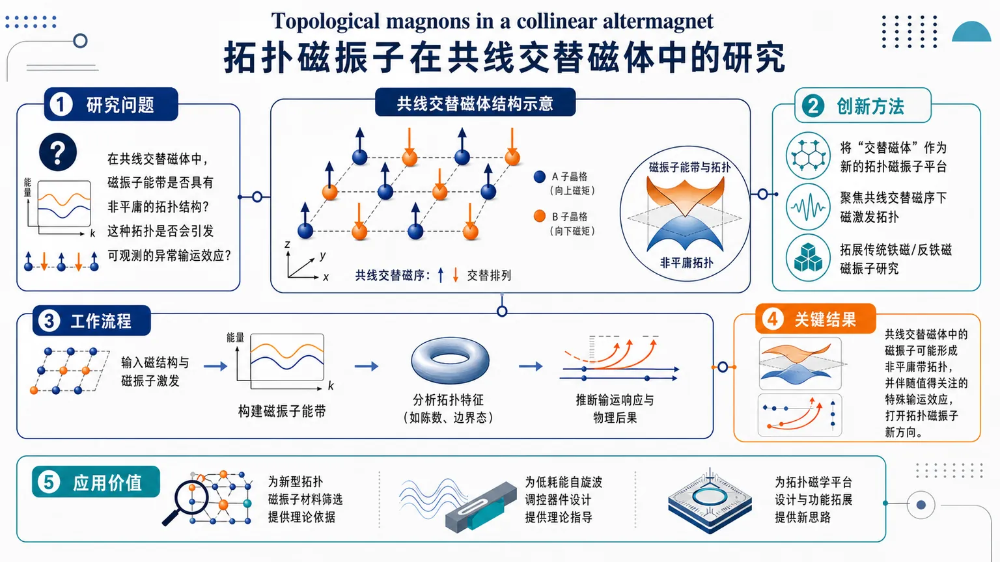
研究问题在共线交替磁体中，磁振子能带是否具有非平庸的拓扑结构？这种拓扑是否会进一步引发可观测的异常输运效应？创新方法将近年提出的“交替磁体”作为一种新的拓扑磁振子平台，直接聚焦共线交替磁序下的磁激发拓扑，把传统铁磁/反铁磁中的磁振子研究拓展到全新的磁序类型。工作流程输入共线交替磁体的磁结构与磁振子激发；构建并分析磁振子能带；检查带结构是否存在拓扑非平庸特征；据此推断可能出现的输运响应与物理后果。关键结果论文指出：共线交替磁体中的磁振子并非简单平庸激发，而可能形成非平庸带拓扑；这种拓扑性意味着体系存在值得关注的特殊输运效应，为拓扑磁振子研究打开新方向。应用价值为寻找新型拓扑磁振子材料提供新的磁序候选；为自旋波调控、低耗能磁振子输运器件和拓扑磁学平台设计提供理论依据。核心概览
研究共线交替磁体中的磁振子拓扑性质，关注能带拓扑与可能的手性边缘激发，属于拓扑磁振子与交替磁体方向。
方法要点
- 围绕共线交替磁有序背景，分析磁振子能带的拓扑性质。
- 关注边界态/边缘激发是否呈现手性特征。
- 可能涉及拓扑不变量或谱分析，但摘要未详述具体方法。
关键结果
- 论文明确聚焦“共线交替磁体中的拓扑磁振子”这一问题。
- 摘要指出其关注磁振子能带拓扑。
- 摘要还提到可能存在手性边缘激发。
- 具体材料、哈密顿量、拓扑不变量和边界态谱：摘要未详述。
创新性判断
- 可能的新颖点在于：把“altermagnet（交替磁体）”这一近年的磁序框架引入磁振子拓扑研究。
- 若该工作确实建立了交替磁序下的拓扑磁振子机制，则其创新性可能在于揭示此类磁序可支持非平庸磁振子边界态。
- 但由于摘要信息有限，以上创新判断仅为合理推断，具体贡献摘要未详述。
-
18
📄 摘要：题录显示论文报道具有蜂窝结构的铁电斯格明子晶体，属于极化拓扑纹理与铁电畴工程方向。摘要未提供材料体系、模拟或实验方法、周期尺度、温度和外场条件等细节，因此只能确认其主题为非共线极化拓扑阵列的形成与稳定性。
💡 亮点：蜂窝状铁电斯格明子晶体把拓扑极化纹理扩展到新的空间排列。若可电场可控，这类结构将为高密度铁电拓扑存储和可重构介电响应提供候选平台。
📖 展开分析 + 配图
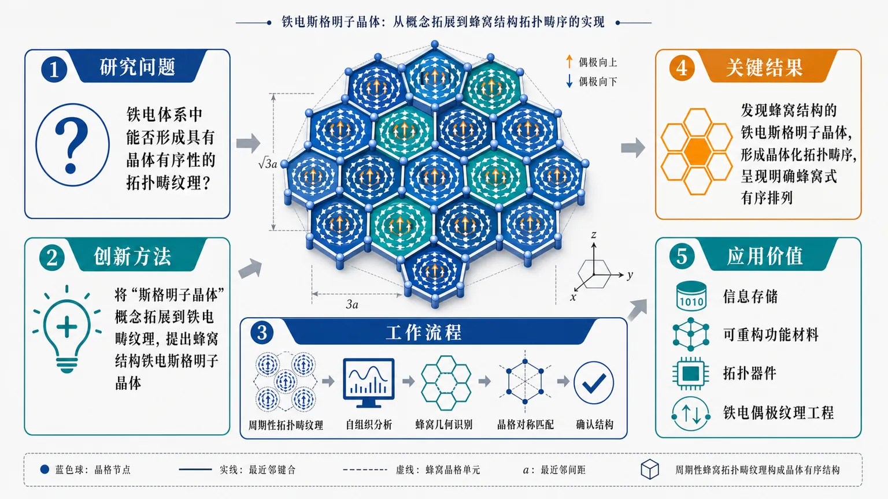
研究问题铁电体系中能否形成具有晶体有序性的拓扑畴纹理，即类似“斯格明子晶体”的周期性蜂窝排列，并揭示其与晶格对称性的对应关系。创新方法将“斯格明子晶体”概念从磁性体系拓展到铁电畴纹理中，提出蜂窝结构的铁电斯格明子晶体这一新型拓扑有序原型，突出铁电偶极纹理的晶体化组织方式。工作流程以铁电体系中的周期性拓扑畴纹理为对象，分析其是否能够自组织为晶体式有序结构；进一步识别纹理的蜂窝几何特征，并考察其与晶格对称性的匹配关系，最终确认蜂窝结构铁电斯格明子晶体的存在。关键结果报道了蜂窝结构的铁电斯格明子晶体，证明铁电体系中可以形成晶体化的拓扑畴序；该结构显示出明确的蜂窝式有序排列，为铁电拓扑纹理研究提供了新的结构范式。应用价值为铁电偶极纹理工程提供新的设计蓝图，可用于构建具有特定对称性和拓扑稳定性的铁电畴结构，推动新型信息存储、可重构功能材料和拓扑器件研究。核心概览
这篇论文聚焦蜂窝结构的铁电斯格明子晶体，属于铁电拓扑畴/极化纹理工程方向，核心是在铁电体系中构建并讨论一种非共线极化拓扑阵列。
方法要点
- 研究对象是铁电斯格明子晶体，且其空间排布呈蜂窝结构。
- 关注点在于极化拓扑纹理的形成与稳定性。
- 可推断工作与铁电畴工程相关，但摘要未详述具体实现途径。
- 摘要未详述材料体系、计算/实验手段、外场条件等关键方法细节。
关键结果
- 报道了具有蜂窝结构的铁电斯格明子晶体。
- 说明该体系能够形成非共线的极化拓扑阵列。
- 摘要明确强调了这类拓扑纹理的形成与稳定性。
创新性判断
- 可能的新颖点在于：将铁电斯格明子组织成蜂窝晶格/蜂窝阵列，区别于更常见的规则平移对称排布。
- 若属实，这意味着作者在铁电拓扑畴的几何编排上提出了新的结构类型。
- 但由于摘要未详述具体机制、实现路径和对比基线，以上创新性判断仅属合理推断，仍有不确定性。
-
19
📊 含图深析
📄 摘要：针对沿海氯盐土盐胀、冻胀沉降问题，自主制备丙烯酸酯共聚乳液 ZM 作为固化剂，考察固化剂掺量、龄期、盐含量和含水率对无侧限抗压强度的影响。结合红外等微观表征解释固化机制，并用小波神经网络预测强度；摘要未列出最优配比或强度数值。
💡 亮点：ZM 丙烯酸酯乳液与小波神经网络结合，用于氯盐土固化强度实验和预测。该工作偏岩土材料，但体现了机器学习在复杂多因素材料性能回归中的应用。
📖 展开分析 + 配图
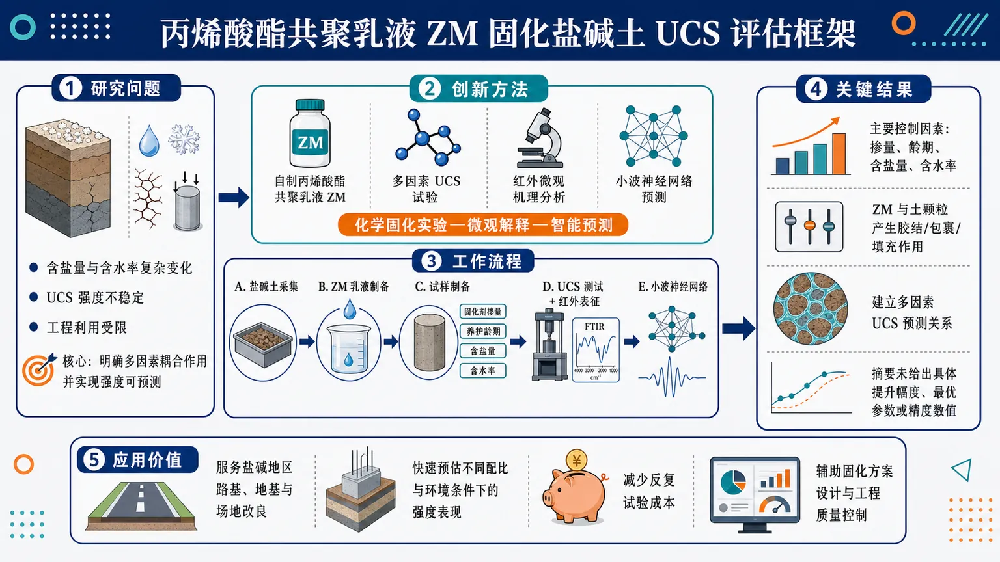
研究问题盐碱土在含盐、含水条件复杂时无侧限抗压强度不稳定，工程利用受限；核心问题是明确丙烯酸酯共聚乳液 ZM 固化后，固化剂掺量、养护龄期、含盐量和含水率如何共同影响盐碱土 UCS，并实现强度可预测。创新方法将自制丙烯酸酯共聚乳液 ZM 作为盐碱土固化剂，结合多因素 UCS 试验、红外微观机理分析与小波神经网络预测模型；Aha 点是把“化学固化实验—微观作用解释—智能强度预测”整合为一套固化盐碱土评估框架。工作流程采集盐碱土样品并制备 ZM 乳液固化剂；按不同固化剂掺量、养护龄期、含盐量和含水率制备试样；进行无侧限抗压强度测试；用红外等表征观察固化后土体微观作用；将多因素参数输入小波神经网络，输出 UCS 预测值。关键结果研究确认固化剂掺量、养护龄期、含盐量和含水率是影响固化盐碱土 UCS 的主要控制因素；红外等微观分析用于揭示 ZM 乳液与盐碱土颗粒之间的固化作用；小波神经网络可用于建立多因素条件下的 UCS 预测关系，但摘要未给出具体提升幅度、最优参数或精度数值。应用价值为盐碱地区路基、地基和场地改良提供一种乳液型化学固化思路，并可通过神经网络快速预估不同施工配比和环境条件下的强度表现，减少反复试验成本，辅助固化方案设计与工程质量控制。核心概览
研究自研丙烯酸酯共聚乳液 ZM 作为盐渍土固化剂，探究其对无侧限抗压强度的影响，并用红外等微观表征与小波神经网络进行机理解释和强度预测，属盐渍土改良与智能预测方向。
方法要点
- 以自研丙烯酸酯共聚乳液 ZM 作为盐渍土固化剂开展实验研究。
- 重点考察固化剂掺量、龄期、含盐量和含水量对无侧限抗压强度的影响。
- 结合红外等微观测试手段分析固化机理。
- 采用小波神经网络对无侧限抗压强度进行预测。
- 摘要未详述具体试验设计、模型参数和评价指标。
关键结果
- 固化剂掺量、龄期、含盐量和含水量都会影响盐渍土无侧限抗压强度。
- 红外等微观手段用于解释固化作用机理，说明研究不仅关注宏观强度，也关注微观结构变化。
- 小波神经网络被用于强度预测，表明作者尝试建立数据驱动的预测方法。
- 摘要未详述各因素的具体影响方向、显著性及预测精度。
创新性判断
- 可能的新颖点之一是：将自研丙烯酸酯共聚乳液 ZM 用于盐渍土固化，材料体系具有一定自定义和应用针对性。
- 另一新颖点可能是：把“实验固化机理分析”与“小波神经网络预测”结合，兼顾机理解释与工程预测。
- 若与同方向工作相比，其创新性还可能体现在对盐渍环境下固化行为的系统考察；但摘要未详述，具体新颖程度需结合全文判断。
-
20
📊 含图深析
📄 摘要：面向电纺等湿度敏感实验，构建机器学习决策支持系统，用本地气象观测、天气预报与室内气候测量预测实验室相对湿度。温度和相对湿度会影响溶剂挥发、射流稳定与纤维形成；该框架把事后记录改为事前预警，以减少天气驱动的可重复性波动。
💡 亮点：机器学习模型把室外气象信息转化为实验室相对湿度预报，直接服务电纺条件选择。它不是材料发现算法，却瞄准湿敏制备实验中常被忽略的可重复性误差源。
📖 展开分析 + 配图
研究问题湿度敏感实验（如静电纺丝）中，实验室相对湿度会随室外天气和室内微气候波动，影响溶剂蒸发、射流稳定性与纤维成形；核心问题是如何在实验开始前预测实验室湿度变化，并为是否开展实验、调整参数或规避风险提供决策依据。创新方法将本地气象观测、天气预报与实验室内部气候数据融合，用机器学习预测实验室未来相对湿度；Aha 点在于从“被动监测当前湿度”转为“提前预判实验微环境风险”，把天气变化映射为实验工艺风险提示。工作流程输入室外气象观测数据、天气预报数据和实验室内部温湿度记录；机器学习模型学习外部天气与室内湿度之间的关联；输出未来实验室相对湿度预测；系统将湿度波动转化为实验风险提示，辅助研究者安排实验窗口或调整工艺条件。关键结果系统能够面向实验室室内相对湿度进行预测，并将预测结果用于识别可能影响静电纺丝过程的湿度风险，包括溶剂蒸发异常、射流不稳定和纤维形貌变化；论文摘要未给出具体预测精度、基线对比或部署效果。应用价值帮助研究人员提前选择更稳定的实验时间、减少因湿度波动导致的实验失败与材料质量不一致；可作为湿度敏感实验的环境预警工具，提升实验可重复性、工艺稳定性和实验室资源利用效率。核心概览
面向电纺等湿度敏感实验，论文提出一套基于机器学习的实验室相对湿度预测决策支持系统，融合气象与室内监测数据，用于提前预警环境波动对实验可重复性的影响。
方法要点
- 融合本地气象观测、天气预报和实验室内部气候监测数据，进行湿度预测。
- 以实验室相对湿度为核心预测对象，服务于湿度敏感实验的环境控制。
- 构建决策支持系统，用于提前识别和预警可能影响实验可重复性的环境变化。
- 具体模型结构、特征工程与训练流程摘要未详述。
关键结果
- 系统可用于实验前的湿度风险预警。
- 该方法面向湿度敏感实验场景，强调对实验可重复性的保护。
- 论文明确将室内湿度预测与实验决策支持结合。
- 预测性能、误差指标和对比实验摘要未详述。
创新性判断
- 可能的新颖点在于：不是单纯做室内湿度预测，而是把外部天气信息、实验室内部监测与决策支持整合起来，直接服务于实验管理。
- 相比一般环境预测工作，其应用目标更聚焦于“湿度敏感实验的可重复性保障”。
- 是否采用了新的机器学习模型、显著优于现有方法，摘要未详述，因此这一点不能确定。
-
21
📄 摘要：建立磁性 Weyl 半金属中由磁化动力学驱动的涌现电磁感应理论。基于有效双带模型推导磁电响应公式，包含带内与带间贡献；磁电响应将磁化动力学转化为涌现感应，带内项在输运中占关键角色。
💡 亮点：磁性 Weyl 半金属可通过磁电响应把磁化动力学转化为涌现感应。该理论把 Weyl 电子结构、磁动力学与非平衡电磁响应联系起来。
-
22
📄 摘要：面向量子化学低数据、低资源预测，提出拓扑对齐归纳偏置：原子映射到固定计算单元，化学键决定成对交互及共享参数。实现为变分量子线路 Iso-QGNN 与参数匹配经典消息传递 Iso-CGNN，用于分子性质预测。
💡 亮点：Iso-QGNN 与 Iso-CGNN 将模型连边显式对齐分子键图。该设计把化学拓扑先验写入量子/经典架构，有利于低数据分子性质预测。
- 23
-
24
📄 摘要：构建量子机器学习 Δ 学习框架，学习 PM7 半经验方法相对于 ωB97X-D3/def2-TZVP 的反应能垒误差。实现保真度核和投影量子核，测试 7 种编码线路，并与支持向量回归、核岭回归、高斯过程回归结合以提升有机反应能垒预测。
💡 亮点：量子核 Δ 学习用于校正 PM7 有机反应能垒误差。多编码线路与三类回归器的组合展示了量子核在高精度化学势垒预测中的可操作路径。
-
25
📄 摘要：研究主动超对角可重构智能表面赋能的异构移动边缘计算上行卸载。混合透射/反射模式可放大信号并实现全空间覆盖，但互易器件会产生跨扇区能量泄漏，改变能耗—时延权衡；论文用分布式强化学习处理能量感知卸载与资源优化。
💡 亮点：主动 BD-RIS 的混合模式被纳入边缘卸载优化，同时显式考虑跨扇区能量泄漏。分布强化学习用于处理能耗与时延的随机权衡，可服务遮挡敏感的异构边缘计算。
-
26
📄 摘要：综述用深度学习拟合 committor 以识别复杂分子体系反应坐标的框架。神经网络输入为由原子坐标构造的集体变量，输出预测跃迁路径进程；再结合可解释人工智能分析变量贡献，从 committor 这一最可靠的路径进度量中提取反应坐标。
💡 亮点：committor 学习把反应坐标识别转化为监督深度学习问题，并用可解释分析筛出关键集体变量。该框架适合解析复杂分子转变机制，而不只依赖人工猜测坐标。
-
27
📄 摘要：实现并评估一种高效巨正则全局优化算法，用于反应环境下纳米结构材料的稳定构型搜索。算法在搜索过程中在线训练机器学习原子间势，以减少第一性原理计算调用，同时处理构型与组成自由度，目标是识别复杂结构基元及其化学转化后的稳定结构。
💡 亮点：在线训练机器学习势被嵌入巨正则全局优化，可同时搜索纳米结构的构型和组成空间。该策略降低反应环境材料稳定结构预测中的第一性原理成本。
-
28
📄 摘要：论文题为缺陷工程 Ce 氧化物中 Hubbard 局域化与神经学习动力学的相互作用，发表于 Computational Materials Science。可确认研究对象为含缺陷的铈氧化物，并将强关联局域化描述与神经网络学习过程联系；摘要信息缺失，具体模型、数据集和数值结论无法从条目判断。
💡 亮点：缺陷 Ce 氧化物被用来考察 Hubbard 局域化与神经学习动力学的耦合。该主题连接强关联氧化物缺陷化学与材料机器学习，但条目未给出可核验数值结果。
-
29
📄 摘要：利用第一性原理计算研究六角 MoH2 单层的结构稳定性、电子结构与声子介导超导性。工作动机是以二维过渡金属氢化物绕开块体氢化物需高压稳定的限制；摘要未给出临界温度或声子稳定性数值。
💡 亮点：六角 MoH2 单层被提出为常压二维氢化物超导候选。第一性原理从结构、电子与声子耦合层面评估其可行性，面向低压氢基超导材料设计。
-
30
📄 摘要：在载流超导体中直接观测光子吸收后涡旋-反涡旋对动力学，表现为量子化电压信号。信号解释为离散相滑移事件：每个涡旋穿越导致超导序参量相位改变 2π，并产生可计数电压脉冲，验证超导光探测中的涡旋机制。
💡 亮点：光子诱导涡旋-反涡旋对在超导薄膜中被直接电压读出。每次涡旋穿越对应 2π 相滑移，使超导单光子探测机理由间接推断转为动力学观测。
-
31
📄 摘要：研究二维拓扑超导体中线形涡旋核的费米子束缚态。配对势用椭圆坐标描述，沿连接两个焦点端点的线缺陷消失；拓扑绝缘体通过 s 波Ⅱ型超导体邻近诱导超导，Rashba 自旋轨道耦合锁定自旋与动量，涡旋端点束缚零能 Majorana 态。
💡 亮点：线形涡旋缺陷可在二维拓扑超导体中困住零能 Majorana 态。椭圆坐标配对势模型给出从线缺陷几何到端点束缚态的解析图像。
-
32
📄 摘要：针对 YBCO 铜氧化物薄膜，采用直接激光写入在纳米尺度调控超导和正常态性质。该方法绕开传统纳米加工对敏感高温超导材料的损伤问题，可构建低功耗计算、存储、量子传感和超导电子学所需的功能纳米结构。
💡 亮点：直接激光写入可在 YBCO 薄膜中局域调控超导性。该非传统加工路线面向高温超导纳米器件，降低了刻蚀和光刻对铜氧化物的破坏风险。
-
33
📄 摘要：研究有限自旋 1/2 环，哈密顿量含最近邻 Heisenberg 交换、Dzyaloshinsky-Moriya 相互作用和外磁场。通过在全量子哈密顿量与态依赖平均场之间引入插值参数，并用耗散 Gisin-Schrödinger 动力学分析局域磁化、连通自旋关联、单站点熵和饱和场。
💡 亮点：有限 DM 自旋 1/2 环被用作量子到经典磁动力学交叉的可控模型。插值哈密顿量和耗散动力学同时追踪关联、纠缠熵与饱和场变化。
-
34
📄 摘要：展示由极紫外光刻制备的高性能 SiMOS 量子点自旋量子比特。工作针对大规模硅量子处理器对纳米精度、均匀性和制造兼容性的需求，替代串行电子束光刻路线，推进晶圆级可重复制备与性能评估。
💡 亮点：SiMOS 自旋量子比特可由极紫外光刻制备，而不依赖电子束串行曝光。该工艺把高性能硅量子点器件推向先进半导体制造兼容。
-
35
📄 摘要：讨论扭转范德华多层中三维分数量子霍尔相的微观实现问题。目标相不是二维量子霍尔液体的简单堆叠，而具有非叶状三维纠缠、指数级拓扑简并与无理任意子编织统计；动机在于克服三维朗道量子化通常残留一维色散能带、易形成金属或密度波的困难。
💡 亮点：扭转范德华多层被提出为实现非叶状三维分数量子霍尔拓扑序的平台。若能避免三维朗道能带的金属性，将把无理任意子与本征三维拓扑序推进到可设计材料体系。
-
36
📄 摘要：在高迁移率 GaAs 准一维量子点接触附近，光刻定义片上电子谐振器并用于感测 Kondo 自旋。目标是在开放纳米收缩中区分 Kondo 态与共存多体自旋态，尤其处理局域自旋本身可能由相互作用诱导的情形。
💡 亮点：片上电子谐振器被用于探测 GaAs 量子点接触中的 Kondo 自旋。该集成感测方案有助于区分开放纳米结构中的 Kondo 态和其他多体自旋态。
-
37
📄 摘要：用中子散射研究 S=1/2 三角晶格易轴反铁磁体 K2Co(SeO3)2 的自旋超固体。纵向有序在较高温 BKT 转变出现，横向分量即玻色-爱因斯坦凝聚关联只在更低温转变后形成，并伴随层间关联改变；低温下测量有序矩极化与低能自旋涨落，显示横纵自由度分离演化。
💡 亮点：K2Co(SeO3)2 的自旋超固体经两级 BKT 转变建立：先有纵向密度波，再出现横向凝聚。中子散射直接分辨有序矩极化与低能涨落，为量子磁体超固体判据提供实验标尺。
-
38
📄 摘要：提出面向二阶拓扑多体量子磁体的量子线路算法，用于获得多体基态及其拓扑不变量。工作针对非相互作用单粒子拓扑已较成熟、而多体拓扑受基态求解复杂度限制的问题，将量子计算中的基态制备与多体拓扑不变量评估结合。
💡 亮点：该算法把二阶拓扑量子磁体的多体不变量映射到量子线路评估流程。它面向相互作用拓扑相的直接诊断，可补足经典精确对角化与张量网络在大体系中的瓶颈。
-
39
📄 摘要：面向非中心对称反铁磁体，分析磁四极矩流的产生与累积。与中心对称 d 波交替磁体中最低阶可允许磁多极矩为磁八极矩不同，非中心体系的最低阶磁多极矩可为磁四极矩，因此磁四极矩注入可能作为控制磁化的载流通道。
💡 亮点：非中心反铁磁体中磁四极矩可取代自旋或磁八极矩成为最低阶注入量。该机制把多极矩流引入磁化控制，为交替磁体与反铁磁自旋电子学提供新的对称性路线。
-
40
📄 摘要：在五量子比特硅自旋阵列中研究并行单量子比特门。硅自旋量子比特适合集成扩展，但并行微波驱动常降低保真度；作者识别微波驱动诱发的交流 Stark 效应等串扰来源，并围绕并行控制校准，以实现多量子比特同时高保真操作。
💡 亮点：五比特硅自旋阵列中，并行门误差被追踪到微波驱动诱发的交流 Stark 偏移。对串扰的定量校准直接服务于可扩展半导体量子处理器的并行控制。
-
41
📄 摘要：研究由 N 份 Ising 共形场论组成的一维量子场论，包含质量项与 N 个序参量场乘积相互作用的竞争。该理论可描述耦合 Ising 链、两腿自旋梯和 SO(N) 对称自旋链；结合微扰重整化群与大规模矩阵乘积态模拟，系统判定不同 N 与耦合下的量子相变性质。
💡 亮点：质量项与多 Ising 序参量相互作用的竞争被统一用于描述耦合链和 SO(N) 自旋链。重整化群结合矩阵乘积态给出一维强关联量子临界性的可检验分类。
-
42
📄 摘要：分析扭转双层蜂窝晶格莫尔图案中封闭拓扑畴形成的螺旋畴壁环网络。该网络提供准一维电子态；在相互作用模型中，先用无限尺寸理论研究环间超导配对关联，再考察闭合畴壁网络对超导关联的重构，强调莫尔畴壁几何对相干配对的影响。
💡 亮点：莫尔螺旋畴壁环把电子限制在闭合准一维通道中，从而改变超导配对传播。该结果提示畴壁网络几何可作为调控扭转材料相互作用有序的新旋钮。
-
43
📄 摘要：第一性原理计算预测双层 InSe 中电子/空穴掺杂可诱导巡游铁磁，同时增强滑移铁电极化。结果指向同一范德华双层内铁电性与铁磁性的微观共存，电荷掺杂成为调控多铁耦合与极化翻转能垒的有效旋钮。
💡 亮点：双层 InSe 在掺杂下同时出现巡游铁磁与增强滑移铁电。该结果把可电控载流子、二维铁电和无磁离子铁磁联系起来，为范德华多铁器件提供具体材料候选。
-
44
📄 摘要：围绕铁电体中的对称性降低与畴结构复杂化，文章指出新生畴复杂性可释放巨压电响应。体系、具体材料与数值未在给定摘要中列出，但核心机制是由较低对称性带来的多畴变体和更易响应的极化构型。
💡 亮点：铁电体中对称性降低会生成更复杂畴结构，并显著放大压电响应。该机制把巨压电性与畴工程直接关联，可用于设计高机电耦合铁电材料。
-
45
📄 摘要：在非共线反铁磁中测量磁光克尔效应，考察其与由 Berry 曲率驱动的反常霍尔效应的关系。结果显示克尔响应在温度变化下保持近似不变，尽管净磁化很小，仍能反映非共线自旋结构产生的内禀 Berry 曲率。
💡 亮点：非共线反铁磁表现出温度近似不变的磁光克尔响应。该现象表明 Berry 曲率主导的光学读出可绕开弱净磁矩限制，利于反铁磁自旋电子学。
-
46
📄 摘要：针对三聚体钌酸盐 Ba4Ru3O10 的 8% Ir 稀释替代样品，结合中子衍射、磁化率、第一性原理与原子级模拟分析磁性。中子衍射显示长程磁序仍存在，同时磁化率揭示顺磁自旋成分，说明少量 Ir 掺杂可在有序背景中保留局域未配对自旋。
💡 亮点：Ba4(Ru0.92Ir0.08)3O10 中长程磁序与顺磁自旋并存。该结果揭示三聚体 4d 氧化物对少量 5d 掺杂高度敏感，适合研究局域与集体磁性的竞争。
-
47
📄 摘要：合成 kagome 反铁磁 Gd3TiBi5 单晶并测量面内角依赖磁阻，发现雪花状六重对称各向异性。该现象反映 kagome 层内磁结构、晶格对称性与外场方向耦合，可用于解析场调控磁相和电子输运各向异性。
💡 亮点：Gd3TiBi5 单晶呈现雪花状六重角依赖磁阻。该输运指纹把 kagome 几何与面内磁各向异性直接联系起来，为场调控 kagome 反铁磁相图提供探针。
-
48
📄 摘要：面向二维四方交替磁体，建立统一理论描述单轴应变与面内磁化诱导的谷极化。框架利用对称性保护的自旋-谷锁定，说明不同外场如何打破谷简并并调控谷选择性，为交替磁体谷电子学提供可比较判据。
💡 亮点：二维四方交替磁体中的应变和面内磁化可在统一对称性框架下诱导谷极化。该结果把交替磁性、自旋-谷锁定和外场调控整合为谷电子学方案。
-
49
📄 摘要：采用扩展 Su-Schrieffer-Heeger 模型与格林函数方法，理论证明有机反铁磁结在无铁磁电极、无手性结构时也能产生显著自旋过滤。机制来自界面/分子能级的自旋分裂与量子干涉共同选择传输通道。
💡 亮点：有机反铁磁结可仅靠量子干涉实现自旋过滤，无需铁磁元件或手性分子。该机制拓展了有机自旋电子学中全反铁磁、自旋选择输运的设计空间。
-
50
📄 摘要：在 FPGA 上实现新的四瓦片分区策略，加速基础张量网络算法。高度并行的硬件方案显著优于传统 CPU 计算，并降低计算成本随体系规模增长的标度，为大规模量子多体系统模拟提供更高效的硬件路径。
💡 亮点：四瓦片分区把张量网络核心计算映射到 FPGA 并行架构，直接改善成本标度。该硬件驱动路线有助于突破二维及大规模量子多体模拟的计算瓶颈。
-
51
📄 摘要：核磁共振测量验证范德华反铁磁 NiPS3 的张-赖斯三重态基态。结果给出局域自旋、配体空穴与反铁磁背景耦合的微观证据，支持 NiPS3 作为研究电荷转移、强关联和低维磁激发的模型体系。
💡 亮点：核磁共振直接确认 NiPS3 中张-赖斯三重态基态。该发现把经典铜氧化物关联物理的张-赖斯图像扩展到范德华镍磷硫化物。
-
52
📄 摘要：预印本提出自旋波长电磁非局域理论，用旋转参数、尤其自旋周期与同步轨道尺度描述密度梯度和几何结构。框架试图在不显含质量与引力常数的形式下联系内部径向结构和外部轨道构型，内容偏理论构型而非材料计算。
💡 亮点：该理论用旋转几何和同步轨道尺度重写场与轨道结构。其与凝聚态材料的直接联系较弱，但体现了用自旋几何变量描述非局域场响应的尝试。
-
53
📄 摘要：提出两阶段逆设计流程，生成二维无序隐形超均匀三价光子网络。目标是在大尺寸中保持各向同性完全光子带隙，同时阻断任意传播方向与 TE/TM 两种偏振；方法改进由隐形超均匀点阵到三价网络的构造，以解决普通无序体系随尺寸增大难维持完全带隙的问题。
💡 亮点：两阶段逆设计把隐形超均匀点图转化为三价无序光子网络，并瞄准大体系完全带隙。该策略针对无序光子晶体的尺寸退化问题，有望实现偏振与方向无关的宽带阻光。
-
54
📄 摘要：提出 PipeCycle，用于能量采集联邦学习中受电池约束的分布式训练。客户端按流水循环组组织；一个组完成组内聚合后，其更新可在其他组训练期间继续传递。框架显式考虑本地训练计算能耗与能量到达波动，缓解复杂模型下客户端参与不稳定问题。
💡 亮点：PipeCycle 用电池感知的流水循环分组组织能量采集客户端训练。它把计算能耗纳入调度，可提高能量受限联邦学习的持续参与与训练效率。
-
55
📄 摘要：建立解析算子方程的张量网络有限元框架，将有限元离散与张量网络变分表示连接。方法可把高度非线性偏微分方程转化为线性矩阵方程，并利用张量网络表达离散系统中的相关结构，为科学与工程中的算子方程求解提供统一计算形式。
💡 亮点：张量网络有限元把连续算子方程离散后压缩到张量网络表示中，并可线性化处理非线性偏微分方程。该框架连接数值 PDE 与多体张量算法，适合高维相关场求解。
-
56
📄 摘要：用 Geant4 模拟的宇宙线 μ 子数据，比较 8×8 分段闪烁体探测器的亚像素位置与角度重建方法。Transformer、卷积网络、线性回归和能量加权质心被系统对比；结果显示机器学习方法，尤其 Transformer，在位置与角分辨率上优于传统质心法。
💡 亮点：Transformer 在 8×8 闪烁体阵列的 μ 子轨迹重建中优于能量加权质心。该方法可提升离散粒子探测器的亚像素定位与角分辨能力。
-
57
📄 摘要：评估用于气动预测的前沿深度学习代理模型，重点包括直接近似解算子映射的算子学习模型。目标是在形状优化、载荷分析等需大量高保真 CFD 模拟的场景中，以低成本替代传统数值求解器，并比较不同架构在气动场预测中的表现。
💡 亮点：多类深度学习代理模型被系统比较于气动高保真预测任务。算子学习直接近似参数到流场的映射，契合需要大量 CFD 调用的工程优化。
-
58
📄 摘要：用 CMS Run 2015D 开放数据搜索与轻子衰变 Z 玻色子伴随产生的暗物质，质心能量 13 TeV，积分亮度 2.32 fb⁻¹。选择 μμ 与 ee 单 Z 末态，从 MINIAOD/MINIAODSIM 提取 40 个运动学观测量，经物理选择清洗后得到 37 维特征，并训练 5 个神经样条流模型。
💡 亮点：神经样条流被用于 13 TeV CMS 开放数据的单 Z 暗物质搜索，输入为 37 维运动学特征。该流程展示可逆生成模型在高能物理开放数据异常搜索中的应用。
-
59
📄 摘要：提出 MOJO，即基于掩码自编码器的联合训练框架，用未标注神经数据提升群体活动解码。现有逐脉冲标记模型多依赖带行为标签的监督学习，限制多会话预训练；MOJO 通过未标注数据预训练并联合监督任务，提高神经解码器的稳健性与跨会话泛化。
💡 亮点：MOJO 将掩码自编码预训练引入逐脉冲神经数据建模，突破行为标签稀缺限制。它面向脑机接口和闭环实验中的跨会话可泛化解码。
-
60
📄 摘要：面向下一代移动网络、感知通信一体化与低空自组织网络中的特定辐射源识别，提出可靠性引导的频谱生成增强。方法利用射频硬件指纹，在少样本条件下生成频谱数据以提高主动发射机识别的稳健性，目标是支撑频谱态势感知与安全协同。
💡 亮点：频谱生成增强被用于少样本射频指纹识别，并以可靠性约束筛选增广样本。该策略面向感知通信一体化网络中的发射源认证与频谱安全。